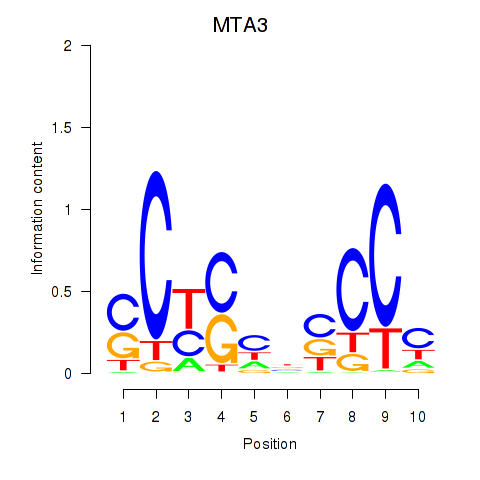

Motif ID: RCOR1_MTA3
Z-value: 1.731

Transcription factors associated with RCOR1_MTA3:
| Gene Symbol | Entrez ID | Gene Name |
|---|---|---|
| MTA3 | ENSG00000057935.9 | MTA3 |
| RCOR1 | ENSG00000089902.8 | RCOR1 |
![](http://string-db.org/api/image/network?network_flavor=evidence&limit=0&species=9606&caller_identity=MARA&identifiers=9606.ENSP00000216862%0D9606.ENSP00000335229%0D9606.ENSP00000306497%0D9606.ENSP00000408132%0D9606.ENSP00000345477%0D9606.ENSP00000299295%0D9606.ENSP00000217515%0D9606.ENSP00000312411%0D9606.ENSP00000358529%0D9606.ENSP00000469204%0D9606.ENSP00000359035%0D9606.ENSP00000296658%0D9606.ENSP00000083182%0D9606.ENSP00000380888%0D9606.ENSP00000300900%0D9606.ENSP00000304111%0D9606.ENSP00000360985%0D9606.ENSP00000361066%0D9606.ENSP00000351642%0D9606.ENSP00000358866%0D9606.ENSP00000220966%0D9606.ENSP00000222388%0D9606.ENSP00000330408%0D9606.ENSP00000295901%0D9606.ENSP00000295902%0D9606.ENSP00000320794%0D9606.ENSP00000303242%0D9606.ENSP00000321347%0D9606.ENSP00000269127%0D9606.ENSP00000354487%0D9606.ENSP00000359095%0D9606.ENSP00000351650%0D9606.ENSP00000353114%0D9606.ENSP00000319591%0D9606.ENSP00000360473%0D9606.ENSP00000358541%0D9606.ENSP00000330432%0D9606.ENSP00000371994%0D9606.ENSP00000375067%0D9606.ENSP00000418994%0D9606.ENSP00000360672%0D9606.ENSP00000184956%0D9606.ENSP00000297404%0D9606.ENSP00000379290%0D9606.ENSP00000229955%0D9606.ENSP00000352163%0D9606.ENSP00000256646%0D9606.ENSP00000322791%0D9606.ENSP00000379204%0D9606.ENSP00000000233%0D9606.ENSP00000417470%0D9606.ENSP00000300575%0D9606.ENSP00000345395%0D9606.ENSP00000442518%0D9606.ENSP00000306564%0D9606.ENSP00000261837%0D9606.ENSP00000360683%0D9606.ENSP00000262294%0D9606.ENSP00000310649%0D9606.ENSP00000358022%0D9606.ENSP00000338766%0D9606.ENSP00000262593%0D9606.ENSP00000457868%0D9606.ENSP00000300896%0D9606.ENSP00000359070%0D9606.ENSP00000301464%0D9606.ENSP00000376957%0D9606.ENSP00000383682%0D9606.ENSP00000337839%0D9606.ENSP00000410890%0D9606.ENSP00000246515%0D9606.ENSP00000275730%0D9606.ENSP00000428966%0D9606.ENSP00000353007%0D9606.ENSP00000356094%0D9606.ENSP00000381590%0D9606.ENSP00000330361%0D9606.ENSP00000246186%0D9606.ENSP00000342858%0D9606.ENSP00000291281%0D9606.ENSP00000362354%0D9606.ENSP00000246112%0D9606.ENSP00000304308%0D9606.ENSP00000354522%0D9606.ENSP00000302599%0D9606.ENSP00000216330%0D9606.ENSP00000286648%0D9606.ENSP00000327427%0D9606.ENSP00000290438%0D9606.ENSP00000251241%0D9606.ENSP00000272644%0D9606.ENSP00000309524%0D9606.ENSP00000045083%0D9606.ENSP00000361009%0D9606.ENSP00000347802%0D9606.ENSP00000387046%0D9606.ENSP00000271636%0D9606.ENSP00000271638%0D9606.ENSP00000306682%0D9606.ENSP00000358458%0D9606.ENSP00000221496)
{kind=link}
{kind=link}
{kind=link}
{kind=link}
Top targets:
Gene overrepresentation in biological_process category:
| Log-likelihood per target | Total log-likelihood | Term | Description |
|---|---|---|---|
| 1.9 | 7.7 | GO:1905069 | allantois development(GO:1905069) |
| 1.6 | 6.4 | GO:0042369 | vitamin D catabolic process(GO:0042369) |
| 1.2 | 1.2 | GO:0003197 | endocardial cushion development(GO:0003197) |
| 1.2 | 1.2 | GO:0097191 | extrinsic apoptotic signaling pathway(GO:0097191) |
| 0.9 | 0.9 | GO:1990009 | retinal cell apoptotic process(GO:1990009) |
| 0.8 | 2.5 | GO:1900073 | regulation of neuromuscular synaptic transmission(GO:1900073) positive regulation of neuromuscular synaptic transmission(GO:1900075) |
| 0.8 | 2.3 | GO:2000646 | positive regulation of receptor catabolic process(GO:2000646) |
| 0.8 | 2.3 | GO:0034970 | histone H3-R2 methylation(GO:0034970) |
| 0.7 | 0.7 | GO:0021794 | thalamus development(GO:0021794) |
| 0.7 | 4.5 | GO:0036353 | histone H2A-K119 monoubiquitination(GO:0036353) |
| 0.7 | 0.7 | GO:0042832 | response to protozoan(GO:0001562) defense response to protozoan(GO:0042832) |
| 0.7 | 4.8 | GO:0035624 | receptor transactivation(GO:0035624) |
| 0.6 | 1.9 | GO:2000705 | dense core granule biogenesis(GO:0061110) regulation of dense core granule biogenesis(GO:2000705) |
| 0.6 | 3.8 | GO:0030421 | defecation(GO:0030421) |
| 0.6 | 2.5 | GO:0042323 | negative regulation of circadian sleep/wake cycle, non-REM sleep(GO:0042323) negative regulation of mucus secretion(GO:0070256) |
| 0.6 | 2.5 | GO:1902990 | mitotic telomere maintenance via semi-conservative replication(GO:1902990) |
| 0.6 | 1.8 | GO:0032290 | peripheral nervous system myelin formation(GO:0032290) |
| 0.6 | 0.6 | GO:0097396 | response to interleukin-17(GO:0097396) cellular response to interleukin-17(GO:0097398) |
| 0.6 | 1.8 | GO:0046586 | regulation of calcium-dependent cell-cell adhesion(GO:0046586) |
| 0.6 | 1.8 | GO:0048170 | positive regulation of long-term neuronal synaptic plasticity(GO:0048170) |
| 0.6 | 0.6 | GO:0033866 | nucleoside bisphosphate biosynthetic process(GO:0033866) ribonucleoside bisphosphate biosynthetic process(GO:0034030) purine nucleoside bisphosphate biosynthetic process(GO:0034033) |
| 0.6 | 2.3 | GO:0032899 | regulation of neurotrophin production(GO:0032899) |
| 0.6 | 0.6 | GO:0060352 | cell adhesion molecule production(GO:0060352) |
| 0.6 | 0.6 | GO:1903939 | regulation of TORC2 signaling(GO:1903939) |
| 0.6 | 0.6 | GO:0051673 | membrane disruption in other organism(GO:0051673) |
| 0.6 | 0.6 | GO:1903975 | regulation of glial cell migration(GO:1903975) |
| 0.5 | 0.5 | GO:0009415 | response to water(GO:0009415) |
| 0.5 | 1.6 | GO:0007388 | anterior compartment pattern formation(GO:0007387) posterior compartment specification(GO:0007388) |
| 0.5 | 0.5 | GO:0010644 | cell communication by electrical coupling(GO:0010644) |
| 0.5 | 2.7 | GO:0060023 | soft palate development(GO:0060023) |
| 0.5 | 2.1 | GO:0061324 | glial cell fate determination(GO:0007403) canonical Wnt signaling pathway involved in positive regulation of cardiac outflow tract cell proliferation(GO:0061324) regulation of chromatin-mediated maintenance of transcription(GO:1904499) positive regulation of chromatin-mediated maintenance of transcription(GO:1904501) regulation of euchromatin binding(GO:1904793) |
| 0.5 | 0.5 | GO:0051342 | regulation of cyclic-nucleotide phosphodiesterase activity(GO:0051342) negative regulation of cyclic-nucleotide phosphodiesterase activity(GO:0051344) |
| 0.5 | 2.1 | GO:0032972 | regulation of muscle filament sliding speed(GO:0032972) |
| 0.5 | 2.1 | GO:1904199 | positive regulation of regulation of vascular smooth muscle cell membrane depolarization(GO:1904199) regulation of vascular smooth muscle cell membrane depolarization(GO:1990736) |
| 0.5 | 2.0 | GO:0060921 | sinoatrial node development(GO:0003163) sinoatrial node cell differentiation(GO:0060921) |
| 0.5 | 0.5 | GO:0051156 | glucose 6-phosphate metabolic process(GO:0051156) |
| 0.5 | 1.0 | GO:0060998 | regulation of dendritic spine development(GO:0060998) |
| 0.5 | 2.0 | GO:0000706 | meiotic DNA double-strand break processing(GO:0000706) |
| 0.5 | 0.5 | GO:0045404 | positive regulation of interleukin-4 biosynthetic process(GO:0045404) |
| 0.5 | 2.0 | GO:0035054 | embryonic heart tube anterior/posterior pattern specification(GO:0035054) |
| 0.5 | 3.5 | GO:0014846 | esophagus smooth muscle contraction(GO:0014846) |
| 0.5 | 2.9 | GO:0014005 | microglia differentiation(GO:0014004) microglia development(GO:0014005) |
| 0.5 | 1.0 | GO:0032481 | positive regulation of type I interferon production(GO:0032481) |
| 0.5 | 0.5 | GO:0045976 | negative regulation of mitotic cell cycle, embryonic(GO:0045976) |
| 0.5 | 2.3 | GO:0051083 | 'de novo' cotranslational protein folding(GO:0051083) |
| 0.5 | 0.5 | GO:0034113 | heterotypic cell-cell adhesion(GO:0034113) |
| 0.4 | 2.2 | GO:0042350 | GDP-L-fucose biosynthetic process(GO:0042350) |
| 0.4 | 0.4 | GO:0009134 | nucleoside diphosphate catabolic process(GO:0009134) |
| 0.4 | 0.9 | GO:0032289 | central nervous system myelin formation(GO:0032289) |
| 0.4 | 0.4 | GO:0032434 | regulation of proteasomal ubiquitin-dependent protein catabolic process(GO:0032434) |
| 0.4 | 1.8 | GO:0007506 | gonadal mesoderm development(GO:0007506) |
| 0.4 | 2.2 | GO:1905075 | occluding junction disassembly(GO:1905071) regulation of occluding junction disassembly(GO:1905073) positive regulation of occluding junction disassembly(GO:1905075) |
| 0.4 | 0.9 | GO:0010980 | regulation of vitamin D 24-hydroxylase activity(GO:0010979) positive regulation of vitamin D 24-hydroxylase activity(GO:0010980) |
| 0.4 | 1.3 | GO:0071335 | submandibular salivary gland formation(GO:0060661) hair follicle cell proliferation(GO:0071335) regulation of hair follicle cell proliferation(GO:0071336) positive regulation of hair follicle cell proliferation(GO:0071338) |
| 0.4 | 0.4 | GO:0060419 | heart growth(GO:0060419) |
| 0.4 | 1.3 | GO:1990258 | box C/D snoRNA 3'-end processing(GO:0000494) box C/D snoRNA metabolic process(GO:0033967) box C/D snoRNA processing(GO:0034963) histone glutamine methylation(GO:1990258) |
| 0.4 | 0.4 | GO:0010726 | positive regulation of hydrogen peroxide metabolic process(GO:0010726) |
| 0.4 | 2.5 | GO:0045743 | positive regulation of fibroblast growth factor receptor signaling pathway(GO:0045743) |
| 0.4 | 2.5 | GO:0030037 | actin filament reorganization involved in cell cycle(GO:0030037) |
| 0.4 | 0.4 | GO:0046476 | glucosylceramide biosynthetic process(GO:0006679) glycosylceramide biosynthetic process(GO:0046476) |
| 0.4 | 1.7 | GO:0042574 | retinal metabolic process(GO:0042574) |
| 0.4 | 1.6 | GO:0021816 | lamellipodium assembly involved in ameboidal cell migration(GO:0003363) extension of a leading process involved in cell motility in cerebral cortex radial glia guided migration(GO:0021816) |
| 0.4 | 2.0 | GO:0048496 | maintenance of organ identity(GO:0048496) |
| 0.4 | 1.2 | GO:0050651 | dermatan sulfate proteoglycan biosynthetic process(GO:0050651) |
| 0.4 | 2.0 | GO:0001743 | optic placode formation(GO:0001743) |
| 0.4 | 1.2 | GO:0045645 | regulation of eosinophil differentiation(GO:0045643) positive regulation of eosinophil differentiation(GO:0045645) |
| 0.4 | 3.2 | GO:0043569 | negative regulation of insulin-like growth factor receptor signaling pathway(GO:0043569) |
| 0.4 | 1.2 | GO:1905000 | regulation of membrane repolarization during atrial cardiac muscle cell action potential(GO:1905000) |
| 0.4 | 0.4 | GO:1903423 | positive regulation of synaptic vesicle endocytosis(GO:1900244) positive regulation of synaptic vesicle transport(GO:1902805) positive regulation of synaptic vesicle recycling(GO:1903423) |
| 0.4 | 0.8 | GO:0035262 | gonad morphogenesis(GO:0035262) |
| 0.4 | 1.2 | GO:0044313 | protein K6-linked deubiquitination(GO:0044313) |
| 0.4 | 2.3 | GO:2000275 | regulation of oxidative phosphorylation uncoupler activity(GO:2000275) |
| 0.4 | 2.3 | GO:0034227 | tRNA thio-modification(GO:0034227) |
| 0.4 | 1.1 | GO:0048633 | positive regulation of skeletal muscle tissue growth(GO:0048633) |
| 0.4 | 1.1 | GO:0042938 | dipeptide transport(GO:0042938) |
| 0.4 | 1.5 | GO:0031133 | regulation of axon diameter(GO:0031133) |
| 0.4 | 1.1 | GO:0048203 | vesicle targeting, trans-Golgi to endosome(GO:0048203) |
| 0.4 | 0.4 | GO:0090315 | negative regulation of protein targeting to membrane(GO:0090315) |
| 0.4 | 1.1 | GO:0007412 | axon target recognition(GO:0007412) |
| 0.4 | 0.4 | GO:0030263 | apoptotic chromosome condensation(GO:0030263) |
| 0.4 | 1.5 | GO:0032849 | positive regulation of cellular pH reduction(GO:0032849) |
| 0.4 | 1.5 | GO:0035669 | TRAM-dependent toll-like receptor signaling pathway(GO:0035668) TRAM-dependent toll-like receptor 4 signaling pathway(GO:0035669) |
| 0.4 | 2.2 | GO:0060478 | acrosomal vesicle exocytosis(GO:0060478) |
| 0.4 | 1.5 | GO:0001560 | regulation of cell growth by extracellular stimulus(GO:0001560) |
| 0.4 | 1.5 | GO:0032466 | negative regulation of cytokinesis(GO:0032466) |
| 0.4 | 1.5 | GO:0019521 | aldonic acid metabolic process(GO:0019520) D-gluconate metabolic process(GO:0019521) |
| 0.4 | 1.5 | GO:0046166 | glyceraldehyde-3-phosphate biosynthetic process(GO:0046166) |
| 0.4 | 1.5 | GO:2001301 | lipoxin biosynthetic process(GO:2001301) lipoxin A4 metabolic process(GO:2001302) lipoxin A4 biosynthetic process(GO:2001303) |
| 0.4 | 1.5 | GO:0021558 | trochlear nerve development(GO:0021558) |
| 0.4 | 1.1 | GO:2000687 | negative regulation of rubidium ion transport(GO:2000681) negative regulation of rubidium ion transmembrane transporter activity(GO:2000687) |
| 0.4 | 2.5 | GO:1904995 | negative regulation of leukocyte adhesion to vascular endothelial cell(GO:1904995) |
| 0.4 | 0.4 | GO:1903371 | regulation of endoplasmic reticulum tubular network organization(GO:1903371) |
| 0.4 | 0.4 | GO:0003032 | detection of oxygen(GO:0003032) |
| 0.4 | 1.8 | GO:0044501 | modulation of signal transduction in other organism(GO:0044501) modulation by symbiont of host signal transduction pathway(GO:0052027) modulation of signal transduction in other organism involved in symbiotic interaction(GO:0052250) modulation by symbiont of host I-kappaB kinase/NF-kappaB cascade(GO:0085032) |
| 0.4 | 7.4 | GO:0035970 | peptidyl-threonine dephosphorylation(GO:0035970) |
| 0.4 | 1.1 | GO:0002277 | myeloid dendritic cell activation involved in immune response(GO:0002277) |
| 0.3 | 2.1 | GO:1901908 | diadenosine polyphosphate catabolic process(GO:0015961) diphosphoinositol polyphosphate metabolic process(GO:0071543) diadenosine pentaphosphate metabolic process(GO:1901906) diadenosine pentaphosphate catabolic process(GO:1901907) diadenosine hexaphosphate metabolic process(GO:1901908) diadenosine hexaphosphate catabolic process(GO:1901909) adenosine 5'-(hexahydrogen pentaphosphate) metabolic process(GO:1901910) adenosine 5'-(hexahydrogen pentaphosphate) catabolic process(GO:1901911) |
| 0.3 | 0.7 | GO:0060596 | mammary placode formation(GO:0060596) |
| 0.3 | 0.3 | GO:0032714 | negative regulation of interleukin-5 production(GO:0032714) |
| 0.3 | 1.0 | GO:0031446 | regulation of fast-twitch skeletal muscle fiber contraction(GO:0031446) positive regulation of fast-twitch skeletal muscle fiber contraction(GO:0031448) |
| 0.3 | 1.0 | GO:2000374 | regulation of oxygen metabolic process(GO:2000374) |
| 0.3 | 1.0 | GO:0072579 | molybdenum incorporation into molybdenum-molybdopterin complex(GO:0018315) metal incorporation into metallo-molybdopterin complex(GO:0042040) glycine receptor clustering(GO:0072579) |
| 0.3 | 1.7 | GO:0044240 | multicellular organism lipid catabolic process(GO:0044240) |
| 0.3 | 2.7 | GO:0038195 | urokinase plasminogen activator signaling pathway(GO:0038195) |
| 0.3 | 1.4 | GO:1903060 | regulation of N-terminal protein palmitoylation(GO:0060254) negative regulation of N-terminal protein palmitoylation(GO:0060262) negative regulation of protein lipidation(GO:1903060) |
| 0.3 | 1.7 | GO:0001992 | regulation of systemic arterial blood pressure by vasopressin(GO:0001992) |
| 0.3 | 0.7 | GO:0060994 | regulation of transcription from RNA polymerase II promoter involved in kidney development(GO:0060994) |
| 0.3 | 1.7 | GO:1902938 | regulation of intracellular calcium activated chloride channel activity(GO:1902938) |
| 0.3 | 0.3 | GO:0006537 | glutamate biosynthetic process(GO:0006537) |
| 0.3 | 0.3 | GO:0015942 | formate metabolic process(GO:0015942) |
| 0.3 | 1.7 | GO:0046391 | 5-phosphoribose 1-diphosphate biosynthetic process(GO:0006015) 5-phosphoribose 1-diphosphate metabolic process(GO:0046391) |
| 0.3 | 1.0 | GO:0090310 | negative regulation of methylation-dependent chromatin silencing(GO:0090310) |
| 0.3 | 1.4 | GO:0090095 | regulation of metanephric cap mesenchymal cell proliferation(GO:0090095) positive regulation of metanephric cap mesenchymal cell proliferation(GO:0090096) |
| 0.3 | 1.0 | GO:0071262 | regulation of eIF2 alpha phosphorylation by amino acid starvation(GO:0060733) regulation of translational initiation in response to starvation(GO:0071262) positive regulation of translational initiation in response to starvation(GO:0071264) |
| 0.3 | 1.0 | GO:0010701 | positive regulation of norepinephrine secretion(GO:0010701) |
| 0.3 | 0.3 | GO:0070898 | RNA polymerase III transcriptional preinitiation complex assembly(GO:0070898) |
| 0.3 | 1.7 | GO:0035948 | positive regulation of gluconeogenesis by positive regulation of transcription from RNA polymerase II promoter(GO:0035948) |
| 0.3 | 1.0 | GO:0044727 | DNA demethylation of male pronucleus(GO:0044727) |
| 0.3 | 1.3 | GO:1990502 | dense core granule maturation(GO:1990502) |
| 0.3 | 1.0 | GO:0060370 | susceptibility to T cell mediated cytotoxicity(GO:0060370) |
| 0.3 | 1.3 | GO:0044314 | protein K27-linked ubiquitination(GO:0044314) |
| 0.3 | 2.3 | GO:0050915 | sensory perception of sour taste(GO:0050915) |
| 0.3 | 3.3 | GO:0035021 | negative regulation of Rac protein signal transduction(GO:0035021) |
| 0.3 | 1.0 | GO:0002416 | IgG immunoglobulin transcytosis in epithelial cells mediated by FcRn immunoglobulin receptor(GO:0002416) |
| 0.3 | 1.6 | GO:0072139 | glomerular parietal epithelial cell differentiation(GO:0072139) |
| 0.3 | 0.7 | GO:1902310 | positive regulation of peptidyl-serine dephosphorylation(GO:1902310) |
| 0.3 | 0.3 | GO:2000118 | regulation of sodium-dependent phosphate transport(GO:2000118) |
| 0.3 | 1.3 | GO:0030718 | germ-line stem cell population maintenance(GO:0030718) |
| 0.3 | 1.0 | GO:0061300 | cerebellum vasculature development(GO:0061300) |
| 0.3 | 1.0 | GO:0090340 | positive regulation of high-density lipoprotein particle assembly(GO:0090108) positive regulation of secretion of lysosomal enzymes(GO:0090340) |
| 0.3 | 2.2 | GO:0022614 | membrane to membrane docking(GO:0022614) |
| 0.3 | 0.3 | GO:0042746 | regulation of circadian sleep/wake cycle, wakefulness(GO:0010840) circadian sleep/wake cycle, wakefulness(GO:0042746) |
| 0.3 | 1.2 | GO:0044028 | DNA hypomethylation(GO:0044028) hypomethylation of CpG island(GO:0044029) |
| 0.3 | 0.6 | GO:0048254 | snoRNA localization(GO:0048254) |
| 0.3 | 0.3 | GO:0017055 | negative regulation of RNA polymerase II transcriptional preinitiation complex assembly(GO:0017055) |
| 0.3 | 1.2 | GO:1902523 | positive regulation of protein K63-linked ubiquitination(GO:1902523) |
| 0.3 | 0.3 | GO:0032606 | type I interferon production(GO:0032606) |
| 0.3 | 0.3 | GO:1901979 | regulation of inward rectifier potassium channel activity(GO:1901979) |
| 0.3 | 0.3 | GO:0060411 | cardiac septum morphogenesis(GO:0060411) |
| 0.3 | 1.2 | GO:0033634 | positive regulation of cell-cell adhesion mediated by integrin(GO:0033634) |
| 0.3 | 0.9 | GO:0050760 | negative regulation of thymidylate synthase biosynthetic process(GO:0050760) |
| 0.3 | 0.9 | GO:1904298 | positive regulation of neutrophil degranulation(GO:0043315) cellular response to gravity(GO:0071258) positive regulation of neutrophil activation(GO:1902565) regulation of transcytosis(GO:1904298) positive regulation of transcytosis(GO:1904300) regulation of maternal process involved in parturition(GO:1904301) positive regulation of maternal process involved in parturition(GO:1904303) response to 2-O-acetyl-1-O-hexadecyl-sn-glycero-3-phosphocholine(GO:1904316) cellular response to 2-O-acetyl-1-O-hexadecyl-sn-glycero-3-phosphocholine(GO:1904317) |
| 0.3 | 1.2 | GO:0006566 | threonine metabolic process(GO:0006566) |
| 0.3 | 1.5 | GO:0021586 | pons maturation(GO:0021586) |
| 0.3 | 0.3 | GO:0038092 | nodal signaling pathway(GO:0038092) |
| 0.3 | 2.7 | GO:1903756 | regulation of transcription from RNA polymerase II promoter by histone modification(GO:1903756) negative regulation of transcription from RNA polymerase II promoter by histone modification(GO:1903758) |
| 0.3 | 3.8 | GO:0006621 | protein retention in ER lumen(GO:0006621) |
| 0.3 | 1.5 | GO:0018146 | keratan sulfate biosynthetic process(GO:0018146) |
| 0.3 | 0.9 | GO:0010759 | positive regulation of macrophage chemotaxis(GO:0010759) |
| 0.3 | 0.3 | GO:0050885 | neuromuscular process controlling balance(GO:0050885) |
| 0.3 | 1.5 | GO:0051029 | rRNA transport(GO:0051029) |
| 0.3 | 1.2 | GO:0035752 | lysosomal lumen pH elevation(GO:0035752) |
| 0.3 | 0.3 | GO:0032330 | regulation of chondrocyte differentiation(GO:0032330) |
| 0.3 | 2.0 | GO:0033864 | positive regulation of NAD(P)H oxidase activity(GO:0033864) |
| 0.3 | 1.5 | GO:0010961 | cellular magnesium ion homeostasis(GO:0010961) |
| 0.3 | 1.2 | GO:0090119 | vesicle-mediated cholesterol transport(GO:0090119) |
| 0.3 | 1.4 | GO:1901490 | regulation of lymphangiogenesis(GO:1901490) |
| 0.3 | 0.9 | GO:0002522 | leukocyte migration involved in immune response(GO:0002522) |
| 0.3 | 1.1 | GO:1900138 | negative regulation of phospholipase A2 activity(GO:1900138) |
| 0.3 | 0.3 | GO:0006271 | DNA strand elongation involved in DNA replication(GO:0006271) |
| 0.3 | 6.0 | GO:0051386 | regulation of neurotrophin TRK receptor signaling pathway(GO:0051386) |
| 0.3 | 0.3 | GO:0001927 | exocyst assembly(GO:0001927) |
| 0.3 | 0.3 | GO:0006286 | base-excision repair, base-free sugar-phosphate removal(GO:0006286) |
| 0.3 | 0.6 | GO:0070914 | UV-damage excision repair(GO:0070914) |
| 0.3 | 0.3 | GO:1990051 | activation of protein kinase C activity(GO:1990051) |
| 0.3 | 1.1 | GO:0072600 | establishment of protein localization to Golgi(GO:0072600) |
| 0.3 | 0.3 | GO:0002415 | immunoglobulin transcytosis in epithelial cells mediated by polymeric immunoglobulin receptor(GO:0002415) |
| 0.3 | 2.2 | GO:0090116 | C-5 methylation of cytosine(GO:0090116) |
| 0.3 | 1.7 | GO:0006287 | base-excision repair, gap-filling(GO:0006287) |
| 0.3 | 0.8 | GO:1903966 | monounsaturated fatty acid metabolic process(GO:1903964) monounsaturated fatty acid biosynthetic process(GO:1903966) |
| 0.3 | 0.8 | GO:0090110 | cargo loading into COPII-coated vesicle(GO:0090110) |
| 0.3 | 0.3 | GO:1902299 | pre-replicative complex assembly involved in nuclear cell cycle DNA replication(GO:0006267) pre-replicative complex assembly(GO:0036388) pre-replicative complex assembly involved in cell cycle DNA replication(GO:1902299) |
| 0.3 | 3.6 | GO:0009838 | abscission(GO:0009838) |
| 0.3 | 1.1 | GO:1901165 | positive regulation of trophoblast cell migration(GO:1901165) |
| 0.3 | 0.6 | GO:1902174 | positive regulation of keratinocyte apoptotic process(GO:1902174) |
| 0.3 | 0.8 | GO:0006059 | hexitol metabolic process(GO:0006059) |
| 0.3 | 0.8 | GO:0050893 | sensory processing(GO:0050893) |
| 0.3 | 0.3 | GO:0090187 | positive regulation of pancreatic juice secretion(GO:0090187) |
| 0.3 | 0.8 | GO:0046901 | tetrahydrofolylpolyglutamate biosynthetic process(GO:0046901) |
| 0.3 | 0.5 | GO:0036091 | positive regulation of transcription from RNA polymerase II promoter in response to oxidative stress(GO:0036091) |
| 0.3 | 0.3 | GO:0070257 | positive regulation of mucus secretion(GO:0070257) |
| 0.3 | 0.8 | GO:1901656 | glycoside transport(GO:1901656) |
| 0.3 | 0.3 | GO:0000491 | small nucleolar ribonucleoprotein complex assembly(GO:0000491) |
| 0.3 | 1.1 | GO:0060434 | bronchus morphogenesis(GO:0060434) |
| 0.3 | 0.8 | GO:0060392 | negative regulation of SMAD protein import into nucleus(GO:0060392) |
| 0.3 | 1.3 | GO:1903070 | negative regulation of ER-associated ubiquitin-dependent protein catabolic process(GO:1903070) |
| 0.3 | 1.3 | GO:1904578 | response to thapsigargin(GO:1904578) cellular response to thapsigargin(GO:1904579) |
| 0.3 | 0.3 | GO:0046110 | xanthine metabolic process(GO:0046110) |
| 0.3 | 0.8 | GO:0046167 | glycerol-3-phosphate biosynthetic process(GO:0046167) |
| 0.3 | 1.0 | GO:1901624 | negative regulation of lymphocyte chemotaxis(GO:1901624) |
| 0.3 | 1.6 | GO:0001890 | placenta development(GO:0001890) |
| 0.3 | 1.6 | GO:0045903 | positive regulation of translational fidelity(GO:0045903) |
| 0.3 | 1.3 | GO:0061364 | apoptotic process involved in luteolysis(GO:0061364) |
| 0.3 | 1.6 | GO:0030422 | production of siRNA involved in RNA interference(GO:0030422) |
| 0.3 | 0.8 | GO:0002372 | myeloid dendritic cell cytokine production(GO:0002372) |
| 0.3 | 1.5 | GO:0099525 | presynaptic dense core granule exocytosis(GO:0099525) |
| 0.3 | 0.3 | GO:1900194 | negative regulation of oocyte maturation(GO:1900194) |
| 0.3 | 0.3 | GO:0046102 | inosine metabolic process(GO:0046102) |
| 0.3 | 1.0 | GO:0009822 | alkaloid catabolic process(GO:0009822) |
| 0.3 | 0.5 | GO:1904886 | beta-catenin destruction complex disassembly(GO:1904886) |
| 0.3 | 0.8 | GO:0003365 | establishment of cell polarity involved in ameboidal cell migration(GO:0003365) |
| 0.3 | 2.1 | GO:0070127 | tRNA aminoacylation for mitochondrial protein translation(GO:0070127) |
| 0.3 | 0.3 | GO:0048936 | peripheral nervous system neuron axonogenesis(GO:0048936) |
| 0.3 | 0.8 | GO:0043605 | cellular amide catabolic process(GO:0043605) |
| 0.3 | 0.5 | GO:0098712 | L-glutamate import across plasma membrane(GO:0098712) |
| 0.3 | 1.8 | GO:0014028 | notochord formation(GO:0014028) |
| 0.3 | 1.5 | GO:0048630 | skeletal muscle tissue growth(GO:0048630) |
| 0.3 | 1.3 | GO:0019242 | methylglyoxal biosynthetic process(GO:0019242) |
| 0.3 | 1.5 | GO:0071503 | response to heparin(GO:0071503) |
| 0.3 | 1.8 | GO:0001712 | ectodermal cell fate commitment(GO:0001712) |
| 0.3 | 0.8 | GO:1902746 | regulation of lens fiber cell differentiation(GO:1902746) |
| 0.3 | 0.8 | GO:0006117 | acetaldehyde metabolic process(GO:0006117) |
| 0.3 | 0.5 | GO:0006421 | asparaginyl-tRNA aminoacylation(GO:0006421) |
| 0.3 | 0.3 | GO:0002065 | columnar/cuboidal epithelial cell differentiation(GO:0002065) |
| 0.3 | 1.3 | GO:0042357 | thiamine diphosphate metabolic process(GO:0042357) |
| 0.3 | 1.3 | GO:0090402 | oncogene-induced cell senescence(GO:0090402) |
| 0.3 | 0.3 | GO:0034976 | response to endoplasmic reticulum stress(GO:0034976) |
| 0.3 | 0.8 | GO:1901052 | sarcosine metabolic process(GO:1901052) sarcosine catabolic process(GO:1901053) |
| 0.2 | 1.0 | GO:0072287 | metanephric distal tubule morphogenesis(GO:0072287) |
| 0.2 | 0.2 | GO:1900151 | regulation of nuclear-transcribed mRNA catabolic process, deadenylation-dependent decay(GO:1900151) positive regulation of nuclear-transcribed mRNA catabolic process, deadenylation-dependent decay(GO:1900153) |
| 0.2 | 2.7 | GO:0051547 | regulation of keratinocyte migration(GO:0051547) |
| 0.2 | 0.2 | GO:0051006 | positive regulation of lipoprotein lipase activity(GO:0051006) |
| 0.2 | 1.7 | GO:0019556 | histidine catabolic process to glutamate and formamide(GO:0019556) histidine catabolic process to glutamate and formate(GO:0019557) formamide metabolic process(GO:0043606) |
| 0.2 | 1.0 | GO:0000379 | tRNA-type intron splice site recognition and cleavage(GO:0000379) |
| 0.2 | 4.2 | GO:0060346 | bone trabecula formation(GO:0060346) |
| 0.2 | 1.2 | GO:0018125 | peptidyl-cysteine methylation(GO:0018125) |
| 0.2 | 0.7 | GO:1900085 | negative regulation of peptidyl-tyrosine autophosphorylation(GO:1900085) negative regulation of inward rectifier potassium channel activity(GO:1903609) |
| 0.2 | 0.5 | GO:0018171 | peptidyl-cysteine oxidation(GO:0018171) |
| 0.2 | 0.2 | GO:0009946 | proximal/distal axis specification(GO:0009946) |
| 0.2 | 1.0 | GO:0006987 | activation of signaling protein activity involved in unfolded protein response(GO:0006987) |
| 0.2 | 2.4 | GO:1904179 | positive regulation of adipose tissue development(GO:1904179) |
| 0.2 | 1.5 | GO:0006436 | tryptophanyl-tRNA aminoacylation(GO:0006436) |
| 0.2 | 1.2 | GO:2000312 | regulation of kainate selective glutamate receptor activity(GO:2000312) |
| 0.2 | 0.5 | GO:0038162 | erythropoietin-mediated signaling pathway(GO:0038162) |
| 0.2 | 0.2 | GO:0030174 | regulation of DNA-dependent DNA replication initiation(GO:0030174) |
| 0.2 | 0.2 | GO:0003099 | positive regulation of the force of heart contraction by chemical signal(GO:0003099) |
| 0.2 | 1.9 | GO:0046618 | drug export(GO:0046618) |
| 0.2 | 0.7 | GO:0015920 | lipopolysaccharide transport(GO:0015920) |
| 0.2 | 0.5 | GO:1990619 | histone H3-K9 deacetylation(GO:1990619) |
| 0.2 | 0.7 | GO:0055099 | response to high density lipoprotein particle(GO:0055099) |
| 0.2 | 0.7 | GO:0060054 | positive regulation of epithelial cell proliferation involved in wound healing(GO:0060054) |
| 0.2 | 1.4 | GO:0010512 | negative regulation of phosphatidylinositol biosynthetic process(GO:0010512) |
| 0.2 | 1.7 | GO:0061146 | Peyer's patch morphogenesis(GO:0061146) |
| 0.2 | 1.4 | GO:0052551 | response to defense-related nitric oxide production by other organism involved in symbiotic interaction(GO:0052551) response to defense-related host nitric oxide production(GO:0052565) |
| 0.2 | 1.0 | GO:0010842 | retina layer formation(GO:0010842) |
| 0.2 | 0.7 | GO:0070105 | positive regulation of interleukin-6-mediated signaling pathway(GO:0070105) |
| 0.2 | 0.2 | GO:0003220 | left ventricular cardiac muscle tissue morphogenesis(GO:0003220) |
| 0.2 | 0.7 | GO:0072313 | metanephric glomerular epithelium development(GO:0072244) metanephric glomerular visceral epithelial cell differentiation(GO:0072248) metanephric glomerular visceral epithelial cell development(GO:0072249) metanephric glomerular epithelial cell differentiation(GO:0072312) metanephric glomerular epithelial cell development(GO:0072313) |
| 0.2 | 0.2 | GO:0071314 | cellular response to cocaine(GO:0071314) |
| 0.2 | 0.7 | GO:0046709 | IDP metabolic process(GO:0046707) IDP catabolic process(GO:0046709) |
| 0.2 | 0.7 | GO:1902019 | regulation of cilium movement involved in cell motility(GO:0060295) regulation of cilium beat frequency involved in ciliary motility(GO:0060296) regulation of cilium-dependent cell motility(GO:1902019) |
| 0.2 | 1.4 | GO:1903378 | positive regulation of oxidative stress-induced neuron intrinsic apoptotic signaling pathway(GO:1903378) |
| 0.2 | 0.2 | GO:0036466 | synaptic vesicle recycling via endosome(GO:0036466) |
| 0.2 | 0.2 | GO:0070827 | chromatin maintenance(GO:0070827) |
| 0.2 | 0.7 | GO:0001302 | replicative cell aging(GO:0001302) |
| 0.2 | 0.5 | GO:0060019 | radial glial cell differentiation(GO:0060019) |
| 0.2 | 0.9 | GO:0098968 | neurotransmitter receptor transport postsynaptic membrane to endosome(GO:0098968) |
| 0.2 | 1.4 | GO:0006581 | acetylcholine catabolic process in synaptic cleft(GO:0001507) acetylcholine catabolic process(GO:0006581) |
| 0.2 | 0.9 | GO:0006669 | sphinganine-1-phosphate biosynthetic process(GO:0006669) |
| 0.2 | 0.5 | GO:0043633 | polyadenylation-dependent RNA catabolic process(GO:0043633) polyadenylation-dependent ncRNA catabolic process(GO:0043634) |
| 0.2 | 0.2 | GO:0051901 | positive regulation of mitochondrial depolarization(GO:0051901) |
| 0.2 | 0.7 | GO:0046641 | positive regulation of alpha-beta T cell proliferation(GO:0046641) |
| 0.2 | 1.6 | GO:0030200 | heparan sulfate proteoglycan catabolic process(GO:0030200) |
| 0.2 | 0.5 | GO:0045717 | negative regulation of fatty acid biosynthetic process(GO:0045717) |
| 0.2 | 0.7 | GO:1902463 | protein localization to cell leading edge(GO:1902463) |
| 0.2 | 0.9 | GO:0036289 | peptidyl-serine autophosphorylation(GO:0036289) |
| 0.2 | 0.7 | GO:0098886 | modification of dendritic spine(GO:0098886) |
| 0.2 | 2.3 | GO:0045602 | negative regulation of endothelial cell differentiation(GO:0045602) |
| 0.2 | 1.4 | GO:1903300 | negative regulation of glucokinase activity(GO:0033132) negative regulation of hexokinase activity(GO:1903300) |
| 0.2 | 0.7 | GO:2000721 | positive regulation of transcription from RNA polymerase II promoter involved in smooth muscle cell differentiation(GO:2000721) |
| 0.2 | 0.9 | GO:0050976 | detection of mechanical stimulus involved in sensory perception of touch(GO:0050976) |
| 0.2 | 0.5 | GO:0090427 | activation of meiosis(GO:0090427) |
| 0.2 | 0.2 | GO:0072076 | nephrogenic mesenchyme development(GO:0072076) |
| 0.2 | 0.5 | GO:0060123 | regulation of growth hormone secretion(GO:0060123) |
| 0.2 | 1.1 | GO:0070213 | protein auto-ADP-ribosylation(GO:0070213) |
| 0.2 | 1.4 | GO:1903336 | negative regulation of vacuolar transport(GO:1903336) |
| 0.2 | 0.5 | GO:0032571 | response to vitamin K(GO:0032571) |
| 0.2 | 0.5 | GO:0008355 | olfactory learning(GO:0008355) |
| 0.2 | 1.4 | GO:0098917 | retrograde trans-synaptic signaling(GO:0098917) |
| 0.2 | 1.8 | GO:0090032 | negative regulation of glucocorticoid metabolic process(GO:0031944) negative regulation of glucocorticoid biosynthetic process(GO:0031947) negative regulation of steroid hormone biosynthetic process(GO:0090032) |
| 0.2 | 0.7 | GO:0033341 | regulation of collagen binding(GO:0033341) |
| 0.2 | 2.0 | GO:0015793 | glycerol transport(GO:0015793) |
| 0.2 | 0.4 | GO:0051790 | short-chain fatty acid biosynthetic process(GO:0051790) |
| 0.2 | 0.7 | GO:1902303 | negative regulation of potassium ion export(GO:1902303) |
| 0.2 | 0.4 | GO:0032286 | central nervous system myelin maintenance(GO:0032286) |
| 0.2 | 0.7 | GO:0035674 | tricarboxylic acid transmembrane transport(GO:0035674) |
| 0.2 | 0.9 | GO:0036269 | swimming behavior(GO:0036269) |
| 0.2 | 0.7 | GO:1903568 | negative regulation of protein localization to cilium(GO:1903565) regulation of protein localization to ciliary membrane(GO:1903567) negative regulation of protein localization to ciliary membrane(GO:1903568) |
| 0.2 | 0.9 | GO:0018879 | biphenyl metabolic process(GO:0018879) |
| 0.2 | 1.3 | GO:0072658 | maintenance of protein location in membrane(GO:0072658) maintenance of protein location in plasma membrane(GO:0072660) positive regulation of membrane depolarization during cardiac muscle cell action potential(GO:1900827) |
| 0.2 | 0.2 | GO:0010890 | positive regulation of sequestering of triglyceride(GO:0010890) |
| 0.2 | 2.0 | GO:0040032 | post-embryonic body morphogenesis(GO:0040032) |
| 0.2 | 0.2 | GO:0046851 | negative regulation of bone resorption(GO:0045779) negative regulation of bone remodeling(GO:0046851) |
| 0.2 | 1.1 | GO:0043323 | regulation of natural killer cell degranulation(GO:0043321) positive regulation of natural killer cell degranulation(GO:0043323) |
| 0.2 | 1.1 | GO:0070682 | proteasome regulatory particle assembly(GO:0070682) |
| 0.2 | 0.4 | GO:0030538 | embryonic genitalia morphogenesis(GO:0030538) |
| 0.2 | 0.7 | GO:0035811 | negative regulation of urine volume(GO:0035811) |
| 0.2 | 0.4 | GO:0044380 | protein localization to cytoskeleton(GO:0044380) protein localization to microtubule cytoskeleton(GO:0072698) |
| 0.2 | 0.7 | GO:0010972 | negative regulation of G2/M transition of mitotic cell cycle(GO:0010972) |
| 0.2 | 1.5 | GO:0071947 | protein deubiquitination involved in ubiquitin-dependent protein catabolic process(GO:0071947) |
| 0.2 | 0.7 | GO:0060932 | Purkinje myocyte differentiation(GO:0003168) septum secundum development(GO:0003285) cardiac pacemaker cell fate commitment(GO:0060927) atrioventricular node cell fate commitment(GO:0060929) His-Purkinje system cell differentiation(GO:0060932) |
| 0.2 | 1.3 | GO:1990523 | bone regeneration(GO:1990523) |
| 0.2 | 0.2 | GO:0098908 | regulation of neuronal action potential(GO:0098908) |
| 0.2 | 0.9 | GO:0034721 | histone H3-K4 demethylation, trimethyl-H3-K4-specific(GO:0034721) |
| 0.2 | 0.6 | GO:0002644 | negative regulation of tolerance induction(GO:0002644) |
| 0.2 | 1.9 | GO:0042985 | negative regulation of amyloid precursor protein biosynthetic process(GO:0042985) |
| 0.2 | 1.9 | GO:0033603 | positive regulation of dopamine secretion(GO:0033603) |
| 0.2 | 0.6 | GO:0021503 | neural fold bending(GO:0021503) |
| 0.2 | 0.6 | GO:1902513 | regulation of organelle transport along microtubule(GO:1902513) |
| 0.2 | 0.6 | GO:0060545 | positive regulation of necroptotic process(GO:0060545) |
| 0.2 | 0.6 | GO:0015680 | intracellular copper ion transport(GO:0015680) |
| 0.2 | 0.4 | GO:0010728 | regulation of hydrogen peroxide biosynthetic process(GO:0010728) |
| 0.2 | 0.6 | GO:0009730 | detection of carbohydrate stimulus(GO:0009730) detection of hexose stimulus(GO:0009732) detection of monosaccharide stimulus(GO:0034287) detection of glucose(GO:0051594) |
| 0.2 | 0.8 | GO:0086092 | regulation of the force of heart contraction by cardiac conduction(GO:0086092) |
| 0.2 | 0.2 | GO:0042074 | cell migration involved in gastrulation(GO:0042074) |
| 0.2 | 1.1 | GO:2000255 | negative regulation of male germ cell proliferation(GO:2000255) |
| 0.2 | 0.8 | GO:0071462 | cellular response to water stimulus(GO:0071462) |
| 0.2 | 2.7 | GO:0030091 | protein repair(GO:0030091) |
| 0.2 | 1.1 | GO:0030070 | insulin processing(GO:0030070) |
| 0.2 | 0.4 | GO:0034059 | response to anoxia(GO:0034059) |
| 0.2 | 1.1 | GO:1903597 | regulation of renal output by angiotensin(GO:0002019) negative regulation of gap junction assembly(GO:1903597) |
| 0.2 | 1.3 | GO:0045085 | negative regulation of interleukin-2 biosynthetic process(GO:0045085) |
| 0.2 | 1.3 | GO:1902766 | skeletal muscle satellite cell migration(GO:1902766) |
| 0.2 | 1.5 | GO:0031642 | negative regulation of myelination(GO:0031642) |
| 0.2 | 0.8 | GO:2000825 | positive regulation of androgen receptor activity(GO:2000825) |
| 0.2 | 0.4 | GO:0019085 | early viral transcription(GO:0019085) |
| 0.2 | 1.0 | GO:0070494 | regulation of thrombin receptor signaling pathway(GO:0070494) negative regulation of thrombin receptor signaling pathway(GO:0070495) |
| 0.2 | 1.2 | GO:1900042 | positive regulation of interleukin-2 secretion(GO:1900042) |
| 0.2 | 0.6 | GO:0006173 | dADP biosynthetic process(GO:0006173) |
| 0.2 | 0.4 | GO:0034239 | macrophage fusion(GO:0034238) regulation of macrophage fusion(GO:0034239) positive regulation of macrophage fusion(GO:0034241) |
| 0.2 | 1.0 | GO:1903412 | response to bile acid(GO:1903412) |
| 0.2 | 0.2 | GO:0007127 | meiosis I(GO:0007127) |
| 0.2 | 1.5 | GO:1904381 | Golgi apparatus mannose trimming(GO:1904381) |
| 0.2 | 0.4 | GO:0007200 | phospholipase C-activating G-protein coupled receptor signaling pathway(GO:0007200) |
| 0.2 | 0.8 | GO:0032455 | nerve growth factor processing(GO:0032455) |
| 0.2 | 1.8 | GO:0001767 | establishment of lymphocyte polarity(GO:0001767) |
| 0.2 | 1.2 | GO:2001295 | malonyl-CoA biosynthetic process(GO:2001295) |
| 0.2 | 1.4 | GO:0061002 | negative regulation of dendritic spine morphogenesis(GO:0061002) |
| 0.2 | 2.0 | GO:0051611 | negative regulation of neurotransmitter uptake(GO:0051581) regulation of serotonin uptake(GO:0051611) negative regulation of serotonin uptake(GO:0051612) |
| 0.2 | 0.6 | GO:2000304 | positive regulation of sphingolipid biosynthetic process(GO:0090154) positive regulation of ceramide biosynthetic process(GO:2000304) |
| 0.2 | 0.2 | GO:0038169 | somatostatin receptor signaling pathway(GO:0038169) somatostatin signaling pathway(GO:0038170) |
| 0.2 | 0.6 | GO:1900114 | positive regulation of histone H3-K9 trimethylation(GO:1900114) |
| 0.2 | 1.0 | GO:0030035 | microspike assembly(GO:0030035) |
| 0.2 | 0.8 | GO:0097010 | eukaryotic translation initiation factor 4F complex assembly(GO:0097010) |
| 0.2 | 0.6 | GO:2000969 | positive regulation of alpha-amino-3-hydroxy-5-methyl-4-isoxazole propionate selective glutamate receptor activity(GO:2000969) |
| 0.2 | 0.2 | GO:0032968 | positive regulation of transcription elongation from RNA polymerase II promoter(GO:0032968) |
| 0.2 | 0.4 | GO:0002302 | CD8-positive, alpha-beta T cell differentiation involved in immune response(GO:0002302) |
| 0.2 | 2.0 | GO:1902856 | negative regulation of nonmotile primary cilium assembly(GO:1902856) |
| 0.2 | 0.2 | GO:1904378 | maintenance of unfolded protein(GO:0036506) maintenance of unfolded protein involved in ERAD pathway(GO:1904378) |
| 0.2 | 2.0 | GO:0075044 | autophagy of host cells involved in interaction with symbiont(GO:0075044) autophagy involved in symbiotic interaction(GO:0075071) |
| 0.2 | 0.6 | GO:1903753 | negative regulation of p38MAPK cascade(GO:1903753) |
| 0.2 | 0.4 | GO:0003231 | cardiac ventricle development(GO:0003231) |
| 0.2 | 0.4 | GO:0034614 | cellular response to reactive oxygen species(GO:0034614) |
| 0.2 | 2.2 | GO:0071394 | cellular response to testosterone stimulus(GO:0071394) |
| 0.2 | 0.2 | GO:0051964 | negative regulation of synapse assembly(GO:0051964) |
| 0.2 | 0.4 | GO:0061317 | canonical Wnt signaling pathway involved in cardiac muscle cell fate commitment(GO:0061317) |
| 0.2 | 0.8 | GO:0043456 | regulation of pentose-phosphate shunt(GO:0043456) |
| 0.2 | 0.4 | GO:1903348 | positive regulation of bicellular tight junction assembly(GO:1903348) |
| 0.2 | 0.6 | GO:0036451 | cap mRNA methylation(GO:0036451) |
| 0.2 | 0.2 | GO:0060364 | frontal suture morphogenesis(GO:0060364) |
| 0.2 | 0.8 | GO:1902499 | positive regulation of protein autoubiquitination(GO:1902499) |
| 0.2 | 0.6 | GO:0071812 | regulation of fever generation by regulation of prostaglandin secretion(GO:0071810) positive regulation of fever generation by positive regulation of prostaglandin secretion(GO:0071812) positive regulation of ERK1 and ERK2 cascade via TNFSF11-mediated signaling(GO:0071848) regulation of fever generation by prostaglandin secretion(GO:0100009) |
| 0.2 | 0.6 | GO:0000961 | negative regulation of mitochondrial RNA catabolic process(GO:0000961) |
| 0.2 | 0.2 | GO:0003249 | cell proliferation involved in heart valve morphogenesis(GO:0003249) regulation of cell proliferation involved in heart valve morphogenesis(GO:0003250) cell proliferation involved in heart valve development(GO:2000793) |
| 0.2 | 0.2 | GO:0032618 | interleukin-15 production(GO:0032618) |
| 0.2 | 1.0 | GO:0030311 | poly-N-acetyllactosamine biosynthetic process(GO:0030311) |
| 0.2 | 1.2 | GO:0097695 | establishment of RNA localization to telomere(GO:0097694) establishment of macromolecular complex localization to telomere(GO:0097695) |
| 0.2 | 0.4 | GO:0006419 | alanyl-tRNA aminoacylation(GO:0006419) |
| 0.2 | 1.0 | GO:0007198 | adenylate cyclase-inhibiting serotonin receptor signaling pathway(GO:0007198) |
| 0.2 | 0.6 | GO:0006435 | threonyl-tRNA aminoacylation(GO:0006435) |
| 0.2 | 0.4 | GO:0043277 | apoptotic cell clearance(GO:0043277) |
| 0.2 | 0.6 | GO:0070126 | mitochondrial translational termination(GO:0070126) |
| 0.2 | 0.2 | GO:0036093 | male germ cell proliferation(GO:0002176) germ cell proliferation(GO:0036093) |
| 0.2 | 1.0 | GO:0016103 | diterpenoid catabolic process(GO:0016103) retinoic acid catabolic process(GO:0034653) |
| 0.2 | 0.4 | GO:0046823 | negative regulation of nucleocytoplasmic transport(GO:0046823) |
| 0.2 | 0.4 | GO:0000472 | endonucleolytic cleavage to generate mature 5'-end of SSU-rRNA from (SSU-rRNA, 5.8S rRNA, LSU-rRNA)(GO:0000472) rRNA 5'-end processing(GO:0000967) ncRNA 5'-end processing(GO:0034471) |
| 0.2 | 0.2 | GO:0040031 | snRNA modification(GO:0040031) |
| 0.2 | 0.2 | GO:0071926 | endocannabinoid signaling pathway(GO:0071926) regulation of endocannabinoid signaling pathway(GO:2000124) |
| 0.2 | 0.2 | GO:0086048 | membrane depolarization during bundle of His cell action potential(GO:0086048) |
| 0.2 | 0.8 | GO:0006422 | aspartyl-tRNA aminoacylation(GO:0006422) |
| 0.2 | 0.8 | GO:0090299 | regulation of neural crest formation(GO:0090299) negative regulation of neural crest formation(GO:0090301) negative regulation of fibroblast growth factor receptor signaling pathway involved in neural plate anterior/posterior pattern formation(GO:2000314) |
| 0.2 | 2.5 | GO:0042940 | D-amino acid transport(GO:0042940) |
| 0.2 | 0.6 | GO:0015844 | monoamine transport(GO:0015844) |
| 0.2 | 0.6 | GO:0061092 | regulation of phospholipid translocation(GO:0061091) positive regulation of phospholipid translocation(GO:0061092) |
| 0.2 | 0.4 | GO:1902534 | single-organism membrane invagination(GO:1902534) |
| 0.2 | 1.1 | GO:0009106 | lipoate metabolic process(GO:0009106) |
| 0.2 | 0.8 | GO:0033031 | positive regulation of neutrophil apoptotic process(GO:0033031) |
| 0.2 | 0.6 | GO:0002408 | myeloid dendritic cell chemotaxis(GO:0002408) |
| 0.2 | 0.8 | GO:0097411 | hypoxia-inducible factor-1alpha signaling pathway(GO:0097411) |
| 0.2 | 1.1 | GO:1900169 | regulation of glucocorticoid mediated signaling pathway(GO:1900169) |
| 0.2 | 0.2 | GO:0010838 | positive regulation of keratinocyte proliferation(GO:0010838) |
| 0.2 | 0.6 | GO:0060022 | hard palate development(GO:0060022) |
| 0.2 | 0.7 | GO:0015891 | iron chelate transport(GO:0015688) siderophore transport(GO:0015891) |
| 0.2 | 1.1 | GO:0021684 | cerebellar granular layer formation(GO:0021684) cerebellar granule cell differentiation(GO:0021707) |
| 0.2 | 0.4 | GO:1902723 | negative regulation of skeletal muscle cell proliferation(GO:0014859) negative regulation of skeletal muscle satellite cell proliferation(GO:1902723) |
| 0.2 | 0.2 | GO:1990314 | cellular response to insulin-like growth factor stimulus(GO:1990314) |
| 0.2 | 0.2 | GO:2000157 | regulation of protein K48-linked deubiquitination(GO:1903093) negative regulation of protein K48-linked deubiquitination(GO:1903094) negative regulation of ubiquitin-specific protease activity(GO:2000157) |
| 0.2 | 0.7 | GO:0021524 | visceral motor neuron differentiation(GO:0021524) |
| 0.2 | 0.2 | GO:0072091 | regulation of stem cell proliferation(GO:0072091) |
| 0.2 | 0.4 | GO:0042756 | drinking behavior(GO:0042756) |
| 0.2 | 0.4 | GO:0032915 | positive regulation of transforming growth factor beta2 production(GO:0032915) |
| 0.2 | 1.5 | GO:0044375 | regulation of peroxisome size(GO:0044375) |
| 0.2 | 1.3 | GO:0008063 | Toll signaling pathway(GO:0008063) |
| 0.2 | 0.4 | GO:0030185 | nitric oxide transport(GO:0030185) |
| 0.2 | 3.1 | GO:0016446 | somatic hypermutation of immunoglobulin genes(GO:0016446) |
| 0.2 | 0.7 | GO:0035915 | pore formation in membrane of other organism(GO:0035915) |
| 0.2 | 0.2 | GO:1903595 | positive regulation of histamine secretion by mast cell(GO:1903595) |
| 0.2 | 0.2 | GO:0060956 | cardiac endothelial cell differentiation(GO:0003348) endocardial cell differentiation(GO:0060956) |
| 0.2 | 0.9 | GO:0045836 | positive regulation of meiotic nuclear division(GO:0045836) |
| 0.2 | 1.1 | GO:0006789 | bilirubin conjugation(GO:0006789) |
| 0.2 | 0.2 | GO:0071500 | cellular response to nitrosative stress(GO:0071500) |
| 0.2 | 0.9 | GO:0030278 | regulation of ossification(GO:0030278) |
| 0.2 | 1.5 | GO:0035610 | protein side chain deglutamylation(GO:0035610) |
| 0.2 | 0.2 | GO:0043954 | cellular component maintenance(GO:0043954) |
| 0.2 | 0.7 | GO:0007386 | compartment pattern specification(GO:0007386) |
| 0.2 | 0.9 | GO:0021521 | ventral spinal cord interneuron specification(GO:0021521) cell fate specification involved in pattern specification(GO:0060573) |
| 0.2 | 0.2 | GO:0002874 | regulation of chronic inflammatory response to antigenic stimulus(GO:0002874) |
| 0.2 | 0.9 | GO:0035105 | sterol regulatory element binding protein import into nucleus(GO:0035105) |
| 0.2 | 0.2 | GO:0015747 | urate transport(GO:0015747) |
| 0.2 | 0.5 | GO:0035623 | renal glucose absorption(GO:0035623) |
| 0.2 | 0.4 | GO:0002775 | antimicrobial peptide production(GO:0002775) antibacterial peptide production(GO:0002778) |
| 0.2 | 0.5 | GO:0080120 | CAAX-box protein processing(GO:0071586) CAAX-box protein maturation(GO:0080120) |
| 0.2 | 0.9 | GO:0038043 | interleukin-5-mediated signaling pathway(GO:0038043) |
| 0.2 | 0.9 | GO:0044210 | 'de novo' CTP biosynthetic process(GO:0044210) |
| 0.2 | 0.4 | GO:0021553 | olfactory nerve development(GO:0021553) |
| 0.2 | 2.5 | GO:0010998 | regulation of translational initiation by eIF2 alpha phosphorylation(GO:0010998) |
| 0.2 | 2.7 | GO:0034374 | low-density lipoprotein particle remodeling(GO:0034374) |
| 0.2 | 0.9 | GO:0014057 | positive regulation of acetylcholine secretion, neurotransmission(GO:0014057) |
| 0.2 | 0.4 | GO:0030950 | establishment or maintenance of actin cytoskeleton polarity(GO:0030950) |
| 0.2 | 0.7 | GO:0045658 | regulation of neutrophil differentiation(GO:0045658) negative regulation of neutrophil differentiation(GO:0045659) |
| 0.2 | 1.1 | GO:0042986 | positive regulation of amyloid precursor protein biosynthetic process(GO:0042986) |
| 0.2 | 0.7 | GO:1900242 | regulation of synaptic vesicle endocytosis(GO:1900242) |
| 0.2 | 0.2 | GO:0048807 | female genitalia morphogenesis(GO:0048807) |
| 0.2 | 0.7 | GO:0010157 | response to chlorate(GO:0010157) |
| 0.2 | 2.1 | GO:0007168 | receptor guanylyl cyclase signaling pathway(GO:0007168) |
| 0.2 | 0.2 | GO:1901187 | regulation of ephrin receptor signaling pathway(GO:1901187) |
| 0.2 | 0.2 | GO:0071895 | odontoblast differentiation(GO:0071895) |
| 0.2 | 0.7 | GO:0019747 | regulation of isoprenoid metabolic process(GO:0019747) |
| 0.2 | 0.5 | GO:1990697 | protein depalmitoleylation(GO:1990697) |
| 0.2 | 0.7 | GO:0042796 | snRNA transcription from RNA polymerase III promoter(GO:0042796) |
| 0.2 | 0.4 | GO:1902725 | negative regulation of satellite cell differentiation(GO:1902725) |
| 0.2 | 0.5 | GO:0010949 | negative regulation of intestinal phytosterol absorption(GO:0010949) negative regulation of intestinal cholesterol absorption(GO:0045796) intestinal phytosterol absorption(GO:0060752) negative regulation of intestinal lipid absorption(GO:1904730) |
| 0.2 | 0.5 | GO:0050894 | determination of affect(GO:0050894) |
| 0.2 | 0.4 | GO:0051414 | response to cortisol(GO:0051414) |
| 0.2 | 0.2 | GO:0014820 | tonic smooth muscle contraction(GO:0014820) artery smooth muscle contraction(GO:0014824) |
| 0.2 | 1.1 | GO:0006269 | DNA replication, synthesis of RNA primer(GO:0006269) |
| 0.2 | 0.9 | GO:0044571 | [2Fe-2S] cluster assembly(GO:0044571) |
| 0.2 | 0.5 | GO:0031349 | positive regulation of defense response(GO:0031349) |
| 0.2 | 0.4 | GO:0061289 | cell-cell signaling involved in kidney development(GO:0060995) Wnt signaling pathway involved in kidney development(GO:0061289) canonical Wnt signaling pathway involved in metanephric kidney development(GO:0061290) cell-cell signaling involved in metanephros development(GO:0072204) |
| 0.2 | 0.5 | GO:1900186 | negative regulation of clathrin-mediated endocytosis(GO:1900186) |
| 0.2 | 1.0 | GO:0006982 | response to lipid hydroperoxide(GO:0006982) |
| 0.2 | 0.3 | GO:0033686 | positive regulation of luteinizing hormone secretion(GO:0033686) |
| 0.2 | 0.2 | GO:1904627 | response to phorbol 13-acetate 12-myristate(GO:1904627) cellular response to phorbol 13-acetate 12-myristate(GO:1904628) |
| 0.2 | 0.3 | GO:0098967 | exocytic insertion of neurotransmitter receptor to plasma membrane(GO:0098881) exocytic insertion of neurotransmitter receptor to postsynaptic membrane(GO:0098967) |
| 0.2 | 1.9 | GO:0045040 | protein import into mitochondrial outer membrane(GO:0045040) |
| 0.2 | 0.7 | GO:0006844 | acyl carnitine transport(GO:0006844) acyl carnitine transmembrane transport(GO:1902616) |
| 0.2 | 1.0 | GO:0051177 | meiotic sister chromatid cohesion(GO:0051177) |
| 0.2 | 0.2 | GO:0043491 | protein kinase B signaling(GO:0043491) |
| 0.2 | 1.0 | GO:0097011 | cellular response to granulocyte macrophage colony-stimulating factor stimulus(GO:0097011) response to granulocyte macrophage colony-stimulating factor(GO:0097012) |
| 0.2 | 0.5 | GO:0021919 | BMP signaling pathway involved in spinal cord dorsal/ventral patterning(GO:0021919) |
| 0.2 | 0.2 | GO:0043415 | positive regulation of satellite cell activation involved in skeletal muscle regeneration(GO:0014718) positive regulation of skeletal muscle tissue regeneration(GO:0043415) |
| 0.2 | 2.2 | GO:0043248 | proteasome assembly(GO:0043248) |
| 0.2 | 0.5 | GO:0021775 | smoothened signaling pathway involved in ventral spinal cord interneuron specification(GO:0021775) smoothened signaling pathway involved in spinal cord motor neuron cell fate specification(GO:0021776) |
| 0.2 | 0.7 | GO:0043096 | purine nucleobase salvage(GO:0043096) |
| 0.2 | 0.2 | GO:0010718 | positive regulation of epithelial to mesenchymal transition(GO:0010718) |
| 0.2 | 0.5 | GO:1904030 | negative regulation of cyclin-dependent protein kinase activity(GO:1904030) |
| 0.2 | 0.9 | GO:0060282 | positive regulation of oocyte development(GO:0060282) |
| 0.2 | 0.7 | GO:0045723 | positive regulation of fatty acid biosynthetic process(GO:0045723) |
| 0.2 | 2.4 | GO:0038203 | TORC2 signaling(GO:0038203) |
| 0.2 | 0.2 | GO:0060629 | regulation of homologous chromosome segregation(GO:0060629) |
| 0.2 | 0.2 | GO:0097338 | response to clozapine(GO:0097338) |
| 0.2 | 0.2 | GO:1904798 | positive regulation of core promoter binding(GO:1904798) |
| 0.2 | 1.2 | GO:0048733 | sebaceous gland development(GO:0048733) |
| 0.2 | 2.2 | GO:1900112 | regulation of histone H3-K9 trimethylation(GO:1900112) |
| 0.2 | 0.7 | GO:0001188 | RNA polymerase I transcriptional preinitiation complex assembly(GO:0001188) RNA polymerase I transcriptional preinitiation complex assembly at the promoter for the nuclear large rRNA transcript(GO:0001189) |
| 0.2 | 1.0 | GO:0007172 | signal complex assembly(GO:0007172) |
| 0.2 | 1.4 | GO:0007296 | vitellogenesis(GO:0007296) |
| 0.2 | 0.5 | GO:0002590 | regulation of antigen processing and presentation of peptide antigen via MHC class I(GO:0002589) negative regulation of antigen processing and presentation of peptide antigen via MHC class I(GO:0002590) |
| 0.2 | 0.8 | GO:0031296 | B cell costimulation(GO:0031296) |
| 0.2 | 2.4 | GO:0030497 | fatty acid elongation(GO:0030497) |
| 0.2 | 0.2 | GO:2000686 | regulation of rubidium ion transmembrane transporter activity(GO:2000686) |
| 0.2 | 0.7 | GO:0035964 | COPI-coated vesicle budding(GO:0035964) Golgi transport vesicle coating(GO:0048200) COPI coating of Golgi vesicle(GO:0048205) |
| 0.2 | 0.3 | GO:0060455 | negative regulation of gastric acid secretion(GO:0060455) |
| 0.2 | 1.8 | GO:0001778 | plasma membrane repair(GO:0001778) |
| 0.2 | 0.5 | GO:0061589 | calcium activated phosphatidylserine scrambling(GO:0061589) |
| 0.2 | 0.5 | GO:0034447 | very-low-density lipoprotein particle clearance(GO:0034447) |
| 0.2 | 2.0 | GO:0006189 | 'de novo' IMP biosynthetic process(GO:0006189) |
| 0.2 | 0.5 | GO:2000270 | negative regulation of fibroblast apoptotic process(GO:2000270) |
| 0.2 | 3.3 | GO:0051601 | exocyst localization(GO:0051601) |
| 0.2 | 0.5 | GO:1904529 | regulation of actin filament binding(GO:1904529) regulation of actin binding(GO:1904616) |
| 0.2 | 0.8 | GO:0070673 | response to interleukin-18(GO:0070673) |
| 0.2 | 1.8 | GO:0060120 | auditory receptor cell fate commitment(GO:0009912) inner ear receptor cell fate commitment(GO:0060120) |
| 0.2 | 0.5 | GO:0036496 | regulation of translational initiation by eIF2 alpha dephosphorylation(GO:0036496) |
| 0.2 | 0.8 | GO:0043686 | co-translational protein modification(GO:0043686) |
| 0.2 | 0.5 | GO:0042249 | establishment of planar polarity of embryonic epithelium(GO:0042249) |
| 0.2 | 0.7 | GO:0051037 | regulation of transcription involved in meiotic cell cycle(GO:0051037) |
| 0.2 | 1.8 | GO:0034723 | DNA replication-dependent nucleosome assembly(GO:0006335) DNA replication-dependent nucleosome organization(GO:0034723) |
| 0.2 | 0.5 | GO:0007210 | serotonin receptor signaling pathway(GO:0007210) positive regulation of phosphatidylinositol biosynthetic process(GO:0010513) |
| 0.2 | 0.7 | GO:1900111 | positive regulation of histone H3-K9 dimethylation(GO:1900111) |
| 0.2 | 1.5 | GO:0060136 | embryonic process involved in female pregnancy(GO:0060136) |
| 0.2 | 1.0 | GO:0006420 | arginyl-tRNA aminoacylation(GO:0006420) |
| 0.2 | 0.5 | GO:0044805 | late nucleophagy(GO:0044805) |
| 0.2 | 2.5 | GO:0051599 | response to hydrostatic pressure(GO:0051599) |
| 0.2 | 0.7 | GO:2001178 | mediator complex assembly(GO:0036034) regulation of mediator complex assembly(GO:2001176) positive regulation of mediator complex assembly(GO:2001178) |
| 0.2 | 1.2 | GO:0008218 | bioluminescence(GO:0008218) |
| 0.2 | 0.3 | GO:0019860 | uracil metabolic process(GO:0019860) |
| 0.2 | 0.2 | GO:1903630 | regulation of aminoacyl-tRNA ligase activity(GO:1903630) |
| 0.2 | 0.7 | GO:0061763 | multivesicular body-lysosome fusion(GO:0061763) |
| 0.2 | 0.5 | GO:0046603 | negative regulation of mitotic centrosome separation(GO:0046603) |
| 0.2 | 0.6 | GO:1900063 | regulation of peroxisome organization(GO:1900063) |
| 0.2 | 0.3 | GO:1901207 | regulation of heart looping(GO:1901207) |
| 0.2 | 3.7 | GO:0098915 | membrane repolarization during ventricular cardiac muscle cell action potential(GO:0098915) |
| 0.2 | 2.3 | GO:0010739 | positive regulation of protein kinase A signaling(GO:0010739) |
| 0.2 | 0.8 | GO:0021527 | spinal cord association neuron differentiation(GO:0021527) |
| 0.2 | 0.5 | GO:2000342 | negative regulation of chemokine (C-X-C motif) ligand 2 production(GO:2000342) |
| 0.2 | 0.3 | GO:0097212 | lysosomal membrane organization(GO:0097212) |
| 0.2 | 1.1 | GO:0048619 | embryonic hindgut morphogenesis(GO:0048619) |
| 0.2 | 3.0 | GO:1902913 | positive regulation of melanocyte differentiation(GO:0045636) positive regulation of neuroepithelial cell differentiation(GO:1902913) |
| 0.2 | 1.6 | GO:0021520 | spinal cord motor neuron cell fate specification(GO:0021520) |
| 0.2 | 0.8 | GO:2000672 | regulation of motor neuron apoptotic process(GO:2000671) negative regulation of motor neuron apoptotic process(GO:2000672) |
| 0.2 | 0.5 | GO:1903450 | regulation of G1 to G0 transition(GO:1903450) positive regulation of G1 to G0 transition(GO:1903452) |
| 0.2 | 1.4 | GO:0042048 | olfactory behavior(GO:0042048) |
| 0.2 | 2.4 | GO:0035878 | nail development(GO:0035878) |
| 0.2 | 2.4 | GO:0006782 | protoporphyrinogen IX biosynthetic process(GO:0006782) |
| 0.2 | 1.1 | GO:0010813 | neuropeptide catabolic process(GO:0010813) |
| 0.2 | 0.3 | GO:0035754 | B cell chemotaxis(GO:0035754) |
| 0.2 | 0.3 | GO:0032914 | positive regulation of transforming growth factor beta1 production(GO:0032914) |
| 0.2 | 0.6 | GO:0006210 | pyrimidine nucleobase catabolic process(GO:0006208) thymine catabolic process(GO:0006210) thymine metabolic process(GO:0019859) |
| 0.2 | 0.8 | GO:0071816 | tail-anchored membrane protein insertion into ER membrane(GO:0071816) |
| 0.2 | 0.2 | GO:0048704 | embryonic skeletal system morphogenesis(GO:0048704) |
| 0.2 | 2.4 | GO:0006048 | UDP-N-acetylglucosamine biosynthetic process(GO:0006048) |
| 0.2 | 0.3 | GO:0002585 | positive regulation of antigen processing and presentation of peptide or polysaccharide antigen via MHC class II(GO:0002582) positive regulation of antigen processing and presentation of peptide antigen(GO:0002585) positive regulation of antigen processing and presentation of peptide antigen via MHC class II(GO:0002588) |
| 0.2 | 0.6 | GO:0036342 | post-anal tail morphogenesis(GO:0036342) |
| 0.2 | 1.3 | GO:0050434 | positive regulation of viral transcription(GO:0050434) |
| 0.2 | 0.3 | GO:1903998 | regulation of eating behavior(GO:1903998) |
| 0.2 | 1.1 | GO:2000346 | negative regulation of hepatocyte proliferation(GO:2000346) |
| 0.2 | 0.6 | GO:0050902 | leukocyte adhesive activation(GO:0050902) |
| 0.2 | 0.3 | GO:1904059 | regulation of locomotor rhythm(GO:1904059) |
| 0.2 | 0.6 | GO:0042135 | neurotransmitter catabolic process(GO:0042135) |
| 0.2 | 1.4 | GO:1904153 | negative regulation of protein exit from endoplasmic reticulum(GO:0070862) negative regulation of retrograde protein transport, ER to cytosol(GO:1904153) |
| 0.2 | 0.8 | GO:0045110 | intermediate filament bundle assembly(GO:0045110) |
| 0.2 | 0.2 | GO:0090188 | negative regulation of pancreatic juice secretion(GO:0090188) |
| 0.2 | 1.5 | GO:0019919 | peptidyl-arginine methylation, to asymmetrical-dimethyl arginine(GO:0019919) |
| 0.2 | 0.2 | GO:0051660 | establishment of centrosome localization(GO:0051660) |
| 0.2 | 0.5 | GO:1903251 | multi-ciliated epithelial cell differentiation(GO:1903251) |
| 0.2 | 0.9 | GO:0061428 | negative regulation of transcription from RNA polymerase II promoter in response to hypoxia(GO:0061428) |
| 0.2 | 0.3 | GO:0061762 | CAMKK-AMPK signaling cascade(GO:0061762) |
| 0.2 | 1.2 | GO:0097350 | neutrophil clearance(GO:0097350) |
| 0.2 | 0.6 | GO:1902544 | regulation of DNA N-glycosylase activity(GO:1902544) |
| 0.2 | 0.3 | GO:0043550 | regulation of lipid kinase activity(GO:0043550) |
| 0.2 | 0.2 | GO:0043153 | photoperiodism(GO:0009648) entrainment of circadian clock by photoperiod(GO:0043153) |
| 0.2 | 1.2 | GO:0019236 | response to pheromone(GO:0019236) |
| 0.2 | 1.5 | GO:0070560 | protein secretion by platelet(GO:0070560) |
| 0.2 | 0.8 | GO:0003366 | cell-matrix adhesion involved in ameboidal cell migration(GO:0003366) |
| 0.2 | 0.3 | GO:1903225 | negative regulation of endodermal cell differentiation(GO:1903225) |
| 0.2 | 0.3 | GO:0010360 | negative regulation of anion channel activity(GO:0010360) |
| 0.2 | 0.3 | GO:0098904 | regulation of AV node cell action potential(GO:0098904) |
| 0.2 | 2.6 | GO:0035092 | sperm chromatin condensation(GO:0035092) |
| 0.2 | 1.1 | GO:1904491 | protein localization to ciliary transition zone(GO:1904491) |
| 0.2 | 0.6 | GO:0001976 | neurological system process involved in regulation of systemic arterial blood pressure(GO:0001976) |
| 0.2 | 0.6 | GO:0071712 | cellular response to misfolded protein(GO:0071218) ER-associated misfolded protein catabolic process(GO:0071712) |
| 0.2 | 0.8 | GO:0030382 | sperm mitochondrion organization(GO:0030382) |
| 0.2 | 0.5 | GO:0032224 | positive regulation of synaptic transmission, cholinergic(GO:0032224) |
| 0.2 | 0.9 | GO:0006438 | valyl-tRNA aminoacylation(GO:0006438) |
| 0.2 | 0.5 | GO:0038123 | toll-like receptor TLR1:TLR2 signaling pathway(GO:0038123) response to triacyl bacterial lipopeptide(GO:0071725) cellular response to triacyl bacterial lipopeptide(GO:0071727) |
| 0.2 | 1.1 | GO:0015798 | polyol transport(GO:0015791) myo-inositol transport(GO:0015798) |
| 0.2 | 0.5 | GO:0000973 | posttranscriptional tethering of RNA polymerase II gene DNA at nuclear periphery(GO:0000973) |
| 0.1 | 0.9 | GO:0021539 | subthalamus development(GO:0021539) |
| 0.1 | 1.5 | GO:0006188 | IMP biosynthetic process(GO:0006188) |
| 0.1 | 0.4 | GO:0003050 | regulation of systemic arterial blood pressure by atrial natriuretic peptide(GO:0003050) |
| 0.1 | 0.3 | GO:1905154 | negative regulation of membrane invagination(GO:1905154) |
| 0.1 | 0.4 | GO:0006549 | isoleucine metabolic process(GO:0006549) |
| 0.1 | 2.4 | GO:1902459 | positive regulation of stem cell population maintenance(GO:1902459) |
| 0.1 | 0.7 | GO:0014886 | transition between slow and fast fiber(GO:0014886) |
| 0.1 | 0.6 | GO:0031635 | adenylate cyclase-inhibiting opioid receptor signaling pathway(GO:0031635) |
| 0.1 | 0.9 | GO:0090131 | mesenchyme migration(GO:0090131) |
| 0.1 | 1.0 | GO:0070966 | nuclear-transcribed mRNA catabolic process, no-go decay(GO:0070966) |
| 0.1 | 0.9 | GO:0061668 | mitochondrial ribosome assembly(GO:0061668) |
| 0.1 | 0.4 | GO:0019287 | isopentenyl diphosphate biosynthetic process, mevalonate pathway(GO:0019287) |
| 0.1 | 0.7 | GO:0001923 | B-1 B cell differentiation(GO:0001923) |
| 0.1 | 0.3 | GO:0048537 | mucosal-associated lymphoid tissue development(GO:0048537) Peyer's patch development(GO:0048541) |
| 0.1 | 0.4 | GO:2000588 | positive regulation of platelet-derived growth factor receptor-beta signaling pathway(GO:2000588) |
| 0.1 | 0.9 | GO:0018032 | protein amidation(GO:0018032) |
| 0.1 | 0.1 | GO:0030225 | macrophage differentiation(GO:0030225) |
| 0.1 | 0.7 | GO:1990180 | mitochondrial tRNA 3'-end processing(GO:1990180) |
| 0.1 | 0.3 | GO:0098502 | DNA dephosphorylation(GO:0098502) |
| 0.1 | 0.4 | GO:0015746 | tricarboxylic acid transport(GO:0006842) citrate transport(GO:0015746) |
| 0.1 | 0.6 | GO:2000298 | regulation of Rho-dependent protein serine/threonine kinase activity(GO:2000298) |
| 0.1 | 1.5 | GO:0070601 | centromeric sister chromatid cohesion(GO:0070601) |
| 0.1 | 0.3 | GO:0090076 | relaxation of skeletal muscle(GO:0090076) |
| 0.1 | 0.7 | GO:1902230 | negative regulation of intrinsic apoptotic signaling pathway in response to DNA damage(GO:1902230) |
| 0.1 | 0.9 | GO:1904684 | negative regulation of metalloendopeptidase activity(GO:1904684) |
| 0.1 | 0.9 | GO:0070212 | protein poly-ADP-ribosylation(GO:0070212) |
| 0.1 | 0.9 | GO:0070278 | extracellular matrix constituent secretion(GO:0070278) |
| 0.1 | 3.5 | GO:0000028 | ribosomal small subunit assembly(GO:0000028) |
| 0.1 | 1.2 | GO:1900262 | regulation of DNA-directed DNA polymerase activity(GO:1900262) positive regulation of DNA-directed DNA polymerase activity(GO:1900264) |
| 0.1 | 0.3 | GO:0002315 | marginal zone B cell differentiation(GO:0002315) |
| 0.1 | 0.4 | GO:0071034 | CUT catabolic process(GO:0071034) CUT metabolic process(GO:0071043) |
| 0.1 | 1.7 | GO:0044351 | macropinocytosis(GO:0044351) |
| 0.1 | 2.3 | GO:0034356 | NAD biosynthesis via nicotinamide riboside salvage pathway(GO:0034356) |
| 0.1 | 0.7 | GO:0035106 | operant conditioning(GO:0035106) |
| 0.1 | 0.7 | GO:0014050 | negative regulation of glutamate secretion(GO:0014050) |
| 0.1 | 0.4 | GO:0042489 | negative regulation of odontogenesis of dentin-containing tooth(GO:0042489) |
| 0.1 | 0.7 | GO:0071415 | cellular response to caffeine(GO:0071313) cellular response to purine-containing compound(GO:0071415) |
| 0.1 | 0.7 | GO:0023035 | CD40 signaling pathway(GO:0023035) |
| 0.1 | 0.7 | GO:1903593 | regulation of histamine secretion by mast cell(GO:1903593) |
| 0.1 | 0.3 | GO:0097187 | dentinogenesis(GO:0097187) |
| 0.1 | 0.3 | GO:0038109 | response to stem cell factor(GO:0036215) cellular response to stem cell factor stimulus(GO:0036216) Kit signaling pathway(GO:0038109) |
| 0.1 | 0.7 | GO:0019605 | butyrate metabolic process(GO:0019605) |
| 0.1 | 0.1 | GO:0010566 | regulation of ketone biosynthetic process(GO:0010566) |
| 0.1 | 0.4 | GO:1900222 | negative regulation of beta-amyloid clearance(GO:1900222) |
| 0.1 | 1.1 | GO:0045343 | MHC class I biosynthetic process(GO:0045341) regulation of MHC class I biosynthetic process(GO:0045343) |
| 0.1 | 3.2 | GO:0048011 | neurotrophin TRK receptor signaling pathway(GO:0048011) |
| 0.1 | 1.6 | GO:0018094 | protein polyglycylation(GO:0018094) |
| 0.1 | 0.7 | GO:1903659 | regulation of complement-dependent cytotoxicity(GO:1903659) |
| 0.1 | 0.9 | GO:0061303 | cornea development in camera-type eye(GO:0061303) |
| 0.1 | 0.4 | GO:0006667 | sphinganine metabolic process(GO:0006667) |
| 0.1 | 2.4 | GO:0006681 | galactosylceramide metabolic process(GO:0006681) galactolipid metabolic process(GO:0019374) |
| 0.1 | 0.6 | GO:0034124 | regulation of MyD88-dependent toll-like receptor signaling pathway(GO:0034124) |
| 0.1 | 0.4 | GO:0043652 | engulfment of apoptotic cell(GO:0043652) |
| 0.1 | 0.7 | GO:1902228 | mammary gland fat development(GO:0060611) positive regulation of macrophage colony-stimulating factor signaling pathway(GO:1902228) positive regulation of response to macrophage colony-stimulating factor(GO:1903971) positive regulation of cellular response to macrophage colony-stimulating factor stimulus(GO:1903974) positive regulation of microglial cell migration(GO:1904141) |
| 0.1 | 1.7 | GO:0045408 | regulation of interleukin-6 biosynthetic process(GO:0045408) |
| 0.1 | 0.4 | GO:0002731 | negative regulation of dendritic cell cytokine production(GO:0002731) |
| 0.1 | 0.1 | GO:1902075 | cellular response to salt(GO:1902075) |
| 0.1 | 2.5 | GO:0090360 | platelet-derived growth factor production(GO:0090360) regulation of platelet-derived growth factor production(GO:0090361) |
| 0.1 | 1.0 | GO:0045656 | negative regulation of monocyte differentiation(GO:0045656) |
| 0.1 | 0.3 | GO:0071699 | olfactory placode formation(GO:0030910) olfactory placode development(GO:0071698) olfactory placode morphogenesis(GO:0071699) |
| 0.1 | 0.3 | GO:1901253 | negative regulation of intracellular transport of viral material(GO:1901253) |
| 0.1 | 1.7 | GO:0032020 | ISG15-protein conjugation(GO:0032020) |
| 0.1 | 0.1 | GO:0034378 | chylomicron assembly(GO:0034378) |
| 0.1 | 0.4 | GO:0002881 | negative regulation of chronic inflammatory response to non-antigenic stimulus(GO:0002881) |
| 0.1 | 1.3 | GO:2000467 | positive regulation of glycogen (starch) synthase activity(GO:2000467) |
| 0.1 | 0.8 | GO:0043974 | histone H3-K27 acetylation(GO:0043974) regulation of histone H3-K27 acetylation(GO:1901674) |
| 0.1 | 1.0 | GO:0014029 | neural crest formation(GO:0014029) |
| 0.1 | 0.7 | GO:0060708 | spongiotrophoblast differentiation(GO:0060708) |
| 0.1 | 1.1 | GO:0097680 | double-strand break repair via classical nonhomologous end joining(GO:0097680) |
| 0.1 | 0.1 | GO:2000465 | regulation of glycogen (starch) synthase activity(GO:2000465) |
| 0.1 | 0.8 | GO:0021681 | cerebellar granular layer development(GO:0021681) |
| 0.1 | 0.3 | GO:1902613 | regulation of anti-Mullerian hormone signaling pathway(GO:1902612) negative regulation of anti-Mullerian hormone signaling pathway(GO:1902613) anti-Mullerian hormone signaling pathway(GO:1990262) |
| 0.1 | 0.7 | GO:0034162 | toll-like receptor 9 signaling pathway(GO:0034162) |
| 0.1 | 0.1 | GO:0002361 | CD4-positive, CD25-positive, alpha-beta regulatory T cell differentiation(GO:0002361) |
| 0.1 | 0.3 | GO:0042538 | hyperosmotic salinity response(GO:0042538) |
| 0.1 | 0.8 | GO:0031999 | negative regulation of fatty acid beta-oxidation(GO:0031999) |
| 0.1 | 1.1 | GO:0051546 | keratinocyte migration(GO:0051546) |
| 0.1 | 0.3 | GO:0034759 | regulation of iron ion transport(GO:0034756) regulation of iron ion transmembrane transport(GO:0034759) |
| 0.1 | 0.3 | GO:0002904 | positive regulation of B cell apoptotic process(GO:0002904) |
| 0.1 | 0.4 | GO:0035038 | female pronucleus assembly(GO:0035038) |
| 0.1 | 0.5 | GO:0006601 | creatine biosynthetic process(GO:0006601) |
| 0.1 | 0.4 | GO:0006147 | guanine catabolic process(GO:0006147) |
| 0.1 | 1.1 | GO:2000857 | positive regulation of mineralocorticoid secretion(GO:2000857) positive regulation of aldosterone secretion(GO:2000860) |
| 0.1 | 0.4 | GO:0010936 | negative regulation of macrophage cytokine production(GO:0010936) |
| 0.1 | 0.3 | GO:0007189 | adenylate cyclase-activating G-protein coupled receptor signaling pathway(GO:0007189) |
| 0.1 | 0.1 | GO:0002309 | T cell proliferation involved in immune response(GO:0002309) |
| 0.1 | 0.7 | GO:0034421 | post-translational protein acetylation(GO:0034421) |
| 0.1 | 0.3 | GO:0045657 | positive regulation of monocyte differentiation(GO:0045657) |
| 0.1 | 0.4 | GO:2000819 | regulation of nucleotide-excision repair(GO:2000819) |
| 0.1 | 0.4 | GO:0007016 | cytoskeletal anchoring at plasma membrane(GO:0007016) |
| 0.1 | 0.4 | GO:0014908 | myotube differentiation involved in skeletal muscle regeneration(GO:0014908) |
| 0.1 | 0.3 | GO:0071484 | cellular response to light intensity(GO:0071484) |
| 0.1 | 0.1 | GO:0007340 | acrosome reaction(GO:0007340) |
| 0.1 | 0.1 | GO:0033024 | mast cell homeostasis(GO:0033023) mast cell apoptotic process(GO:0033024) regulation of mast cell apoptotic process(GO:0033025) |
| 0.1 | 0.7 | GO:0048073 | regulation of eye pigmentation(GO:0048073) |
| 0.1 | 0.8 | GO:0060040 | retinal bipolar neuron differentiation(GO:0060040) |
| 0.1 | 0.3 | GO:0060164 | regulation of timing of neuron differentiation(GO:0060164) |
| 0.1 | 0.1 | GO:0061635 | regulation of protein complex stability(GO:0061635) |
| 0.1 | 0.4 | GO:0051573 | negative regulation of histone H3-K9 methylation(GO:0051573) |
| 0.1 | 0.4 | GO:0046689 | response to mercury ion(GO:0046689) |
| 0.1 | 0.5 | GO:0061743 | motor learning(GO:0061743) |
| 0.1 | 0.3 | GO:0090071 | negative regulation of ribosome biogenesis(GO:0090071) |
| 0.1 | 0.1 | GO:0072103 | glomerulus vasculature morphogenesis(GO:0072103) glomerular capillary formation(GO:0072104) |
| 0.1 | 0.1 | GO:0033058 | directional locomotion(GO:0033058) |
| 0.1 | 0.4 | GO:0090598 | male genitalia morphogenesis(GO:0048808) male anatomical structure morphogenesis(GO:0090598) |
| 0.1 | 0.8 | GO:0044806 | G-quadruplex DNA unwinding(GO:0044806) |
| 0.1 | 0.3 | GO:0015670 | carbon dioxide transport(GO:0015670) |
| 0.1 | 0.9 | GO:0038145 | macrophage colony-stimulating factor signaling pathway(GO:0038145) |
| 0.1 | 0.3 | GO:0009149 | pyrimidine nucleoside triphosphate catabolic process(GO:0009149) pyrimidine deoxyribonucleoside triphosphate catabolic process(GO:0009213) |
| 0.1 | 1.5 | GO:1902018 | negative regulation of cilium assembly(GO:1902018) |
| 0.1 | 0.7 | GO:0016240 | autophagosome docking(GO:0016240) |
| 0.1 | 0.1 | GO:0045900 | negative regulation of translational elongation(GO:0045900) |
| 0.1 | 0.3 | GO:0070426 | positive regulation of nucleotide-binding oligomerization domain containing signaling pathway(GO:0070426) positive regulation of nucleotide-binding oligomerization domain containing 2 signaling pathway(GO:0070434) |
| 0.1 | 1.1 | GO:0072395 | signal transduction involved in cell cycle checkpoint(GO:0072395) |
| 0.1 | 0.5 | GO:1900086 | regulation of peptidyl-tyrosine autophosphorylation(GO:1900084) positive regulation of peptidyl-tyrosine autophosphorylation(GO:1900086) |
| 0.1 | 2.4 | GO:0051988 | regulation of attachment of spindle microtubules to kinetochore(GO:0051988) |
| 0.1 | 0.5 | GO:0071477 | hypotonic response(GO:0006971) hypotonic salinity response(GO:0042539) cellular hypotonic response(GO:0071476) cellular hypotonic salinity response(GO:0071477) |
| 0.1 | 0.5 | GO:0048845 | venous blood vessel morphogenesis(GO:0048845) |
| 0.1 | 0.1 | GO:0002725 | negative regulation of T cell cytokine production(GO:0002725) |
| 0.1 | 0.1 | GO:0060662 | tube lumen cavitation(GO:0060605) salivary gland cavitation(GO:0060662) |
| 0.1 | 0.7 | GO:0060160 | negative regulation of dopamine receptor signaling pathway(GO:0060160) |
| 0.1 | 1.1 | GO:0000160 | phosphorelay signal transduction system(GO:0000160) |
| 0.1 | 0.4 | GO:0046294 | formaldehyde catabolic process(GO:0046294) |
| 0.1 | 0.5 | GO:1904978 | regulation of endosome organization(GO:1904978) |
| 0.1 | 0.5 | GO:0036228 | protein targeting to nuclear inner membrane(GO:0036228) |
| 0.1 | 0.7 | GO:0070544 | histone H3-K36 demethylation(GO:0070544) |
| 0.1 | 0.3 | GO:0030205 | dermatan sulfate metabolic process(GO:0030205) |
| 0.1 | 2.6 | GO:0030150 | protein import into mitochondrial matrix(GO:0030150) |
| 0.1 | 0.1 | GO:0000965 | mitochondrial RNA 3'-end processing(GO:0000965) |
| 0.1 | 0.8 | GO:0035063 | nuclear speck organization(GO:0035063) |
| 0.1 | 1.7 | GO:0019388 | galactose catabolic process(GO:0019388) |
| 0.1 | 0.3 | GO:0003415 | chondrocyte hypertrophy(GO:0003415) |
| 0.1 | 0.4 | GO:1990108 | ripoptosome assembly(GO:0097343) ripoptosome assembly involved in necroptotic process(GO:1901026) protein linear deubiquitination(GO:1990108) |
| 0.1 | 0.4 | GO:0032230 | positive regulation of synaptic transmission, GABAergic(GO:0032230) |
| 0.1 | 0.3 | GO:1903351 | response to dopamine(GO:1903350) cellular response to dopamine(GO:1903351) |
| 0.1 | 0.9 | GO:0042532 | negative regulation of tyrosine phosphorylation of STAT protein(GO:0042532) |
| 0.1 | 0.6 | GO:0042816 | vitamin B6 metabolic process(GO:0042816) |
| 0.1 | 1.7 | GO:0061179 | negative regulation of insulin secretion involved in cellular response to glucose stimulus(GO:0061179) |
| 0.1 | 0.5 | GO:2000481 | positive regulation of cAMP-dependent protein kinase activity(GO:2000481) |
| 0.1 | 1.3 | GO:0031936 | negative regulation of chromatin silencing(GO:0031936) |
| 0.1 | 0.4 | GO:2000774 | positive regulation of cellular senescence(GO:2000774) |
| 0.1 | 0.1 | GO:0032328 | alanine transport(GO:0032328) |
| 0.1 | 0.4 | GO:0019254 | carnitine metabolic process, CoA-linked(GO:0019254) |
| 0.1 | 0.5 | GO:0045349 | interferon-alpha biosynthetic process(GO:0045349) regulation of interferon-alpha biosynthetic process(GO:0045354) |
| 0.1 | 2.7 | GO:2000169 | regulation of peptidyl-cysteine S-nitrosylation(GO:2000169) |
| 0.1 | 1.0 | GO:0050689 | negative regulation of defense response to virus by host(GO:0050689) |
| 0.1 | 0.1 | GO:0090271 | positive regulation of fibroblast growth factor production(GO:0090271) |
| 0.1 | 0.6 | GO:0035672 | oligopeptide transmembrane transport(GO:0035672) |
| 0.1 | 0.5 | GO:0002925 | positive regulation of humoral immune response mediated by circulating immunoglobulin(GO:0002925) |
| 0.1 | 0.4 | GO:0045957 | regulation of complement activation, alternative pathway(GO:0030451) negative regulation of complement activation, alternative pathway(GO:0045957) |
| 0.1 | 0.6 | GO:0051892 | negative regulation of cardioblast differentiation(GO:0051892) |
| 0.1 | 2.3 | GO:0000244 | spliceosomal tri-snRNP complex assembly(GO:0000244) |
| 0.1 | 1.9 | GO:0036155 | acylglycerol acyl-chain remodeling(GO:0036155) |
| 0.1 | 0.1 | GO:1902177 | positive regulation of oxidative stress-induced intrinsic apoptotic signaling pathway(GO:1902177) |
| 0.1 | 1.8 | GO:0070327 | thyroid hormone transport(GO:0070327) |
| 0.1 | 0.4 | GO:1904245 | regulation of polynucleotide adenylyltransferase activity(GO:1904245) positive regulation of polynucleotide adenylyltransferase activity(GO:1904247) |
| 0.1 | 0.6 | GO:0016559 | peroxisome fission(GO:0016559) |
| 0.1 | 0.3 | GO:0007089 | traversing start control point of mitotic cell cycle(GO:0007089) |
| 0.1 | 0.8 | GO:0019227 | neuronal action potential propagation(GO:0019227) action potential propagation(GO:0098870) |
| 0.1 | 0.3 | GO:0060512 | prostate gland morphogenesis(GO:0060512) |
| 0.1 | 1.6 | GO:0071205 | protein localization to juxtaparanode region of axon(GO:0071205) |
| 0.1 | 0.4 | GO:0071629 | cytoplasm-associated proteasomal ubiquitin-dependent protein catabolic process(GO:0071629) |
| 0.1 | 1.3 | GO:0035965 | cardiolipin acyl-chain remodeling(GO:0035965) |
| 0.1 | 2.4 | GO:0019371 | cyclooxygenase pathway(GO:0019371) |
| 0.1 | 0.2 | GO:0009183 | purine deoxyribonucleoside diphosphate biosynthetic process(GO:0009183) |
| 0.1 | 0.1 | GO:0007289 | spermatid nucleus differentiation(GO:0007289) |
| 0.1 | 0.5 | GO:0006702 | androgen biosynthetic process(GO:0006702) |
| 0.1 | 0.4 | GO:0001869 | regulation of complement activation, lectin pathway(GO:0001868) negative regulation of complement activation, lectin pathway(GO:0001869) |
| 0.1 | 0.4 | GO:0060974 | neural crest cell migration involved in heart formation(GO:0003147) cell migration involved in heart formation(GO:0060974) anterior neural tube closure(GO:0061713) |
| 0.1 | 0.4 | GO:0046041 | ITP metabolic process(GO:0046041) |
| 0.1 | 0.1 | GO:0032489 | regulation of Cdc42 protein signal transduction(GO:0032489) |
| 0.1 | 0.4 | GO:2000870 | regulation of progesterone secretion(GO:2000870) |
| 0.1 | 1.6 | GO:0061669 | spontaneous neurotransmitter secretion(GO:0061669) spontaneous synaptic transmission(GO:0098814) |
| 0.1 | 0.2 | GO:0015816 | glycine transport(GO:0015816) |
| 0.1 | 0.1 | GO:0038183 | bile acid signaling pathway(GO:0038183) |
| 0.1 | 1.0 | GO:0003322 | pancreatic A cell development(GO:0003322) |
| 0.1 | 0.4 | GO:0044205 | 'de novo' UMP biosynthetic process(GO:0044205) |
| 0.1 | 2.7 | GO:0042340 | keratan sulfate catabolic process(GO:0042340) |
| 0.1 | 0.2 | GO:0007228 | positive regulation of hh target transcription factor activity(GO:0007228) |
| 0.1 | 0.5 | GO:1900425 | negative regulation of defense response to bacterium(GO:1900425) |
| 0.1 | 2.2 | GO:0048266 | behavioral response to pain(GO:0048266) |
| 0.1 | 0.5 | GO:0022615 | protein to membrane docking(GO:0022615) |
| 0.1 | 1.0 | GO:0040016 | embryonic cleavage(GO:0040016) |
| 0.1 | 1.6 | GO:0032364 | oxygen homeostasis(GO:0032364) |
| 0.1 | 0.5 | GO:0098582 | innate vocalization behavior(GO:0098582) |
| 0.1 | 1.1 | GO:0048563 | post-embryonic organ morphogenesis(GO:0048563) |
| 0.1 | 1.1 | GO:0046599 | regulation of centriole replication(GO:0046599) |
| 0.1 | 0.5 | GO:0046726 | positive regulation by virus of viral protein levels in host cell(GO:0046726) |
| 0.1 | 0.1 | GO:0034379 | very-low-density lipoprotein particle assembly(GO:0034379) |
| 0.1 | 0.1 | GO:0048318 | axial mesoderm development(GO:0048318) |
| 0.1 | 1.3 | GO:2000781 | positive regulation of double-strand break repair(GO:2000781) |
| 0.1 | 0.1 | GO:0072015 | glomerular visceral epithelial cell development(GO:0072015) glomerular epithelial cell development(GO:0072310) |
| 0.1 | 0.9 | GO:0018022 | peptidyl-lysine methylation(GO:0018022) |
| 0.1 | 0.4 | GO:0044208 | 'de novo' AMP biosynthetic process(GO:0044208) |
| 0.1 | 0.7 | GO:2000048 | negative regulation of cell-cell adhesion mediated by cadherin(GO:2000048) |
| 0.1 | 0.7 | GO:0010760 | negative regulation of macrophage chemotaxis(GO:0010760) |
| 0.1 | 0.4 | GO:1903362 | regulation of cellular protein catabolic process(GO:1903362) |
| 0.1 | 0.1 | GO:2001245 | regulation of phosphatidylcholine biosynthetic process(GO:2001245) |
| 0.1 | 1.0 | GO:0007320 | insemination(GO:0007320) |
| 0.1 | 0.1 | GO:0035616 | histone H2B conserved C-terminal lysine deubiquitination(GO:0035616) |
| 0.1 | 1.0 | GO:0051013 | microtubule severing(GO:0051013) |
| 0.1 | 1.0 | GO:0038026 | reelin-mediated signaling pathway(GO:0038026) |
| 0.1 | 0.5 | GO:0030101 | natural killer cell activation(GO:0030101) |
| 0.1 | 1.2 | GO:0098703 | calcium ion import across plasma membrane(GO:0098703) calcium ion import into cell(GO:1990035) |
| 0.1 | 2.0 | GO:1901620 | regulation of smoothened signaling pathway involved in dorsal/ventral neural tube patterning(GO:1901620) |
| 0.1 | 0.1 | GO:0035437 | maintenance of protein localization in endoplasmic reticulum(GO:0035437) |
| 0.1 | 0.5 | GO:0010637 | negative regulation of mitochondrial fusion(GO:0010637) |
| 0.1 | 0.5 | GO:0090070 | positive regulation of ribosome biogenesis(GO:0090070) positive regulation of rRNA processing(GO:2000234) |
| 0.1 | 0.2 | GO:0099541 | trans-synaptic signaling by lipid(GO:0099541) trans-synaptic signaling by endocannabinoid(GO:0099542) trans-synaptic signaling by lipid, modulating synaptic transmission(GO:0099552) trans-synaptic signaling by endocannabinoid, modulating synaptic transmission(GO:0099553) |
| 0.1 | 0.4 | GO:0048319 | mesoderm migration involved in gastrulation(GO:0007509) axial mesoderm morphogenesis(GO:0048319) |
| 0.1 | 2.7 | GO:0097094 | craniofacial suture morphogenesis(GO:0097094) |
| 0.1 | 0.1 | GO:0002543 | activation of blood coagulation via clotting cascade(GO:0002543) |
| 0.1 | 0.4 | GO:0002276 | basophil activation involved in immune response(GO:0002276) |
| 0.1 | 1.8 | GO:0097186 | amelogenesis(GO:0097186) |
| 0.1 | 0.2 | GO:0009138 | pyrimidine nucleoside diphosphate metabolic process(GO:0009138) |
| 0.1 | 0.1 | GO:0060279 | positive regulation of ovulation(GO:0060279) |
| 0.1 | 1.3 | GO:0033210 | leptin-mediated signaling pathway(GO:0033210) |
| 0.1 | 1.1 | GO:0016191 | synaptic vesicle uncoating(GO:0016191) |
| 0.1 | 0.4 | GO:0060988 | lipid tube assembly(GO:0060988) |
| 0.1 | 0.4 | GO:0034402 | recruitment of 3'-end processing factors to RNA polymerase II holoenzyme complex(GO:0034402) |
| 0.1 | 0.1 | GO:0030224 | monocyte differentiation(GO:0030224) |
| 0.1 | 0.5 | GO:1904469 | positive regulation of tumor necrosis factor secretion(GO:1904469) |
| 0.1 | 0.5 | GO:0016255 | attachment of GPI anchor to protein(GO:0016255) |
| 0.1 | 1.1 | GO:0018916 | nitrobenzene metabolic process(GO:0018916) |
| 0.1 | 0.1 | GO:0021798 | forebrain dorsal/ventral pattern formation(GO:0021798) |
| 0.1 | 4.5 | GO:0000301 | retrograde transport, vesicle recycling within Golgi(GO:0000301) |
| 0.1 | 0.6 | GO:0038031 | non-canonical Wnt signaling pathway via JNK cascade(GO:0038031) |
| 0.1 | 0.7 | GO:0048298 | positive regulation of isotype switching to IgA isotypes(GO:0048298) |
| 0.1 | 0.5 | GO:0071409 | cellular response to cycloheximide(GO:0071409) |
| 0.1 | 0.1 | GO:2000583 | regulation of platelet-derived growth factor receptor-alpha signaling pathway(GO:2000583) negative regulation of platelet-derived growth factor receptor-alpha signaling pathway(GO:2000584) |
| 0.1 | 1.0 | GO:0031087 | deadenylation-independent decapping of nuclear-transcribed mRNA(GO:0031087) |
| 0.1 | 0.7 | GO:0006651 | diacylglycerol biosynthetic process(GO:0006651) |
| 0.1 | 0.1 | GO:0021891 | olfactory bulb interneuron development(GO:0021891) |
| 0.1 | 2.1 | GO:0009162 | deoxyribonucleoside monophosphate metabolic process(GO:0009162) |
| 0.1 | 2.8 | GO:0006895 | Golgi to endosome transport(GO:0006895) |
| 0.1 | 0.6 | GO:0061502 | early endosome to recycling endosome transport(GO:0061502) |
| 0.1 | 0.2 | GO:0070676 | intralumenal vesicle formation(GO:0070676) |
| 0.1 | 0.8 | GO:0086053 | AV node cell to bundle of His cell communication by electrical coupling(GO:0086053) |
| 0.1 | 0.2 | GO:0046958 | nonassociative learning(GO:0046958) |
| 0.1 | 0.8 | GO:0098903 | regulation of membrane repolarization during action potential(GO:0098903) |
| 0.1 | 0.9 | GO:0006116 | NADH oxidation(GO:0006116) |
| 0.1 | 1.4 | GO:2000580 | positive regulation of microtubule motor activity(GO:2000576) regulation of ATP-dependent microtubule motor activity, plus-end-directed(GO:2000580) positive regulation of ATP-dependent microtubule motor activity, plus-end-directed(GO:2000582) |
| 0.1 | 0.9 | GO:0071316 | cellular response to nicotine(GO:0071316) |
| 0.1 | 0.8 | GO:0000717 | nucleotide-excision repair, DNA duplex unwinding(GO:0000717) |
| 0.1 | 0.5 | GO:0060992 | response to fungicide(GO:0060992) |
| 0.1 | 0.2 | GO:1903672 | positive regulation of sprouting angiogenesis(GO:1903672) |
| 0.1 | 0.7 | GO:0048741 | skeletal muscle fiber development(GO:0048741) |
| 0.1 | 2.3 | GO:0044804 | nucleophagy(GO:0044804) |
| 0.1 | 1.5 | GO:0003177 | pulmonary valve development(GO:0003177) pulmonary valve morphogenesis(GO:0003184) |
| 0.1 | 0.2 | GO:0070309 | lens fiber cell morphogenesis(GO:0070309) |
| 0.1 | 0.1 | GO:0035565 | regulation of pronephros size(GO:0035565) |
| 0.1 | 0.1 | GO:0002461 | tolerance induction dependent upon immune response(GO:0002461) |
| 0.1 | 0.3 | GO:2001113 | negative regulation of hepatocyte growth factor receptor signaling pathway(GO:1902203) regulation of cellular response to hepatocyte growth factor stimulus(GO:2001112) negative regulation of cellular response to hepatocyte growth factor stimulus(GO:2001113) |
| 0.1 | 0.1 | GO:0060073 | micturition(GO:0060073) |
| 0.1 | 0.5 | GO:0015772 | disaccharide transport(GO:0015766) sucrose transport(GO:0015770) oligosaccharide transport(GO:0015772) |
| 0.1 | 0.1 | GO:2000617 | positive regulation of histone H3-K9 acetylation(GO:2000617) |
| 0.1 | 0.1 | GO:0000959 | mitochondrial RNA metabolic process(GO:0000959) |
| 0.1 | 1.2 | GO:0070197 | meiotic telomere tethering at nuclear periphery(GO:0044821) meiotic attachment of telomere to nuclear envelope(GO:0070197) chromosome attachment to the nuclear envelope(GO:0097240) |
| 0.1 | 0.4 | GO:1903232 | melanosome assembly(GO:1903232) |
| 0.1 | 0.4 | GO:0001886 | endothelial cell morphogenesis(GO:0001886) |
| 0.1 | 0.7 | GO:0034128 | negative regulation of MyD88-independent toll-like receptor signaling pathway(GO:0034128) |
| 0.1 | 0.4 | GO:0016267 | O-glycan processing, core 1(GO:0016267) |
| 0.1 | 0.4 | GO:0048745 | smooth muscle tissue development(GO:0048745) |
| 0.1 | 1.4 | GO:0071468 | cellular response to acidic pH(GO:0071468) |
| 0.1 | 0.2 | GO:0009644 | response to high light intensity(GO:0009644) |
| 0.1 | 0.6 | GO:1900039 | positive regulation of cellular response to hypoxia(GO:1900039) |
| 0.1 | 0.5 | GO:1904580 | cellular response to raffinose(GO:0097403) response to raffinose(GO:1901545) regulation of intracellular mRNA localization(GO:1904580) positive regulation of intracellular mRNA localization(GO:1904582) |
| 0.1 | 1.2 | GO:0009113 | purine nucleobase biosynthetic process(GO:0009113) |
| 0.1 | 0.4 | GO:0019249 | lactate biosynthetic process(GO:0019249) |
| 0.1 | 0.4 | GO:0043983 | histone H4-K12 acetylation(GO:0043983) |
| 0.1 | 0.2 | GO:0001887 | selenium compound metabolic process(GO:0001887) |
| 0.1 | 0.4 | GO:0031529 | ruffle organization(GO:0031529) |
| 0.1 | 1.6 | GO:0046606 | negative regulation of centrosome cycle(GO:0046606) |
| 0.1 | 0.4 | GO:0018352 | protein-pyridoxal-5-phosphate linkage(GO:0018352) |
| 0.1 | 0.5 | GO:0031118 | rRNA pseudouridine synthesis(GO:0031118) |
| 0.1 | 1.9 | GO:0007614 | short-term memory(GO:0007614) |
| 0.1 | 0.2 | GO:0032730 | positive regulation of interleukin-1 alpha production(GO:0032730) positive regulation of interleukin-1 alpha secretion(GO:0050717) |
| 0.1 | 0.2 | GO:0007206 | phospholipase C-activating G-protein coupled glutamate receptor signaling pathway(GO:0007206) |
| 0.1 | 0.1 | GO:0006668 | sphinganine-1-phosphate metabolic process(GO:0006668) |
| 0.1 | 0.1 | GO:0044691 | tooth eruption(GO:0044691) |
| 0.1 | 0.8 | GO:0010133 | proline catabolic process to glutamate(GO:0010133) |
| 0.1 | 0.9 | GO:0032511 | late endosome to vacuole transport via multivesicular body sorting pathway(GO:0032511) |
| 0.1 | 0.3 | GO:0071072 | negative regulation of phospholipid biosynthetic process(GO:0071072) |
| 0.1 | 0.4 | GO:0034154 | toll-like receptor 7 signaling pathway(GO:0034154) |
| 0.1 | 0.2 | GO:0000707 | meiotic DNA recombinase assembly(GO:0000707) |
| 0.1 | 0.1 | GO:0072197 | ureter morphogenesis(GO:0072197) |
| 0.1 | 0.4 | GO:0070911 | global genome nucleotide-excision repair(GO:0070911) |
| 0.1 | 0.5 | GO:0009212 | dTTP biosynthetic process(GO:0006235) pyrimidine deoxyribonucleoside triphosphate biosynthetic process(GO:0009212) |
| 0.1 | 0.1 | GO:0036309 | protein localization to M-band(GO:0036309) |
| 0.1 | 1.8 | GO:0023041 | neuronal signal transduction(GO:0023041) |
| 0.1 | 0.3 | GO:0098972 | dendritic transport of mitochondrion(GO:0098939) anterograde dendritic transport of mitochondrion(GO:0098972) |
| 0.1 | 0.5 | GO:0006121 | mitochondrial electron transport, succinate to ubiquinone(GO:0006121) |
| 0.1 | 0.1 | GO:0060219 | camera-type eye photoreceptor cell differentiation(GO:0060219) |
| 0.1 | 0.7 | GO:0043985 | histone H4-R3 methylation(GO:0043985) |
| 0.1 | 0.1 | GO:0036037 | CD8-positive, alpha-beta T cell activation(GO:0036037) |
| 0.1 | 0.4 | GO:2000562 | negative regulation of CD4-positive, alpha-beta T cell proliferation(GO:2000562) |
| 0.1 | 0.1 | GO:0010482 | epidermal cell division(GO:0010481) regulation of epidermal cell division(GO:0010482) |
| 0.1 | 0.6 | GO:1903333 | negative regulation of protein folding(GO:1903333) |
| 0.1 | 0.8 | GO:0002318 | myeloid progenitor cell differentiation(GO:0002318) |
| 0.1 | 0.2 | GO:0018364 | peptidyl-glutamine methylation(GO:0018364) |
| 0.1 | 0.9 | GO:0043144 | snoRNA processing(GO:0043144) |
| 0.1 | 0.5 | GO:0042998 | positive regulation of Golgi to plasma membrane protein transport(GO:0042998) |
| 0.1 | 0.3 | GO:0034146 | toll-like receptor 5 signaling pathway(GO:0034146) |
| 0.1 | 1.3 | GO:0015074 | DNA integration(GO:0015074) |
| 0.1 | 1.8 | GO:0033523 | histone H2B ubiquitination(GO:0033523) |
| 0.1 | 0.4 | GO:0046833 | positive regulation of RNA export from nucleus(GO:0046833) |
| 0.1 | 0.3 | GO:0014707 | branchiomeric skeletal muscle development(GO:0014707) |
| 0.1 | 1.0 | GO:0070933 | histone H4 deacetylation(GO:0070933) |
| 0.1 | 0.4 | GO:0009313 | oligosaccharide catabolic process(GO:0009313) |
| 0.1 | 0.8 | GO:2001199 | negative regulation of dendritic cell differentiation(GO:2001199) |
| 0.1 | 0.3 | GO:0060730 | regulation of intestinal epithelial structure maintenance(GO:0060730) |
| 0.1 | 0.1 | GO:0042636 | negative regulation of hair cycle(GO:0042636) |
| 0.1 | 0.7 | GO:0008295 | spermidine biosynthetic process(GO:0008295) |
| 0.1 | 0.6 | GO:0018343 | protein farnesylation(GO:0018343) |
| 0.1 | 0.4 | GO:0071494 | cellular response to UV-C(GO:0071494) |
| 0.1 | 0.7 | GO:0006294 | nucleotide-excision repair, preincision complex assembly(GO:0006294) |
| 0.1 | 0.8 | GO:0003025 | regulation of systemic arterial blood pressure by baroreceptor feedback(GO:0003025) |
| 0.1 | 0.4 | GO:0097154 | GABAergic neuron differentiation(GO:0097154) |
| 0.1 | 0.5 | GO:1902474 | positive regulation of protein localization to synapse(GO:1902474) |
| 0.1 | 0.3 | GO:1903926 | signal transduction involved in intra-S DNA damage checkpoint(GO:0072428) response to bisphenol A(GO:1903925) cellular response to bisphenol A(GO:1903926) |
| 0.1 | 0.9 | GO:0001672 | regulation of chromatin assembly or disassembly(GO:0001672) |
| 0.1 | 0.5 | GO:0035986 | senescence-associated heterochromatin focus assembly(GO:0035986) |
| 0.1 | 0.4 | GO:0043366 | beta selection(GO:0043366) |
| 0.1 | 0.1 | GO:0030423 | targeting of mRNA for destruction involved in RNA interference(GO:0030423) |
| 0.1 | 0.2 | GO:1990926 | short-term synaptic potentiation(GO:1990926) |
| 0.1 | 0.1 | GO:0003162 | atrioventricular node development(GO:0003162) |
| 0.1 | 0.2 | GO:0033033 | negative regulation of myeloid cell apoptotic process(GO:0033033) |
| 0.1 | 0.5 | GO:0048672 | positive regulation of collateral sprouting(GO:0048672) |
| 0.1 | 0.3 | GO:0002940 | tRNA N2-guanine methylation(GO:0002940) |
| 0.1 | 0.3 | GO:0015882 | L-ascorbic acid transport(GO:0015882) transepithelial L-ascorbic acid transport(GO:0070904) |
| 0.1 | 0.1 | GO:2000051 | negative regulation of non-canonical Wnt signaling pathway(GO:2000051) |
| 0.1 | 0.4 | GO:0002292 | T cell differentiation involved in immune response(GO:0002292) |
| 0.1 | 0.2 | GO:2000035 | regulation of stem cell division(GO:2000035) |
| 0.1 | 0.3 | GO:0036072 | intramembranous ossification(GO:0001957) direct ossification(GO:0036072) |
| 0.1 | 1.6 | GO:0035635 | entry of bacterium into host cell(GO:0035635) |
| 0.1 | 0.1 | GO:0051785 | positive regulation of mitotic nuclear division(GO:0045840) positive regulation of nuclear division(GO:0051785) |
| 0.1 | 0.8 | GO:0070445 | oligodendrocyte progenitor proliferation(GO:0070444) regulation of oligodendrocyte progenitor proliferation(GO:0070445) |
| 0.1 | 0.1 | GO:0097051 | establishment of protein localization to endoplasmic reticulum membrane(GO:0097051) |
| 0.1 | 2.5 | GO:2000251 | positive regulation of actin cytoskeleton reorganization(GO:2000251) |
| 0.1 | 0.2 | GO:0015817 | histidine transport(GO:0015817) L-histidine transmembrane transport(GO:0089709) L-histidine transport(GO:1902024) |
| 0.1 | 0.1 | GO:0033353 | S-adenosylmethionine cycle(GO:0033353) |
| 0.1 | 0.4 | GO:0072344 | rescue of stalled ribosome(GO:0072344) |
| 0.1 | 0.5 | GO:0051562 | negative regulation of mitochondrial calcium ion concentration(GO:0051562) |
| 0.1 | 0.1 | GO:0071393 | cellular response to progesterone stimulus(GO:0071393) |
| 0.1 | 0.5 | GO:0071344 | diphosphate metabolic process(GO:0071344) |
| 0.1 | 0.1 | GO:0032808 | lacrimal gland development(GO:0032808) |
| 0.1 | 0.3 | GO:0035457 | cellular response to interferon-alpha(GO:0035457) |
| 0.1 | 0.6 | GO:0009082 | branched-chain amino acid biosynthetic process(GO:0009082) leucine biosynthetic process(GO:0009098) valine biosynthetic process(GO:0009099) |
| 0.1 | 0.1 | GO:0007341 | penetration of zona pellucida(GO:0007341) |
| 0.1 | 0.4 | GO:0046271 | phenylpropanoid catabolic process(GO:0046271) |
| 0.1 | 0.1 | GO:1904924 | negative regulation of mitophagy in response to mitochondrial depolarization(GO:1904924) |
| 0.1 | 1.4 | GO:0015824 | proline transport(GO:0015824) |
| 0.1 | 0.1 | GO:0090136 | epithelial cell-cell adhesion(GO:0090136) |
| 0.1 | 4.1 | GO:0000291 | nuclear-transcribed mRNA catabolic process, exonucleolytic(GO:0000291) |
| 0.1 | 0.2 | GO:0046778 | modification by virus of host mRNA processing(GO:0046778) |
| 0.1 | 0.9 | GO:0001731 | formation of translation preinitiation complex(GO:0001731) |
| 0.1 | 0.4 | GO:0002949 | tRNA threonylcarbamoyladenosine modification(GO:0002949) |
| 0.1 | 0.5 | GO:1904158 | axonemal central apparatus assembly(GO:1904158) |
| 0.1 | 0.8 | GO:0050653 | chondroitin sulfate proteoglycan biosynthetic process, polysaccharide chain biosynthetic process(GO:0050653) |
| 0.1 | 0.2 | GO:1903347 | negative regulation of bicellular tight junction assembly(GO:1903347) |
| 0.1 | 0.5 | GO:0034382 | chylomicron remnant clearance(GO:0034382) triglyceride-rich lipoprotein particle clearance(GO:0071830) |
| 0.1 | 0.5 | GO:2000074 | regulation of type B pancreatic cell development(GO:2000074) |
| 0.1 | 0.2 | GO:0019072 | viral genome packaging(GO:0019072) viral RNA genome packaging(GO:0019074) |
| 0.1 | 0.3 | GO:0038188 | cholecystokinin signaling pathway(GO:0038188) |
| 0.1 | 0.3 | GO:0042753 | positive regulation of circadian rhythm(GO:0042753) |
| 0.1 | 0.2 | GO:0060149 | negative regulation of posttranscriptional gene silencing(GO:0060149) negative regulation of gene silencing by miRNA(GO:0060965) negative regulation of gene silencing by RNA(GO:0060967) negative regulation of gene silencing(GO:0060969) |
| 0.1 | 0.1 | GO:0051231 | mitotic spindle elongation(GO:0000022) spindle elongation(GO:0051231) |
| 0.1 | 0.4 | GO:0000290 | deadenylation-dependent decapping of nuclear-transcribed mRNA(GO:0000290) |
| 0.1 | 0.8 | GO:2000143 | negative regulation of DNA-templated transcription, initiation(GO:2000143) |
| 0.1 | 0.3 | GO:0032747 | positive regulation of interleukin-23 production(GO:0032747) |
| 0.1 | 0.6 | GO:0060414 | aorta smooth muscle tissue morphogenesis(GO:0060414) |
| 0.1 | 0.3 | GO:1902744 | negative regulation of lamellipodium organization(GO:1902744) |
| 0.1 | 0.8 | GO:0090267 | positive regulation of mitotic cell cycle spindle assembly checkpoint(GO:0090267) |
| 0.1 | 3.7 | GO:0018345 | protein palmitoylation(GO:0018345) |
| 0.1 | 0.3 | GO:0042414 | epinephrine metabolic process(GO:0042414) epinephrine biosynthetic process(GO:0042418) |
| 0.1 | 0.5 | GO:0071340 | skeletal muscle acetylcholine-gated channel clustering(GO:0071340) |
| 0.1 | 0.7 | GO:0021936 | regulation of cerebellar granule cell precursor proliferation(GO:0021936) |
| 0.1 | 0.6 | GO:0051552 | flavone metabolic process(GO:0051552) |
| 0.1 | 0.3 | GO:0006174 | dADP phosphorylation(GO:0006174) dGDP phosphorylation(GO:0006186) AMP phosphorylation(GO:0006756) CDP phosphorylation(GO:0061508) dAMP phosphorylation(GO:0061565) CMP phosphorylation(GO:0061566) dCMP phosphorylation(GO:0061567) GDP phosphorylation(GO:0061568) UDP phosphorylation(GO:0061569) dCDP phosphorylation(GO:0061570) TDP phosphorylation(GO:0061571) |
| 0.1 | 0.6 | GO:0086091 | regulation of heart rate by cardiac conduction(GO:0086091) |
| 0.1 | 2.5 | GO:0060907 | positive regulation of macrophage cytokine production(GO:0060907) |
| 0.1 | 1.1 | GO:0006047 | UDP-N-acetylglucosamine metabolic process(GO:0006047) |
| 0.1 | 0.5 | GO:0070901 | mitochondrial tRNA methylation(GO:0070901) |
| 0.1 | 6.6 | GO:0006910 | phagocytosis, recognition(GO:0006910) |
| 0.1 | 1.3 | GO:2001241 | positive regulation of extrinsic apoptotic signaling pathway in absence of ligand(GO:2001241) |
| 0.1 | 0.4 | GO:0000056 | ribosomal small subunit export from nucleus(GO:0000056) |
| 0.1 | 0.1 | GO:0050666 | regulation of sulfur amino acid metabolic process(GO:0031335) regulation of homocysteine metabolic process(GO:0050666) |
| 0.1 | 0.4 | GO:0042780 | tRNA 3'-end processing(GO:0042780) |
| 0.1 | 1.3 | GO:0046855 | inositol phosphate dephosphorylation(GO:0046855) |
| 0.1 | 1.8 | GO:0070262 | peptidyl-serine dephosphorylation(GO:0070262) |
| 0.1 | 0.2 | GO:0021554 | optic nerve development(GO:0021554) |
| 0.1 | 0.3 | GO:1900226 | negative regulation of NLRP3 inflammasome complex assembly(GO:1900226) |
| 0.1 | 1.0 | GO:0044829 | positive regulation by host of viral genome replication(GO:0044829) |
| 0.1 | 0.3 | GO:1900369 | negative regulation of RNA interference(GO:1900369) |
| 0.1 | 1.2 | GO:0032688 | negative regulation of interferon-beta production(GO:0032688) |
| 0.1 | 0.2 | GO:0060539 | diaphragm development(GO:0060539) |
| 0.1 | 0.7 | GO:0048642 | negative regulation of skeletal muscle tissue development(GO:0048642) |
| 0.1 | 1.6 | GO:0045162 | clustering of voltage-gated sodium channels(GO:0045162) |
| 0.1 | 0.6 | GO:0006543 | glutamine catabolic process(GO:0006543) |
| 0.1 | 1.0 | GO:0016560 | protein import into peroxisome matrix, docking(GO:0016560) |
| 0.1 | 0.1 | GO:0070498 | interleukin-1-mediated signaling pathway(GO:0070498) |
| 0.1 | 0.7 | GO:0008340 | determination of adult lifespan(GO:0008340) |
| 0.1 | 0.4 | GO:0055096 | lipoprotein particle mediated signaling(GO:0055095) low-density lipoprotein particle mediated signaling(GO:0055096) |
| 0.1 | 0.8 | GO:0002043 | blood vessel endothelial cell proliferation involved in sprouting angiogenesis(GO:0002043) |
| 0.1 | 0.6 | GO:0030885 | regulation of myeloid dendritic cell activation(GO:0030885) |
| 0.1 | 0.7 | GO:0003084 | positive regulation of systemic arterial blood pressure(GO:0003084) |
| 0.1 | 0.5 | GO:1904637 | response to ionomycin(GO:1904636) cellular response to ionomycin(GO:1904637) |
| 0.1 | 0.5 | GO:0035234 | ectopic germ cell programmed cell death(GO:0035234) |
| 0.1 | 1.0 | GO:0001682 | tRNA 5'-leader removal(GO:0001682) |
| 0.1 | 0.8 | GO:0051045 | negative regulation of membrane protein ectodomain proteolysis(GO:0051045) |
| 0.1 | 0.1 | GO:0060452 | positive regulation of cardiac muscle contraction(GO:0060452) |
| 0.1 | 4.2 | GO:0032456 | endocytic recycling(GO:0032456) |
| 0.1 | 0.6 | GO:0034670 | chemotaxis to arachidonic acid(GO:0034670) response to arachidonic acid(GO:1904550) |
| 0.1 | 0.9 | GO:0032291 | central nervous system myelination(GO:0022010) axon ensheathment in central nervous system(GO:0032291) |
| 0.1 | 1.2 | GO:0070935 | 3'-UTR-mediated mRNA stabilization(GO:0070935) |
| 0.1 | 0.6 | GO:0051934 | dopamine uptake involved in synaptic transmission(GO:0051583) catecholamine uptake involved in synaptic transmission(GO:0051934) catecholamine uptake(GO:0090493) dopamine uptake(GO:0090494) |
| 0.1 | 0.5 | GO:0001516 | prostaglandin biosynthetic process(GO:0001516) prostanoid biosynthetic process(GO:0046457) |
| 0.1 | 0.3 | GO:0042226 | interleukin-6 biosynthetic process(GO:0042226) |
| 0.1 | 0.4 | GO:0060355 | positive regulation of cell adhesion molecule production(GO:0060355) |
| 0.1 | 0.6 | GO:0061760 | antifungal innate immune response(GO:0061760) |
| 0.1 | 0.1 | GO:0006296 | nucleotide-excision repair, DNA incision, 5'-to lesion(GO:0006296) |
| 0.1 | 0.6 | GO:0007288 | sperm axoneme assembly(GO:0007288) |
| 0.1 | 0.2 | GO:0071422 | succinate transport(GO:0015744) succinate transmembrane transport(GO:0071422) |
| 0.1 | 0.9 | GO:0030643 | cellular phosphate ion homeostasis(GO:0030643) cellular trivalent inorganic anion homeostasis(GO:0072502) |
| 0.1 | 0.1 | GO:0030111 | regulation of Wnt signaling pathway(GO:0030111) |
| 0.1 | 0.7 | GO:0038060 | nitric oxide-cGMP-mediated signaling pathway(GO:0038060) |
| 0.1 | 0.5 | GO:0031345 | negative regulation of cell projection organization(GO:0031345) |
| 0.1 | 0.3 | GO:0071921 | establishment of sister chromatid cohesion(GO:0034085) cohesin loading(GO:0071921) regulation of cohesin loading(GO:0071922) |
| 0.1 | 0.4 | GO:0090527 | actin filament reorganization(GO:0090527) |
| 0.1 | 0.5 | GO:0071321 | cellular response to cGMP(GO:0071321) |
| 0.1 | 0.1 | GO:0060349 | bone morphogenesis(GO:0060349) |
| 0.1 | 0.1 | GO:0070244 | negative regulation of thymocyte apoptotic process(GO:0070244) |
| 0.1 | 1.4 | GO:0021894 | cerebral cortex GABAergic interneuron development(GO:0021894) |
| 0.1 | 0.7 | GO:0021815 | modulation of microtubule cytoskeleton involved in cerebral cortex radial glia guided migration(GO:0021815) |
| 0.1 | 4.1 | GO:0015949 | nucleobase-containing small molecule interconversion(GO:0015949) |
| 0.1 | 0.8 | GO:0051451 | myoblast migration(GO:0051451) |
| 0.1 | 0.7 | GO:0038166 | angiotensin-activated signaling pathway(GO:0038166) |
| 0.1 | 0.7 | GO:2000767 | positive regulation of cytoplasmic translation(GO:2000767) |
| 0.1 | 1.4 | GO:0002430 | complement receptor mediated signaling pathway(GO:0002430) |
| 0.1 | 0.4 | GO:0051458 | corticotropin secretion(GO:0051458) |
| 0.1 | 0.2 | GO:0051898 | negative regulation of protein kinase B signaling(GO:0051898) |
| 0.1 | 0.6 | GO:0072396 | response to cell cycle checkpoint signaling(GO:0072396) response to DNA integrity checkpoint signaling(GO:0072402) response to DNA damage checkpoint signaling(GO:0072423) |
| 0.1 | 0.3 | GO:0035989 | tendon development(GO:0035989) |
| 0.1 | 0.3 | GO:1901142 | insulin metabolic process(GO:1901142) |
| 0.1 | 0.5 | GO:0043615 | astrocyte cell migration(GO:0043615) |
| 0.1 | 0.4 | GO:0034334 | adherens junction maintenance(GO:0034334) |
| 0.1 | 0.4 | GO:2000174 | regulation of pro-T cell differentiation(GO:2000174) positive regulation of pro-T cell differentiation(GO:2000176) |
| 0.1 | 0.2 | GO:1902109 | negative regulation of mitochondrial membrane permeability(GO:0035795) negative regulation of mitochondrial membrane permeability involved in apoptotic process(GO:1902109) |
| 0.1 | 0.5 | GO:2000253 | positive regulation of feeding behavior(GO:2000253) |
| 0.1 | 0.3 | GO:0031106 | septin ring assembly(GO:0000921) septin ring organization(GO:0031106) |
| 0.1 | 0.3 | GO:0015881 | creatine transport(GO:0015881) creatine transmembrane transport(GO:1902598) |
| 0.1 | 0.5 | GO:1901526 | positive regulation of macromitophagy(GO:1901526) regulation of mitophagy in response to mitochondrial depolarization(GO:1904923) positive regulation of mitophagy in response to mitochondrial depolarization(GO:1904925) |
| 0.1 | 0.1 | GO:0007618 | mating(GO:0007618) |
| 0.1 | 0.8 | GO:0030903 | notochord development(GO:0030903) |
| 0.1 | 0.4 | GO:0030579 | ubiquitin-dependent SMAD protein catabolic process(GO:0030579) |
| 0.1 | 1.2 | GO:1901409 | positive regulation of phosphorylation of RNA polymerase II C-terminal domain(GO:1901409) |
| 0.1 | 0.3 | GO:0010193 | response to ozone(GO:0010193) |
| 0.1 | 0.2 | GO:0031536 | positive regulation of exit from mitosis(GO:0031536) |
| 0.1 | 0.9 | GO:0010993 | regulation of ubiquitin homeostasis(GO:0010993) free ubiquitin chain polymerization(GO:0010994) |
| 0.1 | 0.3 | GO:0018969 | thiocyanate metabolic process(GO:0018969) |
| 0.1 | 0.4 | GO:0030222 | eosinophil differentiation(GO:0030222) |
| 0.1 | 1.1 | GO:0070586 | cell-cell adhesion involved in gastrulation(GO:0070586) |
| 0.1 | 0.1 | GO:0035359 | negative regulation of peroxisome proliferator activated receptor signaling pathway(GO:0035359) |
| 0.1 | 0.7 | GO:0003340 | negative regulation of mesenchymal to epithelial transition involved in metanephros morphogenesis(GO:0003340) |
| 0.1 | 0.4 | GO:0002606 | positive regulation of dendritic cell antigen processing and presentation(GO:0002606) |
| 0.1 | 0.3 | GO:0031204 | posttranslational protein targeting to membrane, translocation(GO:0031204) |
| 0.1 | 0.3 | GO:0014042 | positive regulation of neuron maturation(GO:0014042) positive regulation of cell maturation(GO:1903431) |
| 0.1 | 1.0 | GO:0035020 | regulation of Rac protein signal transduction(GO:0035020) |
| 0.1 | 0.3 | GO:0021782 | glial cell development(GO:0021782) |
| 0.1 | 0.5 | GO:0098735 | positive regulation of the force of heart contraction(GO:0098735) |
| 0.1 | 0.3 | GO:0035617 | stress granule disassembly(GO:0035617) |
| 0.1 | 0.2 | GO:0042660 | positive regulation of cell fate specification(GO:0042660) |
| 0.1 | 0.5 | GO:0016080 | synaptic vesicle targeting(GO:0016080) |
| 0.1 | 0.3 | GO:0019858 | cytosine metabolic process(GO:0019858) |
| 0.1 | 0.5 | GO:0002803 | positive regulation of antimicrobial peptide production(GO:0002225) positive regulation of antimicrobial humoral response(GO:0002760) regulation of antimicrobial peptide production(GO:0002784) regulation of antibacterial peptide production(GO:0002786) positive regulation of antibacterial peptide production(GO:0002803) |
| 0.1 | 0.3 | GO:0006423 | cysteinyl-tRNA aminoacylation(GO:0006423) |
| 0.1 | 0.3 | GO:0007231 | osmosensory signaling pathway(GO:0007231) |
| 0.1 | 0.9 | GO:1901341 | activation of store-operated calcium channel activity(GO:0032237) positive regulation of store-operated calcium channel activity(GO:1901341) |
| 0.1 | 0.1 | GO:0051533 | positive regulation of NFAT protein import into nucleus(GO:0051533) |
| 0.1 | 0.2 | GO:0036518 | chemorepulsion of dopaminergic neuron axon(GO:0036518) |
| 0.1 | 4.0 | GO:0032467 | positive regulation of cytokinesis(GO:0032467) |
| 0.1 | 0.2 | GO:0060252 | positive regulation of glial cell proliferation(GO:0060252) |
| 0.1 | 2.3 | GO:0050908 | detection of light stimulus involved in visual perception(GO:0050908) detection of light stimulus involved in sensory perception(GO:0050962) |
| 0.1 | 0.3 | GO:0060166 | olfactory pit development(GO:0060166) |
| 0.1 | 0.3 | GO:2000520 | regulation of immunological synapse formation(GO:2000520) negative regulation of immunological synapse formation(GO:2000521) |
| 0.1 | 0.7 | GO:0000380 | alternative mRNA splicing, via spliceosome(GO:0000380) |
| 0.1 | 0.1 | GO:0060018 | astrocyte fate commitment(GO:0060018) |
| 0.1 | 0.3 | GO:0040034 | regulation of development, heterochronic(GO:0040034) regulation of timing of cell differentiation(GO:0048505) |
| 0.1 | 0.2 | GO:0051140 | regulation of NK T cell proliferation(GO:0051140) positive regulation of NK T cell proliferation(GO:0051142) |
| 0.1 | 0.3 | GO:1903244 | positive regulation of cardiac muscle adaptation(GO:0010615) positive regulation of cardiac muscle hypertrophy in response to stress(GO:1903244) |
| 0.1 | 0.1 | GO:2000483 | negative regulation of interleukin-8 secretion(GO:2000483) |
| 0.1 | 0.2 | GO:0034224 | cellular response to zinc ion starvation(GO:0034224) |
| 0.1 | 0.2 | GO:0010159 | specification of organ position(GO:0010159) |
| 0.1 | 0.6 | GO:0042447 | hormone catabolic process(GO:0042447) |
| 0.1 | 1.4 | GO:0014883 | transition between fast and slow fiber(GO:0014883) |
| 0.1 | 0.1 | GO:0070164 | negative regulation of adiponectin secretion(GO:0070164) |
| 0.1 | 1.0 | GO:0030502 | negative regulation of bone mineralization(GO:0030502) |
| 0.1 | 0.1 | GO:0021797 | forebrain anterior/posterior pattern specification(GO:0021797) |
| 0.1 | 0.6 | GO:0050703 | interleukin-1 alpha production(GO:0032610) interleukin-1 alpha secretion(GO:0050703) |
| 0.1 | 0.1 | GO:0002314 | germinal center B cell differentiation(GO:0002314) |
| 0.1 | 0.2 | GO:0030259 | lipid glycosylation(GO:0030259) |
| 0.1 | 0.3 | GO:0060391 | positive regulation of SMAD protein import into nucleus(GO:0060391) |
| 0.1 | 0.7 | GO:0007621 | negative regulation of female receptivity(GO:0007621) |
| 0.1 | 0.3 | GO:0017198 | N-terminal peptidyl-serine acetylation(GO:0017198) N-terminal peptidyl-glutamic acid acetylation(GO:0018002) peptidyl-serine acetylation(GO:0030920) |
| 0.1 | 0.8 | GO:1901534 | positive regulation of hematopoietic progenitor cell differentiation(GO:1901534) |
| 0.1 | 0.6 | GO:0003417 | growth plate cartilage development(GO:0003417) |
| 0.1 | 0.2 | GO:0002426 | immunoglobulin production in mucosal tissue(GO:0002426) |
| 0.1 | 0.6 | GO:0016075 | rRNA catabolic process(GO:0016075) |
| 0.1 | 0.1 | GO:0070508 | sterol import(GO:0035376) cholesterol import(GO:0070508) |
| 0.1 | 1.1 | GO:0002862 | negative regulation of inflammatory response to antigenic stimulus(GO:0002862) |
| 0.1 | 0.7 | GO:0015677 | copper ion import(GO:0015677) |
| 0.1 | 0.6 | GO:0009597 | detection of virus(GO:0009597) |
| 0.1 | 0.2 | GO:0045607 | regulation of auditory receptor cell differentiation(GO:0045607) regulation of mechanoreceptor differentiation(GO:0045631) regulation of inner ear receptor cell differentiation(GO:2000980) |
| 0.1 | 0.1 | GO:0050680 | negative regulation of epithelial cell proliferation(GO:0050680) |
| 0.1 | 0.9 | GO:0033151 | V(D)J recombination(GO:0033151) |
| 0.1 | 1.9 | GO:0033622 | integrin activation(GO:0033622) |
| 0.1 | 0.4 | GO:0090646 | mitochondrial tRNA processing(GO:0090646) |
| 0.1 | 0.6 | GO:0032252 | secretory granule localization(GO:0032252) |
| 0.1 | 0.1 | GO:1904327 | protein localization to cytosolic proteasome complex(GO:1904327) protein localization to cytosolic proteasome complex involved in ERAD pathway(GO:1904379) |
| 0.1 | 0.1 | GO:0001300 | chronological cell aging(GO:0001300) |
| 0.1 | 0.8 | GO:0008347 | glial cell migration(GO:0008347) |
| 0.1 | 0.1 | GO:0030505 | inorganic diphosphate transport(GO:0030505) |
| 0.1 | 0.2 | GO:0098707 | ferrous iron import into cell(GO:0097460) ferrous iron import across plasma membrane(GO:0098707) |
| 0.1 | 1.0 | GO:0018401 | peptidyl-proline hydroxylation to 4-hydroxy-L-proline(GO:0018401) |
| 0.1 | 4.0 | GO:0006198 | cAMP catabolic process(GO:0006198) |
| 0.1 | 3.4 | GO:0010107 | potassium ion import(GO:0010107) |
| 0.1 | 0.9 | GO:0015889 | cobalamin transport(GO:0015889) |
| 0.1 | 0.6 | GO:0044130 | negative regulation of growth of symbiont in host(GO:0044130) |
| 0.1 | 2.7 | GO:0000387 | spliceosomal snRNP assembly(GO:0000387) |
| 0.1 | 0.3 | GO:0044376 | RNA polymerase II complex import to nucleus(GO:0044376) RNA polymerase III complex localization to nucleus(GO:1990022) |
| 0.1 | 1.0 | GO:0009304 | tRNA transcription(GO:0009304) |
| 0.1 | 0.8 | GO:0010265 | SCF complex assembly(GO:0010265) |
| 0.1 | 0.6 | GO:0098532 | histone H3-K27 trimethylation(GO:0098532) |
| 0.1 | 0.2 | GO:0061485 | memory T cell proliferation(GO:0061485) |
| 0.1 | 0.3 | GO:0021678 | third ventricle development(GO:0021678) |
| 0.1 | 0.4 | GO:0060075 | regulation of resting membrane potential(GO:0060075) |
| 0.1 | 0.2 | GO:0031056 | regulation of histone modification(GO:0031056) |
| 0.1 | 0.2 | GO:0061591 | calcium activated phospholipid scrambling(GO:0061588) calcium activated phosphatidylcholine scrambling(GO:0061590) calcium activated galactosylceramide scrambling(GO:0061591) |
| 0.1 | 0.7 | GO:0060379 | cardiac muscle cell myoblast differentiation(GO:0060379) |
| 0.1 | 0.2 | GO:0060134 | prepulse inhibition(GO:0060134) |
| 0.1 | 0.7 | GO:0014002 | astrocyte development(GO:0014002) |
| 0.1 | 0.1 | GO:0032000 | positive regulation of fatty acid beta-oxidation(GO:0032000) |
| 0.1 | 0.4 | GO:0051004 | regulation of lipoprotein lipase activity(GO:0051004) |
| 0.1 | 0.2 | GO:0048294 | negative regulation of isotype switching to IgE isotypes(GO:0048294) |
| 0.1 | 0.5 | GO:0015887 | biotin transport(GO:0015878) pantothenate transmembrane transport(GO:0015887) |
| 0.1 | 0.5 | GO:0008333 | endosome to lysosome transport(GO:0008333) |
| 0.1 | 0.3 | GO:0072334 | UDP-galactose transport(GO:0015785) UDP-galactose transmembrane transport(GO:0072334) |
| 0.1 | 0.1 | GO:0032672 | interleukin-3 production(GO:0032632) regulation of interleukin-3 production(GO:0032672) positive regulation of interleukin-3 production(GO:0032752) interleukin-3 biosynthetic process(GO:0042223) regulation of interleukin-3 biosynthetic process(GO:0045399) positive regulation of interleukin-3 biosynthetic process(GO:0045401) |
| 0.1 | 0.5 | GO:0018377 | protein myristoylation(GO:0018377) |
| 0.1 | 0.3 | GO:0007221 | positive regulation of transcription of Notch receptor target(GO:0007221) |
| 0.1 | 0.1 | GO:0002331 | pre-B cell allelic exclusion(GO:0002331) |
| 0.1 | 0.2 | GO:1990481 | mRNA pseudouridine synthesis(GO:1990481) |
| 0.1 | 0.2 | GO:0072321 | chaperone-mediated protein transport(GO:0072321) |
| 0.1 | 1.9 | GO:0070328 | acylglycerol homeostasis(GO:0055090) triglyceride homeostasis(GO:0070328) |
| 0.1 | 0.3 | GO:0006021 | inositol biosynthetic process(GO:0006021) |
| 0.1 | 1.5 | GO:0007398 | ectoderm development(GO:0007398) |
| 0.1 | 1.2 | GO:2000300 | regulation of synaptic vesicle exocytosis(GO:2000300) |
| 0.1 | 0.3 | GO:0097327 | response to antineoplastic agent(GO:0097327) |
| 0.1 | 1.9 | GO:0010831 | positive regulation of myotube differentiation(GO:0010831) |
| 0.1 | 0.9 | GO:0035751 | regulation of lysosomal lumen pH(GO:0035751) |
| 0.1 | 0.4 | GO:0061113 | pancreas morphogenesis(GO:0061113) |
| 0.1 | 1.0 | GO:0006776 | vitamin A metabolic process(GO:0006776) |
| 0.1 | 0.3 | GO:0045918 | negative regulation of cytolysis(GO:0045918) |
| 0.1 | 3.4 | GO:0006730 | one-carbon metabolic process(GO:0006730) |
| 0.1 | 0.5 | GO:0010801 | negative regulation of peptidyl-threonine phosphorylation(GO:0010801) |
| 0.1 | 0.7 | GO:0003376 | sphingosine-1-phosphate signaling pathway(GO:0003376) sphingolipid mediated signaling pathway(GO:0090520) |
| 0.1 | 8.9 | GO:0070125 | mitochondrial translational elongation(GO:0070125) |
| 0.1 | 0.2 | GO:0061000 | negative regulation of dendritic spine development(GO:0061000) |
| 0.1 | 1.2 | GO:0007638 | mechanosensory behavior(GO:0007638) |
| 0.1 | 0.4 | GO:0060628 | regulation of ER to Golgi vesicle-mediated transport(GO:0060628) |
| 0.1 | 0.1 | GO:0044364 | killing of cells of other organism(GO:0031640) disruption of cells of other organism(GO:0044364) |
| 0.1 | 0.6 | GO:1903608 | protein localization to cytoplasmic stress granule(GO:1903608) |
| 0.1 | 0.5 | GO:1902807 | negative regulation of cell cycle G1/S phase transition(GO:1902807) |
| 0.1 | 0.3 | GO:0031145 | anaphase-promoting complex-dependent catabolic process(GO:0031145) |
| 0.1 | 0.8 | GO:0021978 | telencephalon regionalization(GO:0021978) |
| 0.1 | 1.0 | GO:0015693 | magnesium ion transport(GO:0015693) |
| 0.1 | 0.7 | GO:0090043 | regulation of tubulin deacetylation(GO:0090043) |
| 0.1 | 0.4 | GO:0008626 | granzyme-mediated apoptotic signaling pathway(GO:0008626) |
| 0.1 | 0.3 | GO:1904106 | protein localization to microvillus(GO:1904106) |
| 0.1 | 0.4 | GO:0090063 | positive regulation of microtubule nucleation(GO:0090063) |
| 0.1 | 1.8 | GO:0002026 | regulation of the force of heart contraction(GO:0002026) |
| 0.1 | 1.6 | GO:2000249 | regulation of actin cytoskeleton reorganization(GO:2000249) |
| 0.1 | 1.3 | GO:0048714 | positive regulation of oligodendrocyte differentiation(GO:0048714) |
| 0.1 | 0.5 | GO:1900383 | regulation of synaptic plasticity by receptor localization to synapse(GO:1900383) |
| 0.1 | 0.5 | GO:2000661 | positive regulation of interleukin-1-mediated signaling pathway(GO:2000661) |
| 0.1 | 0.1 | GO:0043589 | skin morphogenesis(GO:0043589) |
| 0.1 | 3.8 | GO:0090218 | positive regulation of lipid kinase activity(GO:0090218) |
| 0.1 | 0.7 | GO:0010642 | negative regulation of platelet-derived growth factor receptor signaling pathway(GO:0010642) |
| 0.1 | 1.4 | GO:0071277 | cellular response to calcium ion(GO:0071277) |
| 0.1 | 0.3 | GO:0040037 | negative regulation of fibroblast growth factor receptor signaling pathway(GO:0040037) |
| 0.1 | 0.4 | GO:2001183 | negative regulation of interleukin-10 secretion(GO:2001180) negative regulation of interleukin-12 secretion(GO:2001183) |
| 0.1 | 0.4 | GO:0061042 | vascular wound healing(GO:0061042) |
| 0.1 | 0.7 | GO:0006701 | progesterone biosynthetic process(GO:0006701) |
| 0.1 | 0.2 | GO:0060716 | labyrinthine layer blood vessel development(GO:0060716) |
| 0.1 | 0.4 | GO:0015871 | choline transport(GO:0015871) |
| 0.1 | 0.1 | GO:1904715 | negative regulation of chaperone-mediated autophagy(GO:1904715) |
| 0.1 | 0.4 | GO:0035720 | intraciliary anterograde transport(GO:0035720) |
| 0.1 | 1.5 | GO:0033962 | cytoplasmic mRNA processing body assembly(GO:0033962) |
| 0.1 | 0.1 | GO:0035905 | ascending aorta development(GO:0035905) ascending aorta morphogenesis(GO:0035910) |
| 0.1 | 0.4 | GO:0048569 | post-embryonic organ development(GO:0048569) |
| 0.1 | 0.1 | GO:0098905 | regulation of bundle of His cell action potential(GO:0098905) |
| 0.1 | 0.1 | GO:0045875 | negative regulation of sister chromatid cohesion(GO:0045875) |
| 0.1 | 1.4 | GO:0000338 | protein deneddylation(GO:0000338) |
| 0.1 | 0.6 | GO:0007093 | mitotic cell cycle checkpoint(GO:0007093) |
| 0.1 | 0.7 | GO:0010571 | positive regulation of nuclear cell cycle DNA replication(GO:0010571) |
| 0.1 | 1.0 | GO:0070314 | G1 to G0 transition(GO:0070314) |
| 0.1 | 0.2 | GO:0071790 | spindle pole body duplication(GO:0030474) spindle pole body organization(GO:0051300) spindle pole body localization(GO:0070631) establishment of spindle pole body localization(GO:0070632) spindle pole body localization to nuclear envelope(GO:0071789) establishment of spindle pole body localization to nuclear envelope(GO:0071790) |
| 0.1 | 0.8 | GO:0006122 | mitochondrial electron transport, ubiquinol to cytochrome c(GO:0006122) |
| 0.1 | 0.1 | GO:0051457 | maintenance of protein location in nucleus(GO:0051457) |
| 0.1 | 0.1 | GO:2001184 | positive regulation of interleukin-12 secretion(GO:2001184) |
| 0.1 | 1.0 | GO:0048742 | regulation of skeletal muscle fiber development(GO:0048742) |
| 0.1 | 0.7 | GO:0033522 | histone H2A ubiquitination(GO:0033522) |
| 0.1 | 1.3 | GO:0006283 | transcription-coupled nucleotide-excision repair(GO:0006283) |
| 0.1 | 0.5 | GO:0010248 | establishment or maintenance of transmembrane electrochemical gradient(GO:0010248) |
| 0.1 | 0.5 | GO:0055129 | L-proline biosynthetic process(GO:0055129) |
| 0.1 | 0.2 | GO:0060762 | regulation of branching involved in mammary gland duct morphogenesis(GO:0060762) |
| 0.1 | 2.1 | GO:0099517 | anterograde synaptic vesicle transport(GO:0048490) synaptic vesicle cytoskeletal transport(GO:0099514) synaptic vesicle transport along microtubule(GO:0099517) |
| 0.1 | 0.9 | GO:0002191 | cap-dependent translational initiation(GO:0002191) |
| 0.1 | 0.7 | GO:0034244 | negative regulation of transcription elongation from RNA polymerase II promoter(GO:0034244) |
| 0.1 | 0.2 | GO:0046521 | sphingoid catabolic process(GO:0046521) |
| 0.1 | 3.6 | GO:0050650 | chondroitin sulfate proteoglycan biosynthetic process(GO:0050650) |
| 0.1 | 3.4 | GO:0071431 | tRNA export from nucleus(GO:0006409) tRNA-containing ribonucleoprotein complex export from nucleus(GO:0071431) |
| 0.1 | 0.2 | GO:1902630 | regulation of membrane hyperpolarization(GO:1902630) |
| 0.1 | 0.1 | GO:0010792 | DNA double-strand break processing involved in repair via single-strand annealing(GO:0010792) |
| 0.1 | 0.4 | GO:0045759 | negative regulation of action potential(GO:0045759) |
| 0.1 | 0.9 | GO:0045475 | locomotor rhythm(GO:0045475) |
| 0.1 | 0.3 | GO:0044728 | DNA methylation or demethylation(GO:0044728) |
| 0.1 | 0.4 | GO:0072661 | protein targeting to plasma membrane(GO:0072661) |
| 0.1 | 0.1 | GO:0034088 | maintenance of sister chromatid cohesion(GO:0034086) maintenance of mitotic sister chromatid cohesion(GO:0034088) |
| 0.1 | 0.6 | GO:0000054 | ribosomal subunit export from nucleus(GO:0000054) ribosome localization(GO:0033750) establishment of ribosome localization(GO:0033753) rRNA-containing ribonucleoprotein complex export from nucleus(GO:0071428) |
| 0.1 | 0.3 | GO:0003062 | regulation of heart rate by chemical signal(GO:0003062) |
| 0.1 | 0.2 | GO:1904717 | excitatory chemical synaptic transmission(GO:0098976) regulation of AMPA glutamate receptor clustering(GO:1904717) positive regulation of AMPA glutamate receptor clustering(GO:1904719) |
| 0.1 | 0.4 | GO:0060397 | JAK-STAT cascade involved in growth hormone signaling pathway(GO:0060397) |
| 0.1 | 0.5 | GO:0006878 | cellular copper ion homeostasis(GO:0006878) |
| 0.1 | 0.1 | GO:0060789 | hair follicle placode formation(GO:0060789) |
| 0.1 | 1.8 | GO:0030010 | establishment of cell polarity(GO:0030010) |
| 0.1 | 4.0 | GO:0021762 | substantia nigra development(GO:0021762) |
| 0.1 | 2.2 | GO:0045063 | T-helper 1 cell differentiation(GO:0045063) |
| 0.1 | 0.5 | GO:0045079 | negative regulation of chemokine biosynthetic process(GO:0045079) |
| 0.1 | 0.6 | GO:0034472 | snRNA 3'-end processing(GO:0034472) |
| 0.1 | 0.2 | GO:0006924 | activation-induced cell death of T cells(GO:0006924) |
| 0.1 | 1.1 | GO:0048096 | chromatin-mediated maintenance of transcription(GO:0048096) |
| 0.1 | 0.3 | GO:1904588 | cellular response to glycoprotein(GO:1904588) cellular response to thyrotropin-releasing hormone(GO:1905229) |
| 0.1 | 1.0 | GO:2000757 | negative regulation of peptidyl-lysine acetylation(GO:2000757) |
| 0.1 | 0.1 | GO:0097105 | presynaptic membrane assembly(GO:0097105) |
| 0.1 | 0.1 | GO:0001570 | vasculogenesis(GO:0001570) |
| 0.1 | 0.1 | GO:0030539 | male genitalia development(GO:0030539) |
| 0.1 | 0.9 | GO:0048280 | vesicle fusion with Golgi apparatus(GO:0048280) |
| 0.1 | 0.3 | GO:0010900 | negative regulation of phosphatidylcholine catabolic process(GO:0010900) |
| 0.1 | 0.1 | GO:0045041 | protein import into mitochondrial intermembrane space(GO:0045041) |
| 0.1 | 0.1 | GO:0005988 | lactose metabolic process(GO:0005988) lactose biosynthetic process(GO:0005989) |
| 0.1 | 0.1 | GO:0019442 | tryptophan catabolic process to acetyl-CoA(GO:0019442) |
| 0.1 | 1.2 | GO:0014877 | response to muscle inactivity involved in regulation of muscle adaptation(GO:0014877) response to denervation involved in regulation of muscle adaptation(GO:0014894) |
| 0.1 | 1.0 | GO:0097264 | self proteolysis(GO:0097264) |
| 0.1 | 0.2 | GO:2000097 | regulation of smooth muscle cell-matrix adhesion(GO:2000097) |
| 0.1 | 0.3 | GO:1901318 | negative regulation of sperm motility(GO:1901318) |
| 0.1 | 0.2 | GO:0006289 | nucleotide-excision repair(GO:0006289) |
| 0.1 | 0.7 | GO:0043031 | negative regulation of macrophage activation(GO:0043031) |
| 0.1 | 0.5 | GO:2000271 | positive regulation of fibroblast apoptotic process(GO:2000271) |
| 0.1 | 0.2 | GO:0038044 | transforming growth factor-beta secretion(GO:0038044) |
| 0.1 | 0.3 | GO:0033313 | meiotic cell cycle checkpoint(GO:0033313) |
| 0.1 | 3.3 | GO:0070979 | protein K11-linked ubiquitination(GO:0070979) |
| 0.1 | 0.7 | GO:0015781 | pyrimidine nucleotide-sugar transport(GO:0015781) |
| 0.1 | 0.4 | GO:1902460 | transforming growth factor beta activation(GO:0036363) regulation of mesenchymal stem cell proliferation(GO:1902460) positive regulation of mesenchymal stem cell proliferation(GO:1902462) |
| 0.1 | 0.5 | GO:0000469 | cleavage involved in rRNA processing(GO:0000469) |
| 0.1 | 0.7 | GO:0003374 | dynamin polymerization involved in membrane fission(GO:0003373) dynamin polymerization involved in mitochondrial fission(GO:0003374) |
| 0.1 | 0.1 | GO:0046684 | response to pyrethroid(GO:0046684) |
| 0.1 | 0.6 | GO:1902916 | positive regulation of protein polyubiquitination(GO:1902916) |
| 0.1 | 0.5 | GO:0007635 | chemosensory behavior(GO:0007635) |
| 0.1 | 0.6 | GO:0021869 | forebrain ventricular zone progenitor cell division(GO:0021869) |
| 0.1 | 0.2 | GO:0006837 | serotonin transport(GO:0006837) |
| 0.1 | 1.2 | GO:2000394 | positive regulation of lamellipodium morphogenesis(GO:2000394) |
| 0.1 | 0.7 | GO:0001829 | trophectodermal cell differentiation(GO:0001829) |
| 0.1 | 0.3 | GO:2000615 | regulation of histone H3-K9 acetylation(GO:2000615) |
| 0.1 | 0.3 | GO:0044253 | positive regulation of collagen metabolic process(GO:0010714) positive regulation of multicellular organismal metabolic process(GO:0044253) |
| 0.1 | 1.1 | GO:0009954 | proximal/distal pattern formation(GO:0009954) |
| 0.1 | 0.1 | GO:0046495 | nicotinamide riboside catabolic process(GO:0006738) nicotinamide riboside metabolic process(GO:0046495) pyridine nucleoside metabolic process(GO:0070637) pyridine nucleoside catabolic process(GO:0070638) |
| 0.1 | 0.1 | GO:0009820 | alkaloid metabolic process(GO:0009820) |
| 0.1 | 0.2 | GO:0045081 | negative regulation of interleukin-10 biosynthetic process(GO:0045081) |
| 0.1 | 0.1 | GO:0031548 | regulation of brain-derived neurotrophic factor receptor signaling pathway(GO:0031548) |
| 0.1 | 0.9 | GO:0051057 | positive regulation of small GTPase mediated signal transduction(GO:0051057) |
| 0.1 | 0.1 | GO:0044034 | negative stranded viral RNA replication(GO:0039689) multi-organism biosynthetic process(GO:0044034) |
| 0.1 | 0.5 | GO:0006884 | cell volume homeostasis(GO:0006884) |
| 0.1 | 0.1 | GO:0014038 | regulation of Schwann cell differentiation(GO:0014038) |
| 0.1 | 0.2 | GO:1900106 | hyaluranon cable assembly(GO:0036118) regulation of hyaluranon cable assembly(GO:1900104) positive regulation of hyaluranon cable assembly(GO:1900106) |
| 0.1 | 0.2 | GO:0001881 | receptor recycling(GO:0001881) |
| 0.1 | 0.1 | GO:0042730 | fibrinolysis(GO:0042730) |
| 0.1 | 0.3 | GO:0080154 | regulation of fertilization(GO:0080154) |
| 0.1 | 1.0 | GO:0019852 | L-ascorbic acid metabolic process(GO:0019852) |
| 0.1 | 0.6 | GO:0001955 | blood vessel maturation(GO:0001955) |
| 0.1 | 0.3 | GO:0009439 | cyanate metabolic process(GO:0009439) cyanate catabolic process(GO:0009440) |
| 0.1 | 0.1 | GO:0001756 | somitogenesis(GO:0001756) |
| 0.1 | 0.4 | GO:1904029 | regulation of cyclin-dependent protein kinase activity(GO:1904029) |
| 0.1 | 0.8 | GO:0033182 | regulation of histone ubiquitination(GO:0033182) |
| 0.1 | 0.5 | GO:0021696 | cerebellar cortex morphogenesis(GO:0021696) |
| 0.1 | 0.2 | GO:0071542 | dopaminergic neuron differentiation(GO:0071542) |
| 0.1 | 1.1 | GO:0070203 | regulation of establishment of protein localization to telomere(GO:0070203) positive regulation of establishment of protein localization to telomere(GO:1904851) |
| 0.1 | 0.1 | GO:0016078 | tRNA catabolic process(GO:0016078) |
| 0.1 | 0.4 | GO:0034384 | high-density lipoprotein particle clearance(GO:0034384) |
| 0.1 | 0.3 | GO:2000628 | regulation of miRNA metabolic process(GO:2000628) |
| 0.1 | 0.1 | GO:1902410 | mitotic cytokinetic process(GO:1902410) |
| 0.1 | 0.1 | GO:0008065 | establishment of blood-nerve barrier(GO:0008065) |
| 0.1 | 0.9 | GO:1904321 | response to forskolin(GO:1904321) cellular response to forskolin(GO:1904322) |
| 0.1 | 0.5 | GO:0071802 | cellular response to muramyl dipeptide(GO:0071225) negative regulation of podosome assembly(GO:0071802) |
| 0.1 | 0.2 | GO:2000546 | positive regulation of cell chemotaxis to fibroblast growth factor(GO:1904849) positive regulation of endothelial cell chemotaxis to fibroblast growth factor(GO:2000546) |
| 0.1 | 0.6 | GO:0007191 | adenylate cyclase-activating dopamine receptor signaling pathway(GO:0007191) |
| 0.1 | 0.4 | GO:0009249 | protein lipoylation(GO:0009249) |
| 0.1 | 0.2 | GO:0050821 | protein stabilization(GO:0050821) |
| 0.1 | 0.8 | GO:1902745 | positive regulation of lamellipodium organization(GO:1902745) |
| 0.1 | 0.7 | GO:1901160 | primary amino compound metabolic process(GO:1901160) |
| 0.1 | 0.8 | GO:0042035 | regulation of cytokine biosynthetic process(GO:0042035) |
| 0.1 | 1.5 | GO:0006851 | mitochondrial calcium ion transport(GO:0006851) |
| 0.1 | 0.2 | GO:0035089 | establishment of apical/basal cell polarity(GO:0035089) |
| 0.1 | 0.8 | GO:0060394 | negative regulation of pathway-restricted SMAD protein phosphorylation(GO:0060394) |
| 0.1 | 0.5 | GO:0040033 | miRNA mediated inhibition of translation(GO:0035278) negative regulation of translation, ncRNA-mediated(GO:0040033) regulation of translation, ncRNA-mediated(GO:0045974) |
| 0.1 | 0.3 | GO:0010735 | positive regulation of transcription via serum response element binding(GO:0010735) |
| 0.1 | 0.3 | GO:0038018 | Wnt receptor catabolic process(GO:0038018) |
| 0.1 | 0.2 | GO:0042264 | peptidyl-aspartic acid hydroxylation(GO:0042264) |
| 0.1 | 0.2 | GO:0035585 | calcium-mediated signaling using extracellular calcium source(GO:0035585) |
| 0.1 | 0.3 | GO:0032510 | endosome to lysosome transport via multivesicular body sorting pathway(GO:0032510) |
| 0.1 | 0.1 | GO:0071880 | adenylate cyclase-activating adrenergic receptor signaling pathway(GO:0071880) |
| 0.1 | 0.2 | GO:0071163 | DNA replication preinitiation complex assembly(GO:0071163) |
| 0.1 | 0.1 | GO:0045599 | negative regulation of fat cell differentiation(GO:0045599) |
| 0.1 | 0.1 | GO:0016115 | terpenoid catabolic process(GO:0016115) |
| 0.1 | 0.5 | GO:0051694 | pointed-end actin filament capping(GO:0051694) |
| 0.1 | 0.1 | GO:0071877 | regulation of adrenergic receptor signaling pathway(GO:0071877) |
| 0.1 | 1.0 | GO:0048268 | clathrin coat assembly(GO:0048268) |
| 0.1 | 0.2 | GO:0018277 | protein deamination(GO:0018277) |
| 0.1 | 2.7 | GO:0043252 | sodium-independent organic anion transport(GO:0043252) |
| 0.1 | 0.5 | GO:0060083 | smooth muscle contraction involved in micturition(GO:0060083) |
| 0.1 | 0.1 | GO:0071223 | response to lipoteichoic acid(GO:0070391) cellular response to lipoteichoic acid(GO:0071223) |
| 0.1 | 0.1 | GO:2000288 | positive regulation of myoblast proliferation(GO:2000288) |
| 0.1 | 0.2 | GO:0071498 | cellular response to fluid shear stress(GO:0071498) |
| 0.1 | 0.1 | GO:0072425 | signal transduction involved in G2 DNA damage checkpoint(GO:0072425) signal transduction involved in mitotic G2 DNA damage checkpoint(GO:0072434) |
| 0.1 | 0.1 | GO:0086046 | membrane depolarization during SA node cell action potential(GO:0086046) |
| 0.1 | 0.2 | GO:0003219 | cardiac right ventricle formation(GO:0003219) |
| 0.1 | 0.8 | GO:0032515 | negative regulation of phosphoprotein phosphatase activity(GO:0032515) |
| 0.1 | 1.9 | GO:0043968 | histone H2A acetylation(GO:0043968) |
| 0.1 | 0.5 | GO:0000414 | regulation of histone H3-K36 methylation(GO:0000414) |
| 0.1 | 0.2 | GO:0034196 | acylglycerol transport(GO:0034196) triglyceride transport(GO:0034197) |
| 0.1 | 0.6 | GO:0019081 | viral translation(GO:0019081) |
| 0.1 | 2.5 | GO:0036260 | 7-methylguanosine RNA capping(GO:0009452) RNA capping(GO:0036260) |
| 0.1 | 1.9 | GO:0000462 | maturation of SSU-rRNA from tricistronic rRNA transcript (SSU-rRNA, 5.8S rRNA, LSU-rRNA)(GO:0000462) |
| 0.1 | 1.0 | GO:0006044 | N-acetylglucosamine metabolic process(GO:0006044) |
| 0.1 | 0.2 | GO:2000852 | corticosterone secretion(GO:0035934) regulation of corticosterone secretion(GO:2000852) |
| 0.1 | 0.2 | GO:0021542 | dentate gyrus development(GO:0021542) |
| 0.1 | 0.9 | GO:2000052 | positive regulation of non-canonical Wnt signaling pathway(GO:2000052) |
| 0.1 | 0.4 | GO:0006983 | ER overload response(GO:0006983) |
| 0.1 | 0.5 | GO:0060088 | auditory receptor cell stereocilium organization(GO:0060088) |
| 0.1 | 0.4 | GO:0045959 | regulation of complement activation, classical pathway(GO:0030450) negative regulation of complement activation, classical pathway(GO:0045959) |
| 0.1 | 0.2 | GO:0060152 | peroxisome localization(GO:0060151) microtubule-based peroxisome localization(GO:0060152) |
| 0.1 | 0.8 | GO:2000786 | positive regulation of autophagosome assembly(GO:2000786) |
| 0.1 | 0.1 | GO:0046356 | acetyl-CoA catabolic process(GO:0046356) |
| 0.1 | 0.2 | GO:0006613 | cotranslational protein targeting to membrane(GO:0006613) |
| 0.1 | 0.4 | GO:0071847 | TNFSF11-mediated signaling pathway(GO:0071847) |
| 0.1 | 1.0 | GO:0002223 | stimulatory C-type lectin receptor signaling pathway(GO:0002223) |
| 0.1 | 0.2 | GO:0090190 | positive regulation of branching involved in ureteric bud morphogenesis(GO:0090190) |
| 0.1 | 0.3 | GO:0001915 | negative regulation of T cell mediated cytotoxicity(GO:0001915) |
| 0.1 | 0.1 | GO:0008228 | opsonization(GO:0008228) |
| 0.1 | 0.8 | GO:0016242 | negative regulation of macroautophagy(GO:0016242) |
| 0.1 | 0.5 | GO:0046952 | ketone body catabolic process(GO:0046952) |
| 0.1 | 0.4 | GO:0006432 | phenylalanyl-tRNA aminoacylation(GO:0006432) |
| 0.1 | 0.1 | GO:0014015 | positive regulation of gliogenesis(GO:0014015) |
| 0.1 | 0.1 | GO:0043011 | myeloid dendritic cell differentiation(GO:0043011) |
| 0.1 | 0.2 | GO:0010643 | cell communication by chemical coupling(GO:0010643) |
| 0.1 | 0.3 | GO:0003418 | growth plate cartilage chondrocyte differentiation(GO:0003418) |
| 0.1 | 0.2 | GO:0007097 | nuclear migration(GO:0007097) |
| 0.1 | 0.1 | GO:1901079 | positive regulation of relaxation of muscle(GO:1901079) |
| 0.1 | 0.2 | GO:0006564 | L-serine biosynthetic process(GO:0006564) |
| 0.1 | 0.2 | GO:0015837 | amine transport(GO:0015837) |
| 0.1 | 0.2 | GO:0031572 | G2 DNA damage checkpoint(GO:0031572) |
| 0.1 | 0.4 | GO:0070487 | monocyte aggregation(GO:0070487) |
| 0.1 | 0.2 | GO:0006624 | vacuolar protein processing(GO:0006624) |
| 0.1 | 0.1 | GO:0010815 | bradykinin catabolic process(GO:0010815) |
| 0.1 | 0.2 | GO:0016260 | selenocysteine biosynthetic process(GO:0016260) |
| 0.1 | 1.0 | GO:1901072 | glucosamine-containing compound catabolic process(GO:1901072) |
| 0.1 | 0.5 | GO:0045338 | farnesyl diphosphate metabolic process(GO:0045338) |
| 0.1 | 0.7 | GO:1904152 | regulation of retrograde protein transport, ER to cytosol(GO:1904152) |
| 0.1 | 0.1 | GO:2000807 | regulation of synaptic vesicle clustering(GO:2000807) |
| 0.1 | 0.5 | GO:0042276 | error-prone translesion synthesis(GO:0042276) |
| 0.1 | 0.5 | GO:0001867 | complement activation, lectin pathway(GO:0001867) |
| 0.1 | 0.5 | GO:0090129 | positive regulation of synapse maturation(GO:0090129) |
| 0.1 | 0.3 | GO:0051167 | glucuronate catabolic process(GO:0006064) glucuronate catabolic process to xylulose 5-phosphate(GO:0019640) xylulose 5-phosphate metabolic process(GO:0051167) xylulose 5-phosphate biosynthetic process(GO:1901159) |
| 0.1 | 0.4 | GO:0045204 | MAPK export from nucleus(GO:0045204) |
| 0.1 | 2.5 | GO:1903959 | regulation of anion transmembrane transport(GO:1903959) |
| 0.1 | 0.1 | GO:1901421 | positive regulation of response to alcohol(GO:1901421) |
| 0.1 | 0.5 | GO:0045218 | zonula adherens maintenance(GO:0045218) |
| 0.1 | 0.2 | GO:0090220 | chromosome localization to nuclear envelope involved in homologous chromosome segregation(GO:0090220) |
| 0.1 | 1.5 | GO:0070193 | synaptonemal complex organization(GO:0070193) |
| 0.1 | 0.2 | GO:0061209 | cell proliferation involved in mesonephros development(GO:0061209) mesenchymal cell proliferation involved in ureteric bud development(GO:0072138) |
| 0.1 | 0.2 | GO:0046013 | T cell homeostatic proliferation(GO:0001777) regulation of T cell homeostatic proliferation(GO:0046013) |
| 0.1 | 0.1 | GO:0035281 | pre-miRNA export from nucleus(GO:0035281) |
| 0.1 | 0.1 | GO:0006931 | substrate-dependent cell migration, cell attachment to substrate(GO:0006931) |
| 0.1 | 0.1 | GO:0010745 | negative regulation of macrophage derived foam cell differentiation(GO:0010745) |
| 0.1 | 0.5 | GO:0001913 | T cell mediated cytotoxicity(GO:0001913) |
| 0.1 | 0.3 | GO:0060316 | positive regulation of ryanodine-sensitive calcium-release channel activity(GO:0060316) |
| 0.1 | 0.4 | GO:0060576 | intestinal epithelial cell development(GO:0060576) |
| 0.1 | 0.2 | GO:0043249 | erythrocyte maturation(GO:0043249) |
| 0.1 | 1.1 | GO:0045005 | DNA-dependent DNA replication maintenance of fidelity(GO:0045005) |
| 0.1 | 0.1 | GO:0009972 | cytidine catabolic process(GO:0006216) cytidine deamination(GO:0009972) cytidine metabolic process(GO:0046087) pyrimidine ribonucleoside catabolic process(GO:0046133) |
| 0.1 | 0.7 | GO:1902259 | regulation of delayed rectifier potassium channel activity(GO:1902259) |
| 0.1 | 0.2 | GO:0015742 | alpha-ketoglutarate transport(GO:0015742) |
| 0.1 | 0.3 | GO:0033594 | response to hydroxyisoflavone(GO:0033594) |
| 0.1 | 0.1 | GO:1904020 | regulation of G-protein coupled receptor internalization(GO:1904020) |
| 0.1 | 0.4 | GO:0044565 | dendritic cell proliferation(GO:0044565) |
| 0.1 | 0.3 | GO:0033147 | negative regulation of intracellular estrogen receptor signaling pathway(GO:0033147) |
| 0.1 | 1.9 | GO:0007140 | male meiosis(GO:0007140) |
| 0.1 | 0.7 | GO:0043374 | CD8-positive, alpha-beta T cell differentiation(GO:0043374) |
| 0.1 | 0.6 | GO:0051607 | defense response to virus(GO:0051607) |
| 0.1 | 0.2 | GO:0035036 | sperm-egg recognition(GO:0035036) |
| 0.1 | 1.1 | GO:0022400 | regulation of rhodopsin mediated signaling pathway(GO:0022400) |
| 0.1 | 0.8 | GO:0045737 | positive regulation of cyclin-dependent protein serine/threonine kinase activity(GO:0045737) |
| 0.1 | 0.2 | GO:0071963 | establishment or maintenance of cell polarity regulating cell shape(GO:0071963) |
| 0.1 | 0.3 | GO:0048262 | determination of dorsal/ventral asymmetry(GO:0048262) |
| 0.1 | 0.1 | GO:0060005 | vestibular reflex(GO:0060005) |
| 0.1 | 0.2 | GO:0098743 | cell aggregation(GO:0098743) |
| 0.1 | 0.9 | GO:0048026 | positive regulation of mRNA splicing, via spliceosome(GO:0048026) |
| 0.1 | 0.2 | GO:0043129 | surfactant homeostasis(GO:0043129) |
| 0.1 | 0.3 | GO:0003215 | cardiac right ventricle morphogenesis(GO:0003215) |
| 0.1 | 0.7 | GO:0030322 | stabilization of membrane potential(GO:0030322) |
| 0.1 | 0.2 | GO:1900452 | regulation of long term synaptic depression(GO:1900452) |
| 0.1 | 0.1 | GO:0014717 | regulation of satellite cell activation involved in skeletal muscle regeneration(GO:0014717) satellite cell activation involved in skeletal muscle regeneration(GO:0014901) regulation of skeletal muscle tissue regeneration(GO:0043416) |
| 0.1 | 4.1 | GO:0051436 | negative regulation of ubiquitin-protein ligase activity involved in mitotic cell cycle(GO:0051436) |
| 0.1 | 0.2 | GO:0043504 | mitochondrial DNA repair(GO:0043504) |
| 0.1 | 0.2 | GO:1904875 | regulation of DNA ligase activity(GO:1904875) |
| 0.1 | 0.6 | GO:0006570 | tyrosine metabolic process(GO:0006570) |
| 0.1 | 0.8 | GO:0048147 | negative regulation of fibroblast proliferation(GO:0048147) |
| 0.0 | 0.0 | GO:0034661 | ncRNA catabolic process(GO:0034661) |
| 0.0 | 0.1 | GO:0002759 | regulation of antimicrobial humoral response(GO:0002759) |
| 0.0 | 0.1 | GO:1904970 | brush border assembly(GO:1904970) |
| 0.0 | 0.1 | GO:0033601 | positive regulation of mammary gland epithelial cell proliferation(GO:0033601) |
| 0.0 | 0.8 | GO:0032098 | regulation of appetite(GO:0032098) |
| 0.0 | 0.2 | GO:2001214 | positive regulation of vasculogenesis(GO:2001214) |
| 0.0 | 0.3 | GO:0035582 | sequestering of BMP in extracellular matrix(GO:0035582) |
| 0.0 | 0.0 | GO:1903527 | positive regulation of membrane tubulation(GO:1903527) |
| 0.0 | 0.3 | GO:0070293 | renal absorption(GO:0070293) |
| 0.0 | 0.5 | GO:0070296 | sarcoplasmic reticulum calcium ion transport(GO:0070296) |
| 0.0 | 0.1 | GO:0060174 | limb bud formation(GO:0060174) |
| 0.0 | 0.2 | GO:0046719 | regulation by virus of viral protein levels in host cell(GO:0046719) |
| 0.0 | 0.1 | GO:0070634 | transepithelial ammonium transport(GO:0070634) |
| 0.0 | 0.1 | GO:0033008 | positive regulation of mast cell activation involved in immune response(GO:0033008) positive regulation of mast cell degranulation(GO:0043306) |
| 0.0 | 0.0 | GO:0007352 | zygotic specification of dorsal/ventral axis(GO:0007352) |
| 0.0 | 0.8 | GO:0006610 | ribosomal protein import into nucleus(GO:0006610) |
| 0.0 | 0.1 | GO:0060180 | female mating behavior(GO:0060180) |
| 0.0 | 0.3 | GO:0001550 | ovarian cumulus expansion(GO:0001550) fused antrum stage(GO:0048165) negative regulation of chondrocyte proliferation(GO:1902731) |
| 0.0 | 0.6 | GO:1901096 | regulation of autophagosome maturation(GO:1901096) |
| 0.0 | 0.2 | GO:0044331 | cell-cell adhesion mediated by cadherin(GO:0044331) |
| 0.0 | 0.0 | GO:0055070 | copper ion homeostasis(GO:0055070) |
| 0.0 | 0.2 | GO:0035188 | blastocyst hatching(GO:0001835) hatching(GO:0035188) organism emergence from protective structure(GO:0071684) |
| 0.0 | 1.8 | GO:0090502 | RNA phosphodiester bond hydrolysis, endonucleolytic(GO:0090502) |
| 0.0 | 2.3 | GO:0007214 | gamma-aminobutyric acid signaling pathway(GO:0007214) |
| 0.0 | 0.1 | GO:0060743 | epithelial cell maturation involved in prostate gland development(GO:0060743) |
| 0.0 | 0.1 | GO:0015813 | L-glutamate transport(GO:0015813) |
| 0.0 | 0.3 | GO:0002091 | negative regulation of receptor internalization(GO:0002091) |
| 0.0 | 0.0 | GO:0046716 | muscle cell cellular homeostasis(GO:0046716) |
| 0.0 | 0.0 | GO:0061737 | leukotriene signaling pathway(GO:0061737) |
| 0.0 | 0.8 | GO:0006995 | cellular response to nitrogen starvation(GO:0006995) cellular response to nitrogen levels(GO:0043562) |
| 0.0 | 0.1 | GO:0021814 | cell motility involved in cerebral cortex radial glia guided migration(GO:0021814) |
| 0.0 | 0.7 | GO:0071243 | cellular response to arsenic-containing substance(GO:0071243) |
| 0.0 | 0.8 | GO:0042149 | cellular response to glucose starvation(GO:0042149) |
| 0.0 | 0.2 | GO:0036481 | intrinsic apoptotic signaling pathway in response to hydrogen peroxide(GO:0036481) |
| 0.0 | 0.1 | GO:0001694 | histamine biosynthetic process(GO:0001694) |
| 0.0 | 0.1 | GO:0090148 | membrane fission(GO:0090148) |
| 0.0 | 0.0 | GO:0043000 | Golgi to plasma membrane CFTR protein transport(GO:0043000) |
| 0.0 | 0.2 | GO:0060395 | SMAD protein signal transduction(GO:0060395) |
| 0.0 | 0.2 | GO:0042412 | taurine biosynthetic process(GO:0042412) |
| 0.0 | 0.1 | GO:0033319 | UDP-D-xylose metabolic process(GO:0033319) UDP-D-xylose biosynthetic process(GO:0033320) |
| 0.0 | 0.4 | GO:0043116 | negative regulation of vascular permeability(GO:0043116) |
| 0.0 | 0.1 | GO:0007193 | adenylate cyclase-inhibiting G-protein coupled receptor signaling pathway(GO:0007193) |
| 0.0 | 0.5 | GO:0006689 | ganglioside catabolic process(GO:0006689) |
| 0.0 | 0.3 | GO:1900028 | negative regulation of ruffle assembly(GO:1900028) |
| 0.0 | 0.4 | GO:0035279 | mRNA cleavage involved in gene silencing by miRNA(GO:0035279) mRNA cleavage involved in gene silencing(GO:0098795) |
| 0.0 | 3.9 | GO:0042147 | retrograde transport, endosome to Golgi(GO:0042147) |
| 0.0 | 0.0 | GO:0046900 | tetrahydrofolylpolyglutamate metabolic process(GO:0046900) |
| 0.0 | 1.3 | GO:0032878 | regulation of establishment or maintenance of cell polarity(GO:0032878) |
| 0.0 | 0.4 | GO:0048386 | positive regulation of retinoic acid receptor signaling pathway(GO:0048386) |
| 0.0 | 0.3 | GO:0043558 | regulation of translational initiation in response to stress(GO:0043558) |
| 0.0 | 0.0 | GO:1904896 | ESCRT complex disassembly(GO:1904896) ESCRT III complex disassembly(GO:1904903) |
| 0.0 | 0.1 | GO:1990654 | sebum secreting cell proliferation(GO:1990654) |
| 0.0 | 0.1 | GO:0051043 | regulation of membrane protein ectodomain proteolysis(GO:0051043) |
| 0.0 | 0.0 | GO:0046066 | dGDP metabolic process(GO:0046066) |
| 0.0 | 0.0 | GO:0045852 | pH elevation(GO:0045852) intracellular pH elevation(GO:0051454) |
| 0.0 | 2.1 | GO:0006829 | zinc II ion transport(GO:0006829) |
| 0.0 | 1.1 | GO:2000369 | regulation of clathrin-mediated endocytosis(GO:2000369) |
| 0.0 | 0.0 | GO:0002322 | B cell proliferation involved in immune response(GO:0002322) |
| 0.0 | 0.5 | GO:0060122 | inner ear receptor stereocilium organization(GO:0060122) |
| 0.0 | 0.3 | GO:0035494 | SNARE complex disassembly(GO:0035494) |
| 0.0 | 0.4 | GO:1901838 | positive regulation of transcription of nuclear large rRNA transcript from RNA polymerase I promoter(GO:1901838) |
| 0.0 | 0.5 | GO:0051123 | RNA polymerase II transcriptional preinitiation complex assembly(GO:0051123) |
| 0.0 | 1.4 | GO:0006891 | intra-Golgi vesicle-mediated transport(GO:0006891) |
| 0.0 | 2.4 | GO:0036092 | phosphatidylinositol-3-phosphate biosynthetic process(GO:0036092) |
| 0.0 | 0.1 | GO:0043438 | acetoacetic acid metabolic process(GO:0043438) |
| 0.0 | 0.8 | GO:2000766 | negative regulation of cytoplasmic translation(GO:2000766) |
| 0.0 | 0.6 | GO:0097242 | beta-amyloid clearance(GO:0097242) |
| 0.0 | 0.3 | GO:0007512 | adult heart development(GO:0007512) |
| 0.0 | 2.4 | GO:0060071 | Wnt signaling pathway, planar cell polarity pathway(GO:0060071) |
| 0.0 | 0.3 | GO:0000963 | mitochondrial RNA processing(GO:0000963) |
| 0.0 | 0.2 | GO:0018153 | isopeptide cross-linking via N6-(L-isoglutamyl)-L-lysine(GO:0018153) isopeptide cross-linking(GO:0018262) |
| 0.0 | 0.3 | GO:0043922 | negative regulation by host of viral transcription(GO:0043922) |
| 0.0 | 1.0 | GO:0071985 | multivesicular body sorting pathway(GO:0071985) |
| 0.0 | 0.1 | GO:0060113 | inner ear receptor cell differentiation(GO:0060113) |
| 0.0 | 0.1 | GO:0032483 | regulation of Rab protein signal transduction(GO:0032483) |
| 0.0 | 0.3 | GO:0055014 | atrial cardiac muscle cell differentiation(GO:0055011) atrial cardiac muscle cell development(GO:0055014) |
| 0.0 | 0.5 | GO:0070050 | neuron cellular homeostasis(GO:0070050) |
| 0.0 | 0.7 | GO:0097320 | membrane tubulation(GO:0097320) |
| 0.0 | 0.2 | GO:0002329 | pre-B cell differentiation(GO:0002329) |
| 0.0 | 0.9 | GO:0090162 | establishment of epithelial cell polarity(GO:0090162) |
| 0.0 | 0.2 | GO:0046108 | uridine metabolic process(GO:0046108) |
| 0.0 | 0.1 | GO:0010763 | positive regulation of fibroblast migration(GO:0010763) |
| 0.0 | 1.1 | GO:0048635 | negative regulation of muscle organ development(GO:0048635) |
| 0.0 | 1.0 | GO:0007223 | Wnt signaling pathway, calcium modulating pathway(GO:0007223) |
| 0.0 | 0.1 | GO:0060484 | lung-associated mesenchyme development(GO:0060484) |
| 0.0 | 0.6 | GO:0089711 | L-glutamate transmembrane transport(GO:0089711) |
| 0.0 | 1.3 | GO:0071480 | cellular response to gamma radiation(GO:0071480) |
| 0.0 | 0.9 | GO:0006069 | ethanol oxidation(GO:0006069) |
| 0.0 | 0.1 | GO:1902570 | protein localization to nucleolus(GO:1902570) |
| 0.0 | 0.2 | GO:0033085 | negative regulation of T cell differentiation in thymus(GO:0033085) negative regulation of thymocyte aggregation(GO:2000399) |
| 0.0 | 1.4 | GO:0006688 | glycosphingolipid biosynthetic process(GO:0006688) |
| 0.0 | 0.6 | GO:0035330 | regulation of hippo signaling(GO:0035330) |
| 0.0 | 5.5 | GO:0006614 | SRP-dependent cotranslational protein targeting to membrane(GO:0006614) |
| 0.0 | 0.2 | GO:0045351 | type I interferon biosynthetic process(GO:0045351) |
| 0.0 | 0.5 | GO:0030252 | growth hormone secretion(GO:0030252) |
| 0.0 | 0.3 | GO:0007598 | blood coagulation, extrinsic pathway(GO:0007598) |
| 0.0 | 0.3 | GO:0070981 | L-asparagine biosynthetic process(GO:0070981) L-asparagine metabolic process(GO:0070982) |
| 0.0 | 1.1 | GO:0032480 | negative regulation of type I interferon production(GO:0032480) |
| 0.0 | 0.1 | GO:0060741 | prostate gland stromal morphogenesis(GO:0060741) |
| 0.0 | 0.3 | GO:0032074 | negative regulation of nuclease activity(GO:0032074) |
| 0.0 | 1.0 | GO:0099601 | regulation of neurotransmitter receptor activity(GO:0099601) |
| 0.0 | 0.0 | GO:0010286 | heat acclimation(GO:0010286) cellular heat acclimation(GO:0070370) |
| 0.0 | 0.1 | GO:0008542 | visual learning(GO:0008542) |
| 0.0 | 0.4 | GO:0080182 | histone H3-K4 trimethylation(GO:0080182) |
| 0.0 | 0.9 | GO:0038065 | collagen-activated signaling pathway(GO:0038065) |
| 0.0 | 0.1 | GO:0001964 | startle response(GO:0001964) |
| 0.0 | 0.8 | GO:0097120 | receptor localization to synapse(GO:0097120) |
| 0.0 | 0.3 | GO:0046874 | quinolinate metabolic process(GO:0046874) |
| 0.0 | 0.5 | GO:0060307 | regulation of ventricular cardiac muscle cell membrane repolarization(GO:0060307) |
| 0.0 | 0.4 | GO:0051418 | interphase microtubule nucleation by interphase microtubule organizing center(GO:0051415) microtubule nucleation by microtubule organizing center(GO:0051418) |
| 0.0 | 0.4 | GO:0051085 | chaperone mediated protein folding requiring cofactor(GO:0051085) |
| 0.0 | 0.0 | GO:0005997 | xylulose metabolic process(GO:0005997) |
| 0.0 | 0.5 | GO:0018026 | peptidyl-lysine monomethylation(GO:0018026) |
| 0.0 | 0.2 | GO:0048489 | synaptic vesicle transport(GO:0048489) establishment of synaptic vesicle localization(GO:0097480) |
| 0.0 | 0.2 | GO:0035095 | behavioral response to nicotine(GO:0035095) |
| 0.0 | 0.2 | GO:0009052 | pentose-phosphate shunt, non-oxidative branch(GO:0009052) |
| 0.0 | 1.5 | GO:0032007 | negative regulation of TOR signaling(GO:0032007) |
| 0.0 | 0.4 | GO:0015712 | hexose phosphate transport(GO:0015712) glucose-6-phosphate transport(GO:0015760) |
| 0.0 | 0.4 | GO:0006526 | arginine biosynthetic process(GO:0006526) |
| 0.0 | 0.3 | GO:0033314 | mitotic DNA replication checkpoint(GO:0033314) |
| 0.0 | 0.1 | GO:0098542 | defense response to other organism(GO:0098542) |
| 0.0 | 2.3 | GO:0030049 | muscle filament sliding(GO:0030049) actin-myosin filament sliding(GO:0033275) |
| 0.0 | 0.3 | GO:1900017 | positive regulation of cytokine production involved in inflammatory response(GO:1900017) |
| 0.0 | 0.0 | GO:0045766 | positive regulation of angiogenesis(GO:0045766) |
| 0.0 | 0.1 | GO:0060326 | cell chemotaxis(GO:0060326) |
| 0.0 | 3.0 | GO:0006890 | retrograde vesicle-mediated transport, Golgi to ER(GO:0006890) |
| 0.0 | 2.2 | GO:0006892 | post-Golgi vesicle-mediated transport(GO:0006892) |
| 0.0 | 0.4 | GO:0032703 | negative regulation of interleukin-2 production(GO:0032703) |
| 0.0 | 0.8 | GO:0016024 | CDP-diacylglycerol biosynthetic process(GO:0016024) |
| 0.0 | 0.2 | GO:0034497 | protein localization to pre-autophagosomal structure(GO:0034497) |
| 0.0 | 0.2 | GO:0042987 | amyloid precursor protein catabolic process(GO:0042987) |
| 0.0 | 0.1 | GO:0030521 | androgen receptor signaling pathway(GO:0030521) |
| 0.0 | 0.4 | GO:0045023 | G0 to G1 transition(GO:0045023) |
| 0.0 | 0.8 | GO:0007625 | grooming behavior(GO:0007625) |
| 0.0 | 0.3 | GO:0006471 | protein ADP-ribosylation(GO:0006471) |
| 0.0 | 0.1 | GO:0098779 | mitophagy in response to mitochondrial depolarization(GO:0098779) |
| 0.0 | 0.2 | GO:0036148 | phosphatidylglycerol acyl-chain remodeling(GO:0036148) |
| 0.0 | 0.0 | GO:0060711 | labyrinthine layer development(GO:0060711) |
| 0.0 | 0.2 | GO:0060850 | regulation of transcription involved in cell fate commitment(GO:0060850) |
| 0.0 | 0.5 | GO:0006768 | biotin metabolic process(GO:0006768) |
| 0.0 | 1.3 | GO:0006517 | protein deglycosylation(GO:0006517) |
| 0.0 | 0.6 | GO:0046323 | glucose import(GO:0046323) |
| 0.0 | 0.5 | GO:0098734 | macromolecule depalmitoylation(GO:0098734) |
| 0.0 | 0.4 | GO:0021904 | dorsal/ventral neural tube patterning(GO:0021904) |
| 0.0 | 0.1 | GO:0010390 | histone monoubiquitination(GO:0010390) |
| 0.0 | 0.1 | GO:2000296 | negative regulation of hydrogen peroxide catabolic process(GO:2000296) |
| 0.0 | 1.4 | GO:0048009 | insulin-like growth factor receptor signaling pathway(GO:0048009) |
| 0.0 | 0.0 | GO:1904783 | positive regulation of NMDA glutamate receptor activity(GO:1904783) |
| 0.0 | 0.1 | GO:0000012 | single strand break repair(GO:0000012) |
| 0.0 | 1.4 | GO:0036297 | interstrand cross-link repair(GO:0036297) |
| 0.0 | 0.4 | GO:0006366 | transcription from RNA polymerase II promoter(GO:0006366) |
| 0.0 | 3.6 | GO:0002504 | antigen processing and presentation of peptide or polysaccharide antigen via MHC class II(GO:0002504) |
| 0.0 | 0.0 | GO:0035265 | organ growth(GO:0035265) |
| 0.0 | 0.3 | GO:0030647 | aminoglycoside antibiotic metabolic process(GO:0030647) |
| 0.0 | 0.1 | GO:0006012 | galactose metabolic process(GO:0006012) |
| 0.0 | 0.1 | GO:0033555 | multicellular organismal response to stress(GO:0033555) |
| 0.0 | 0.0 | GO:0009441 | glycolate metabolic process(GO:0009441) |
| 0.0 | 0.1 | GO:0000412 | histone peptidyl-prolyl isomerization(GO:0000412) |
| 0.0 | 0.5 | GO:0090286 | cytoskeletal anchoring at nuclear membrane(GO:0090286) |
| 0.0 | 0.1 | GO:0031987 | locomotion involved in locomotory behavior(GO:0031987) |
| 0.0 | 0.1 | GO:0033615 | mitochondrial proton-transporting ATP synthase complex assembly(GO:0033615) |
| 0.0 | 0.1 | GO:0003094 | glomerular filtration(GO:0003094) |
| 0.0 | 0.4 | GO:0006268 | DNA unwinding involved in DNA replication(GO:0006268) |
| 0.0 | 0.3 | GO:0018095 | protein polyglutamylation(GO:0018095) |
| 0.0 | 0.2 | GO:0045161 | neuronal ion channel clustering(GO:0045161) |
| 0.0 | 2.7 | GO:0043647 | inositol phosphate metabolic process(GO:0043647) |
| 0.0 | 0.1 | GO:0006497 | protein lipidation(GO:0006497) lipoprotein biosynthetic process(GO:0042158) |
| 0.0 | 0.0 | GO:0018206 | peptidyl-methionine modification(GO:0018206) |
| 0.0 | 0.1 | GO:0021516 | dorsal spinal cord development(GO:0021516) |
| 0.0 | 0.6 | GO:0006040 | amino sugar metabolic process(GO:0006040) |
| 0.0 | 0.1 | GO:0061343 | cell adhesion involved in heart morphogenesis(GO:0061343) |
| 0.0 | 0.0 | GO:0098937 | dendritic transport(GO:0098935) anterograde dendritic transport(GO:0098937) |
| 0.0 | 0.1 | GO:0038180 | nerve growth factor signaling pathway(GO:0038180) |
| 0.0 | 0.4 | GO:0005513 | detection of calcium ion(GO:0005513) |
| 0.0 | 0.6 | GO:0090263 | positive regulation of canonical Wnt signaling pathway(GO:0090263) |
| 0.0 | 0.1 | GO:0051561 | positive regulation of mitochondrial calcium ion concentration(GO:0051561) |
| 0.0 | 0.4 | GO:0030514 | negative regulation of BMP signaling pathway(GO:0030514) |
| 0.0 | 0.1 | GO:0050872 | white fat cell differentiation(GO:0050872) |
| 0.0 | 0.0 | GO:1903216 | regulation of protein processing involved in protein targeting to mitochondrion(GO:1903216) negative regulation of protein processing involved in protein targeting to mitochondrion(GO:1903217) |
| 0.0 | 0.6 | GO:0007099 | centriole replication(GO:0007099) |
| 0.0 | 0.1 | GO:0032700 | negative regulation of interleukin-17 production(GO:0032700) |
| 0.0 | 0.0 | GO:0000255 | allantoin metabolic process(GO:0000255) |
| 0.0 | 0.2 | GO:0046604 | positive regulation of mitotic centrosome separation(GO:0046604) |
| 0.0 | 0.1 | GO:0001180 | transcription initiation from RNA polymerase I promoter for nuclear large rRNA transcript(GO:0001180) |
| 0.0 | 0.2 | GO:0036465 | synaptic vesicle recycling(GO:0036465) |
| 0.0 | 0.2 | GO:0021522 | spinal cord motor neuron differentiation(GO:0021522) |
| 0.0 | 0.5 | GO:0043268 | positive regulation of potassium ion transport(GO:0043268) |
| 0.0 | 0.5 | GO:0034375 | high-density lipoprotein particle remodeling(GO:0034375) |
| 0.0 | 0.3 | GO:0072488 | ammonium transmembrane transport(GO:0072488) |
| 0.0 | 0.0 | GO:2000210 | positive regulation of anoikis(GO:2000210) |
| 0.0 | 0.1 | GO:0042118 | endothelial cell activation(GO:0042118) |
| 0.0 | 0.1 | GO:0070102 | interleukin-6-mediated signaling pathway(GO:0070102) |
| 0.0 | 0.1 | GO:0006264 | mitochondrial DNA replication(GO:0006264) |
| 0.0 | 0.1 | GO:0070269 | pyroptosis(GO:0070269) |
| 0.0 | 0.1 | GO:0061339 | establishment of monopolar cell polarity(GO:0061162) establishment or maintenance of monopolar cell polarity(GO:0061339) |
| 0.0 | 0.2 | GO:0032233 | positive regulation of actin filament bundle assembly(GO:0032233) |
| 0.0 | 0.1 | GO:2000364 | cardiac muscle tissue regeneration(GO:0061026) regulation of STAT protein import into nucleus(GO:2000364) positive regulation of STAT protein import into nucleus(GO:2000366) |
| 0.0 | 0.1 | GO:0042989 | sequestering of actin monomers(GO:0042989) |
| 0.0 | 1.3 | GO:0006904 | vesicle docking involved in exocytosis(GO:0006904) |
| 0.0 | 0.1 | GO:1904950 | negative regulation of establishment of protein localization(GO:1904950) |
| 0.0 | 0.2 | GO:1902455 | negative regulation of stem cell population maintenance(GO:1902455) |
| 0.0 | 0.5 | GO:0046339 | diacylglycerol metabolic process(GO:0046339) |
| 0.0 | 2.0 | GO:0009301 | snRNA transcription(GO:0009301) snRNA transcription from RNA polymerase II promoter(GO:0042795) |
| 0.0 | 0.1 | GO:0071901 | negative regulation of protein serine/threonine kinase activity(GO:0071901) |
| 0.0 | 1.3 | GO:0043171 | peptide catabolic process(GO:0043171) |
| 0.0 | 1.1 | GO:0014047 | glutamate secretion(GO:0014047) |
| 0.0 | 0.2 | GO:0071361 | cellular response to ethanol(GO:0071361) |
| 0.0 | 0.2 | GO:0007616 | long-term memory(GO:0007616) |
| 0.0 | 0.2 | GO:0060356 | leucine transport(GO:0015820) tryptophan transport(GO:0015827) leucine import(GO:0060356) |
| 0.0 | 0.3 | GO:0036066 | protein O-linked fucosylation(GO:0036066) |
| 0.0 | 0.5 | GO:0019432 | triglyceride biosynthetic process(GO:0019432) |
| 0.0 | 0.4 | GO:0007077 | mitotic nuclear envelope disassembly(GO:0007077) |
| 0.0 | 0.4 | GO:0055059 | asymmetric neuroblast division(GO:0055059) |
| 0.0 | 0.1 | GO:0061643 | chemorepulsion of axon(GO:0061643) |
| 0.0 | 0.3 | GO:1901186 | positive regulation of ERBB signaling pathway(GO:1901186) |
| 0.0 | 0.4 | GO:0003334 | keratinocyte development(GO:0003334) |
| 0.0 | 0.0 | GO:0038163 | thrombopoietin-mediated signaling pathway(GO:0038163) |
| 0.0 | 0.1 | GO:1902866 | regulation of retina development in camera-type eye(GO:1902866) |
| 0.0 | 0.5 | GO:2001239 | regulation of extrinsic apoptotic signaling pathway in absence of ligand(GO:2001239) |
| 0.0 | 0.2 | GO:0070207 | protein homotrimerization(GO:0070207) |
| 0.0 | 0.2 | GO:0034198 | cellular response to amino acid starvation(GO:0034198) |
| 0.0 | 0.4 | GO:0006491 | N-glycan processing(GO:0006491) |
| 0.0 | 0.2 | GO:0032680 | regulation of tumor necrosis factor production(GO:0032680) |
| 0.0 | 0.1 | GO:0048539 | bone marrow development(GO:0048539) |
| 0.0 | 0.1 | GO:0040023 | establishment of nucleus localization(GO:0040023) |
| 0.0 | 0.1 | GO:0061370 | testosterone biosynthetic process(GO:0061370) |
| 0.0 | 0.1 | GO:1903299 | regulation of glucokinase activity(GO:0033131) regulation of hexokinase activity(GO:1903299) |
| 0.0 | 0.1 | GO:0007185 | transmembrane receptor protein tyrosine phosphatase signaling pathway(GO:0007185) |
| 0.0 | 0.1 | GO:0061046 | regulation of branching involved in lung morphogenesis(GO:0061046) |
| 0.0 | 0.1 | GO:1903358 | regulation of Golgi organization(GO:1903358) |
| 0.0 | 0.1 | GO:0010818 | T cell chemotaxis(GO:0010818) |
| 0.0 | 0.1 | GO:0006336 | DNA replication-independent nucleosome assembly(GO:0006336) |
| 0.0 | 0.1 | GO:0050859 | negative regulation of B cell receptor signaling pathway(GO:0050859) |
| 0.0 | 0.3 | GO:0022406 | membrane docking(GO:0022406) |
| 0.0 | 0.2 | GO:0043508 | negative regulation of JUN kinase activity(GO:0043508) |
| 0.0 | 0.0 | GO:0002691 | regulation of cellular extravasation(GO:0002691) |
| 0.0 | 0.3 | GO:0007258 | JUN phosphorylation(GO:0007258) |
| 0.0 | 0.1 | GO:0071028 | nuclear RNA surveillance(GO:0071027) nuclear mRNA surveillance(GO:0071028) |
| 0.0 | 0.1 | GO:0090025 | regulation of monocyte chemotaxis(GO:0090025) |
| 0.0 | 0.1 | GO:0034201 | response to oleic acid(GO:0034201) |
| 0.0 | 0.3 | GO:0031274 | positive regulation of pseudopodium assembly(GO:0031274) |
| 0.0 | 0.7 | GO:0051443 | positive regulation of ubiquitin-protein transferase activity(GO:0051443) |
| 0.0 | 0.2 | GO:1903715 | regulation of aerobic respiration(GO:1903715) |
| 0.0 | 0.1 | GO:0030997 | regulation of centriole-centriole cohesion(GO:0030997) |
| 0.0 | 0.0 | GO:0050965 | detection of temperature stimulus involved in sensory perception(GO:0050961) detection of temperature stimulus involved in sensory perception of pain(GO:0050965) |
| 0.0 | 0.1 | GO:1903025 | regulation of RNA polymerase II regulatory region sequence-specific DNA binding(GO:1903025) |
| 0.0 | 0.4 | GO:0006662 | glycerol ether metabolic process(GO:0006662) |
| 0.0 | 2.2 | GO:0035308 | negative regulation of protein dephosphorylation(GO:0035308) |
| 0.0 | 0.2 | GO:0019441 | tryptophan catabolic process to kynurenine(GO:0019441) |
| 0.0 | 0.1 | GO:2000659 | regulation of interleukin-1-mediated signaling pathway(GO:2000659) |
| 0.0 | 0.0 | GO:0070345 | negative regulation of fat cell proliferation(GO:0070345) |
| 0.0 | 0.1 | GO:0001757 | somite specification(GO:0001757) |
| 0.0 | 0.6 | GO:2000479 | regulation of cAMP-dependent protein kinase activity(GO:2000479) |
| 0.0 | 0.4 | GO:0001782 | B cell homeostasis(GO:0001782) |
| 0.0 | 0.1 | GO:0045324 | late endosome to vacuole transport(GO:0045324) |
| 0.0 | 2.5 | GO:0006958 | complement activation, classical pathway(GO:0006958) |
| 0.0 | 0.0 | GO:0072678 | T cell migration(GO:0072678) |
| 0.0 | 0.2 | GO:0045876 | positive regulation of sister chromatid cohesion(GO:0045876) |
| 0.0 | 0.3 | GO:0060670 | branching involved in labyrinthine layer morphogenesis(GO:0060670) |
| 0.0 | 0.6 | GO:0019433 | triglyceride catabolic process(GO:0019433) |
| 0.0 | 0.2 | GO:0016246 | RNA interference(GO:0016246) |
| 0.0 | 0.3 | GO:1901385 | regulation of voltage-gated calcium channel activity(GO:1901385) |
| 0.0 | 0.6 | GO:1902236 | negative regulation of endoplasmic reticulum stress-induced intrinsic apoptotic signaling pathway(GO:1902236) |
| 0.0 | 0.3 | GO:0035641 | locomotory exploration behavior(GO:0035641) |
| 0.0 | 0.6 | GO:0071451 | cellular response to oxygen radical(GO:0071450) cellular response to superoxide(GO:0071451) |
| 0.0 | 0.7 | GO:0000185 | activation of MAPKKK activity(GO:0000185) |
| 0.0 | 0.9 | GO:0007029 | endoplasmic reticulum organization(GO:0007029) |
| 0.0 | 0.2 | GO:0030071 | regulation of mitotic metaphase/anaphase transition(GO:0030071) |
| 0.0 | 0.7 | GO:1900034 | regulation of cellular response to heat(GO:1900034) |
| 0.0 | 0.2 | GO:0031914 | negative regulation of synaptic plasticity(GO:0031914) |
| 0.0 | 0.2 | GO:0002437 | inflammatory response to antigenic stimulus(GO:0002437) |
| 0.0 | 0.2 | GO:0001522 | pseudouridine synthesis(GO:0001522) |
| 0.0 | 1.4 | GO:0036498 | IRE1-mediated unfolded protein response(GO:0036498) |
| 0.0 | 0.1 | GO:0015919 | peroxisomal membrane transport(GO:0015919) |
| 0.0 | 0.2 | GO:0090151 | establishment of protein localization to mitochondrial membrane(GO:0090151) |
| 0.0 | 0.3 | GO:0007171 | activation of transmembrane receptor protein tyrosine kinase activity(GO:0007171) |
| 0.0 | 0.2 | GO:0006991 | response to sterol depletion(GO:0006991) |
| 0.0 | 0.3 | GO:2000622 | regulation of nuclear-transcribed mRNA catabolic process, nonsense-mediated decay(GO:2000622) negative regulation of nuclear-transcribed mRNA catabolic process, nonsense-mediated decay(GO:2000623) |
| 0.0 | 1.0 | GO:0000413 | protein peptidyl-prolyl isomerization(GO:0000413) |
| 0.0 | 0.0 | GO:0043950 | positive regulation of cAMP-mediated signaling(GO:0043950) |
| 0.0 | 0.1 | GO:0048250 | mitochondrial iron ion transport(GO:0048250) |
| 0.0 | 0.1 | GO:0071630 | nucleus-associated proteasomal ubiquitin-dependent protein catabolic process(GO:0071630) |
| 0.0 | 0.2 | GO:0003416 | endochondral bone growth(GO:0003416) |
| 0.0 | 0.2 | GO:0031573 | intra-S DNA damage checkpoint(GO:0031573) |
| 0.0 | 0.1 | GO:0060399 | positive regulation of growth hormone receptor signaling pathway(GO:0060399) |
| 0.0 | 0.0 | GO:0000019 | regulation of mitotic recombination(GO:0000019) |
| 0.0 | 0.1 | GO:0071798 | response to prostaglandin D(GO:0071798) cellular response to prostaglandin D stimulus(GO:0071799) |
| 0.0 | 0.1 | GO:0030916 | otic vesicle formation(GO:0030916) |
| 0.0 | 0.1 | GO:0015722 | canalicular bile acid transport(GO:0015722) |
| 0.0 | 0.2 | GO:0010453 | regulation of cell fate commitment(GO:0010453) |
| 0.0 | 0.3 | GO:0098927 | early endosome to late endosome transport(GO:0045022) vesicle-mediated transport between endosomal compartments(GO:0098927) |
| 0.0 | 0.4 | GO:0045746 | negative regulation of Notch signaling pathway(GO:0045746) |
| 0.0 | 0.1 | GO:0032380 | regulation of intracellular lipid transport(GO:0032377) regulation of intracellular sterol transport(GO:0032380) regulation of intracellular cholesterol transport(GO:0032383) |
| 0.0 | 0.0 | GO:0021555 | midbrain-hindbrain boundary morphogenesis(GO:0021555) |
| 0.0 | 0.0 | GO:0060700 | regulation of ribonuclease activity(GO:0060700) |
| 0.0 | 0.1 | GO:0034720 | histone H3-K4 demethylation(GO:0034720) |
| 0.0 | 0.1 | GO:0071600 | otic vesicle morphogenesis(GO:0071600) |
| 0.0 | 0.3 | GO:0042491 | auditory receptor cell differentiation(GO:0042491) |
| 0.0 | 0.1 | GO:0061034 | olfactory bulb mitral cell layer development(GO:0061034) |
| 0.0 | 0.0 | GO:0042214 | terpene metabolic process(GO:0042214) |
| 0.0 | 0.0 | GO:0031268 | pseudopodium organization(GO:0031268) |
| 0.0 | 0.2 | GO:0038003 | opioid receptor signaling pathway(GO:0038003) |
| 0.0 | 0.1 | GO:0021812 | neuronal-glial interaction involved in cerebral cortex radial glia guided migration(GO:0021812) |
| 0.0 | 0.1 | GO:0097211 | response to gonadotropin-releasing hormone(GO:0097210) cellular response to gonadotropin-releasing hormone(GO:0097211) |
| 0.0 | 0.2 | GO:0050901 | leukocyte tethering or rolling(GO:0050901) |
| 0.0 | 0.0 | GO:0021769 | orbitofrontal cortex development(GO:0021769) |
| 0.0 | 1.1 | GO:0048791 | calcium ion-regulated exocytosis of neurotransmitter(GO:0048791) |
| 0.0 | 0.5 | GO:0006488 | dolichol-linked oligosaccharide biosynthetic process(GO:0006488) |
| 0.0 | 0.5 | GO:0050690 | regulation of defense response to virus by virus(GO:0050690) |
| 0.0 | 0.0 | GO:0006295 | nucleotide-excision repair, DNA incision, 3'-to lesion(GO:0006295) |
| 0.0 | 0.1 | GO:0000389 | mRNA 3'-splice site recognition(GO:0000389) |
| 0.0 | 0.0 | GO:0032652 | regulation of interleukin-1 beta production(GO:0032651) regulation of interleukin-1 production(GO:0032652) |
| 0.0 | 0.1 | GO:0060235 | lens induction in camera-type eye(GO:0060235) |
| 0.0 | 0.1 | GO:0021569 | rhombomere 3 development(GO:0021569) |
| 0.0 | 0.2 | GO:0070571 | negative regulation of neuron projection regeneration(GO:0070571) |
| 0.0 | 0.0 | GO:2001013 | epithelial cell proliferation involved in renal tubule morphogenesis(GO:2001013) |
| 0.0 | 0.2 | GO:0046548 | retinal rod cell development(GO:0046548) |
| 0.0 | 0.1 | GO:0015874 | norepinephrine transport(GO:0015874) |
| 0.0 | 0.1 | GO:0003073 | regulation of systemic arterial blood pressure(GO:0003073) |
| 0.0 | 0.3 | GO:0006553 | lysine metabolic process(GO:0006553) |
| 0.0 | 0.1 | GO:0045838 | positive regulation of membrane potential(GO:0045838) |
| 0.0 | 0.1 | GO:0061053 | somite development(GO:0061053) |
| 0.0 | 0.1 | GO:0038034 | signal transduction in absence of ligand(GO:0038034) extrinsic apoptotic signaling pathway in absence of ligand(GO:0097192) |
| 0.0 | 0.4 | GO:0006939 | smooth muscle contraction(GO:0006939) |
| 0.0 | 0.1 | GO:0045945 | positive regulation of transcription from RNA polymerase III promoter(GO:0045945) |
| 0.0 | 0.1 | GO:0006428 | isoleucyl-tRNA aminoacylation(GO:0006428) |
| 0.0 | 0.1 | GO:0035459 | cargo loading into vesicle(GO:0035459) |
| 0.0 | 0.3 | GO:0045947 | negative regulation of translational initiation(GO:0045947) |
| 0.0 | 0.1 | GO:0045600 | positive regulation of fat cell differentiation(GO:0045600) |
| 0.0 | 0.1 | GO:0072369 | regulation of lipid transport by positive regulation of transcription from RNA polymerase II promoter(GO:0072369) |
| 0.0 | 0.1 | GO:0010623 | programmed cell death involved in cell development(GO:0010623) |
| 0.0 | 0.7 | GO:0010501 | RNA secondary structure unwinding(GO:0010501) |
| 0.0 | 0.1 | GO:0002826 | negative regulation of T-helper 1 type immune response(GO:0002826) |
| 0.0 | 0.1 | GO:0042347 | negative regulation of NF-kappaB import into nucleus(GO:0042347) |
| 0.0 | 0.0 | GO:0032354 | response to follicle-stimulating hormone(GO:0032354) |
| 0.0 | 0.2 | GO:1901386 | negative regulation of voltage-gated calcium channel activity(GO:1901386) |
| 0.0 | 0.3 | GO:0030317 | sperm motility(GO:0030317) |
| 0.0 | 0.2 | GO:0030207 | chondroitin sulfate catabolic process(GO:0030207) |
| 0.0 | 0.0 | GO:1902202 | regulation of hepatocyte growth factor receptor signaling pathway(GO:1902202) |
| 0.0 | 0.1 | GO:0030575 | nuclear body organization(GO:0030575) |
| 0.0 | 0.1 | GO:2000172 | regulation of branching morphogenesis of a nerve(GO:2000172) |
| 0.0 | 0.0 | GO:0006561 | proline biosynthetic process(GO:0006561) |
| 0.0 | 0.3 | GO:0071108 | protein K48-linked deubiquitination(GO:0071108) |
| 0.0 | 0.3 | GO:0002260 | lymphocyte homeostasis(GO:0002260) |
| 0.0 | 0.0 | GO:0019730 | antimicrobial humoral response(GO:0019730) |
| 0.0 | 0.2 | GO:0009083 | branched-chain amino acid catabolic process(GO:0009083) |
| 0.0 | 0.0 | GO:0006379 | mRNA cleavage(GO:0006379) |
| 0.0 | 0.1 | GO:1900004 | negative regulation of serine-type endopeptidase activity(GO:1900004) negative regulation of serine-type peptidase activity(GO:1902572) |
| 0.0 | 0.1 | GO:0046627 | negative regulation of insulin receptor signaling pathway(GO:0046627) negative regulation of cellular response to insulin stimulus(GO:1900077) |
| 0.0 | 0.0 | GO:0061647 | histone H3-K9 modification(GO:0061647) |
| 0.0 | 0.0 | GO:0034650 | cortisol metabolic process(GO:0034650) cortisol biosynthetic process(GO:0034651) aldehyde biosynthetic process(GO:0046184) |
| 0.0 | 0.1 | GO:0007041 | lysosomal transport(GO:0007041) |
| 0.0 | 0.4 | GO:0006310 | DNA recombination(GO:0006310) |
| 0.0 | 0.1 | GO:0042088 | T-helper 1 type immune response(GO:0042088) |
| 0.0 | 0.1 | GO:0035694 | mitochondrial protein catabolic process(GO:0035694) |
| 0.0 | 0.1 | GO:0072189 | ureter development(GO:0072189) |
| 0.0 | 0.1 | GO:0006003 | fructose 2,6-bisphosphate metabolic process(GO:0006003) |
| 0.0 | 0.1 | GO:0090312 | positive regulation of protein deacetylation(GO:0090312) |
| 0.0 | 0.0 | GO:0035397 | helper T cell enhancement of adaptive immune response(GO:0035397) |
| 0.0 | 0.0 | GO:0036123 | histone H3-K9 dimethylation(GO:0036123) |
| 0.0 | 0.1 | GO:0047484 | regulation of response to osmotic stress(GO:0047484) |
| 0.0 | 0.2 | GO:0032196 | transposition(GO:0032196) |
| 0.0 | 0.4 | GO:0051568 | histone H3-K4 methylation(GO:0051568) |
| 0.0 | 0.2 | GO:0048003 | antigen processing and presentation of lipid antigen via MHC class Ib(GO:0048003) antigen processing and presentation, exogenous lipid antigen via MHC class Ib(GO:0048007) |
| 0.0 | 0.0 | GO:2000543 | positive regulation of gastrulation(GO:2000543) |
| 0.0 | 0.0 | GO:0009436 | glyoxylate catabolic process(GO:0009436) |
| 0.0 | 0.0 | GO:0002763 | positive regulation of myeloid leukocyte differentiation(GO:0002763) |
| 0.0 | 0.3 | GO:0015937 | coenzyme A biosynthetic process(GO:0015937) |
| 0.0 | 0.0 | GO:0048290 | isotype switching to IgA isotypes(GO:0048290) |
| 0.0 | 0.2 | GO:0045071 | negative regulation of viral genome replication(GO:0045071) |
| 0.0 | 0.1 | GO:0006266 | DNA ligation(GO:0006266) |
| 0.0 | 0.1 | GO:0015755 | fructose transport(GO:0015755) |
| 0.0 | 0.1 | GO:0045581 | negative regulation of T cell differentiation(GO:0045581) |
| 0.0 | 0.1 | GO:1904667 | negative regulation of ubiquitin protein ligase activity(GO:1904667) |
| 0.0 | 0.0 | GO:1904211 | membrane protein proteolysis involved in retrograde protein transport, ER to cytosol(GO:1904211) |
| 0.0 | 0.1 | GO:0006574 | valine catabolic process(GO:0006574) |
| 0.0 | 0.3 | GO:0050919 | negative chemotaxis(GO:0050919) |
| 0.0 | 0.1 | GO:0097056 | selenocysteinyl-tRNA(Sec) biosynthetic process(GO:0097056) |
| 0.0 | 0.1 | GO:0035520 | monoubiquitinated protein deubiquitination(GO:0035520) |
| 0.0 | 0.1 | GO:0090309 | positive regulation of methylation-dependent chromatin silencing(GO:0090309) |
| 0.0 | 0.3 | GO:0007157 | heterophilic cell-cell adhesion via plasma membrane cell adhesion molecules(GO:0007157) |
| 0.0 | 0.0 | GO:0021799 | cerebral cortex radially oriented cell migration(GO:0021799) |
| 0.0 | 1.2 | GO:0007218 | neuropeptide signaling pathway(GO:0007218) |
| 0.0 | 0.4 | GO:0032006 | regulation of TOR signaling(GO:0032006) |
| 0.0 | 0.0 | GO:0010165 | response to X-ray(GO:0010165) |
| 0.0 | 0.0 | GO:0035879 | plasma membrane lactate transport(GO:0035879) |
| 0.0 | 0.0 | GO:0042670 | retinal cone cell differentiation(GO:0042670) retinal cone cell development(GO:0046549) |
| 0.0 | 0.3 | GO:0000154 | rRNA modification(GO:0000154) |
| 0.0 | 0.3 | GO:0061001 | regulation of dendritic spine morphogenesis(GO:0061001) |
| 0.0 | 0.1 | GO:0046035 | CMP salvage(GO:0006238) CMP biosynthetic process(GO:0009224) CMP metabolic process(GO:0046035) |
| 0.0 | 0.2 | GO:1902894 | negative regulation of pri-miRNA transcription from RNA polymerase II promoter(GO:1902894) |
| 0.0 | 0.2 | GO:2000675 | negative regulation of type B pancreatic cell apoptotic process(GO:2000675) |
| 0.0 | 0.1 | GO:0043584 | nose development(GO:0043584) |
| 0.0 | 0.0 | GO:0002667 | lymphocyte anergy(GO:0002249) regulation of T cell anergy(GO:0002667) T cell anergy(GO:0002870) regulation of lymphocyte anergy(GO:0002911) |
| 0.0 | 0.0 | GO:0045579 | positive regulation of B cell differentiation(GO:0045579) |
| 0.0 | 0.1 | GO:0035845 | photoreceptor cell outer segment organization(GO:0035845) |
| 0.0 | 0.0 | GO:0090385 | phagosome-lysosome fusion(GO:0090385) |
| 0.0 | 0.1 | GO:0016925 | protein sumoylation(GO:0016925) |
| 0.0 | 0.0 | GO:0040009 | regulation of growth rate(GO:0040009) |
| 0.0 | 0.1 | GO:0048599 | oocyte development(GO:0048599) |
| 0.0 | 0.0 | GO:0044241 | lipid digestion(GO:0044241) |
| 0.0 | 0.1 | GO:0007205 | protein kinase C-activating G-protein coupled receptor signaling pathway(GO:0007205) |
| 0.0 | 0.4 | GO:0006396 | RNA processing(GO:0006396) |
| 0.0 | 0.0 | GO:0034983 | peptidyl-lysine deacetylation(GO:0034983) |
| 0.0 | 0.1 | GO:0032418 | lysosome localization(GO:0032418) |
| 0.0 | 0.1 | GO:0045116 | protein neddylation(GO:0045116) |
| 0.0 | 0.1 | GO:0030199 | collagen fibril organization(GO:0030199) |
| 0.0 | 0.0 | GO:0070897 | DNA-templated transcriptional preinitiation complex assembly(GO:0070897) |
| 0.0 | 0.0 | GO:0048102 | autophagic cell death(GO:0048102) |
| 0.0 | 0.1 | GO:0006474 | N-terminal protein amino acid acetylation(GO:0006474) |
| 0.0 | 0.0 | GO:1904816 | regulation of protein localization to chromosome, telomeric region(GO:1904814) positive regulation of protein localization to chromosome, telomeric region(GO:1904816) |
| 0.0 | 0.1 | GO:0030100 | regulation of endocytosis(GO:0030100) |
| 0.0 | 0.0 | GO:0002755 | MyD88-dependent toll-like receptor signaling pathway(GO:0002755) |
| 0.0 | 0.1 | GO:0050861 | positive regulation of B cell receptor signaling pathway(GO:0050861) |
| 0.0 | 0.1 | GO:0045663 | positive regulation of myoblast differentiation(GO:0045663) |
| 0.0 | 4.4 | GO:0050911 | detection of chemical stimulus involved in sensory perception of smell(GO:0050911) |
| 0.0 | 0.0 | GO:0033138 | positive regulation of peptidyl-serine phosphorylation(GO:0033138) |
| 0.0 | 0.1 | GO:0043982 | histone H4-K5 acetylation(GO:0043981) histone H4-K8 acetylation(GO:0043982) |
| 0.0 | 1.6 | GO:0043484 | regulation of RNA splicing(GO:0043484) |
| 0.0 | 0.1 | GO:0060997 | dendritic spine morphogenesis(GO:0060997) |
| 0.0 | 0.0 | GO:0033299 | secretion of lysosomal enzymes(GO:0033299) |
| 0.0 | 0.2 | GO:0016973 | poly(A)+ mRNA export from nucleus(GO:0016973) |
| 0.0 | 0.0 | GO:0051781 | positive regulation of cell division(GO:0051781) |
| 0.0 | 0.0 | GO:0042364 | water-soluble vitamin biosynthetic process(GO:0042364) |
| 0.0 | 0.1 | GO:0046500 | S-adenosylmethionine metabolic process(GO:0046500) |
| 0.0 | 0.0 | GO:0009084 | glutamine biosynthetic process(GO:0006542) glutamine family amino acid biosynthetic process(GO:0009084) |
| 0.0 | 0.1 | GO:0031953 | negative regulation of protein autophosphorylation(GO:0031953) |
| 0.0 | 0.0 | GO:0006857 | oligopeptide transport(GO:0006857) |
| 0.0 | 0.1 | GO:0045880 | positive regulation of smoothened signaling pathway(GO:0045880) |
| 0.0 | 0.0 | GO:0060827 | regulation of canonical Wnt signaling pathway involved in neural plate anterior/posterior pattern formation(GO:0060827) negative regulation of canonical Wnt signaling pathway involved in neural plate anterior/posterior pattern formation(GO:0060829) |
| 0.0 | 0.1 | GO:0034058 | endosomal vesicle fusion(GO:0034058) |
| 0.0 | 0.0 | GO:0045059 | positive thymic T cell selection(GO:0045059) |
| 0.0 | 0.0 | GO:0042769 | DNA damage response, detection of DNA damage(GO:0042769) |
Gene overrepresentation in cellular_component category:
| Log-likelihood per target | Total log-likelihood | Term | Description |
|---|---|---|---|
| 0.7 | 2.1 | GO:0097543 | ciliary inversin compartment(GO:0097543) |
| 0.6 | 1.9 | GO:0000229 | cytoplasmic chromosome(GO:0000229) |
| 0.5 | 1.5 | GO:0009330 | DNA topoisomerase complex (ATP-hydrolyzing)(GO:0009330) |
| 0.5 | 1.9 | GO:0016939 | kinesin II complex(GO:0016939) |
| 0.5 | 3.8 | GO:0070032 | synaptobrevin 2-SNAP-25-syntaxin-1a-complexin I complex(GO:0070032) |
| 0.5 | 0.5 | GO:0034678 | integrin alpha8-beta1 complex(GO:0034678) |
| 0.5 | 2.8 | GO:1990584 | cardiac Troponin complex(GO:1990584) |
| 0.5 | 2.3 | GO:0097454 | Schwann cell microvillus(GO:0097454) |
| 0.4 | 1.3 | GO:0035189 | Rb-E2F complex(GO:0035189) |
| 0.4 | 1.3 | GO:0036195 | muscle cell projection(GO:0036194) muscle cell projection membrane(GO:0036195) |
| 0.4 | 2.6 | GO:0032021 | NELF complex(GO:0032021) |
| 0.4 | 1.7 | GO:0031523 | Myb complex(GO:0031523) |
| 0.4 | 1.3 | GO:0035101 | FACT complex(GO:0035101) |
| 0.4 | 1.6 | GO:0097635 | extrinsic component of autophagosome membrane(GO:0097635) |
| 0.4 | 2.3 | GO:0031428 | box C/D snoRNP complex(GO:0031428) |
| 0.4 | 1.2 | GO:0097342 | ripoptosome(GO:0097342) |
| 0.4 | 1.9 | GO:0001405 | presequence translocase-associated import motor(GO:0001405) |
| 0.4 | 3.1 | GO:0034750 | Scrib-APC-beta-catenin complex(GO:0034750) |
| 0.4 | 1.1 | GO:0031372 | UBC13-MMS2 complex(GO:0031372) |
| 0.4 | 1.5 | GO:0071159 | NF-kappaB complex(GO:0071159) |
| 0.4 | 1.1 | GO:0005584 | collagen type I trimer(GO:0005584) |
| 0.4 | 0.4 | GO:0033648 | host intracellular organelle(GO:0033647) host intracellular membrane-bounded organelle(GO:0033648) |
| 0.4 | 0.4 | GO:0071062 | alphav-beta3 integrin-vitronectin complex(GO:0071062) |
| 0.3 | 2.8 | GO:0008282 | ATP-sensitive potassium channel complex(GO:0008282) |
| 0.3 | 1.7 | GO:0071149 | TEAD-2-YAP complex(GO:0071149) |
| 0.3 | 1.4 | GO:0002189 | ribose phosphate diphosphokinase complex(GO:0002189) |
| 0.3 | 0.3 | GO:0044393 | microspike(GO:0044393) |
| 0.3 | 1.0 | GO:0030689 | Noc complex(GO:0030689) |
| 0.3 | 1.3 | GO:0000126 | transcription factor TFIIIB complex(GO:0000126) |
| 0.3 | 1.3 | GO:1990745 | EARP complex(GO:1990745) |
| 0.3 | 1.9 | GO:0032280 | symmetric synapse(GO:0032280) |
| 0.3 | 0.6 | GO:1990075 | periciliary membrane compartment(GO:1990075) |
| 0.3 | 1.2 | GO:0030849 | autosome(GO:0030849) |
| 0.3 | 1.9 | GO:0034388 | Pwp2p-containing subcomplex of 90S preribosome(GO:0034388) |
| 0.3 | 2.4 | GO:0016272 | prefoldin complex(GO:0016272) |
| 0.3 | 0.6 | GO:0098576 | lumenal side of membrane(GO:0098576) |
| 0.3 | 2.4 | GO:0097361 | CIA complex(GO:0097361) |
| 0.3 | 0.9 | GO:0005608 | laminin-3 complex(GO:0005608) |
| 0.3 | 3.2 | GO:0045254 | pyruvate dehydrogenase complex(GO:0045254) |
| 0.3 | 1.2 | GO:0038039 | G-protein coupled receptor heterodimeric complex(GO:0038039) |
| 0.3 | 1.2 | GO:0045283 | mitochondrial respiratory chain complex II, succinate dehydrogenase complex (ubiquinone)(GO:0005749) succinate dehydrogenase complex (ubiquinone)(GO:0045257) respiratory chain complex II(GO:0045273) succinate dehydrogenase complex(GO:0045281) fumarate reductase complex(GO:0045283) |
| 0.3 | 1.7 | GO:0090571 | RNA polymerase II transcription repressor complex(GO:0090571) |
| 0.3 | 0.5 | GO:0032437 | cuticular plate(GO:0032437) |
| 0.3 | 0.8 | GO:0030526 | granulocyte macrophage colony-stimulating factor receptor complex(GO:0030526) |
| 0.3 | 0.8 | GO:0035370 | UBC13-UEV1A complex(GO:0035370) |
| 0.3 | 0.8 | GO:0002139 | stereocilia coupling link(GO:0002139) |
| 0.3 | 0.3 | GO:0044301 | climbing fiber(GO:0044301) |
| 0.3 | 1.0 | GO:0043293 | apoptosome(GO:0043293) |
| 0.3 | 1.8 | GO:0005854 | nascent polypeptide-associated complex(GO:0005854) |
| 0.3 | 1.0 | GO:0030991 | intraciliary transport particle A(GO:0030991) |
| 0.2 | 1.5 | GO:0034991 | nuclear meiotic cohesin complex(GO:0034991) |
| 0.2 | 2.5 | GO:0000801 | central element(GO:0000801) |
| 0.2 | 0.2 | GO:0034665 | integrin alpha1-beta1 complex(GO:0034665) |
| 0.2 | 2.4 | GO:0030868 | smooth endoplasmic reticulum membrane(GO:0030868) smooth endoplasmic reticulum part(GO:0097425) |
| 0.2 | 1.2 | GO:0002133 | polycystin complex(GO:0002133) |
| 0.2 | 0.5 | GO:0031933 | telomeric heterochromatin(GO:0031933) |
| 0.2 | 4.0 | GO:0099634 | postsynaptic specialization membrane(GO:0099634) |
| 0.2 | 1.2 | GO:0016938 | kinesin I complex(GO:0016938) |
| 0.2 | 0.7 | GO:0097444 | spine apparatus(GO:0097444) |
| 0.2 | 0.2 | GO:0070761 | pre-snoRNP complex(GO:0070761) |
| 0.2 | 4.0 | GO:0005861 | troponin complex(GO:0005861) |
| 0.2 | 1.5 | GO:0030121 | AP-1 adaptor complex(GO:0030121) |
| 0.2 | 7.0 | GO:0031083 | BLOC-1 complex(GO:0031083) |
| 0.2 | 0.4 | GO:0097450 | astrocyte end-foot(GO:0097450) |
| 0.2 | 1.1 | GO:0000214 | tRNA-intron endonuclease complex(GO:0000214) |
| 0.2 | 0.7 | GO:0070685 | macropinocytic cup(GO:0070685) |
| 0.2 | 0.6 | GO:0043257 | laminin-8 complex(GO:0043257) |
| 0.2 | 0.6 | GO:0044305 | calyx of Held(GO:0044305) |
| 0.2 | 0.2 | GO:0031227 | intrinsic component of endoplasmic reticulum membrane(GO:0031227) |
| 0.2 | 2.3 | GO:0032426 | stereocilium tip(GO:0032426) |
| 0.2 | 7.6 | GO:0030137 | COPI-coated vesicle(GO:0030137) |
| 0.2 | 0.6 | GO:0034365 | discoidal high-density lipoprotein particle(GO:0034365) |
| 0.2 | 0.6 | GO:0031021 | interphase microtubule organizing center(GO:0031021) |
| 0.2 | 1.2 | GO:0048476 | Holliday junction resolvase complex(GO:0048476) |
| 0.2 | 6.6 | GO:0005838 | proteasome regulatory particle(GO:0005838) |
| 0.2 | 1.0 | GO:1902937 | inward rectifier potassium channel complex(GO:1902937) |
| 0.2 | 0.8 | GO:0072534 | perineuronal net(GO:0072534) |
| 0.2 | 0.6 | GO:0001534 | radial spoke(GO:0001534) |
| 0.2 | 1.0 | GO:0042765 | GPI-anchor transamidase complex(GO:0042765) |
| 0.2 | 2.1 | GO:0097038 | perinuclear endoplasmic reticulum(GO:0097038) |
| 0.2 | 0.6 | GO:0034455 | t-UTP complex(GO:0034455) |
| 0.2 | 3.3 | GO:0030008 | TRAPP complex(GO:0030008) |
| 0.2 | 0.9 | GO:0048787 | presynaptic active zone membrane(GO:0048787) |
| 0.2 | 1.5 | GO:0031415 | NatA complex(GO:0031415) |
| 0.2 | 1.4 | GO:0032133 | chromosome passenger complex(GO:0032133) |
| 0.2 | 0.7 | GO:1990423 | RZZ complex(GO:1990423) |
| 0.2 | 0.2 | GO:0034681 | integrin alpha11-beta1 complex(GO:0034681) |
| 0.2 | 2.7 | GO:0005869 | dynactin complex(GO:0005869) |
| 0.2 | 2.1 | GO:0036454 | insulin-like growth factor binding protein complex(GO:0016942) growth factor complex(GO:0036454) |
| 0.2 | 0.5 | GO:1990716 | axonemal central apparatus(GO:1990716) |
| 0.2 | 1.8 | GO:0035985 | senescence-associated heterochromatin focus(GO:0035985) |
| 0.2 | 1.1 | GO:0070381 | endosome to plasma membrane transport vesicle(GO:0070381) |
| 0.2 | 0.2 | GO:0005713 | recombination nodule(GO:0005713) |
| 0.2 | 0.7 | GO:0016533 | cyclin-dependent protein kinase 5 holoenzyme complex(GO:0016533) |
| 0.2 | 1.2 | GO:0005850 | eukaryotic translation initiation factor 2 complex(GO:0005850) |
| 0.2 | 0.3 | GO:0097135 | cyclin E2-CDK2 complex(GO:0097135) |
| 0.2 | 0.7 | GO:0097196 | Shu complex(GO:0097196) |
| 0.2 | 0.3 | GO:0031312 | extrinsic component of organelle membrane(GO:0031312) |
| 0.2 | 0.8 | GO:0030134 | ER to Golgi transport vesicle(GO:0030134) |
| 0.2 | 0.5 | GO:0075341 | host cell PML body(GO:0075341) |
| 0.2 | 0.5 | GO:1990393 | 3M complex(GO:1990393) |
| 0.2 | 1.9 | GO:1990761 | growth cone lamellipodium(GO:1990761) |
| 0.2 | 3.7 | GO:0035102 | PRC1 complex(GO:0035102) |
| 0.2 | 1.2 | GO:1990682 | CSF1-CSF1R complex(GO:1990682) |
| 0.2 | 3.9 | GO:0034045 | pre-autophagosomal structure membrane(GO:0034045) |
| 0.2 | 0.8 | GO:0008275 | gamma-tubulin small complex(GO:0008275) |
| 0.2 | 4.7 | GO:0043194 | axon initial segment(GO:0043194) |
| 0.2 | 3.4 | GO:0001741 | XY body(GO:0001741) |
| 0.2 | 0.8 | GO:0031905 | early endosome lumen(GO:0031905) |
| 0.2 | 0.6 | GO:0043541 | UDP-N-acetylglucosamine transferase complex(GO:0043541) |
| 0.2 | 1.5 | GO:0005587 | collagen type IV trimer(GO:0005587) |
| 0.2 | 1.1 | GO:0033553 | rDNA heterochromatin(GO:0033553) |
| 0.2 | 4.1 | GO:0031254 | uropod(GO:0001931) cell trailing edge(GO:0031254) |
| 0.2 | 4.1 | GO:0031362 | anchored component of external side of plasma membrane(GO:0031362) |
| 0.2 | 1.4 | GO:0005683 | U7 snRNP(GO:0005683) |
| 0.2 | 1.7 | GO:0005943 | phosphatidylinositol 3-kinase complex, class IA(GO:0005943) |
| 0.2 | 0.6 | GO:0097197 | tetraspanin-enriched microdomain(GO:0097197) |
| 0.2 | 4.2 | GO:0031932 | TORC2 complex(GO:0031932) |
| 0.2 | 0.2 | GO:0034673 | inhibin-betaglycan-ActRII complex(GO:0034673) |
| 0.2 | 1.6 | GO:0005638 | lamin filament(GO:0005638) |
| 0.2 | 0.6 | GO:1990730 | VCP-NSFL1C complex(GO:1990730) |
| 0.2 | 2.0 | GO:0001673 | male germ cell nucleus(GO:0001673) |
| 0.2 | 0.8 | GO:0034669 | integrin alpha4-beta7 complex(GO:0034669) |
| 0.2 | 1.4 | GO:0031313 | extrinsic component of endosome membrane(GO:0031313) |
| 0.2 | 0.5 | GO:0031379 | RNA-directed RNA polymerase complex(GO:0031379) |
| 0.2 | 0.9 | GO:0070436 | Grb2-EGFR complex(GO:0070436) |
| 0.1 | 0.4 | GO:1990635 | proximal dendrite(GO:1990635) |
| 0.1 | 1.0 | GO:0008622 | epsilon DNA polymerase complex(GO:0008622) |
| 0.1 | 5.2 | GO:0008074 | guanylate cyclase complex, soluble(GO:0008074) |
| 0.1 | 2.1 | GO:0000322 | storage vacuole(GO:0000322) |
| 0.1 | 0.6 | GO:0097513 | myosin II filament(GO:0097513) |
| 0.1 | 1.0 | GO:0042272 | nuclear RNA export factor complex(GO:0042272) |
| 0.1 | 3.0 | GO:0008250 | oligosaccharyltransferase complex(GO:0008250) |
| 0.1 | 1.7 | GO:0097486 | multivesicular body lumen(GO:0097486) |
| 0.1 | 1.4 | GO:0032009 | early phagosome(GO:0032009) |
| 0.1 | 0.3 | GO:0033186 | CAF-1 complex(GO:0033186) |
| 0.1 | 0.3 | GO:0032797 | SMN complex(GO:0032797) |
| 0.1 | 0.4 | GO:0042585 | germinal vesicle(GO:0042585) |
| 0.1 | 1.1 | GO:0000408 | EKC/KEOPS complex(GO:0000408) |
| 0.1 | 0.5 | GO:0033011 | perinuclear theca(GO:0033011) |
| 0.1 | 1.1 | GO:0031233 | intrinsic component of external side of plasma membrane(GO:0031233) |
| 0.1 | 3.0 | GO:0000164 | protein phosphatase type 1 complex(GO:0000164) |
| 0.1 | 2.7 | GO:0005671 | Ada2/Gcn5/Ada3 transcription activator complex(GO:0005671) |
| 0.1 | 0.4 | GO:0070702 | inner mucus layer(GO:0070702) outer mucus layer(GO:0070703) |
| 0.1 | 1.6 | GO:0044327 | dendritic spine head(GO:0044327) |
| 0.1 | 0.5 | GO:0048237 | rough endoplasmic reticulum lumen(GO:0048237) |
| 0.1 | 0.8 | GO:0002169 | 3-methylcrotonyl-CoA carboxylase complex, mitochondrial(GO:0002169) methylcrotonoyl-CoA carboxylase complex(GO:1905202) |
| 0.1 | 0.5 | GO:0000439 | core TFIIH complex(GO:0000439) |
| 0.1 | 0.6 | GO:0002081 | outer acrosomal membrane(GO:0002081) |
| 0.1 | 0.5 | GO:0031592 | centrosomal corona(GO:0031592) |
| 0.1 | 1.2 | GO:0072357 | PTW/PP1 phosphatase complex(GO:0072357) |
| 0.1 | 1.5 | GO:0005688 | U6 snRNP(GO:0005688) |
| 0.1 | 1.2 | GO:0044194 | cytolytic granule(GO:0044194) |
| 0.1 | 3.1 | GO:0014731 | spectrin-associated cytoskeleton(GO:0014731) |
| 0.1 | 0.1 | GO:0072563 | endothelial microparticle(GO:0072563) |
| 0.1 | 0.1 | GO:0046540 | U4/U6 x U5 tri-snRNP complex(GO:0046540) |
| 0.1 | 5.0 | GO:0032839 | dendrite cytoplasm(GO:0032839) |
| 0.1 | 0.4 | GO:0061689 | tricellular tight junction(GO:0061689) |
| 0.1 | 0.3 | GO:0071006 | U2-type catalytic step 1 spliceosome(GO:0071006) |
| 0.1 | 0.1 | GO:0031232 | extrinsic component of external side of plasma membrane(GO:0031232) |
| 0.1 | 1.5 | GO:0031390 | Ctf18 RFC-like complex(GO:0031390) |
| 0.1 | 0.1 | GO:0055087 | Ski complex(GO:0055087) |
| 0.1 | 0.4 | GO:0002945 | cyclin K-CDK13 complex(GO:0002945) |
| 0.1 | 2.5 | GO:0005662 | DNA replication factor A complex(GO:0005662) |
| 0.1 | 0.7 | GO:1990246 | uniplex complex(GO:1990246) |
| 0.1 | 1.4 | GO:0045275 | mitochondrial respiratory chain complex III(GO:0005750) respiratory chain complex III(GO:0045275) |
| 0.1 | 1.5 | GO:0005583 | fibrillar collagen trimer(GO:0005583) banded collagen fibril(GO:0098643) |
| 0.1 | 7.5 | GO:0048786 | presynaptic active zone(GO:0048786) |
| 0.1 | 0.7 | GO:0016035 | zeta DNA polymerase complex(GO:0016035) |
| 0.1 | 1.8 | GO:0098799 | outer mitochondrial membrane protein complex(GO:0098799) |
| 0.1 | 0.2 | GO:0071020 | post-spliceosomal complex(GO:0071020) |
| 0.1 | 0.2 | GO:0097637 | integral component of vacuolar membrane(GO:0031166) intrinsic component of autophagosome membrane(GO:0097636) integral component of autophagosome membrane(GO:0097637) |
| 0.1 | 0.4 | GO:0044299 | C-fiber(GO:0044299) |
| 0.1 | 0.7 | GO:0043564 | Ku70:Ku80 complex(GO:0043564) |
| 0.1 | 2.5 | GO:0000153 | cytoplasmic ubiquitin ligase complex(GO:0000153) |
| 0.1 | 0.3 | GO:0097179 | protease inhibitor complex(GO:0097179) |
| 0.1 | 1.2 | GO:0030015 | CCR4-NOT core complex(GO:0030015) |
| 0.1 | 0.9 | GO:0005971 | ribonucleoside-diphosphate reductase complex(GO:0005971) |
| 0.1 | 1.6 | GO:0033269 | internode region of axon(GO:0033269) |
| 0.1 | 0.7 | GO:0097149 | centralspindlin complex(GO:0097149) |
| 0.1 | 0.7 | GO:0031205 | endoplasmic reticulum Sec complex(GO:0031205) |
| 0.1 | 0.3 | GO:0071564 | npBAF complex(GO:0071564) |
| 0.1 | 3.4 | GO:0005922 | connexon complex(GO:0005922) |
| 0.1 | 2.0 | GO:0031080 | nuclear pore outer ring(GO:0031080) |
| 0.1 | 0.4 | GO:1990909 | Wnt signalosome(GO:1990909) |
| 0.1 | 0.2 | GO:0030532 | small nuclear ribonucleoprotein complex(GO:0030532) |
| 0.1 | 1.3 | GO:0031045 | dense core granule(GO:0031045) |
| 0.1 | 1.0 | GO:0032593 | insulin-responsive compartment(GO:0032593) |
| 0.1 | 0.8 | GO:0070876 | SOSS complex(GO:0070876) |
| 0.1 | 0.5 | GO:0030992 | intraciliary transport particle B(GO:0030992) |
| 0.1 | 0.3 | GO:0097059 | CNTFR-CLCF1 complex(GO:0097059) |
| 0.1 | 0.9 | GO:0044294 | dendritic growth cone(GO:0044294) |
| 0.1 | 0.2 | GO:0042627 | chylomicron(GO:0042627) |
| 0.1 | 0.8 | GO:1903440 | calcitonin family receptor complex(GO:1903439) amylin receptor complex(GO:1903440) |
| 0.1 | 4.0 | GO:0005680 | anaphase-promoting complex(GO:0005680) |
| 0.1 | 1.2 | GO:0016602 | CCAAT-binding factor complex(GO:0016602) |
| 0.1 | 5.7 | GO:0042571 | immunoglobulin complex, circulating(GO:0042571) |
| 0.1 | 0.3 | GO:0045179 | apical cortex(GO:0045179) |
| 0.1 | 1.1 | GO:0070022 | transforming growth factor beta receptor homodimeric complex(GO:0070022) |
| 0.1 | 2.4 | GO:0005689 | U12-type spliceosomal complex(GO:0005689) |
| 0.1 | 3.9 | GO:0005719 | nuclear euchromatin(GO:0005719) |
| 0.1 | 3.6 | GO:0005665 | DNA-directed RNA polymerase II, core complex(GO:0005665) |
| 0.1 | 1.1 | GO:0001940 | male pronucleus(GO:0001940) |
| 0.1 | 0.3 | GO:0097134 | cyclin E1-CDK2 complex(GO:0097134) |
| 0.1 | 1.3 | GO:0019907 | cyclin-dependent protein kinase activating kinase holoenzyme complex(GO:0019907) |
| 0.1 | 2.9 | GO:0034706 | sodium channel complex(GO:0034706) |
| 0.1 | 0.8 | GO:0070847 | core mediator complex(GO:0070847) |
| 0.1 | 1.0 | GO:0002193 | MAML1-RBP-Jkappa- ICN1 complex(GO:0002193) |
| 0.1 | 2.1 | GO:0030877 | beta-catenin destruction complex(GO:0030877) |
| 0.1 | 1.4 | GO:0097136 | Bcl-2 family protein complex(GO:0097136) |
| 0.1 | 0.8 | GO:0031314 | extrinsic component of mitochondrial inner membrane(GO:0031314) |
| 0.1 | 1.7 | GO:0019774 | proteasome core complex, beta-subunit complex(GO:0019774) |
| 0.1 | 0.6 | GO:0097255 | R2TP complex(GO:0097255) |
| 0.1 | 0.8 | GO:0016600 | flotillin complex(GO:0016600) |
| 0.1 | 3.0 | GO:0031011 | Ino80 complex(GO:0031011) DNA helicase complex(GO:0033202) |
| 0.1 | 0.3 | GO:0031510 | SUMO activating enzyme complex(GO:0031510) |
| 0.1 | 0.5 | GO:0044292 | dendrite terminus(GO:0044292) |
| 0.1 | 2.6 | GO:0005685 | U1 snRNP(GO:0005685) |
| 0.1 | 0.5 | GO:0033596 | TSC1-TSC2 complex(GO:0033596) |
| 0.1 | 0.6 | GO:0031302 | intrinsic component of endosome membrane(GO:0031302) |
| 0.1 | 0.8 | GO:0042575 | DNA polymerase complex(GO:0042575) |
| 0.1 | 0.7 | GO:0033165 | interphotoreceptor matrix(GO:0033165) |
| 0.1 | 0.3 | GO:0005745 | m-AAA complex(GO:0005745) |
| 0.1 | 0.6 | GO:0071682 | endocytic vesicle lumen(GO:0071682) |
| 0.1 | 1.6 | GO:1990454 | L-type voltage-gated calcium channel complex(GO:1990454) |
| 0.1 | 1.0 | GO:0097504 | Gemini of coiled bodies(GO:0097504) |
| 0.1 | 0.3 | GO:0070939 | Dsl1p complex(GO:0070939) |
| 0.1 | 1.4 | GO:0035631 | CD40 receptor complex(GO:0035631) |
| 0.1 | 0.4 | GO:0030936 | collagen type XIII trimer(GO:0005600) transmembrane collagen trimer(GO:0030936) |
| 0.1 | 0.5 | GO:0070852 | cell body fiber(GO:0070852) |
| 0.1 | 0.6 | GO:0042406 | extrinsic component of endoplasmic reticulum membrane(GO:0042406) |
| 0.1 | 1.0 | GO:0031527 | filopodium membrane(GO:0031527) |
| 0.1 | 4.1 | GO:0000159 | protein phosphatase type 2A complex(GO:0000159) |
| 0.1 | 0.8 | GO:0031371 | ubiquitin conjugating enzyme complex(GO:0031371) |
| 0.1 | 1.7 | GO:0044232 | organelle membrane contact site(GO:0044232) |
| 0.1 | 0.4 | GO:0032585 | multivesicular body membrane(GO:0032585) |
| 0.1 | 0.4 | GO:0044611 | nuclear pore inner ring(GO:0044611) |
| 0.1 | 0.3 | GO:0000798 | nuclear cohesin complex(GO:0000798) |
| 0.1 | 0.5 | GO:0032044 | DSIF complex(GO:0032044) |
| 0.1 | 0.6 | GO:0043196 | varicosity(GO:0043196) |
| 0.1 | 0.5 | GO:0005826 | actomyosin contractile ring(GO:0005826) |
| 0.1 | 9.6 | GO:0045095 | keratin filament(GO:0045095) |
| 0.1 | 1.6 | GO:0044615 | nuclear pore nuclear basket(GO:0044615) |
| 0.1 | 0.5 | GO:0005947 | mitochondrial alpha-ketoglutarate dehydrogenase complex(GO:0005947) |
| 0.1 | 0.7 | GO:0030678 | mitochondrial ribonuclease P complex(GO:0030678) |
| 0.1 | 0.4 | GO:0032449 | CBM complex(GO:0032449) |
| 0.1 | 0.4 | GO:0051286 | cell tip(GO:0051286) |
| 0.1 | 1.4 | GO:0043190 | ATP-binding cassette (ABC) transporter complex(GO:0043190) |
| 0.1 | 6.5 | GO:0022627 | cytosolic small ribosomal subunit(GO:0022627) |
| 0.1 | 5.9 | GO:0045171 | intercellular bridge(GO:0045171) |
| 0.1 | 1.1 | GO:0005853 | eukaryotic translation elongation factor 1 complex(GO:0005853) |
| 0.1 | 1.3 | GO:0032039 | integrator complex(GO:0032039) |
| 0.1 | 0.9 | GO:0042382 | paraspeckles(GO:0042382) |
| 0.1 | 3.8 | GO:0016592 | mediator complex(GO:0016592) |
| 0.1 | 0.5 | GO:0030485 | smooth muscle contractile fiber(GO:0030485) |
| 0.1 | 0.3 | GO:1990923 | PET complex(GO:1990923) |
| 0.1 | 0.7 | GO:0034688 | integrin alphaM-beta2 complex(GO:0034688) |
| 0.1 | 0.5 | GO:1990597 | AIP1-IRE1 complex(GO:1990597) |
| 0.1 | 0.2 | GO:0097447 | dendritic tree(GO:0097447) |
| 0.1 | 0.6 | GO:0032311 | angiogenin-PRI complex(GO:0032311) |
| 0.1 | 1.0 | GO:0016593 | Cdc73/Paf1 complex(GO:0016593) |
| 0.1 | 1.2 | GO:0005589 | collagen type VI trimer(GO:0005589) collagen beaded filament(GO:0098647) |
| 0.1 | 1.0 | GO:0016013 | syntrophin complex(GO:0016013) |
| 0.1 | 0.2 | GO:0005668 | RNA polymerase transcription factor SL1 complex(GO:0005668) |
| 0.1 | 0.8 | GO:0005655 | nucleolar ribonuclease P complex(GO:0005655) |
| 0.1 | 2.9 | GO:0030673 | axolemma(GO:0030673) |
| 0.1 | 2.3 | GO:0030285 | integral component of synaptic vesicle membrane(GO:0030285) intrinsic component of synaptic vesicle membrane(GO:0098563) |
| 0.1 | 0.6 | GO:0019908 | nuclear cyclin-dependent protein kinase holoenzyme complex(GO:0019908) |
| 0.1 | 3.1 | GO:0030140 | trans-Golgi network transport vesicle(GO:0030140) |
| 0.1 | 3.9 | GO:1990391 | DNA repair complex(GO:1990391) |
| 0.1 | 2.8 | GO:0000178 | exosome (RNase complex)(GO:0000178) |
| 0.1 | 0.2 | GO:0005674 | transcription factor TFIIF complex(GO:0005674) |
| 0.1 | 11.0 | GO:0034705 | potassium channel complex(GO:0034705) |
| 0.1 | 0.7 | GO:0031465 | Cul4B-RING E3 ubiquitin ligase complex(GO:0031465) |
| 0.1 | 0.3 | GO:0019814 | immunoglobulin complex(GO:0019814) |
| 0.1 | 0.2 | GO:0097123 | cyclin A1-CDK2 complex(GO:0097123) |
| 0.1 | 1.6 | GO:0005942 | phosphatidylinositol 3-kinase complex(GO:0005942) |
| 0.1 | 1.1 | GO:0097512 | cardiac myofibril(GO:0097512) |
| 0.1 | 0.8 | GO:0001891 | phagocytic cup(GO:0001891) |
| 0.1 | 8.9 | GO:0032588 | trans-Golgi network membrane(GO:0032588) |
| 0.1 | 0.5 | GO:0035339 | SPOTS complex(GO:0035339) |
| 0.1 | 0.2 | GO:0000438 | core TFIIH complex portion of holo TFIIH complex(GO:0000438) |
| 0.1 | 0.2 | GO:0032002 | interleukin-28 receptor complex(GO:0032002) |
| 0.1 | 0.7 | GO:0097470 | ribbon synapse(GO:0097470) |
| 0.1 | 4.7 | GO:0008180 | COP9 signalosome(GO:0008180) |
| 0.1 | 0.2 | GO:0070762 | nuclear pore transmembrane ring(GO:0070762) |
| 0.1 | 0.3 | GO:0071001 | U4/U6 snRNP(GO:0071001) |
| 0.1 | 1.0 | GO:0032433 | filopodium tip(GO:0032433) |
| 0.1 | 0.8 | GO:0032541 | cortical endoplasmic reticulum(GO:0032541) |
| 0.1 | 1.4 | GO:0005839 | proteasome core complex(GO:0005839) |
| 0.1 | 1.1 | GO:0036038 | MKS complex(GO:0036038) |
| 0.1 | 3.9 | GO:0097542 | ciliary tip(GO:0097542) |
| 0.1 | 0.6 | GO:0016327 | apicolateral plasma membrane(GO:0016327) |
| 0.1 | 0.4 | GO:0033018 | sarcoplasmic reticulum lumen(GO:0033018) |
| 0.1 | 0.5 | GO:0032444 | activin responsive factor complex(GO:0032444) |
| 0.1 | 1.8 | GO:0032045 | guanyl-nucleotide exchange factor complex(GO:0032045) |
| 0.1 | 5.0 | GO:0000315 | organellar large ribosomal subunit(GO:0000315) mitochondrial large ribosomal subunit(GO:0005762) |
| 0.1 | 1.6 | GO:0042622 | photoreceptor outer segment membrane(GO:0042622) |
| 0.1 | 2.5 | GO:0002080 | acrosomal membrane(GO:0002080) |
| 0.1 | 0.5 | GO:0034448 | EGO complex(GO:0034448) |
| 0.1 | 0.2 | GO:0020005 | symbiont-containing vacuole(GO:0020003) symbiont-containing vacuole membrane(GO:0020005) |
| 0.1 | 0.3 | GO:0014802 | terminal cisterna(GO:0014802) |
| 0.1 | 1.6 | GO:0034993 | microtubule organizing center attachment site(GO:0034992) LINC complex(GO:0034993) |
| 0.1 | 0.3 | GO:0030934 | anchoring collagen complex(GO:0030934) |
| 0.1 | 3.6 | GO:0005801 | cis-Golgi network(GO:0005801) |
| 0.1 | 0.2 | GO:0034685 | integrin alphav-beta6 complex(GO:0034685) |
| 0.1 | 0.2 | GO:0071546 | pi-body(GO:0071546) |
| 0.1 | 1.2 | GO:0005915 | zonula adherens(GO:0005915) |
| 0.1 | 2.7 | GO:0035098 | ESC/E(Z) complex(GO:0035098) |
| 0.1 | 2.3 | GO:0090533 | cation-transporting ATPase complex(GO:0090533) |
| 0.1 | 1.2 | GO:0000276 | mitochondrial proton-transporting ATP synthase complex, coupling factor F(o)(GO:0000276) |
| 0.1 | 2.8 | GO:0031092 | platelet alpha granule membrane(GO:0031092) |
| 0.1 | 0.8 | GO:0043240 | Fanconi anaemia nuclear complex(GO:0043240) |
| 0.1 | 1.1 | GO:0000812 | Swr1 complex(GO:0000812) |
| 0.1 | 0.2 | GO:0036117 | hyaluranon cable(GO:0036117) |
| 0.1 | 2.1 | GO:0015935 | small ribosomal subunit(GO:0015935) |
| 0.1 | 0.3 | GO:0031085 | BLOC-3 complex(GO:0031085) |
| 0.1 | 0.1 | GO:0097427 | microtubule bundle(GO:0097427) |
| 0.1 | 0.4 | GO:0042788 | polysomal ribosome(GO:0042788) |
| 0.1 | 0.5 | GO:0097129 | cyclin D2-CDK4 complex(GO:0097129) |
| 0.1 | 2.0 | GO:1990124 | messenger ribonucleoprotein complex(GO:1990124) |
| 0.1 | 0.1 | GO:0042612 | MHC class I protein complex(GO:0042612) |
| 0.1 | 0.2 | GO:0072588 | box H/ACA snoRNP complex(GO:0031429) box H/ACA RNP complex(GO:0072588) |
| 0.1 | 5.3 | GO:0019005 | SCF ubiquitin ligase complex(GO:0019005) |
| 0.1 | 0.9 | GO:0071438 | invadopodium membrane(GO:0071438) |
| 0.1 | 0.6 | GO:0044666 | MLL3/4 complex(GO:0044666) |
| 0.1 | 0.5 | GO:0005851 | eukaryotic translation initiation factor 2B complex(GO:0005851) |
| 0.1 | 1.6 | GO:0005892 | acetylcholine-gated channel complex(GO:0005892) |
| 0.1 | 1.9 | GO:0005865 | striated muscle thin filament(GO:0005865) |
| 0.1 | 0.2 | GO:0009346 | citrate lyase complex(GO:0009346) |
| 0.1 | 0.9 | GO:0030686 | 90S preribosome(GO:0030686) |
| 0.1 | 0.1 | GO:0033268 | node of Ranvier(GO:0033268) |
| 0.1 | 1.6 | GO:0031258 | lamellipodium membrane(GO:0031258) |
| 0.1 | 0.5 | GO:0030061 | mitochondrial crista(GO:0030061) |
| 0.1 | 0.1 | GO:0090568 | nuclear transcriptional repressor complex(GO:0090568) |
| 0.1 | 2.0 | GO:0005793 | endoplasmic reticulum-Golgi intermediate compartment(GO:0005793) |
| 0.1 | 1.3 | GO:0034663 | endoplasmic reticulum chaperone complex(GO:0034663) |
| 0.1 | 0.2 | GO:0031251 | PAN complex(GO:0031251) |
| 0.1 | 0.4 | GO:0035692 | macrophage migration inhibitory factor receptor complex(GO:0035692) |
| 0.1 | 0.4 | GO:0034098 | VCP-NPL4-UFD1 AAA ATPase complex(GO:0034098) |
| 0.1 | 1.6 | GO:0071565 | nBAF complex(GO:0071565) |
| 0.1 | 0.8 | GO:0030478 | actin cap(GO:0030478) |
| 0.1 | 0.1 | GO:0042565 | RNA nuclear export complex(GO:0042565) |
| 0.1 | 0.8 | GO:0005952 | cAMP-dependent protein kinase complex(GO:0005952) |
| 0.1 | 0.4 | GO:0072557 | IPAF inflammasome complex(GO:0072557) |
| 0.1 | 0.8 | GO:0005833 | hemoglobin complex(GO:0005833) |
| 0.1 | 2.4 | GO:0030669 | clathrin-coated endocytic vesicle membrane(GO:0030669) |
| 0.1 | 1.2 | GO:0045334 | clathrin-coated endocytic vesicle(GO:0045334) |
| 0.1 | 1.8 | GO:1902710 | GABA receptor complex(GO:1902710) |
| 0.1 | 1.2 | GO:0031235 | intrinsic component of the cytoplasmic side of the plasma membrane(GO:0031235) |
| 0.1 | 0.9 | GO:0060077 | inhibitory synapse(GO:0060077) |
| 0.1 | 0.3 | GO:0045323 | interleukin-1 receptor complex(GO:0045323) |
| 0.1 | 2.1 | GO:0000145 | exocyst(GO:0000145) |
| 0.1 | 0.4 | GO:0098575 | lumenal side of lysosomal membrane(GO:0098575) |
| 0.0 | 0.3 | GO:0000221 | vacuolar proton-transporting V-type ATPase, V1 domain(GO:0000221) |
| 0.0 | 0.3 | GO:0005684 | U2-type spliceosomal complex(GO:0005684) |
| 0.0 | 3.8 | GO:0031594 | neuromuscular junction(GO:0031594) |
| 0.0 | 0.1 | GO:0044530 | supraspliceosomal complex(GO:0044530) |
| 0.0 | 0.8 | GO:0033391 | chromatoid body(GO:0033391) |
| 0.0 | 0.3 | GO:0036021 | endolysosome lumen(GO:0036021) |
| 0.0 | 0.6 | GO:0030123 | AP-3 adaptor complex(GO:0030123) |
| 0.0 | 0.8 | GO:0000800 | lateral element(GO:0000800) |
| 0.0 | 0.0 | GO:0070993 | translation preinitiation complex(GO:0070993) |
| 0.0 | 0.1 | GO:0030893 | meiotic cohesin complex(GO:0030893) |
| 0.0 | 0.3 | GO:0070938 | contractile ring(GO:0070938) |
| 0.0 | 1.1 | GO:0035327 | transcriptionally active chromatin(GO:0035327) |
| 0.0 | 0.2 | GO:0097125 | cyclin B1-CDK1 complex(GO:0097125) |
| 0.0 | 1.3 | GO:0005721 | pericentric heterochromatin(GO:0005721) |
| 0.0 | 1.1 | GO:0071339 | MLL1/2 complex(GO:0044665) MLL1 complex(GO:0071339) |
| 0.0 | 1.0 | GO:0005790 | smooth endoplasmic reticulum(GO:0005790) |
| 0.0 | 7.5 | GO:0043202 | lysosomal lumen(GO:0043202) |
| 0.0 | 0.3 | GO:0097209 | epidermal lamellar body(GO:0097209) |
| 0.0 | 0.2 | GO:0043291 | RAVE complex(GO:0043291) |
| 0.0 | 0.4 | GO:0042719 | mitochondrial intermembrane space protein transporter complex(GO:0042719) |
| 0.0 | 0.8 | GO:0000815 | ESCRT III complex(GO:0000815) |
| 0.0 | 0.4 | GO:0005827 | polar microtubule(GO:0005827) |
| 0.0 | 3.2 | GO:0016328 | lateral plasma membrane(GO:0016328) |
| 0.0 | 4.4 | GO:0060170 | ciliary membrane(GO:0060170) |
| 0.0 | 0.1 | GO:0042025 | host cell nucleus(GO:0042025) |
| 0.0 | 1.3 | GO:0030056 | hemidesmosome(GO:0030056) |
| 0.0 | 0.1 | GO:0031906 | late endosome lumen(GO:0031906) |
| 0.0 | 0.2 | GO:0036338 | viral envelope(GO:0019031) viral membrane(GO:0036338) |
| 0.0 | 0.3 | GO:0032059 | bleb(GO:0032059) |
| 0.0 | 0.3 | GO:0005785 | signal recognition particle receptor complex(GO:0005785) |
| 0.0 | 0.8 | GO:0097539 | ciliary transition fiber(GO:0097539) |
| 0.0 | 0.6 | GO:1990712 | HFE-transferrin receptor complex(GO:1990712) |
| 0.0 | 0.3 | GO:0035253 | ciliary rootlet(GO:0035253) |
| 0.0 | 0.2 | GO:0097058 | CRLF-CLCF1 complex(GO:0097058) |
| 0.0 | 2.8 | GO:0030173 | integral component of Golgi membrane(GO:0030173) |
| 0.0 | 1.4 | GO:0070461 | SAGA-type complex(GO:0070461) |
| 0.0 | 0.2 | GO:0000308 | cytoplasmic cyclin-dependent protein kinase holoenzyme complex(GO:0000308) |
| 0.0 | 0.6 | GO:0010009 | cytoplasmic side of endosome membrane(GO:0010009) |
| 0.0 | 5.7 | GO:0000118 | histone deacetylase complex(GO:0000118) |
| 0.0 | 1.2 | GO:0000421 | autophagosome membrane(GO:0000421) |
| 0.0 | 0.1 | GO:0097550 | transcriptional preinitiation complex(GO:0097550) |
| 0.0 | 0.4 | GO:0000788 | nuclear nucleosome(GO:0000788) |
| 0.0 | 0.2 | GO:0005658 | alpha DNA polymerase:primase complex(GO:0005658) |
| 0.0 | 4.6 | GO:0022625 | cytosolic large ribosomal subunit(GO:0022625) |
| 0.0 | 7.1 | GO:0044450 | microtubule organizing center part(GO:0044450) |
| 0.0 | 0.0 | GO:0098984 | asymmetric synapse(GO:0032279) neuron to neuron synapse(GO:0098984) |
| 0.0 | 0.9 | GO:0005859 | muscle myosin complex(GO:0005859) |
| 0.0 | 1.2 | GO:0032156 | septin cytoskeleton(GO:0032156) |
| 0.0 | 0.5 | GO:0090544 | BAF-type complex(GO:0090544) |
| 0.0 | 0.5 | GO:0042588 | zymogen granule(GO:0042588) |
| 0.0 | 2.6 | GO:0002102 | podosome(GO:0002102) |
| 0.0 | 0.1 | GO:0031838 | haptoglobin-hemoglobin complex(GO:0031838) |
| 0.0 | 0.8 | GO:0031904 | endosome lumen(GO:0031904) |
| 0.0 | 0.1 | GO:0042720 | mitochondrial inner membrane peptidase complex(GO:0042720) |
| 0.0 | 0.5 | GO:0005720 | nuclear heterochromatin(GO:0005720) |
| 0.0 | 0.4 | GO:0070937 | CRD-mediated mRNA stability complex(GO:0070937) |
| 0.0 | 0.6 | GO:0005868 | cytoplasmic dynein complex(GO:0005868) |
| 0.0 | 0.1 | GO:0016589 | NURF complex(GO:0016589) |
| 0.0 | 0.2 | GO:0030906 | retromer, cargo-selective complex(GO:0030906) |
| 0.0 | 0.5 | GO:0042583 | chromaffin granule(GO:0042583) |
| 0.0 | 0.5 | GO:0042555 | MCM complex(GO:0042555) |
| 0.0 | 0.2 | GO:0033263 | CORVET complex(GO:0033263) |
| 0.0 | 0.8 | GO:0005852 | eukaryotic translation initiation factor 3 complex(GO:0005852) |
| 0.0 | 0.4 | GO:0005736 | DNA-directed RNA polymerase I complex(GO:0005736) |
| 0.0 | 0.9 | GO:0009925 | basal plasma membrane(GO:0009925) |
| 0.0 | 0.4 | GO:0035686 | sperm fibrous sheath(GO:0035686) |
| 0.0 | 0.2 | GO:0036020 | endolysosome membrane(GO:0036020) |
| 0.0 | 0.3 | GO:0005945 | 6-phosphofructokinase complex(GO:0005945) |
| 0.0 | 0.1 | GO:0034715 | pICln-Sm protein complex(GO:0034715) |
| 0.0 | 0.3 | GO:0005641 | nuclear envelope lumen(GO:0005641) |
| 0.0 | 1.8 | GO:0016235 | aggresome(GO:0016235) |
| 0.0 | 0.1 | GO:0001740 | Barr body(GO:0001740) |
| 0.0 | 0.2 | GO:1990425 | ryanodine receptor complex(GO:1990425) |
| 0.0 | 0.3 | GO:0034518 | RNA cap binding complex(GO:0034518) |
| 0.0 | 0.1 | GO:0036379 | myofilament(GO:0036379) |
| 0.0 | 0.5 | GO:0031089 | platelet dense granule lumen(GO:0031089) |
| 0.0 | 4.7 | GO:0035579 | specific granule membrane(GO:0035579) |
| 0.0 | 3.0 | GO:0005581 | collagen trimer(GO:0005581) |
| 0.0 | 0.7 | GO:0005669 | transcription factor TFIID complex(GO:0005669) |
| 0.0 | 0.3 | GO:0031228 | intrinsic component of Golgi membrane(GO:0031228) |
| 0.0 | 0.3 | GO:0072487 | MSL complex(GO:0072487) |
| 0.0 | 0.5 | GO:0016281 | eukaryotic translation initiation factor 4F complex(GO:0016281) |
| 0.0 | 0.5 | GO:0097225 | sperm midpiece(GO:0097225) |
| 0.0 | 0.2 | GO:0033180 | proton-transporting V-type ATPase, V1 domain(GO:0033180) |
| 0.0 | 1.2 | GO:0000502 | proteasome complex(GO:0000502) |
| 0.0 | 0.3 | GO:0036513 | Derlin-1 retrotranslocation complex(GO:0036513) |
| 0.0 | 0.5 | GO:0032982 | myosin filament(GO:0032982) |
| 0.0 | 2.6 | GO:0031463 | Cul3-RING ubiquitin ligase complex(GO:0031463) |
| 0.0 | 1.2 | GO:0030315 | T-tubule(GO:0030315) |
| 0.0 | 0.3 | GO:0071011 | precatalytic spliceosome(GO:0071011) |
| 0.0 | 0.2 | GO:0005744 | mitochondrial inner membrane presequence translocase complex(GO:0005744) |
| 0.0 | 0.1 | GO:0000942 | condensed nuclear chromosome outer kinetochore(GO:0000942) |
| 0.0 | 0.0 | GO:0097169 | AIM2 inflammasome complex(GO:0097169) |
| 0.0 | 0.8 | GO:0042101 | T cell receptor complex(GO:0042101) |
| 0.0 | 0.0 | GO:0046696 | lipopolysaccharide receptor complex(GO:0046696) |
| 0.0 | 1.6 | GO:0034703 | cation channel complex(GO:0034703) |
| 0.0 | 0.3 | GO:0071953 | elastic fiber(GO:0071953) |
| 0.0 | 0.7 | GO:0030175 | filopodium(GO:0030175) |
| 0.0 | 0.8 | GO:0001750 | photoreceptor outer segment(GO:0001750) |
| 0.0 | 0.1 | GO:0097453 | mesaxon(GO:0097453) ensheathing process(GO:1990015) |
| 0.0 | 0.2 | GO:0031201 | SNARE complex(GO:0031201) |
| 0.0 | 0.1 | GO:0000015 | phosphopyruvate hydratase complex(GO:0000015) |
| 0.0 | 0.2 | GO:0098554 | cytoplasmic side of endoplasmic reticulum membrane(GO:0098554) |
| 0.0 | 0.0 | GO:0070765 | gamma-secretase complex(GO:0070765) |
| 0.0 | 1.9 | GO:0043204 | perikaryon(GO:0043204) |
| 0.0 | 1.0 | GO:0032281 | AMPA glutamate receptor complex(GO:0032281) |
| 0.0 | 0.2 | GO:0005753 | mitochondrial proton-transporting ATP synthase complex(GO:0005753) |
| 0.0 | 0.5 | GO:0017101 | aminoacyl-tRNA synthetase multienzyme complex(GO:0017101) |
| 0.0 | 0.6 | GO:0005849 | mRNA cleavage factor complex(GO:0005849) |
| 0.0 | 1.2 | GO:0042734 | presynaptic membrane(GO:0042734) |
| 0.0 | 0.0 | GO:0033178 | proton-transporting two-sector ATPase complex, catalytic domain(GO:0033178) |
| 0.0 | 0.3 | GO:0030119 | AP-type membrane coat adaptor complex(GO:0030119) |
| 0.0 | 0.6 | GO:0030286 | dynein complex(GO:0030286) |
| 0.0 | 0.1 | GO:0045298 | tubulin complex(GO:0045298) |
| 0.0 | 0.7 | GO:0016459 | myosin complex(GO:0016459) |
| 0.0 | 0.1 | GO:0035748 | myelin sheath abaxonal region(GO:0035748) |
| 0.0 | 0.1 | GO:0045272 | plasma membrane respiratory chain complex I(GO:0045272) plasma membrane respiratory chain(GO:0070470) |
| 0.0 | 0.1 | GO:0071547 | piP-body(GO:0071547) |
| 0.0 | 0.1 | GO:0033063 | Rad51B-Rad51C-Rad51D-XRCC2 complex(GO:0033063) |
| 0.0 | 0.1 | GO:0002177 | manchette(GO:0002177) |
| 0.0 | 0.0 | GO:0034666 | integrin alpha2-beta1 complex(GO:0034666) |
| 0.0 | 0.1 | GO:0042022 | interleukin-12 receptor complex(GO:0042022) |
| 0.0 | 0.0 | GO:0005607 | laminin-2 complex(GO:0005607) |
| 0.0 | 0.1 | GO:0035068 | micro-ribonucleoprotein complex(GO:0035068) |
| 0.0 | 0.0 | GO:0071148 | TEAD-1-YAP complex(GO:0071148) |
| 0.0 | 0.5 | GO:0001917 | photoreceptor inner segment(GO:0001917) |
| 0.0 | 0.0 | GO:1990604 | IRE1-TRAF2-ASK1 complex(GO:1990604) |
| 0.0 | 0.1 | GO:0016460 | myosin II complex(GO:0016460) |
| 0.0 | 0.1 | GO:0071203 | WASH complex(GO:0071203) |
| 0.0 | 0.9 | GO:0042645 | nucleoid(GO:0009295) mitochondrial nucleoid(GO:0042645) |
| 0.0 | 2.9 | GO:0009897 | external side of plasma membrane(GO:0009897) |
| 0.0 | 0.1 | GO:0005965 | protein farnesyltransferase complex(GO:0005965) |
| 0.0 | 0.0 | GO:0071598 | neuronal ribonucleoprotein granule(GO:0071598) |
| 0.0 | 0.1 | GO:0097442 | CA3 pyramidal cell dendrite(GO:0097442) |
| 0.0 | 0.0 | GO:0042643 | actomyosin, actin portion(GO:0042643) |
| 0.0 | 0.0 | GO:0030132 | clathrin coat of coated pit(GO:0030132) |
| 0.0 | 3.0 | GO:0030027 | lamellipodium(GO:0030027) |
| 0.0 | 0.0 | GO:0089701 | U2AF(GO:0089701) |
| 0.0 | 0.2 | GO:0005832 | chaperonin-containing T-complex(GO:0005832) |
| 0.0 | 0.4 | GO:0031231 | integral component of peroxisomal membrane(GO:0005779) intrinsic component of peroxisomal membrane(GO:0031231) |
| 0.0 | 0.0 | GO:0097422 | tubular endosome(GO:0097422) |
| 0.0 | 0.2 | GO:0005664 | origin recognition complex(GO:0000808) nuclear origin of replication recognition complex(GO:0005664) |
| 0.0 | 0.6 | GO:0045271 | mitochondrial respiratory chain complex I(GO:0005747) NADH dehydrogenase complex(GO:0030964) respiratory chain complex I(GO:0045271) |
| 0.0 | 0.5 | GO:0000786 | nucleosome(GO:0000786) |
| 0.0 | 0.1 | GO:0034751 | aryl hydrocarbon receptor complex(GO:0034751) |
Gene overrepresentation in molecular_function category:
| Log-likelihood per target | Total log-likelihood | Term | Description |
|---|---|---|---|
| 1.0 | 3.1 | GO:0010698 | acetyltransferase activator activity(GO:0010698) |
| 0.9 | 2.7 | GO:0090541 | MIT domain binding(GO:0090541) |
| 0.8 | 2.3 | GO:0034041 | sterol-transporting ATPase activity(GO:0034041) |
| 0.7 | 3.6 | GO:0070576 | vitamin D 24-hydroxylase activity(GO:0070576) |
| 0.6 | 0.6 | GO:0004800 | thyroxine 5'-deiodinase activity(GO:0004800) |
| 0.6 | 0.6 | GO:0050508 | glucuronosyl-N-acetylglucosaminyl-proteoglycan 4-alpha-N-acetylglucosaminyltransferase activity(GO:0050508) |
| 0.5 | 0.5 | GO:0004797 | thymidine kinase activity(GO:0004797) |
| 0.5 | 7.7 | GO:0070700 | BMP receptor binding(GO:0070700) |
| 0.5 | 3.8 | GO:0030172 | troponin C binding(GO:0030172) |
| 0.5 | 4.7 | GO:0008449 | N-acetylglucosamine-6-sulfatase activity(GO:0008449) |
| 0.5 | 1.9 | GO:0035241 | protein-arginine omega-N monomethyltransferase activity(GO:0035241) |
| 0.5 | 1.8 | GO:0004530 | deoxyribonuclease I activity(GO:0004530) |
| 0.5 | 1.4 | GO:0030350 | iron-responsive element binding(GO:0030350) |
| 0.5 | 1.4 | GO:0030158 | protein xylosyltransferase activity(GO:0030158) |
| 0.5 | 1.4 | GO:0004938 | alpha2-adrenergic receptor activity(GO:0004938) |
| 0.5 | 1.4 | GO:0004613 | phosphoenolpyruvate carboxykinase activity(GO:0004611) phosphoenolpyruvate carboxykinase (GTP) activity(GO:0004613) |
| 0.4 | 1.3 | GO:0015235 | cobalamin transporter activity(GO:0015235) |
| 0.4 | 1.3 | GO:1990259 | protein-glutamine N-methyltransferase activity(GO:0036009) histone-glutamine methyltransferase activity(GO:1990259) |
| 0.4 | 0.4 | GO:0070095 | fructose-6-phosphate binding(GO:0070095) |
| 0.4 | 1.2 | GO:0050577 | GDP-4-dehydro-D-rhamnose reductase activity(GO:0042356) GDP-L-fucose synthase activity(GO:0050577) |
| 0.4 | 1.6 | GO:0016309 | 1-phosphatidylinositol-5-phosphate 4-kinase activity(GO:0016309) |
| 0.4 | 2.0 | GO:0008532 | N-acetyllactosaminide beta-1,3-N-acetylglucosaminyltransferase activity(GO:0008532) |
| 0.4 | 1.6 | GO:0070579 | methylcytosine dioxygenase activity(GO:0070579) |
| 0.4 | 0.4 | GO:0016866 | intramolecular transferase activity(GO:0016866) |
| 0.4 | 0.8 | GO:0003996 | acyl-CoA ligase activity(GO:0003996) |
| 0.4 | 1.5 | GO:0004739 | pyruvate dehydrogenase (acetyl-transferring) activity(GO:0004739) |
| 0.4 | 1.1 | GO:0016826 | N-sulfoglucosamine sulfohydrolase activity(GO:0016250) hydrolase activity, acting on acid sulfur-nitrogen bonds(GO:0016826) |
| 0.4 | 0.7 | GO:0002060 | purine nucleobase binding(GO:0002060) |
| 0.4 | 1.5 | GO:0047977 | hepoxilin-epoxide hydrolase activity(GO:0047977) |
| 0.4 | 1.5 | GO:0008184 | glycogen phosphorylase activity(GO:0008184) |
| 0.4 | 1.8 | GO:0004965 | G-protein coupled GABA receptor activity(GO:0004965) |
| 0.4 | 0.7 | GO:0031750 | D3 dopamine receptor binding(GO:0031750) |
| 0.4 | 0.4 | GO:0005220 | inositol 1,4,5-trisphosphate-sensitive calcium-release channel activity(GO:0005220) |
| 0.4 | 1.8 | GO:0047374 | methylumbelliferyl-acetate deacetylase activity(GO:0047374) |
| 0.4 | 1.1 | GO:0098782 | mechanically-gated potassium channel activity(GO:0098782) |
| 0.3 | 2.1 | GO:0000298 | endopolyphosphatase activity(GO:0000298) diphosphoinositol-polyphosphate diphosphatase activity(GO:0008486) bis(5'-adenosyl)-hexaphosphatase activity(GO:0034431) bis(5'-adenosyl)-pentaphosphatase activity(GO:0034432) inositol diphosphate tetrakisphosphate diphosphatase activity(GO:0052840) inositol bisdiphosphate tetrakisphosphate diphosphatase activity(GO:0052841) inositol diphosphate pentakisphosphate diphosphatase activity(GO:0052842) inositol-1-diphosphate-2,3,4,5,6-pentakisphosphate diphosphatase activity(GO:0052843) inositol-3-diphosphate-1,2,4,5,6-pentakisphosphate diphosphatase activity(GO:0052844) inositol-5-diphosphate-1,2,3,4,6-pentakisphosphate diphosphatase activity(GO:0052845) inositol-1,5-bisdiphosphate-2,3,4,6-tetrakisphosphate 1-diphosphatase activity(GO:0052846) inositol-1,5-bisdiphosphate-2,3,4,6-tetrakisphosphate 5-diphosphatase activity(GO:0052847) inositol-3,5-bisdiphosphate-2,3,4,6-tetrakisphosphate 5-diphosphatase activity(GO:0052848) |
| 0.3 | 1.4 | GO:0000035 | acyl binding(GO:0000035) |
| 0.3 | 1.0 | GO:0038131 | neuregulin receptor activity(GO:0038131) |
| 0.3 | 1.4 | GO:0031735 | CCR10 chemokine receptor binding(GO:0031735) |
| 0.3 | 1.0 | GO:0061599 | molybdopterin adenylyltransferase activity(GO:0061598) molybdopterin molybdotransferase activity(GO:0061599) |
| 0.3 | 0.3 | GO:0070991 | medium-chain-acyl-CoA dehydrogenase activity(GO:0070991) |
| 0.3 | 1.0 | GO:0045155 | electron transporter, transferring electrons from CoQH2-cytochrome c reductase complex and cytochrome c oxidase complex activity(GO:0045155) |
| 0.3 | 1.0 | GO:0047280 | nicotinamide phosphoribosyltransferase activity(GO:0047280) |
| 0.3 | 0.3 | GO:0015459 | potassium channel regulator activity(GO:0015459) |
| 0.3 | 2.3 | GO:0050733 | RS domain binding(GO:0050733) |
| 0.3 | 1.3 | GO:0004980 | melanocyte-stimulating hormone receptor activity(GO:0004980) |
| 0.3 | 1.3 | GO:0001026 | TFIIIB-type transcription factor activity(GO:0001026) |
| 0.3 | 2.6 | GO:1990932 | 5.8S rRNA binding(GO:1990932) |
| 0.3 | 1.0 | GO:0004807 | triose-phosphate isomerase activity(GO:0004807) |
| 0.3 | 1.0 | GO:0008138 | protein tyrosine/serine/threonine phosphatase activity(GO:0008138) |
| 0.3 | 1.0 | GO:0070984 | SET domain binding(GO:0070984) |
| 0.3 | 1.0 | GO:0001133 | RNA polymerase II transcription factor activity, sequence-specific transcription regulatory region DNA binding(GO:0001133) |
| 0.3 | 2.9 | GO:0015272 | ATP-activated inward rectifier potassium channel activity(GO:0015272) |
| 0.3 | 0.3 | GO:0005128 | erythropoietin receptor binding(GO:0005128) |
| 0.3 | 1.6 | GO:0015254 | glycerol channel activity(GO:0015254) |
| 0.3 | 1.8 | GO:0015307 | drug:proton antiporter activity(GO:0015307) |
| 0.3 | 0.9 | GO:0098770 | FBXO family protein binding(GO:0098770) |
| 0.3 | 1.2 | GO:0034191 | apolipoprotein A-I receptor binding(GO:0034191) |
| 0.3 | 0.3 | GO:0002054 | nucleobase binding(GO:0002054) |
| 0.3 | 0.9 | GO:1902271 | D3 vitamins binding(GO:1902271) |
| 0.3 | 1.5 | GO:0005503 | all-trans retinal binding(GO:0005503) |
| 0.3 | 5.3 | GO:0004089 | carbonate dehydratase activity(GO:0004089) |
| 0.3 | 1.2 | GO:0000104 | succinate dehydrogenase activity(GO:0000104) |
| 0.3 | 0.9 | GO:0008483 | transaminase activity(GO:0008483) |
| 0.3 | 1.4 | GO:0015018 | galactosylgalactosylxylosylprotein 3-beta-glucuronosyltransferase activity(GO:0015018) |
| 0.3 | 1.1 | GO:0070326 | very-low-density lipoprotein particle receptor binding(GO:0070326) |
| 0.3 | 0.8 | GO:0086040 | sodium:proton antiporter activity involved in regulation of cardiac muscle cell membrane potential(GO:0086040) |
| 0.3 | 0.6 | GO:0004340 | glucokinase activity(GO:0004340) hexokinase activity(GO:0004396) fructokinase activity(GO:0008865) mannokinase activity(GO:0019158) |
| 0.3 | 2.2 | GO:0003886 | DNA (cytosine-5-)-methyltransferase activity(GO:0003886) |
| 0.3 | 3.6 | GO:0015379 | potassium:chloride symporter activity(GO:0015379) potassium ion symporter activity(GO:0022820) |
| 0.3 | 3.9 | GO:1902282 | voltage-gated potassium channel activity involved in ventricular cardiac muscle cell action potential repolarization(GO:1902282) |
| 0.3 | 3.3 | GO:0005025 | transforming growth factor beta receptor activity, type I(GO:0005025) |
| 0.3 | 1.9 | GO:0004614 | phosphoglucomutase activity(GO:0004614) |
| 0.3 | 0.8 | GO:0008841 | tetrahydrofolylpolyglutamate synthase activity(GO:0004326) dihydrofolate synthase activity(GO:0008841) |
| 0.3 | 0.5 | GO:0004999 | vasoactive intestinal polypeptide receptor activity(GO:0004999) |
| 0.3 | 0.5 | GO:0004514 | nicotinate-nucleotide diphosphorylase (carboxylating) activity(GO:0004514) |
| 0.3 | 1.1 | GO:0035256 | G-protein coupled glutamate receptor binding(GO:0035256) |
| 0.3 | 0.8 | GO:0033149 | FFAT motif binding(GO:0033149) |
| 0.3 | 0.8 | GO:0070506 | high-density lipoprotein particle receptor activity(GO:0070506) |
| 0.3 | 0.3 | GO:0004052 | arachidonate 12-lipoxygenase activity(GO:0004052) |
| 0.3 | 1.1 | GO:0003896 | DNA primase activity(GO:0003896) |
| 0.3 | 0.3 | GO:0004031 | aldehyde oxidase activity(GO:0004031) |
| 0.3 | 0.8 | GO:0004370 | glycerol kinase activity(GO:0004370) |
| 0.3 | 1.6 | GO:0004694 | eukaryotic translation initiation factor 2alpha kinase activity(GO:0004694) |
| 0.3 | 1.8 | GO:0004522 | ribonuclease A activity(GO:0004522) |
| 0.3 | 0.3 | GO:0032407 | MutSalpha complex binding(GO:0032407) |
| 0.3 | 0.8 | GO:0004119 | cGMP-inhibited cyclic-nucleotide phosphodiesterase activity(GO:0004119) |
| 0.3 | 0.5 | GO:0060589 | nucleoside-triphosphatase regulator activity(GO:0060589) |
| 0.3 | 2.3 | GO:0001105 | RNA polymerase II transcription coactivator activity(GO:0001105) |
| 0.3 | 0.8 | GO:0034736 | sterol O-acyltransferase activity(GO:0004772) cholesterol O-acyltransferase activity(GO:0034736) |
| 0.3 | 0.8 | GO:0016534 | cyclin-dependent protein kinase 5 activator activity(GO:0016534) |
| 0.3 | 1.5 | GO:0044736 | acid-sensing ion channel activity(GO:0044736) |
| 0.3 | 1.3 | GO:0004347 | glucose-6-phosphate isomerase activity(GO:0004347) |
| 0.3 | 0.8 | GO:0008480 | sarcosine dehydrogenase activity(GO:0008480) |
| 0.3 | 1.0 | GO:0004583 | dolichyl-phosphate-glucose-glycolipid alpha-glucosyltransferase activity(GO:0004583) |
| 0.3 | 2.0 | GO:0086080 | protein binding involved in heterotypic cell-cell adhesion(GO:0086080) |
| 0.2 | 0.5 | GO:1904713 | beta-catenin destruction complex binding(GO:1904713) |
| 0.2 | 0.2 | GO:0031531 | thyrotropin-releasing hormone receptor binding(GO:0031531) |
| 0.2 | 3.5 | GO:0003831 | beta-N-acetylglucosaminylglycopeptide beta-1,4-galactosyltransferase activity(GO:0003831) |
| 0.2 | 0.7 | GO:0098808 | mRNA cap binding(GO:0098808) |
| 0.2 | 0.5 | GO:0043425 | bHLH transcription factor binding(GO:0043425) |
| 0.2 | 0.7 | GO:0019961 | interferon binding(GO:0019961) |
| 0.2 | 2.0 | GO:0050815 | phosphoserine binding(GO:0050815) |
| 0.2 | 1.2 | GO:0032038 | myosin II heavy chain binding(GO:0032038) |
| 0.2 | 0.7 | GO:0070320 | inward rectifier potassium channel inhibitor activity(GO:0070320) |
| 0.2 | 1.0 | GO:0016005 | phospholipase A2 activator activity(GO:0016005) |
| 0.2 | 1.5 | GO:0004830 | tryptophan-tRNA ligase activity(GO:0004830) |
| 0.2 | 1.9 | GO:0016773 | phosphotransferase activity, alcohol group as acceptor(GO:0016773) |
| 0.2 | 1.0 | GO:0016838 | carbon-oxygen lyase activity, acting on phosphates(GO:0016838) |
| 0.2 | 1.0 | GO:0004859 | phospholipase inhibitor activity(GO:0004859) |
| 0.2 | 1.4 | GO:0008195 | phosphatidate phosphatase activity(GO:0008195) |
| 0.2 | 1.7 | GO:0004104 | cholinesterase activity(GO:0004104) |
| 0.2 | 0.7 | GO:0004905 | type I interferon receptor activity(GO:0004905) |
| 0.2 | 0.2 | GO:0016594 | glycine binding(GO:0016594) |
| 0.2 | 1.0 | GO:0032795 | heterotrimeric G-protein binding(GO:0032795) |
| 0.2 | 1.2 | GO:0035673 | oligopeptide transmembrane transporter activity(GO:0035673) |
| 0.2 | 0.2 | GO:0004421 | hydroxymethylglutaryl-CoA synthase activity(GO:0004421) |
| 0.2 | 1.4 | GO:0016531 | copper chaperone activity(GO:0016531) |
| 0.2 | 5.4 | GO:0016671 | oxidoreductase activity, acting on a sulfur group of donors, disulfide as acceptor(GO:0016671) |
| 0.2 | 0.5 | GO:0046965 | retinoid X receptor binding(GO:0046965) |
| 0.2 | 2.3 | GO:0004046 | aminoacylase activity(GO:0004046) |
| 0.2 | 0.7 | GO:1904854 | proteasome core complex binding(GO:1904854) |
| 0.2 | 1.4 | GO:0004137 | deoxycytidine kinase activity(GO:0004137) |
| 0.2 | 2.7 | GO:0004075 | biotin carboxylase activity(GO:0004075) |
| 0.2 | 0.5 | GO:0031749 | D2 dopamine receptor binding(GO:0031749) |
| 0.2 | 0.7 | GO:0008386 | cholesterol monooxygenase (side-chain-cleaving) activity(GO:0008386) |
| 0.2 | 0.7 | GO:0001596 | angiotensin type I receptor activity(GO:0001596) |
| 0.2 | 0.5 | GO:0004998 | transferrin receptor activity(GO:0004998) |
| 0.2 | 0.9 | GO:0004992 | platelet activating factor receptor activity(GO:0004992) |
| 0.2 | 0.7 | GO:0031768 | ghrelin receptor binding(GO:0031768) |
| 0.2 | 0.7 | GO:0000033 | alpha-1,3-mannosyltransferase activity(GO:0000033) |
| 0.2 | 0.7 | GO:0001094 | TFIID-class transcription factor binding(GO:0001094) |
| 0.2 | 0.7 | GO:0005365 | myo-inositol transmembrane transporter activity(GO:0005365) |
| 0.2 | 1.8 | GO:0004844 | uracil DNA N-glycosylase activity(GO:0004844) deaminated base DNA N-glycosylase activity(GO:0097506) |
| 0.2 | 1.1 | GO:0050252 | retinol O-fatty-acyltransferase activity(GO:0050252) |
| 0.2 | 0.4 | GO:0004332 | fructose-bisphosphate aldolase activity(GO:0004332) |
| 0.2 | 0.2 | GO:0047498 | calcium-dependent phospholipase A2 activity(GO:0047498) |
| 0.2 | 2.0 | GO:0035242 | protein-arginine omega-N asymmetric methyltransferase activity(GO:0035242) |
| 0.2 | 0.4 | GO:0042954 | lipoprotein transporter activity(GO:0042954) |
| 0.2 | 0.2 | GO:0048763 | calcium-induced calcium release activity(GO:0048763) |
| 0.2 | 2.4 | GO:0001727 | lipid kinase activity(GO:0001727) |
| 0.2 | 0.9 | GO:0034647 | histone demethylase activity (H3-trimethyl-K4 specific)(GO:0034647) |
| 0.2 | 1.9 | GO:0015349 | thyroid hormone transmembrane transporter activity(GO:0015349) |
| 0.2 | 0.9 | GO:0004657 | proline dehydrogenase activity(GO:0004657) |
| 0.2 | 1.1 | GO:0010465 | nerve growth factor receptor activity(GO:0010465) |
| 0.2 | 0.2 | GO:0019212 | phosphatase inhibitor activity(GO:0019212) |
| 0.2 | 1.1 | GO:0008457 | beta-galactosyl-N-acetylglucosaminylgalactosylglucosyl-ceramide beta-1,3-acetylglucosaminyltransferase activity(GO:0008457) lactosylceramide 1,3-N-acetyl-beta-D-glucosaminyltransferase activity(GO:0047256) |
| 0.2 | 3.6 | GO:0052629 | phosphatidylinositol-3,5-bisphosphate 3-phosphatase activity(GO:0052629) |
| 0.2 | 3.8 | GO:0004576 | oligosaccharyl transferase activity(GO:0004576) |
| 0.2 | 3.2 | GO:0047760 | butyrate-CoA ligase activity(GO:0047760) |
| 0.2 | 1.1 | GO:0031711 | bradykinin receptor binding(GO:0031711) |
| 0.2 | 0.2 | GO:0004461 | lactose synthase activity(GO:0004461) |
| 0.2 | 1.2 | GO:0000213 | tRNA-intron endonuclease activity(GO:0000213) |
| 0.2 | 1.6 | GO:0015562 | efflux transmembrane transporter activity(GO:0015562) |
| 0.2 | 0.6 | GO:0046969 | histone deacetylase activity (H3-K9 specific)(GO:0032129) NAD-dependent histone deacetylase activity (H3-K9 specific)(GO:0046969) |
| 0.2 | 1.6 | GO:0016427 | tRNA (cytosine) methyltransferase activity(GO:0016427) |
| 0.2 | 0.4 | GO:0035276 | ethanol binding(GO:0035276) |
| 0.2 | 1.8 | GO:0035005 | 1-phosphatidylinositol-4-phosphate 3-kinase activity(GO:0035005) |
| 0.2 | 0.8 | GO:0034057 | RNA strand-exchange activity(GO:0034057) |
| 0.2 | 0.8 | GO:0003839 | gamma-glutamylcyclotransferase activity(GO:0003839) |
| 0.2 | 0.8 | GO:0035373 | chondroitin sulfate proteoglycan binding(GO:0035373) |
| 0.2 | 4.2 | GO:0048407 | platelet-derived growth factor binding(GO:0048407) |
| 0.2 | 0.4 | GO:0001085 | RNA polymerase II transcription factor binding(GO:0001085) |
| 0.2 | 1.2 | GO:0003953 | NAD+ nucleosidase activity(GO:0003953) |
| 0.2 | 0.4 | GO:0019144 | ADP-sugar diphosphatase activity(GO:0019144) |
| 0.2 | 0.6 | GO:0047389 | glycerophosphocholine phosphodiesterase activity(GO:0047389) |
| 0.2 | 0.8 | GO:0035501 | MH1 domain binding(GO:0035501) |
| 0.2 | 0.8 | GO:0046538 | bisphosphoglycerate mutase activity(GO:0004082) phosphoglycerate mutase activity(GO:0004619) 2,3-bisphosphoglycerate-dependent phosphoglycerate mutase activity(GO:0046538) |
| 0.2 | 1.4 | GO:0030377 | urokinase plasminogen activator receptor activity(GO:0030377) |
| 0.2 | 0.2 | GO:0099528 | G-protein coupled neurotransmitter receptor activity(GO:0099528) |
| 0.2 | 0.6 | GO:0004483 | mRNA (nucleoside-2'-O-)-methyltransferase activity(GO:0004483) |
| 0.2 | 0.2 | GO:0044378 | non-sequence-specific DNA binding, bending(GO:0044378) |
| 0.2 | 0.2 | GO:0045322 | unmethylated CpG binding(GO:0045322) |
| 0.2 | 3.5 | GO:0031852 | mu-type opioid receptor binding(GO:0031852) |
| 0.2 | 0.8 | GO:0005160 | transforming growth factor beta receptor binding(GO:0005160) |
| 0.2 | 2.3 | GO:1990226 | histone methyltransferase binding(GO:1990226) |
| 0.2 | 1.0 | GO:0003923 | GPI-anchor transamidase activity(GO:0003923) |
| 0.2 | 0.6 | GO:0019166 | trans-2-enoyl-CoA reductase (NADPH) activity(GO:0019166) |
| 0.2 | 0.6 | GO:0030145 | manganese ion binding(GO:0030145) |
| 0.2 | 1.0 | GO:0008309 | double-stranded DNA exodeoxyribonuclease activity(GO:0008309) |
| 0.2 | 0.2 | GO:0004818 | glutamate-tRNA ligase activity(GO:0004818) |
| 0.2 | 1.7 | GO:0004305 | ethanolamine kinase activity(GO:0004305) |
| 0.2 | 0.9 | GO:0038025 | reelin receptor activity(GO:0038025) |
| 0.2 | 0.6 | GO:0004813 | alanine-tRNA ligase activity(GO:0004813) |
| 0.2 | 0.6 | GO:0008193 | tRNA guanylyltransferase activity(GO:0008193) |
| 0.2 | 2.4 | GO:0032051 | clathrin light chain binding(GO:0032051) |
| 0.2 | 0.2 | GO:0036435 | K48-linked polyubiquitin binding(GO:0036435) |
| 0.2 | 0.6 | GO:0004958 | prostaglandin F receptor activity(GO:0004958) |
| 0.2 | 0.2 | GO:0003968 | RNA-directed RNA polymerase activity(GO:0003968) |
| 0.2 | 0.6 | GO:0004507 | steroid 11-beta-monooxygenase activity(GO:0004507) corticosterone 18-monooxygenase activity(GO:0047783) |
| 0.2 | 1.1 | GO:0015142 | citrate transmembrane transporter activity(GO:0015137) tricarboxylic acid transmembrane transporter activity(GO:0015142) |
| 0.2 | 0.9 | GO:0003947 | (N-acetylneuraminyl)-galactosylglucosylceramide N-acetylgalactosaminyltransferase activity(GO:0003947) |
| 0.2 | 2.6 | GO:0031995 | insulin-like growth factor II binding(GO:0031995) |
| 0.2 | 1.3 | GO:0042289 | MHC class II protein binding(GO:0042289) |
| 0.2 | 0.7 | GO:0004802 | transketolase activity(GO:0004802) |
| 0.2 | 0.7 | GO:0016230 | sphingomyelin phosphodiesterase activator activity(GO:0016230) |
| 0.2 | 1.4 | GO:0004673 | protein histidine kinase activity(GO:0004673) |
| 0.2 | 0.9 | GO:0004914 | interleukin-5 receptor activity(GO:0004914) |
| 0.2 | 1.1 | GO:1903763 | gap junction channel activity involved in cell communication by electrical coupling(GO:1903763) |
| 0.2 | 0.9 | GO:0003883 | CTP synthase activity(GO:0003883) |
| 0.2 | 0.7 | GO:0035403 | histone kinase activity (H3-T6 specific)(GO:0035403) |
| 0.2 | 0.2 | GO:0016015 | morphogen activity(GO:0016015) |
| 0.2 | 0.7 | GO:0005046 | KDEL sequence binding(GO:0005046) |
| 0.2 | 0.4 | GO:0003680 | AT DNA binding(GO:0003680) |
| 0.2 | 3.0 | GO:0004865 | protein serine/threonine phosphatase inhibitor activity(GO:0004865) |
| 0.2 | 2.0 | GO:0016778 | diphosphotransferase activity(GO:0016778) |
| 0.2 | 0.4 | GO:0045142 | triplex DNA binding(GO:0045142) |
| 0.2 | 0.4 | GO:0042923 | neuropeptide binding(GO:0042923) |
| 0.2 | 1.6 | GO:0016618 | hydroxypyruvate reductase activity(GO:0016618) glyoxylate reductase (NADP) activity(GO:0030267) |
| 0.2 | 1.1 | GO:0019776 | Atg8 ligase activity(GO:0019776) |
| 0.2 | 0.5 | GO:1990699 | palmitoleyl hydrolase activity(GO:1990699) |
| 0.2 | 0.5 | GO:0031877 | somatostatin receptor binding(GO:0031877) |
| 0.2 | 0.2 | GO:0004962 | endothelin receptor activity(GO:0004962) |
| 0.2 | 0.4 | GO:0032452 | histone demethylase activity(GO:0032452) |
| 0.2 | 0.5 | GO:0050254 | rhodopsin kinase activity(GO:0050254) |
| 0.2 | 0.7 | GO:0015227 | acyl carnitine transmembrane transporter activity(GO:0015227) |
| 0.2 | 0.5 | GO:0000224 | peptide-N4-(N-acetyl-beta-glucosaminyl)asparagine amidase activity(GO:0000224) |
| 0.2 | 0.2 | GO:0047631 | ADP-ribose diphosphatase activity(GO:0047631) |
| 0.2 | 0.5 | GO:0009008 | DNA-methyltransferase activity(GO:0009008) |
| 0.2 | 1.4 | GO:0015277 | kainate selective glutamate receptor activity(GO:0015277) |
| 0.2 | 2.2 | GO:0004565 | beta-galactosidase activity(GO:0004565) |
| 0.2 | 0.7 | GO:0001069 | regulatory region RNA binding(GO:0001069) |
| 0.2 | 0.5 | GO:0003845 | 11-beta-hydroxysteroid dehydrogenase [NAD(P)] activity(GO:0003845) |
| 0.2 | 0.8 | GO:0003829 | beta-1,3-galactosyl-O-glycosyl-glycoprotein beta-1,6-N-acetylglucosaminyltransferase activity(GO:0003829) |
| 0.2 | 1.8 | GO:0008553 | hydrogen-exporting ATPase activity, phosphorylative mechanism(GO:0008553) |
| 0.2 | 0.8 | GO:0050510 | N-acetylgalactosaminyl-proteoglycan 3-beta-glucuronosyltransferase activity(GO:0050510) |
| 0.2 | 0.8 | GO:0004468 | lysine N-acetyltransferase activity, acting on acetyl phosphate as donor(GO:0004468) |
| 0.2 | 1.8 | GO:0030911 | TPR domain binding(GO:0030911) |
| 0.2 | 0.3 | GO:0016979 | lipoate-protein ligase activity(GO:0016979) |
| 0.2 | 2.3 | GO:0005000 | vasopressin receptor activity(GO:0005000) |
| 0.2 | 1.0 | GO:0004814 | arginine-tRNA ligase activity(GO:0004814) |
| 0.2 | 1.3 | GO:0001537 | N-acetylgalactosamine 4-O-sulfotransferase activity(GO:0001537) |
| 0.2 | 0.5 | GO:0033677 | DNA/RNA helicase activity(GO:0033677) |
| 0.2 | 2.1 | GO:0097100 | supercoiled DNA binding(GO:0097100) |
| 0.2 | 1.6 | GO:0005087 | Ran guanyl-nucleotide exchange factor activity(GO:0005087) |
| 0.2 | 0.8 | GO:0005011 | macrophage colony-stimulating factor receptor activity(GO:0005011) |
| 0.2 | 0.8 | GO:0052744 | phosphatidylinositol-3-phosphatase activity(GO:0004438) phosphatidylinositol monophosphate phosphatase activity(GO:0052744) |
| 0.2 | 0.6 | GO:0000400 | four-way junction DNA binding(GO:0000400) |
| 0.2 | 0.6 | GO:0061676 | importin-alpha family protein binding(GO:0061676) |
| 0.2 | 1.6 | GO:0004704 | NF-kappaB-inducing kinase activity(GO:0004704) |
| 0.2 | 1.3 | GO:0003747 | translation release factor activity(GO:0003747) translation termination factor activity(GO:0008079) |
| 0.2 | 2.2 | GO:0015266 | protein channel activity(GO:0015266) |
| 0.2 | 0.3 | GO:0004536 | deoxyribonuclease activity(GO:0004536) |
| 0.2 | 1.7 | GO:0043533 | inositol 1,3,4,5 tetrakisphosphate binding(GO:0043533) |
| 0.2 | 0.5 | GO:0050333 | thiamin-triphosphatase activity(GO:0050333) |
| 0.2 | 0.6 | GO:0001632 | leukotriene B4 receptor activity(GO:0001632) |
| 0.2 | 1.9 | GO:0031014 | troponin T binding(GO:0031014) |
| 0.2 | 0.9 | GO:0016278 | lysine N-methyltransferase activity(GO:0016278) |
| 0.2 | 0.2 | GO:0016307 | phosphatidylinositol phosphate kinase activity(GO:0016307) |
| 0.2 | 0.8 | GO:0042285 | UDP-xylosyltransferase activity(GO:0035252) xylosyltransferase activity(GO:0042285) |
| 0.2 | 0.8 | GO:0019770 | IgG receptor activity(GO:0019770) |
| 0.2 | 0.9 | GO:0031705 | bombesin receptor binding(GO:0031705) |
| 0.2 | 1.5 | GO:0008379 | thioredoxin peroxidase activity(GO:0008379) |
| 0.2 | 0.8 | GO:0004782 | sulfinoalanine decarboxylase activity(GO:0004782) |
| 0.2 | 0.2 | GO:0004769 | steroid delta-isomerase activity(GO:0004769) |
| 0.2 | 0.6 | GO:0017129 | triglyceride binding(GO:0017129) |
| 0.2 | 1.5 | GO:0031802 | type 5 metabotropic glutamate receptor binding(GO:0031802) |
| 0.2 | 0.9 | GO:0051373 | FATZ binding(GO:0051373) |
| 0.2 | 2.6 | GO:0099602 | acetylcholine receptor regulator activity(GO:0030548) neurotransmitter receptor regulator activity(GO:0099602) |
| 0.2 | 1.8 | GO:0005007 | fibroblast growth factor-activated receptor activity(GO:0005007) |
| 0.2 | 0.2 | GO:0070878 | primary miRNA binding(GO:0070878) |
| 0.2 | 0.9 | GO:0004832 | valine-tRNA ligase activity(GO:0004832) |
| 0.2 | 0.8 | GO:0005219 | ryanodine-sensitive calcium-release channel activity(GO:0005219) |
| 0.2 | 0.5 | GO:0036487 | nitric-oxide synthase inhibitor activity(GO:0036487) |
| 0.2 | 0.9 | GO:0070573 | metallodipeptidase activity(GO:0070573) |
| 0.2 | 0.5 | GO:0001847 | opsonin receptor activity(GO:0001847) |
| 0.2 | 1.4 | GO:0035014 | phosphatidylinositol 3-kinase regulator activity(GO:0035014) |
| 0.2 | 0.5 | GO:0033867 | Fas-activated serine/threonine kinase activity(GO:0033867) |
| 0.2 | 3.2 | GO:0008430 | selenium binding(GO:0008430) |
| 0.1 | 0.6 | GO:0031685 | adenosine receptor binding(GO:0031685) |
| 0.1 | 1.5 | GO:0047623 | AMP deaminase activity(GO:0003876) adenosine-phosphate deaminase activity(GO:0047623) |
| 0.1 | 1.3 | GO:0017018 | myosin phosphatase activity(GO:0017018) |
| 0.1 | 0.1 | GO:0004827 | proline-tRNA ligase activity(GO:0004827) |
| 0.1 | 1.5 | GO:0038049 | transcription factor activity, ligand-activated RNA polymerase II transcription factor binding(GO:0038049) |
| 0.1 | 0.6 | GO:0003858 | 3-hydroxybutyrate dehydrogenase activity(GO:0003858) |
| 0.1 | 0.4 | GO:0030229 | very-low-density lipoprotein particle receptor activity(GO:0030229) |
| 0.1 | 3.3 | GO:0001055 | RNA polymerase II activity(GO:0001055) |
| 0.1 | 5.2 | GO:0004383 | guanylate cyclase activity(GO:0004383) |
| 0.1 | 0.6 | GO:0038047 | beta-endorphin receptor activity(GO:0004979) morphine receptor activity(GO:0038047) |
| 0.1 | 0.6 | GO:0001588 | dopamine neurotransmitter receptor activity, coupled via Gs(GO:0001588) |
| 0.1 | 1.2 | GO:0071532 | ankyrin repeat binding(GO:0071532) |
| 0.1 | 0.9 | GO:0004504 | peptidylglycine monooxygenase activity(GO:0004504) peptidylamidoglycolate lyase activity(GO:0004598) |
| 0.1 | 0.1 | GO:0034190 | apolipoprotein receptor binding(GO:0034190) |
| 0.1 | 0.6 | GO:0047066 | phospholipid-hydroperoxide glutathione peroxidase activity(GO:0047066) |
| 0.1 | 1.0 | GO:0016402 | pristanoyl-CoA oxidase activity(GO:0016402) |
| 0.1 | 1.0 | GO:0035473 | lipase binding(GO:0035473) |
| 0.1 | 0.1 | GO:0034061 | DNA polymerase activity(GO:0034061) |
| 0.1 | 0.1 | GO:0031420 | alkali metal ion binding(GO:0031420) |
| 0.1 | 2.7 | GO:0016783 | sulfurtransferase activity(GO:0016783) |
| 0.1 | 0.1 | GO:0008169 | C-methyltransferase activity(GO:0008169) |
| 0.1 | 0.7 | GO:0015450 | P-P-bond-hydrolysis-driven protein transmembrane transporter activity(GO:0015450) |
| 0.1 | 1.6 | GO:0070735 | protein-glycine ligase activity(GO:0070735) |
| 0.1 | 0.7 | GO:0010736 | serum response element binding(GO:0010736) |
| 0.1 | 5.1 | GO:0003887 | DNA-directed DNA polymerase activity(GO:0003887) |
| 0.1 | 1.0 | GO:0010997 | anaphase-promoting complex binding(GO:0010997) |
| 0.1 | 0.1 | GO:0004525 | ribonuclease III activity(GO:0004525) double-stranded RNA-specific ribonuclease activity(GO:0032296) |
| 0.1 | 0.1 | GO:0032050 | clathrin heavy chain binding(GO:0032050) |
| 0.1 | 1.0 | GO:0097109 | neuroligin family protein binding(GO:0097109) |
| 0.1 | 1.7 | GO:0071253 | connexin binding(GO:0071253) |
| 0.1 | 0.4 | GO:0097003 | adipokinetic hormone receptor activity(GO:0097003) |
| 0.1 | 0.7 | GO:0004666 | prostaglandin-endoperoxide synthase activity(GO:0004666) |
| 0.1 | 3.4 | GO:0005242 | inward rectifier potassium channel activity(GO:0005242) |
| 0.1 | 1.1 | GO:0005134 | interleukin-2 receptor binding(GO:0005134) |
| 0.1 | 0.7 | GO:0060228 | phosphatidylcholine-sterol O-acyltransferase activator activity(GO:0060228) |
| 0.1 | 1.3 | GO:0004873 | asialoglycoprotein receptor activity(GO:0004873) |
| 0.1 | 0.4 | GO:0016495 | C-X3-C chemokine receptor activity(GO:0016495) |
| 0.1 | 1.8 | GO:0019215 | intermediate filament binding(GO:0019215) |
| 0.1 | 1.1 | GO:0005223 | intracellular cGMP activated cation channel activity(GO:0005223) |
| 0.1 | 1.4 | GO:0001225 | RNA polymerase II transcription coactivator binding(GO:0001225) |
| 0.1 | 2.8 | GO:0004017 | adenylate kinase activity(GO:0004017) |
| 0.1 | 0.3 | GO:0005026 | transforming growth factor beta receptor activity, type II(GO:0005026) |
| 0.1 | 1.4 | GO:0004459 | L-lactate dehydrogenase activity(GO:0004459) |
| 0.1 | 0.5 | GO:0005172 | vascular endothelial growth factor receptor binding(GO:0005172) |
| 0.1 | 1.8 | GO:0043176 | amine binding(GO:0043176) serotonin binding(GO:0051378) |
| 0.1 | 0.7 | GO:0051916 | granulocyte colony-stimulating factor binding(GO:0051916) |
| 0.1 | 1.2 | GO:0008454 | alpha-1,3-mannosylglycoprotein 4-beta-N-acetylglucosaminyltransferase activity(GO:0008454) |
| 0.1 | 0.4 | GO:0008892 | guanine deaminase activity(GO:0008892) |
| 0.1 | 0.4 | GO:0004618 | phosphoglycerate kinase activity(GO:0004618) |
| 0.1 | 0.5 | GO:0004667 | prostaglandin-D synthase activity(GO:0004667) |
| 0.1 | 2.0 | GO:0008429 | phosphatidylethanolamine binding(GO:0008429) |
| 0.1 | 0.4 | GO:0031694 | alpha-2A adrenergic receptor binding(GO:0031694) |
| 0.1 | 0.1 | GO:0008192 | RNA guanylyltransferase activity(GO:0008192) |
| 0.1 | 0.4 | GO:0004397 | histidine ammonia-lyase activity(GO:0004397) |
| 0.1 | 0.5 | GO:0008889 | glycerophosphodiester phosphodiesterase activity(GO:0008889) |
| 0.1 | 2.8 | GO:0019841 | retinol binding(GO:0019841) |
| 0.1 | 1.6 | GO:0009922 | fatty acid elongase activity(GO:0009922) 3-oxo-arachidoyl-CoA synthase activity(GO:0102336) 3-oxo-cerotoyl-CoA synthase activity(GO:0102337) 3-oxo-lignoceronyl-CoA synthase activity(GO:0102338) |
| 0.1 | 2.6 | GO:0015271 | outward rectifier potassium channel activity(GO:0015271) |
| 0.1 | 0.8 | GO:0016846 | carbon-sulfur lyase activity(GO:0016846) |
| 0.1 | 4.2 | GO:0042800 | histone methyltransferase activity (H3-K4 specific)(GO:0042800) |
| 0.1 | 0.5 | GO:0001855 | complement component C4b binding(GO:0001855) |
| 0.1 | 1.5 | GO:0008568 | microtubule-severing ATPase activity(GO:0008568) |
| 0.1 | 0.5 | GO:0051425 | PTB domain binding(GO:0051425) |
| 0.1 | 1.2 | GO:0017049 | GTP-Rho binding(GO:0017049) |
| 0.1 | 0.1 | GO:0072545 | tyrosine binding(GO:0072545) |
| 0.1 | 0.3 | GO:0003960 | NADPH:quinone reductase activity(GO:0003960) |
| 0.1 | 0.5 | GO:0097677 | STAT family protein binding(GO:0097677) |
| 0.1 | 1.2 | GO:0004430 | 1-phosphatidylinositol 4-kinase activity(GO:0004430) |
| 0.1 | 0.3 | GO:0004974 | leukotriene receptor activity(GO:0004974) |
| 0.1 | 0.4 | GO:0032093 | SAM domain binding(GO:0032093) |
| 0.1 | 0.7 | GO:0034604 | pyruvate dehydrogenase activity(GO:0004738) pyruvate dehydrogenase [NAD(P)+] activity(GO:0034603) pyruvate dehydrogenase (NAD+) activity(GO:0034604) |
| 0.1 | 0.4 | GO:0004853 | uroporphyrinogen decarboxylase activity(GO:0004853) |
| 0.1 | 0.5 | GO:0032422 | purine-rich negative regulatory element binding(GO:0032422) |
| 0.1 | 0.8 | GO:1902444 | riboflavin binding(GO:1902444) |
| 0.1 | 1.0 | GO:0048406 | nerve growth factor binding(GO:0048406) |
| 0.1 | 0.5 | GO:0008260 | 3-oxoacid CoA-transferase activity(GO:0008260) |
| 0.1 | 3.0 | GO:0016742 | hydroxymethyl-, formyl- and related transferase activity(GO:0016742) |
| 0.1 | 2.9 | GO:0048156 | tau protein binding(GO:0048156) |
| 0.1 | 1.0 | GO:0048403 | brain-derived neurotrophic factor binding(GO:0048403) |
| 0.1 | 0.3 | GO:0032217 | riboflavin transporter activity(GO:0032217) |
| 0.1 | 3.5 | GO:0005528 | macrolide binding(GO:0005527) FK506 binding(GO:0005528) |
| 0.1 | 1.0 | GO:0030023 | extracellular matrix constituent conferring elasticity(GO:0030023) |
| 0.1 | 0.3 | GO:0033265 | choline binding(GO:0033265) |
| 0.1 | 0.3 | GO:0031716 | calcitonin receptor binding(GO:0031716) |
| 0.1 | 1.7 | GO:0031386 | protein tag(GO:0031386) |
| 0.1 | 0.4 | GO:0048257 | 3'-flap endonuclease activity(GO:0048257) |
| 0.1 | 1.9 | GO:0008504 | monoamine transmembrane transporter activity(GO:0008504) |
| 0.1 | 0.1 | GO:0050544 | arachidonic acid binding(GO:0050544) |
| 0.1 | 0.5 | GO:0004829 | threonine-tRNA ligase activity(GO:0004829) |
| 0.1 | 1.9 | GO:0004861 | cyclin-dependent protein serine/threonine kinase inhibitor activity(GO:0004861) |
| 0.1 | 0.5 | GO:0000026 | alpha-1,2-mannosyltransferase activity(GO:0000026) |
| 0.1 | 0.4 | GO:0034353 | RNA pyrophosphohydrolase activity(GO:0034353) |
| 0.1 | 2.8 | GO:0046030 | inositol trisphosphate phosphatase activity(GO:0046030) |
| 0.1 | 6.3 | GO:0051019 | mitogen-activated protein kinase binding(GO:0051019) |
| 0.1 | 0.5 | GO:0035650 | AP-1 adaptor complex binding(GO:0035650) |
| 0.1 | 4.9 | GO:0019707 | protein-cysteine S-palmitoyltransferase activity(GO:0019706) protein-cysteine S-acyltransferase activity(GO:0019707) |
| 0.1 | 1.9 | GO:0047429 | nucleoside-triphosphate diphosphatase activity(GO:0047429) |
| 0.1 | 0.4 | GO:0004852 | uroporphyrinogen-III synthase activity(GO:0004852) |
| 0.1 | 2.6 | GO:0005168 | neurotrophin TRKA receptor binding(GO:0005168) |
| 0.1 | 1.5 | GO:0070290 | N-acylphosphatidylethanolamine-specific phospholipase D activity(GO:0070290) |
| 0.1 | 1.1 | GO:0070097 | delta-catenin binding(GO:0070097) |
| 0.1 | 0.9 | GO:0051879 | Hsp90 protein binding(GO:0051879) |
| 0.1 | 0.6 | GO:0004677 | DNA-dependent protein kinase activity(GO:0004677) |
| 0.1 | 0.1 | GO:1990698 | palmitoleoyltransferase activity(GO:1990698) |
| 0.1 | 1.0 | GO:0045504 | dynein heavy chain binding(GO:0045504) |
| 0.1 | 0.5 | GO:0061575 | cyclin-dependent protein serine/threonine kinase activator activity(GO:0061575) |
| 0.1 | 1.0 | GO:0005157 | macrophage colony-stimulating factor receptor binding(GO:0005157) |
| 0.1 | 0.4 | GO:0035251 | UDP-glucosyltransferase activity(GO:0035251) |
| 0.1 | 0.4 | GO:0004487 | methylenetetrahydrofolate dehydrogenase (NAD+) activity(GO:0004487) |
| 0.1 | 0.2 | GO:0097363 | protein O-GlcNAc transferase activity(GO:0097363) |
| 0.1 | 1.0 | GO:0070530 | K63-linked polyubiquitin binding(GO:0070530) |
| 0.1 | 0.6 | GO:0070051 | fibrinogen binding(GO:0070051) |
| 0.1 | 1.3 | GO:0030348 | syntaxin-3 binding(GO:0030348) |
| 0.1 | 3.5 | GO:0005212 | structural constituent of eye lens(GO:0005212) |
| 0.1 | 0.4 | GO:0004019 | adenylosuccinate synthase activity(GO:0004019) |
| 0.1 | 1.6 | GO:0046703 | natural killer cell lectin-like receptor binding(GO:0046703) |
| 0.1 | 0.8 | GO:0061649 | ubiquitinated histone binding(GO:0061649) |
| 0.1 | 2.5 | GO:0033130 | acetylcholine receptor binding(GO:0033130) |
| 0.1 | 0.4 | GO:0030627 | pre-mRNA 5'-splice site binding(GO:0030627) |
| 0.1 | 0.1 | GO:0071813 | lipoprotein particle binding(GO:0071813) protein-lipid complex binding(GO:0071814) |
| 0.1 | 0.4 | GO:0005137 | interleukin-5 receptor binding(GO:0005137) |
| 0.1 | 2.4 | GO:0017070 | U6 snRNA binding(GO:0017070) |
| 0.1 | 1.1 | GO:0004563 | beta-N-acetylhexosaminidase activity(GO:0004563) |
| 0.1 | 0.9 | GO:0001517 | N-acetylglucosamine 6-O-sulfotransferase activity(GO:0001517) |
| 0.1 | 0.2 | GO:0003955 | NAD(P)H dehydrogenase (quinone) activity(GO:0003955) |
| 0.1 | 0.2 | GO:0004439 | phosphatidylinositol-4,5-bisphosphate 5-phosphatase activity(GO:0004439) |
| 0.1 | 0.9 | GO:0061731 | ribonucleoside-diphosphate reductase activity, thioredoxin disulfide as acceptor(GO:0004748) oxidoreductase activity, acting on CH or CH2 groups, disulfide as acceptor(GO:0016728) ribonucleoside-diphosphate reductase activity(GO:0061731) |
| 0.1 | 0.3 | GO:0042781 | 3'-tRNA processing endoribonuclease activity(GO:0042781) |
| 0.1 | 0.3 | GO:0005041 | low-density lipoprotein receptor activity(GO:0005041) lipoprotein particle receptor activity(GO:0030228) |
| 0.1 | 1.1 | GO:0005052 | peroxisome matrix targeting signal-1 binding(GO:0005052) |
| 0.1 | 1.5 | GO:1990380 | Lys48-specific deubiquitinase activity(GO:1990380) |
| 0.1 | 1.4 | GO:0000774 | adenyl-nucleotide exchange factor activity(GO:0000774) |
| 0.1 | 0.5 | GO:0008515 | sucrose:proton symporter activity(GO:0008506) sucrose transmembrane transporter activity(GO:0008515) disaccharide transmembrane transporter activity(GO:0015154) oligosaccharide transmembrane transporter activity(GO:0015157) |
| 0.1 | 0.3 | GO:0010309 | acireductone dioxygenase [iron(II)-requiring] activity(GO:0010309) |
| 0.1 | 1.5 | GO:0004969 | histamine receptor activity(GO:0004969) |
| 0.1 | 0.8 | GO:0004447 | iodide peroxidase activity(GO:0004447) |
| 0.1 | 0.8 | GO:0005165 | neurotrophin receptor binding(GO:0005165) |
| 0.1 | 4.0 | GO:0030506 | ankyrin binding(GO:0030506) |
| 0.1 | 0.2 | GO:1990050 | phosphatidic acid transporter activity(GO:1990050) |
| 0.1 | 0.7 | GO:0004687 | myosin light chain kinase activity(GO:0004687) |
| 0.1 | 0.4 | GO:0016263 | glycoprotein-N-acetylgalactosamine 3-beta-galactosyltransferase activity(GO:0016263) |
| 0.1 | 0.3 | GO:0050429 | calcium-dependent phospholipase C activity(GO:0050429) |
| 0.1 | 0.3 | GO:0047192 | 1-alkylglycerophosphocholine O-acetyltransferase activity(GO:0047192) |
| 0.1 | 1.0 | GO:0086006 | voltage-gated sodium channel activity involved in cardiac muscle cell action potential(GO:0086006) |
| 0.1 | 3.4 | GO:0005326 | neurotransmitter transporter activity(GO:0005326) |
| 0.1 | 0.4 | GO:0008426 | protein kinase C inhibitor activity(GO:0008426) |
| 0.1 | 0.4 | GO:0008900 | hydrogen:potassium-exchanging ATPase activity(GO:0008900) |
| 0.1 | 0.5 | GO:0052836 | inositol 5-diphosphate pentakisphosphate 5-kinase activity(GO:0052836) inositol diphosphate tetrakisphosphate kinase activity(GO:0052839) |
| 0.1 | 0.8 | GO:0099580 | ion antiporter activity involved in regulation of postsynaptic membrane potential(GO:0099580) |
| 0.1 | 4.3 | GO:0008574 | ATP-dependent microtubule motor activity, plus-end-directed(GO:0008574) |
| 0.1 | 0.8 | GO:0008955 | peptidoglycan glycosyltransferase activity(GO:0008955) |
| 0.1 | 0.8 | GO:0036132 | 13-prostaglandin reductase activity(GO:0036132) 15-oxoprostaglandin 13-oxidase activity(GO:0047522) |
| 0.1 | 1.0 | GO:0046976 | histone methyltransferase activity (H3-K27 specific)(GO:0046976) |
| 0.1 | 0.8 | GO:0097643 | amylin receptor activity(GO:0097643) |
| 0.1 | 2.8 | GO:0015037 | peptide disulfide oxidoreductase activity(GO:0015037) |
| 0.1 | 0.9 | GO:0050682 | AF-2 domain binding(GO:0050682) |
| 0.1 | 1.1 | GO:0019863 | IgE binding(GO:0019863) |
| 0.1 | 1.0 | GO:0035174 | histone serine kinase activity(GO:0035174) |
| 0.1 | 0.6 | GO:0031491 | nucleosome binding(GO:0031491) |
| 0.1 | 0.5 | GO:0033829 | O-fucosylpeptide 3-beta-N-acetylglucosaminyltransferase activity(GO:0033829) |
| 0.1 | 0.5 | GO:0031403 | lithium ion binding(GO:0031403) |
| 0.1 | 1.6 | GO:0004875 | complement receptor activity(GO:0004875) |
| 0.1 | 4.6 | GO:0043015 | gamma-tubulin binding(GO:0043015) |
| 0.1 | 0.8 | GO:0003854 | 3-beta-hydroxy-delta5-steroid dehydrogenase activity(GO:0003854) |
| 0.1 | 0.1 | GO:0000253 | 3-keto sterol reductase activity(GO:0000253) |
| 0.1 | 0.4 | GO:0016520 | growth hormone-releasing hormone receptor activity(GO:0016520) |
| 0.1 | 0.4 | GO:0071987 | WD40-repeat domain binding(GO:0071987) |
| 0.1 | 0.2 | GO:0008330 | protein tyrosine/threonine phosphatase activity(GO:0008330) |
| 0.1 | 5.6 | GO:0005164 | tumor necrosis factor receptor binding(GO:0005164) |
| 0.1 | 0.9 | GO:0034713 | type I transforming growth factor beta receptor binding(GO:0034713) |
| 0.1 | 1.0 | GO:0004551 | nucleotide diphosphatase activity(GO:0004551) |
| 0.1 | 0.5 | GO:0017040 | ceramidase activity(GO:0017040) |
| 0.1 | 0.4 | GO:0019862 | IgA binding(GO:0019862) |
| 0.1 | 0.1 | GO:0046404 | ATP-dependent polydeoxyribonucleotide 5'-hydroxyl-kinase activity(GO:0046404) polydeoxyribonucleotide kinase activity(GO:0051733) ATP-dependent polynucleotide kinase activity(GO:0051734) |
| 0.1 | 1.1 | GO:0031994 | insulin-like growth factor I binding(GO:0031994) |
| 0.1 | 0.9 | GO:0004197 | cysteine-type endopeptidase activity(GO:0004197) |
| 0.1 | 2.6 | GO:0008409 | 5'-3' exonuclease activity(GO:0008409) |
| 0.1 | 0.4 | GO:0000404 | heteroduplex DNA loop binding(GO:0000404) |
| 0.1 | 0.3 | GO:0070890 | L-ascorbate:sodium symporter activity(GO:0008520) L-ascorbic acid transporter activity(GO:0015229) sodium-dependent L-ascorbate transmembrane transporter activity(GO:0070890) |
| 0.1 | 1.5 | GO:0004571 | mannosyl-oligosaccharide 1,2-alpha-mannosidase activity(GO:0004571) |
| 0.1 | 4.3 | GO:0046875 | ephrin receptor binding(GO:0046875) |
| 0.1 | 0.6 | GO:0052654 | branched-chain-amino-acid transaminase activity(GO:0004084) L-leucine transaminase activity(GO:0052654) L-valine transaminase activity(GO:0052655) L-isoleucine transaminase activity(GO:0052656) |
| 0.1 | 0.8 | GO:0015288 | porin activity(GO:0015288) |
| 0.1 | 0.3 | GO:0004419 | hydroxymethylglutaryl-CoA lyase activity(GO:0004419) oxo-acid-lyase activity(GO:0016833) |
| 0.1 | 0.3 | GO:0030272 | 5-formyltetrahydrofolate cyclo-ligase activity(GO:0030272) |
| 0.1 | 1.8 | GO:0004596 | peptide alpha-N-acetyltransferase activity(GO:0004596) |
| 0.1 | 1.4 | GO:0032036 | myosin heavy chain binding(GO:0032036) |
| 0.1 | 1.7 | GO:0042809 | vitamin D receptor binding(GO:0042809) |
| 0.1 | 5.6 | GO:0030552 | cAMP binding(GO:0030552) |
| 0.1 | 2.0 | GO:0032794 | GTPase activating protein binding(GO:0032794) |
| 0.1 | 0.6 | GO:0004771 | sterol esterase activity(GO:0004771) |
| 0.1 | 1.0 | GO:0016803 | ether hydrolase activity(GO:0016803) |
| 0.1 | 0.5 | GO:0004995 | tachykinin receptor activity(GO:0004995) |
| 0.1 | 6.0 | GO:0034987 | immunoglobulin receptor binding(GO:0034987) |
| 0.1 | 4.3 | GO:0005540 | hyaluronic acid binding(GO:0005540) |
| 0.1 | 0.1 | GO:0001160 | transcription termination site sequence-specific DNA binding(GO:0001147) transcription termination site DNA binding(GO:0001160) |
| 0.1 | 0.3 | GO:0004603 | phenylethanolamine N-methyltransferase activity(GO:0004603) |
| 0.1 | 1.6 | GO:0000150 | recombinase activity(GO:0000150) |
| 0.1 | 0.4 | GO:0005412 | glucose:sodium symporter activity(GO:0005412) |
| 0.1 | 1.0 | GO:0042296 | ISG15 transferase activity(GO:0042296) |
| 0.1 | 0.3 | GO:0019948 | SUMO activating enzyme activity(GO:0019948) |
| 0.1 | 0.4 | GO:0015166 | polyol transmembrane transporter activity(GO:0015166) |
| 0.1 | 0.1 | GO:0070905 | serine binding(GO:0070905) |
| 0.1 | 0.6 | GO:0016262 | protein N-acetylglucosaminyltransferase activity(GO:0016262) |
| 0.1 | 0.5 | GO:0004991 | parathyroid hormone receptor activity(GO:0004991) |
| 0.1 | 4.5 | GO:0070577 | lysine-acetylated histone binding(GO:0070577) |
| 0.1 | 0.8 | GO:0004920 | interleukin-10 receptor activity(GO:0004920) |
| 0.1 | 1.3 | GO:0050693 | LBD domain binding(GO:0050693) |
| 0.1 | 0.5 | GO:0051022 | GDP-dissociation inhibitor binding(GO:0051021) Rho GDP-dissociation inhibitor binding(GO:0051022) |
| 0.1 | 1.5 | GO:0031702 | type 1 angiotensin receptor binding(GO:0031702) |
| 0.1 | 0.3 | GO:0052856 | NADHX epimerase activity(GO:0052856) NADPHX epimerase activity(GO:0052857) |
| 0.1 | 0.4 | GO:0005151 | interleukin-1, Type II receptor binding(GO:0005151) |
| 0.1 | 0.1 | GO:0004909 | interleukin-1, Type I, activating receptor activity(GO:0004909) |
| 0.1 | 0.4 | GO:0061714 | folic acid receptor activity(GO:0061714) |
| 0.1 | 0.3 | GO:0019781 | NEDD8 activating enzyme activity(GO:0019781) |
| 0.1 | 1.1 | GO:0050998 | nitric-oxide synthase binding(GO:0050998) |
| 0.1 | 2.4 | GO:0070411 | I-SMAD binding(GO:0070411) |
| 0.1 | 10.4 | GO:0004843 | thiol-dependent ubiquitin-specific protease activity(GO:0004843) |
| 0.1 | 7.4 | GO:0005546 | phosphatidylinositol-4,5-bisphosphate binding(GO:0005546) |
| 0.1 | 1.0 | GO:0045295 | gamma-catenin binding(GO:0045295) |
| 0.1 | 2.1 | GO:0034450 | ubiquitin-ubiquitin ligase activity(GO:0034450) |
| 0.1 | 0.5 | GO:0051575 | 5'-deoxyribose-5-phosphate lyase activity(GO:0051575) |
| 0.1 | 0.2 | GO:0015141 | succinate transmembrane transporter activity(GO:0015141) |
| 0.1 | 1.4 | GO:0001222 | transcription corepressor binding(GO:0001222) |
| 0.1 | 1.2 | GO:0005113 | patched binding(GO:0005113) |
| 0.1 | 1.1 | GO:0016018 | cyclosporin A binding(GO:0016018) |
| 0.1 | 0.1 | GO:0019783 | ubiquitin-like protein-specific protease activity(GO:0019783) |
| 0.1 | 0.3 | GO:0031626 | beta-endorphin binding(GO:0031626) |
| 0.1 | 0.5 | GO:0004809 | tRNA (guanine-N2-)-methyltransferase activity(GO:0004809) |
| 0.1 | 0.1 | GO:0086056 | voltage-gated calcium channel activity involved in AV node cell action potential(GO:0086056) |
| 0.1 | 0.9 | GO:0043023 | ribosomal large subunit binding(GO:0043023) |
| 0.1 | 1.0 | GO:0015923 | mannosidase activity(GO:0015923) |
| 0.1 | 0.3 | GO:0034186 | apolipoprotein A-I binding(GO:0034186) |
| 0.1 | 1.8 | GO:0016805 | dipeptidase activity(GO:0016805) |
| 0.1 | 0.3 | GO:0036393 | thiocyanate peroxidase activity(GO:0036393) |
| 0.1 | 1.4 | GO:0031404 | chloride ion binding(GO:0031404) |
| 0.1 | 1.2 | GO:0019826 | oxygen sensor activity(GO:0019826) |
| 0.1 | 0.4 | GO:0010861 | thyroid hormone receptor activator activity(GO:0010861) thyroid hormone receptor coactivator activity(GO:0030375) |
| 0.1 | 0.1 | GO:0004869 | cysteine-type endopeptidase inhibitor activity(GO:0004869) |
| 0.1 | 0.7 | GO:0070139 | ubiquitin-like protein-specific endopeptidase activity(GO:0070137) SUMO-specific endopeptidase activity(GO:0070139) |
| 0.1 | 0.7 | GO:0008273 | calcium, potassium:sodium antiporter activity(GO:0008273) |
| 0.1 | 1.0 | GO:0004652 | polynucleotide adenylyltransferase activity(GO:0004652) |
| 0.1 | 0.5 | GO:0015643 | toxic substance binding(GO:0015643) |
| 0.1 | 0.3 | GO:0004817 | cysteine-tRNA ligase activity(GO:0004817) |
| 0.1 | 0.9 | GO:0043142 | single-stranded DNA-dependent ATPase activity(GO:0043142) |
| 0.1 | 0.3 | GO:0005047 | signal recognition particle binding(GO:0005047) |
| 0.1 | 0.6 | GO:0031849 | olfactory receptor binding(GO:0031849) |
| 0.1 | 1.6 | GO:0010314 | phosphatidylinositol-5-phosphate binding(GO:0010314) |
| 0.1 | 1.3 | GO:0009931 | calcium-dependent protein serine/threonine kinase activity(GO:0009931) |
| 0.1 | 0.3 | GO:0061711 | N(6)-L-threonylcarbamoyladenine synthase(GO:0061711) |
| 0.1 | 1.1 | GO:0045499 | chemorepellent activity(GO:0045499) |
| 0.1 | 1.8 | GO:0005314 | high-affinity glutamate transmembrane transporter activity(GO:0005314) |
| 0.1 | 2.1 | GO:0042043 | neurexin family protein binding(GO:0042043) |
| 0.1 | 0.6 | GO:0004647 | phosphoserine phosphatase activity(GO:0004647) |
| 0.1 | 2.5 | GO:0003746 | translation elongation factor activity(GO:0003746) |
| 0.1 | 0.2 | GO:0019763 | immunoglobulin receptor activity(GO:0019763) |
| 0.1 | 0.5 | GO:0004427 | inorganic diphosphatase activity(GO:0004427) |
| 0.1 | 0.2 | GO:0005105 | type 1 fibroblast growth factor receptor binding(GO:0005105) |
| 0.1 | 0.1 | GO:0001077 | transcriptional activator activity, RNA polymerase II core promoter proximal region sequence-specific binding(GO:0001077) |
| 0.1 | 6.7 | GO:0008235 | metalloexopeptidase activity(GO:0008235) |
| 0.1 | 0.2 | GO:0042134 | rRNA primary transcript binding(GO:0042134) |
| 0.1 | 1.0 | GO:0097322 | 7SK snRNA binding(GO:0097322) |
| 0.1 | 0.4 | GO:0016884 | carbon-nitrogen ligase activity, with glutamine as amido-N-donor(GO:0016884) |
| 0.1 | 2.1 | GO:0008331 | high voltage-gated calcium channel activity(GO:0008331) |
| 0.1 | 1.0 | GO:0052742 | phosphatidylinositol kinase activity(GO:0052742) |
| 0.1 | 4.9 | GO:0030507 | spectrin binding(GO:0030507) |
| 0.1 | 0.1 | GO:1901567 | icosanoid binding(GO:0050542) fatty acid derivative binding(GO:1901567) |
| 0.1 | 1.9 | GO:0031489 | myosin V binding(GO:0031489) |
| 0.1 | 0.5 | GO:0090554 | phosphatidylcholine-translocating ATPase activity(GO:0090554) |
| 0.1 | 0.3 | GO:0031752 | D5 dopamine receptor binding(GO:0031752) |
| 0.1 | 0.3 | GO:0016972 | thiol oxidase activity(GO:0016972) |
| 0.1 | 0.4 | GO:0047757 | chondroitin-glucuronate 5-epimerase activity(GO:0047757) |
| 0.1 | 1.4 | GO:0005161 | platelet-derived growth factor receptor binding(GO:0005161) |
| 0.1 | 0.8 | GO:0015180 | L-alanine transmembrane transporter activity(GO:0015180) alanine transmembrane transporter activity(GO:0022858) |
| 0.1 | 1.7 | GO:0016538 | cyclin-dependent protein serine/threonine kinase regulator activity(GO:0016538) |
| 0.1 | 0.2 | GO:0005308 | creatine transmembrane transporter activity(GO:0005308) |
| 0.1 | 0.1 | GO:0031698 | beta-2 adrenergic receptor binding(GO:0031698) |
| 0.1 | 3.1 | GO:0015347 | sodium-independent organic anion transmembrane transporter activity(GO:0015347) |
| 0.1 | 1.6 | GO:0035259 | glucocorticoid receptor binding(GO:0035259) |
| 0.1 | 0.5 | GO:0008523 | sodium-dependent multivitamin transmembrane transporter activity(GO:0008523) |
| 0.1 | 0.2 | GO:0055100 | adiponectin binding(GO:0055100) |
| 0.1 | 0.3 | GO:0005459 | UDP-galactose transmembrane transporter activity(GO:0005459) |
| 0.1 | 0.6 | GO:0017025 | TBP-class protein binding(GO:0017025) |
| 0.1 | 1.2 | GO:0055106 | ubiquitin-protein transferase regulator activity(GO:0055106) |
| 0.1 | 1.7 | GO:0044548 | S100 protein binding(GO:0044548) |
| 0.1 | 0.2 | GO:0004315 | 3-oxoacyl-[acyl-carrier-protein] synthase activity(GO:0004315) |
| 0.1 | 0.5 | GO:0072320 | volume-sensitive chloride channel activity(GO:0072320) |
| 0.1 | 0.5 | GO:0043426 | MRF binding(GO:0043426) |
| 0.1 | 0.4 | GO:0050220 | prostaglandin-E synthase activity(GO:0050220) |
| 0.1 | 0.9 | GO:0060229 | lipase activator activity(GO:0060229) |
| 0.1 | 0.5 | GO:0010385 | double-stranded methylated DNA binding(GO:0010385) |
| 0.1 | 0.4 | GO:0038181 | bile acid receptor activity(GO:0038181) |
| 0.1 | 0.2 | GO:0044020 | histone methyltransferase activity (H4-R3 specific)(GO:0044020) |
| 0.1 | 0.5 | GO:0034235 | GPI anchor binding(GO:0034235) |
| 0.1 | 3.3 | GO:0036459 | thiol-dependent ubiquitinyl hydrolase activity(GO:0036459) |
| 0.1 | 3.2 | GO:0038191 | neuropilin binding(GO:0038191) |
| 0.1 | 0.5 | GO:0008597 | calcium-dependent protein serine/threonine phosphatase regulator activity(GO:0008597) |
| 0.1 | 0.1 | GO:0043559 | insulin binding(GO:0043559) |
| 0.1 | 0.5 | GO:0042056 | chemoattractant activity(GO:0042056) |
| 0.1 | 0.4 | GO:0005006 | epidermal growth factor-activated receptor activity(GO:0005006) |
| 0.1 | 0.2 | GO:0008502 | melatonin receptor activity(GO:0008502) |
| 0.1 | 0.7 | GO:0061665 | SUMO ligase activity(GO:0061665) |
| 0.1 | 3.2 | GO:0030742 | GTP-dependent protein binding(GO:0030742) |
| 0.1 | 0.4 | GO:0001228 | transcriptional activator activity, RNA polymerase II transcription regulatory region sequence-specific binding(GO:0001228) |
| 0.1 | 0.4 | GO:0035614 | snRNA stem-loop binding(GO:0035614) |
| 0.1 | 0.7 | GO:0015165 | pyrimidine nucleotide-sugar transmembrane transporter activity(GO:0015165) |
| 0.1 | 0.5 | GO:0017151 | DEAD/H-box RNA helicase binding(GO:0017151) |
| 0.1 | 0.3 | GO:0008408 | 3'-5' exonuclease activity(GO:0008408) |
| 0.1 | 0.6 | GO:0017127 | cholesterol transporter activity(GO:0017127) |
| 0.1 | 0.4 | GO:0003691 | double-stranded telomeric DNA binding(GO:0003691) |
| 0.1 | 0.3 | GO:0036042 | long-chain fatty acyl-CoA binding(GO:0036042) |
| 0.1 | 1.4 | GO:0004000 | adenosine deaminase activity(GO:0004000) |
| 0.1 | 0.6 | GO:1990446 | U1 snRNP binding(GO:1990446) |
| 0.1 | 1.4 | GO:0051864 | histone demethylase activity (H3-K36 specific)(GO:0051864) |
| 0.1 | 0.1 | GO:0005499 | vitamin D binding(GO:0005499) |
| 0.1 | 0.5 | GO:0031628 | opioid receptor binding(GO:0031628) |
| 0.1 | 0.1 | GO:0030337 | DNA polymerase processivity factor activity(GO:0030337) |
| 0.1 | 0.3 | GO:0030760 | nicotinamide N-methyltransferase activity(GO:0008112) pyridine N-methyltransferase activity(GO:0030760) |
| 0.1 | 0.4 | GO:0030628 | pre-mRNA 3'-splice site binding(GO:0030628) |
| 0.1 | 0.4 | GO:0022897 | peptide:proton symporter activity(GO:0015333) proton-dependent peptide secondary active transmembrane transporter activity(GO:0022897) |
| 0.1 | 0.2 | GO:0070260 | tyrosyl-RNA phosphodiesterase activity(GO:0036317) 5'-tyrosyl-DNA phosphodiesterase activity(GO:0070260) |
| 0.1 | 0.1 | GO:0035374 | chondroitin sulfate binding(GO:0035374) |
| 0.1 | 0.4 | GO:0017099 | very-long-chain-acyl-CoA dehydrogenase activity(GO:0017099) |
| 0.1 | 0.3 | GO:0004157 | dihydropyrimidinase activity(GO:0004157) |
| 0.1 | 0.4 | GO:0008665 | 2'-phosphotransferase activity(GO:0008665) |
| 0.1 | 0.6 | GO:0001025 | RNA polymerase III transcription factor binding(GO:0001025) |
| 0.1 | 0.8 | GO:0008142 | oxysterol binding(GO:0008142) |
| 0.1 | 0.4 | GO:0050786 | RAGE receptor binding(GO:0050786) |
| 0.1 | 1.3 | GO:0009982 | pseudouridine synthase activity(GO:0009982) |
| 0.1 | 3.2 | GO:0030676 | Rac guanyl-nucleotide exchange factor activity(GO:0030676) |
| 0.1 | 0.6 | GO:0016215 | stearoyl-CoA 9-desaturase activity(GO:0004768) acyl-CoA desaturase activity(GO:0016215) |
| 0.1 | 3.8 | GO:0005484 | SNAP receptor activity(GO:0005484) |
| 0.1 | 2.5 | GO:0003682 | chromatin binding(GO:0003682) |
| 0.1 | 0.2 | GO:0005146 | leukemia inhibitory factor receptor binding(GO:0005146) |
| 0.1 | 1.7 | GO:0030247 | pattern binding(GO:0001871) polysaccharide binding(GO:0030247) |
| 0.1 | 0.3 | GO:0003974 | UDP-N-acetylglucosamine 4-epimerase activity(GO:0003974) UDP-glucose 4-epimerase activity(GO:0003978) |
| 0.1 | 0.3 | GO:0050501 | hyaluronan synthase activity(GO:0050501) |
| 0.1 | 0.1 | GO:0019966 | interleukin-1 binding(GO:0019966) |
| 0.1 | 1.2 | GO:0016595 | glutamate binding(GO:0016595) |
| 0.1 | 0.3 | GO:0016812 | hydrolase activity, acting on carbon-nitrogen (but not peptide) bonds, in cyclic amides(GO:0016812) |
| 0.1 | 1.5 | GO:0017166 | vinculin binding(GO:0017166) |
| 0.1 | 2.9 | GO:0019894 | kinesin binding(GO:0019894) |
| 0.1 | 0.5 | GO:0004176 | ATP-dependent peptidase activity(GO:0004176) |
| 0.1 | 1.9 | GO:0005229 | intracellular calcium activated chloride channel activity(GO:0005229) |
| 0.1 | 0.6 | GO:0051525 | NFAT protein binding(GO:0051525) |
| 0.1 | 1.1 | GO:0043325 | phosphatidylinositol-3,4-bisphosphate binding(GO:0043325) |
| 0.1 | 0.2 | GO:0030346 | protein phosphatase 2B binding(GO:0030346) |
| 0.1 | 0.2 | GO:0004024 | alcohol dehydrogenase activity, zinc-dependent(GO:0004024) |
| 0.1 | 0.5 | GO:0045545 | syndecan binding(GO:0045545) |
| 0.1 | 0.3 | GO:0004102 | choline O-acetyltransferase activity(GO:0004102) |
| 0.1 | 2.1 | GO:0004298 | threonine-type endopeptidase activity(GO:0004298) threonine-type peptidase activity(GO:0070003) |
| 0.1 | 0.1 | GO:0005114 | type II transforming growth factor beta receptor binding(GO:0005114) |
| 0.1 | 0.4 | GO:0050145 | nucleoside phosphate kinase activity(GO:0050145) |
| 0.1 | 1.8 | GO:0004535 | poly(A)-specific ribonuclease activity(GO:0004535) |
| 0.1 | 0.2 | GO:0004523 | RNA-DNA hybrid ribonuclease activity(GO:0004523) |
| 0.1 | 0.2 | GO:0004423 | iduronate-2-sulfatase activity(GO:0004423) |
| 0.1 | 0.7 | GO:0003872 | 6-phosphofructokinase activity(GO:0003872) |
| 0.1 | 0.3 | GO:0004953 | icosanoid receptor activity(GO:0004953) |
| 0.1 | 0.8 | GO:0005094 | Rho GDP-dissociation inhibitor activity(GO:0005094) |
| 0.1 | 0.1 | GO:0004731 | purine-nucleoside phosphorylase activity(GO:0004731) |
| 0.1 | 0.3 | GO:0016842 | amidine-lyase activity(GO:0016842) |
| 0.1 | 0.2 | GO:0047150 | betaine-homocysteine S-methyltransferase activity(GO:0047150) |
| 0.1 | 0.1 | GO:0047223 | beta-1,3-galactosyl-O-glycosyl-glycoprotein beta-1,3-N-acetylglucosaminyltransferase activity(GO:0047223) |
| 0.1 | 0.5 | GO:0070628 | proteasome binding(GO:0070628) |
| 0.1 | 0.9 | GO:0003906 | DNA-(apurinic or apyrimidinic site) lyase activity(GO:0003906) |
| 0.1 | 0.5 | GO:0052851 | cupric reductase activity(GO:0008823) ferric-chelate reductase (NADPH) activity(GO:0052851) |
| 0.1 | 0.1 | GO:0004977 | melanocortin receptor activity(GO:0004977) |
| 0.1 | 0.3 | GO:0031727 | CCR2 chemokine receptor binding(GO:0031727) |
| 0.1 | 0.8 | GO:0003705 | transcription factor activity, RNA polymerase II distal enhancer sequence-specific binding(GO:0003705) |
| 0.1 | 0.5 | GO:0015526 | hexose phosphate transmembrane transporter activity(GO:0015119) organophosphate:inorganic phosphate antiporter activity(GO:0015315) hexose-phosphate:inorganic phosphate antiporter activity(GO:0015526) glucose 6-phosphate:inorganic phosphate antiporter activity(GO:0061513) |
| 0.1 | 0.3 | GO:0034711 | inhibin binding(GO:0034711) |
| 0.1 | 2.4 | GO:0008266 | poly(U) RNA binding(GO:0008266) |
| 0.1 | 1.1 | GO:0015036 | disulfide oxidoreductase activity(GO:0015036) |
| 0.1 | 1.3 | GO:0017134 | fibroblast growth factor binding(GO:0017134) |
| 0.1 | 1.1 | GO:0004526 | ribonuclease P activity(GO:0004526) |
| 0.1 | 1.7 | GO:0031005 | filamin binding(GO:0031005) |
| 0.1 | 0.3 | GO:0008466 | glycogenin glucosyltransferase activity(GO:0008466) |
| 0.1 | 0.9 | GO:0070324 | thyroid hormone binding(GO:0070324) |
| 0.1 | 0.2 | GO:0005072 | transforming growth factor beta receptor, cytoplasmic mediator activity(GO:0005072) |
| 0.1 | 0.2 | GO:0042610 | CD8 receptor binding(GO:0042610) |
| 0.1 | 0.7 | GO:0001162 | RNA polymerase II intronic transcription regulatory region sequence-specific DNA binding(GO:0001162) |
| 0.1 | 1.5 | GO:0022848 | acetylcholine-gated cation channel activity(GO:0022848) |
| 0.1 | 2.5 | GO:0008200 | ion channel inhibitor activity(GO:0008200) |
| 0.1 | 1.7 | GO:0008308 | voltage-gated anion channel activity(GO:0008308) |
| 0.1 | 1.8 | GO:0004629 | phospholipase C activity(GO:0004629) |
| 0.1 | 0.2 | GO:0004597 | peptide-aspartate beta-dioxygenase activity(GO:0004597) |
| 0.1 | 0.2 | GO:0008384 | IkappaB kinase activity(GO:0008384) |
| 0.1 | 0.2 | GO:0005042 | netrin receptor activity(GO:0005042) |
| 0.1 | 0.1 | GO:0070644 | vitamin D response element binding(GO:0070644) |
| 0.1 | 1.9 | GO:0003841 | 1-acylglycerol-3-phosphate O-acyltransferase activity(GO:0003841) |
| 0.1 | 0.4 | GO:0043141 | ATP-dependent 5'-3' DNA helicase activity(GO:0043141) |
| 0.1 | 0.6 | GO:0015232 | heme transporter activity(GO:0015232) |
| 0.1 | 0.1 | GO:0098640 | integrin binding involved in cell-matrix adhesion(GO:0098640) |
| 0.1 | 1.7 | GO:0008510 | sodium:bicarbonate symporter activity(GO:0008510) |
| 0.1 | 0.1 | GO:0008227 | G-protein coupled amine receptor activity(GO:0008227) |
| 0.1 | 0.1 | GO:0047718 | geranylgeranyl reductase activity(GO:0045550) indanol dehydrogenase activity(GO:0047718) |
| 0.1 | 0.6 | GO:0001851 | complement component C3b binding(GO:0001851) |
| 0.1 | 0.8 | GO:0033192 | calmodulin-dependent protein phosphatase activity(GO:0033192) |
| 0.1 | 0.4 | GO:0016832 | aldehyde-lyase activity(GO:0016832) |
| 0.1 | 0.2 | GO:0016429 | tRNA (adenine) methyltransferase activity(GO:0016426) tRNA (adenine-N1-)-methyltransferase activity(GO:0016429) |
| 0.1 | 2.1 | GO:0046966 | thyroid hormone receptor binding(GO:0046966) |
| 0.1 | 0.2 | GO:0015377 | cation:chloride symporter activity(GO:0015377) |
| 0.1 | 0.5 | GO:1904929 | coreceptor activity involved in Wnt signaling pathway, planar cell polarity pathway(GO:1904929) |
| 0.1 | 0.2 | GO:0098518 | polynucleotide phosphatase activity(GO:0098518) |
| 0.1 | 1.1 | GO:0008353 | RNA polymerase II carboxy-terminal domain kinase activity(GO:0008353) |
| 0.1 | 0.8 | GO:0016857 | racemase and epimerase activity, acting on carbohydrates and derivatives(GO:0016857) |
| 0.1 | 2.1 | GO:0017056 | structural constituent of nuclear pore(GO:0017056) |
| 0.1 | 0.6 | GO:0036122 | BMP binding(GO:0036122) |
| 0.1 | 0.6 | GO:0016997 | exo-alpha-sialidase activity(GO:0004308) alpha-sialidase activity(GO:0016997) |
| 0.1 | 13.9 | GO:0003735 | structural constituent of ribosome(GO:0003735) |
| 0.1 | 0.6 | GO:0001042 | RNA polymerase I core binding(GO:0001042) |
| 0.1 | 1.8 | GO:0050811 | GABA receptor binding(GO:0050811) |
| 0.1 | 0.7 | GO:0001103 | RNA polymerase II repressing transcription factor binding(GO:0001103) |
| 0.1 | 0.2 | GO:0003878 | ATP citrate synthase activity(GO:0003878) |
| 0.1 | 0.2 | GO:0051996 | farnesyl-diphosphate farnesyltransferase activity(GO:0004310) squalene synthase activity(GO:0051996) |
| 0.1 | 0.7 | GO:0008526 | phosphatidylinositol transporter activity(GO:0008526) |
| 0.1 | 0.1 | GO:0034739 | histone deacetylase activity (H4-K16 specific)(GO:0034739) |
| 0.1 | 0.7 | GO:0016209 | antioxidant activity(GO:0016209) |
| 0.1 | 1.5 | GO:0035925 | mRNA 3'-UTR AU-rich region binding(GO:0035925) |
| 0.1 | 0.4 | GO:0004741 | [pyruvate dehydrogenase (lipoamide)] phosphatase activity(GO:0004741) |
| 0.1 | 0.4 | GO:0004826 | phenylalanine-tRNA ligase activity(GO:0004826) |
| 0.1 | 0.5 | GO:0039706 | co-receptor binding(GO:0039706) |
| 0.1 | 0.6 | GO:0004767 | sphingomyelin phosphodiesterase activity(GO:0004767) |
| 0.1 | 0.3 | GO:0052812 | phosphatidylinositol-3,4-bisphosphate 5-kinase activity(GO:0052812) |
| 0.1 | 0.4 | GO:0005267 | potassium channel activity(GO:0005267) |
| 0.1 | 0.2 | GO:0004967 | glucagon receptor activity(GO:0004967) |
| 0.1 | 0.2 | GO:0016781 | selenide, water dikinase activity(GO:0004756) phosphotransferase activity, paired acceptors(GO:0016781) |
| 0.1 | 0.5 | GO:0008131 | primary amine oxidase activity(GO:0008131) |
| 0.1 | 1.0 | GO:0004568 | chitinase activity(GO:0004568) |
| 0.1 | 0.5 | GO:0060072 | large conductance calcium-activated potassium channel activity(GO:0060072) |
| 0.1 | 0.4 | GO:0004719 | protein-L-isoaspartate (D-aspartate) O-methyltransferase activity(GO:0004719) |
| 0.1 | 0.2 | GO:0004766 | spermidine synthase activity(GO:0004766) |
| 0.1 | 0.2 | GO:0047134 | protein-disulfide reductase activity(GO:0047134) |
| 0.1 | 0.9 | GO:0004115 | 3',5'-cyclic-AMP phosphodiesterase activity(GO:0004115) |
| 0.1 | 0.3 | GO:0034584 | piRNA binding(GO:0034584) |
| 0.1 | 0.2 | GO:0060422 | peptidyl-dipeptidase inhibitor activity(GO:0060422) |
| 0.1 | 0.2 | GO:0008174 | mRNA methyltransferase activity(GO:0008174) |
| 0.1 | 0.2 | GO:0090631 | pre-miRNA transporter activity(GO:0090631) |
| 0.1 | 0.8 | GO:0004128 | cytochrome-b5 reductase activity, acting on NAD(P)H(GO:0004128) |
| 0.1 | 0.3 | GO:0004337 | dimethylallyltranstransferase activity(GO:0004161) geranyltranstransferase activity(GO:0004337) |
| 0.1 | 0.3 | GO:0030109 | HLA-B specific inhibitory MHC class I receptor activity(GO:0030109) |
| 0.1 | 0.1 | GO:0051011 | microtubule minus-end binding(GO:0051011) |
| 0.1 | 0.5 | GO:0004032 | alditol:NADP+ 1-oxidoreductase activity(GO:0004032) |
| 0.1 | 0.3 | GO:0004735 | pyrroline-5-carboxylate reductase activity(GO:0004735) |
| 0.1 | 0.6 | GO:0001618 | virus receptor activity(GO:0001618) |
| 0.1 | 0.1 | GO:0070492 | oligosaccharide binding(GO:0070492) |
| 0.1 | 0.2 | GO:0005452 | inorganic anion exchanger activity(GO:0005452) |
| 0.1 | 0.7 | GO:0010485 | H4 histone acetyltransferase activity(GO:0010485) |
| 0.0 | 0.3 | GO:0016801 | hydrolase activity, acting on ether bonds(GO:0016801) |
| 0.0 | 0.3 | GO:0008401 | retinoic acid 4-hydroxylase activity(GO:0008401) |
| 0.0 | 1.2 | GO:0004012 | phospholipid-translocating ATPase activity(GO:0004012) |
| 0.0 | 0.7 | GO:0034452 | dynactin binding(GO:0034452) |
| 0.0 | 0.5 | GO:0001054 | RNA polymerase I activity(GO:0001054) |
| 0.0 | 0.4 | GO:0033857 | diphosphoinositol-pentakisphosphate kinase activity(GO:0033857) |
| 0.0 | 6.1 | GO:0003697 | single-stranded DNA binding(GO:0003697) |
| 0.0 | 0.8 | GO:0050750 | low-density lipoprotein particle receptor binding(GO:0050750) |
| 0.0 | 0.3 | GO:0035612 | AP-2 adaptor complex binding(GO:0035612) |
| 0.0 | 2.0 | GO:0051539 | 4 iron, 4 sulfur cluster binding(GO:0051539) |
| 0.0 | 3.0 | GO:0016763 | transferase activity, transferring pentosyl groups(GO:0016763) |
| 0.0 | 2.4 | GO:0005385 | zinc ion transmembrane transporter activity(GO:0005385) |
| 0.0 | 0.3 | GO:0000179 | rRNA (adenine-N6,N6-)-dimethyltransferase activity(GO:0000179) rRNA (adenine) methyltransferase activity(GO:0016433) |
| 0.0 | 0.5 | GO:0036402 | proteasome-activating ATPase activity(GO:0036402) |
| 0.0 | 0.1 | GO:0030983 | mismatched DNA binding(GO:0030983) |
| 0.0 | 1.2 | GO:0005158 | insulin receptor binding(GO:0005158) |
| 0.0 | 9.7 | GO:0008083 | growth factor activity(GO:0008083) |
| 0.0 | 0.1 | GO:0051431 | corticotropin-releasing hormone receptor 2 binding(GO:0051431) |
| 0.0 | 1.5 | GO:0008527 | taste receptor activity(GO:0008527) |
| 0.0 | 0.2 | GO:0002046 | opsin binding(GO:0002046) |
| 0.0 | 0.1 | GO:0048040 | UDP-glucuronate decarboxylase activity(GO:0048040) |
| 0.0 | 0.2 | GO:0036134 | thromboxane-A synthase activity(GO:0004796) 12-hydroxyheptadecatrienoic acid synthase activity(GO:0036134) |
| 0.0 | 0.6 | GO:0022841 | potassium ion leak channel activity(GO:0022841) |
| 0.0 | 0.1 | GO:1990948 | ligase inhibitor activity(GO:0055104) ubiquitin ligase inhibitor activity(GO:1990948) |
| 0.0 | 2.7 | GO:0004864 | protein phosphatase inhibitor activity(GO:0004864) |
| 0.0 | 0.3 | GO:0097001 | ceramide binding(GO:0097001) |
| 0.0 | 0.1 | GO:0005375 | copper ion transmembrane transporter activity(GO:0005375) |
| 0.0 | 0.8 | GO:0004521 | endoribonuclease activity(GO:0004521) |
| 0.0 | 0.0 | GO:0044715 | 8-oxo-dGDP phosphatase activity(GO:0044715) |
| 0.0 | 0.2 | GO:0004345 | glucose-6-phosphate dehydrogenase activity(GO:0004345) |
| 0.0 | 0.1 | GO:0015067 | amidinotransferase activity(GO:0015067) glycine amidinotransferase activity(GO:0015068) |
| 0.0 | 0.1 | GO:0097158 | pre-mRNA intronic pyrimidine-rich binding(GO:0097158) |
| 0.0 | 0.3 | GO:0005005 | transmembrane-ephrin receptor activity(GO:0005005) |
| 0.0 | 0.8 | GO:0005523 | tropomyosin binding(GO:0005523) |
| 0.0 | 0.3 | GO:0016423 | tRNA (guanine) methyltransferase activity(GO:0016423) |
| 0.0 | 0.1 | GO:0031402 | sodium ion binding(GO:0031402) |
| 0.0 | 0.1 | GO:0008853 | exodeoxyribonuclease III activity(GO:0008853) |
| 0.0 | 7.1 | GO:0004222 | metalloendopeptidase activity(GO:0004222) |
| 0.0 | 0.3 | GO:0016509 | long-chain-3-hydroxyacyl-CoA dehydrogenase activity(GO:0016509) |
| 0.0 | 0.2 | GO:0004047 | aminomethyltransferase activity(GO:0004047) |
| 0.0 | 0.1 | GO:0016886 | ligase activity, forming phosphoric ester bonds(GO:0016886) |
| 0.0 | 1.1 | GO:0050700 | CARD domain binding(GO:0050700) |
| 0.0 | 0.1 | GO:0051499 | D-aminoacyl-tRNA deacylase activity(GO:0051499) D-tyrosyl-tRNA(Tyr) deacylase activity(GO:0051500) |
| 0.0 | 0.4 | GO:0003827 | alpha-1,3-mannosylglycoprotein 2-beta-N-acetylglucosaminyltransferase activity(GO:0003827) |
| 0.0 | 0.3 | GO:0001594 | trace-amine receptor activity(GO:0001594) |
| 0.0 | 0.7 | GO:0003688 | DNA replication origin binding(GO:0003688) |
| 0.0 | 0.6 | GO:0008474 | palmitoyl-(protein) hydrolase activity(GO:0008474) palmitoyl hydrolase activity(GO:0098599) |
| 0.0 | 2.3 | GO:0035255 | ionotropic glutamate receptor binding(GO:0035255) |
| 0.0 | 0.2 | GO:0005275 | amine transmembrane transporter activity(GO:0005275) |
| 0.0 | 0.3 | GO:0016411 | acylglycerol O-acyltransferase activity(GO:0016411) |
| 0.0 | 0.2 | GO:0001595 | angiotensin receptor activity(GO:0001595) angiotensin type II receptor activity(GO:0004945) |
| 0.0 | 1.2 | GO:0008301 | DNA binding, bending(GO:0008301) |
| 0.0 | 0.2 | GO:0051434 | BH3 domain binding(GO:0051434) |
| 0.0 | 0.3 | GO:0000014 | single-stranded DNA endodeoxyribonuclease activity(GO:0000014) |
| 0.0 | 1.4 | GO:0070412 | R-SMAD binding(GO:0070412) |
| 0.0 | 0.5 | GO:0003828 | alpha-N-acetylneuraminate alpha-2,8-sialyltransferase activity(GO:0003828) |
| 0.0 | 0.1 | GO:0016639 | oxidoreductase activity, acting on the CH-NH2 group of donors, NAD or NADP as acceptor(GO:0016639) |
| 0.0 | 0.2 | GO:1902379 | frizzled-2 binding(GO:0005110) receptor tyrosine kinase-like orphan receptor binding(GO:0005115) chemoattractant activity involved in axon guidance(GO:1902379) |
| 0.0 | 0.6 | GO:0008556 | sodium:potassium-exchanging ATPase activity(GO:0005391) potassium-transporting ATPase activity(GO:0008556) |
| 0.0 | 0.9 | GO:0017091 | AU-rich element binding(GO:0017091) |
| 0.0 | 4.4 | GO:0004386 | helicase activity(GO:0004386) |
| 0.0 | 0.2 | GO:0008428 | ribonuclease inhibitor activity(GO:0008428) |
| 0.0 | 0.2 | GO:0048248 | CXCR3 chemokine receptor binding(GO:0048248) |
| 0.0 | 0.2 | GO:0038036 | sphingosine-1-phosphate receptor activity(GO:0038036) |
| 0.0 | 8.2 | GO:0003823 | antigen binding(GO:0003823) |
| 0.0 | 0.7 | GO:0070016 | armadillo repeat domain binding(GO:0070016) |
| 0.0 | 0.1 | GO:0015140 | malate transmembrane transporter activity(GO:0015140) |
| 0.0 | 0.0 | GO:0016744 | transferase activity, transferring aldehyde or ketonic groups(GO:0016744) |
| 0.0 | 0.5 | GO:0043225 | anion transmembrane-transporting ATPase activity(GO:0043225) |
| 0.0 | 0.8 | GO:0043295 | glutathione binding(GO:0043295) |
| 0.0 | 0.2 | GO:0004833 | tryptophan 2,3-dioxygenase activity(GO:0004833) |
| 0.0 | 0.1 | GO:0004828 | serine-tRNA ligase activity(GO:0004828) |
| 0.0 | 0.2 | GO:0019104 | DNA N-glycosylase activity(GO:0019104) |
| 0.0 | 0.0 | GO:0047017 | prostaglandin-F synthase activity(GO:0047017) |
| 0.0 | 0.6 | GO:0005251 | delayed rectifier potassium channel activity(GO:0005251) |
| 0.0 | 0.8 | GO:0043014 | alpha-tubulin binding(GO:0043014) |
| 0.0 | 0.3 | GO:0016861 | intramolecular oxidoreductase activity, interconverting aldoses and ketoses(GO:0016861) |
| 0.0 | 0.4 | GO:0070892 | lipoteichoic acid receptor activity(GO:0070892) |
| 0.0 | 0.5 | GO:0004707 | MAP kinase activity(GO:0004707) |
| 0.0 | 1.8 | GO:0008188 | neuropeptide receptor activity(GO:0008188) |
| 0.0 | 0.0 | GO:0035514 | DNA demethylase activity(GO:0035514) DNA-N1-methyladenine dioxygenase activity(GO:0043734) |
| 0.0 | 0.2 | GO:0030021 | extracellular matrix structural constituent conferring compression resistance(GO:0030021) structural constituent of tooth enamel(GO:0030345) |
| 0.0 | 0.7 | GO:0008519 | ammonium transmembrane transporter activity(GO:0008519) |
| 0.0 | 0.1 | GO:0022842 | leak channel activity(GO:0022840) narrow pore channel activity(GO:0022842) |
| 0.0 | 0.2 | GO:1990841 | promoter-specific chromatin binding(GO:1990841) |
| 0.0 | 0.3 | GO:0005487 | nucleocytoplasmic transporter activity(GO:0005487) |
| 0.0 | 0.2 | GO:0035035 | histone acetyltransferase binding(GO:0035035) |
| 0.0 | 7.3 | GO:0042393 | histone binding(GO:0042393) |
| 0.0 | 0.5 | GO:0008432 | JUN kinase binding(GO:0008432) |
| 0.0 | 4.6 | GO:0000149 | SNARE binding(GO:0000149) |
| 0.0 | 0.2 | GO:0046624 | sphingolipid transporter activity(GO:0046624) |
| 0.0 | 0.2 | GO:0004348 | glucosylceramidase activity(GO:0004348) |
| 0.0 | 0.8 | GO:0042169 | SH2 domain binding(GO:0042169) |
| 0.0 | 0.5 | GO:0003995 | acyl-CoA dehydrogenase activity(GO:0003995) |
| 0.0 | 0.3 | GO:0004996 | thyroid-stimulating hormone receptor activity(GO:0004996) |
| 0.0 | 0.1 | GO:0033858 | N-acetylgalactosamine kinase activity(GO:0033858) |
| 0.0 | 0.2 | GO:0016286 | small conductance calcium-activated potassium channel activity(GO:0016286) |
| 0.0 | 0.1 | GO:0031730 | CCR5 chemokine receptor binding(GO:0031730) |
| 0.0 | 0.0 | GO:0016623 | oxidoreductase activity, acting on the aldehyde or oxo group of donors, oxygen as acceptor(GO:0016623) |
| 0.0 | 0.1 | GO:0004574 | oligo-1,6-glucosidase activity(GO:0004574) |
| 0.0 | 0.3 | GO:0016888 | endodeoxyribonuclease activity, producing 5'-phosphomonoesters(GO:0016888) |
| 0.0 | 0.2 | GO:0016723 | oxidoreductase activity, oxidizing metal ions, NAD or NADP as acceptor(GO:0016723) |
| 0.0 | 1.3 | GO:0005272 | sodium channel activity(GO:0005272) |
| 0.0 | 0.2 | GO:0004169 | dolichyl-phosphate-mannose-protein mannosyltransferase activity(GO:0004169) |
| 0.0 | 0.1 | GO:0019237 | centromeric DNA binding(GO:0019237) |
| 0.0 | 0.2 | GO:0008187 | poly-pyrimidine tract binding(GO:0008187) |
| 0.0 | 0.2 | GO:0017077 | oxidative phosphorylation uncoupler activity(GO:0017077) |
| 0.0 | 0.1 | GO:1990175 | EH domain binding(GO:1990175) |
| 0.0 | 0.2 | GO:0001530 | lipopolysaccharide binding(GO:0001530) |
| 0.0 | 0.4 | GO:0047555 | 3',5'-cyclic-GMP phosphodiesterase activity(GO:0047555) |
| 0.0 | 2.5 | GO:0070888 | E-box binding(GO:0070888) |
| 0.0 | 0.2 | GO:0004716 | receptor signaling protein tyrosine kinase activity(GO:0004716) |
| 0.0 | 0.1 | GO:0050571 | 1,5-anhydro-D-fructose reductase activity(GO:0050571) |
| 0.0 | 0.1 | GO:0016716 | oxidoreductase activity, acting on paired donors, with incorporation or reduction of molecular oxygen, another compound as one donor, and incorporation of one atom of oxygen(GO:0016716) |
| 0.0 | 0.6 | GO:0005149 | interleukin-1 receptor binding(GO:0005149) |
| 0.0 | 0.1 | GO:0004886 | 9-cis retinoic acid receptor activity(GO:0004886) |
| 0.0 | 0.0 | GO:0016878 | ligase activity, forming carbon-sulfur bonds(GO:0016877) acid-thiol ligase activity(GO:0016878) |
| 0.0 | 0.2 | GO:0071723 | lipopeptide binding(GO:0071723) |
| 0.0 | 0.9 | GO:0005184 | neuropeptide hormone activity(GO:0005184) |
| 0.0 | 0.3 | GO:0004095 | carnitine O-palmitoyltransferase activity(GO:0004095) O-palmitoyltransferase activity(GO:0016416) |
| 0.0 | 0.2 | GO:0008172 | S-methyltransferase activity(GO:0008172) |
| 0.0 | 0.1 | GO:0050211 | procollagen galactosyltransferase activity(GO:0050211) |
| 0.0 | 0.8 | GO:0001098 | basal transcription machinery binding(GO:0001098) basal RNA polymerase II transcription machinery binding(GO:0001099) |
| 0.0 | 0.2 | GO:0004090 | carbonyl reductase (NADPH) activity(GO:0004090) |
| 0.0 | 0.1 | GO:0005502 | 11-cis retinal binding(GO:0005502) |
| 0.0 | 0.0 | GO:0047238 | glucuronosyl-N-acetylgalactosaminyl-proteoglycan 4-beta-N-acetylgalactosaminyltransferase activity(GO:0047238) |
| 0.0 | 0.2 | GO:0005324 | long-chain fatty acid transporter activity(GO:0005324) |
| 0.0 | 0.3 | GO:0071855 | neuropeptide receptor binding(GO:0071855) |
| 0.0 | 0.3 | GO:0001730 | 2'-5'-oligoadenylate synthetase activity(GO:0001730) |
| 0.0 | 0.1 | GO:0086057 | voltage-gated calcium channel activity involved in cardiac muscle cell action potential(GO:0086007) voltage-gated calcium channel activity involved in bundle of His cell action potential(GO:0086057) |
| 0.0 | 0.1 | GO:0008441 | 3'(2'),5'-bisphosphate nucleotidase activity(GO:0008441) |
| 0.0 | 0.1 | GO:0002113 | interleukin-33 binding(GO:0002113) |
| 0.0 | 0.1 | GO:0032184 | SUMO polymer binding(GO:0032184) |
| 0.0 | 0.3 | GO:0051787 | misfolded protein binding(GO:0051787) |
| 0.0 | 0.5 | GO:0015248 | sterol transporter activity(GO:0015248) |
| 0.0 | 0.5 | GO:0030544 | Hsp70 protein binding(GO:0030544) |
| 0.0 | 1.0 | GO:1990939 | ATP-dependent microtubule motor activity(GO:1990939) |
| 0.0 | 0.1 | GO:0047275 | glucosaminylgalactosylglucosylceramide beta-galactosyltransferase activity(GO:0047275) |
| 0.0 | 0.4 | GO:0070300 | phosphatidic acid binding(GO:0070300) |
| 0.0 | 0.1 | GO:0047006 | 17-alpha,20-alpha-dihydroxypregn-4-en-3-one dehydrogenase activity(GO:0047006) |
| 0.0 | 1.1 | GO:0031492 | nucleosomal DNA binding(GO:0031492) |
| 0.0 | 0.2 | GO:0051537 | 2 iron, 2 sulfur cluster binding(GO:0051537) |
| 0.0 | 0.1 | GO:0016749 | 5-aminolevulinate synthase activity(GO:0003870) N-succinyltransferase activity(GO:0016749) |
| 0.0 | 0.4 | GO:0008378 | galactosyltransferase activity(GO:0008378) |
| 0.0 | 0.2 | GO:0035325 | Toll-like receptor binding(GO:0035325) |
| 0.0 | 0.3 | GO:0035004 | phosphatidylinositol 3-kinase activity(GO:0035004) |
| 0.0 | 0.1 | GO:0019808 | polyamine binding(GO:0019808) |
| 0.0 | 0.2 | GO:0004839 | ubiquitin activating enzyme activity(GO:0004839) |
| 0.0 | 0.3 | GO:0015020 | glucuronosyltransferase activity(GO:0015020) |
| 0.0 | 0.9 | GO:0003785 | actin monomer binding(GO:0003785) |
| 0.0 | 0.1 | GO:0016874 | ligase activity(GO:0016874) |
| 0.0 | 0.2 | GO:0003910 | DNA ligase (ATP) activity(GO:0003910) |
| 0.0 | 1.6 | GO:0001205 | transcriptional activator activity, RNA polymerase II distal enhancer sequence-specific binding(GO:0001205) |
| 0.0 | 0.2 | GO:0004066 | asparagine synthase (glutamine-hydrolyzing) activity(GO:0004066) |
| 0.0 | 0.4 | GO:0016494 | C-X-C chemokine receptor activity(GO:0016494) |
| 0.0 | 1.7 | GO:0004407 | histone deacetylase activity(GO:0004407) protein deacetylase activity(GO:0033558) |
| 0.0 | 0.5 | GO:0005261 | cation channel activity(GO:0005261) |
| 0.0 | 0.7 | GO:0004143 | diacylglycerol kinase activity(GO:0004143) |
| 0.0 | 0.1 | GO:0015928 | alpha-L-fucosidase activity(GO:0004560) fucosidase activity(GO:0015928) |
| 0.0 | 0.3 | GO:0005243 | gap junction channel activity(GO:0005243) |
| 0.0 | 0.1 | GO:0004492 | methylmalonyl-CoA decarboxylase activity(GO:0004492) |
| 0.0 | 0.1 | GO:0016301 | kinase activity(GO:0016301) |
| 0.0 | 2.2 | GO:0004722 | protein serine/threonine phosphatase activity(GO:0004722) |
| 0.0 | 1.3 | GO:0008536 | Ran GTPase binding(GO:0008536) |
| 0.0 | 0.1 | GO:0101005 | ubiquitinyl hydrolase activity(GO:0101005) |
| 0.0 | 0.2 | GO:0008467 | [heparan sulfate]-glucosamine 3-sulfotransferase 1 activity(GO:0008467) |
| 0.0 | 0.3 | GO:0008020 | G-protein coupled photoreceptor activity(GO:0008020) |
| 0.0 | 0.1 | GO:0045505 | dynein intermediate chain binding(GO:0045505) |
| 0.0 | 1.7 | GO:0005179 | hormone activity(GO:0005179) |
| 0.0 | 0.1 | GO:0048018 | receptor agonist activity(GO:0048018) |
| 0.0 | 0.7 | GO:0030374 | ligand-dependent nuclear receptor transcription coactivator activity(GO:0030374) |
| 0.0 | 0.1 | GO:0008431 | vitamin E binding(GO:0008431) |
| 0.0 | 0.7 | GO:0001637 | G-protein coupled chemoattractant receptor activity(GO:0001637) chemokine receptor activity(GO:0004950) |
| 0.0 | 0.0 | GO:0031013 | troponin I binding(GO:0031013) |
| 0.0 | 0.2 | GO:0043515 | kinetochore binding(GO:0043515) |
| 0.0 | 0.3 | GO:0016290 | palmitoyl-CoA hydrolase activity(GO:0016290) |
| 0.0 | 0.1 | GO:0019784 | NEDD8-specific protease activity(GO:0019784) |
| 0.0 | 0.2 | GO:0051400 | BH domain binding(GO:0051400) |
| 0.0 | 0.1 | GO:0055103 | ligase regulator activity(GO:0055103) |
| 0.0 | 1.0 | GO:0004683 | calmodulin-dependent protein kinase activity(GO:0004683) |
| 0.0 | 0.1 | GO:0005520 | insulin-like growth factor binding(GO:0005520) |
| 0.0 | 0.0 | GO:0015275 | stretch-activated, cation-selective, calcium channel activity(GO:0015275) |
| 0.0 | 1.2 | GO:0043022 | ribosome binding(GO:0043022) |
| 0.0 | 0.1 | GO:0004517 | nitric-oxide synthase activity(GO:0004517) |
| 0.0 | 0.1 | GO:0034602 | oxoglutarate dehydrogenase (NAD+) activity(GO:0034602) |
| 0.0 | 0.1 | GO:0004105 | choline-phosphate cytidylyltransferase activity(GO:0004105) |
| 0.0 | 0.1 | GO:0031433 | telethonin binding(GO:0031433) |
| 0.0 | 0.2 | GO:0008269 | JAK pathway signal transduction adaptor activity(GO:0008269) |
| 0.0 | 0.1 | GO:0017095 | heparan sulfate 6-O-sulfotransferase activity(GO:0017095) |
| 0.0 | 0.1 | GO:0004925 | prolactin receptor activity(GO:0004925) |
| 0.0 | 0.5 | GO:0001134 | transcription factor activity, transcription factor recruiting(GO:0001134) |
| 0.0 | 0.0 | GO:0032090 | Pyrin domain binding(GO:0032090) |
| 0.0 | 0.1 | GO:0000990 | transcription factor activity, core RNA polymerase binding(GO:0000990) |
| 0.0 | 0.1 | GO:0005095 | GTPase inhibitor activity(GO:0005095) |
| 0.0 | 1.7 | GO:0005549 | odorant binding(GO:0005549) |
| 0.0 | 1.1 | GO:0050699 | WW domain binding(GO:0050699) |
| 0.0 | 0.1 | GO:0004822 | isoleucine-tRNA ligase activity(GO:0004822) |
| 0.0 | 2.8 | GO:0005125 | cytokine activity(GO:0005125) |
| 0.0 | 0.1 | GO:0008424 | glycoprotein 6-alpha-L-fucosyltransferase activity(GO:0008424) alpha-(1->6)-fucosyltransferase activity(GO:0046921) |
| 0.0 | 0.0 | GO:0005171 | hepatocyte growth factor receptor binding(GO:0005171) |
| 0.0 | 0.5 | GO:0043495 | protein anchor(GO:0043495) |
| 0.0 | 0.4 | GO:0008140 | cAMP response element binding protein binding(GO:0008140) |
| 0.0 | 0.2 | GO:0004993 | G-protein coupled serotonin receptor activity(GO:0004993) |
| 0.0 | 0.1 | GO:0060001 | minus-end directed microfilament motor activity(GO:0060001) |
| 0.0 | 0.0 | GO:0047023 | androsterone dehydrogenase activity(GO:0047023) |
| 0.0 | 2.5 | GO:0051082 | unfolded protein binding(GO:0051082) |
| 0.0 | 0.2 | GO:0017081 | chloride channel regulator activity(GO:0017081) |
| 0.0 | 0.3 | GO:0042287 | MHC protein binding(GO:0042287) |
| 0.0 | 0.1 | GO:0042007 | interleukin-18 binding(GO:0042007) |
| 0.0 | 0.1 | GO:0046974 | histone methyltransferase activity (H3-K9 specific)(GO:0046974) |
| 0.0 | 0.1 | GO:0004113 | 2',3'-cyclic-nucleotide 3'-phosphodiesterase activity(GO:0004113) |
| 0.0 | 0.4 | GO:0005112 | Notch binding(GO:0005112) |
| 0.0 | 0.4 | GO:0008349 | MAP kinase kinase kinase kinase activity(GO:0008349) |
| 0.0 | 0.1 | GO:0032454 | histone demethylase activity (H3-K9 specific)(GO:0032454) |
| 0.0 | 0.4 | GO:0002039 | p53 binding(GO:0002039) |
| 0.0 | 0.1 | GO:1990381 | ubiquitin-specific protease binding(GO:1990381) |
| 0.0 | 0.1 | GO:0030275 | LRR domain binding(GO:0030275) |
| 0.0 | 0.1 | GO:0016517 | interleukin-12 receptor activity(GO:0016517) |
| 0.0 | 0.1 | GO:0035613 | RNA stem-loop binding(GO:0035613) |
| 0.0 | 0.2 | GO:0070034 | telomerase RNA binding(GO:0070034) |
| 0.0 | 0.2 | GO:0031681 | G-protein beta-subunit binding(GO:0031681) |
| 0.0 | 0.0 | GO:0030226 | apolipoprotein receptor activity(GO:0030226) |
| 0.0 | 0.1 | GO:0003986 | acetyl-CoA hydrolase activity(GO:0003986) |
| 0.0 | 0.3 | GO:0015095 | magnesium ion transmembrane transporter activity(GO:0015095) |
| 0.0 | 0.2 | GO:0043522 | leucine zipper domain binding(GO:0043522) |
| 0.0 | 0.0 | GO:0019958 | C-X-C chemokine binding(GO:0019958) |
| 0.0 | 0.1 | GO:1990459 | transferrin receptor binding(GO:1990459) |
| 0.0 | 0.9 | GO:0003743 | translation initiation factor activity(GO:0003743) |
| 0.0 | 0.4 | GO:0001102 | RNA polymerase II activating transcription factor binding(GO:0001102) |
| 0.0 | 0.0 | GO:0004540 | ribonuclease activity(GO:0004540) |
| 0.0 | 0.3 | GO:0005522 | profilin binding(GO:0005522) |
| 0.0 | 0.2 | GO:0010859 | calcium-dependent cysteine-type endopeptidase inhibitor activity(GO:0010859) |
| 0.0 | 0.1 | GO:0005068 | transmembrane receptor protein tyrosine kinase adaptor activity(GO:0005068) |
| 0.0 | 0.1 | GO:0042609 | CD4 receptor binding(GO:0042609) |
| 0.0 | 0.1 | GO:0031996 | thioesterase binding(GO:0031996) |
| 0.0 | 0.4 | GO:0032813 | tumor necrosis factor receptor superfamily binding(GO:0032813) |
| 0.0 | 0.2 | GO:0005537 | mannose binding(GO:0005537) |
| 0.0 | 5.2 | GO:0003924 | GTPase activity(GO:0003924) |
| 0.0 | 0.2 | GO:0016409 | palmitoyltransferase activity(GO:0016409) |
| 0.0 | 0.6 | GO:0008376 | acetylgalactosaminyltransferase activity(GO:0008376) |
| 0.0 | 0.6 | GO:0004709 | MAP kinase kinase kinase activity(GO:0004709) |
| 0.0 | 0.1 | GO:0000182 | rDNA binding(GO:0000182) |
| 0.0 | 0.3 | GO:0005154 | epidermal growth factor receptor binding(GO:0005154) |
| 0.0 | 0.0 | GO:0019107 | glycylpeptide N-tetradecanoyltransferase activity(GO:0004379) myristoyltransferase activity(GO:0019107) |
| 0.0 | 0.1 | GO:0061133 | endopeptidase activator activity(GO:0061133) |
| 0.0 | 0.0 | GO:0003714 | transcription corepressor activity(GO:0003714) |
| 0.0 | 3.8 | GO:0004984 | olfactory receptor activity(GO:0004984) |
| 0.0 | 0.0 | GO:0001007 | transcription factor activity, RNA polymerase III transcription factor binding(GO:0001007) |
| 0.0 | 0.3 | GO:0008013 | beta-catenin binding(GO:0008013) |
| 0.0 | 0.1 | GO:0032810 | sterol response element binding(GO:0032810) |
| 0.0 | 0.0 | GO:0036361 | racemase and epimerase activity, acting on amino acids and derivatives(GO:0016855) racemase activity, acting on amino acids and derivatives(GO:0036361) amino-acid racemase activity(GO:0047661) |
| 0.0 | 0.2 | GO:0008239 | dipeptidyl-peptidase activity(GO:0008239) |
| 0.0 | 0.2 | GO:0030280 | structural constituent of epidermis(GO:0030280) |
| 0.0 | 0.0 | GO:0034875 | oxidoreductase activity, acting on CH or CH2 groups, quinone or similar compound as acceptor(GO:0033695) caffeine oxidase activity(GO:0034875) |
| 0.0 | 0.0 | GO:0008234 | cysteine-type peptidase activity(GO:0008234) |
| 0.0 | 0.0 | GO:0016211 | glutamate-ammonia ligase activity(GO:0004356) ammonia ligase activity(GO:0016211) acid-ammonia (or amide) ligase activity(GO:0016880) |
| 0.0 | 0.1 | GO:0070491 | repressing transcription factor binding(GO:0070491) |
| 0.0 | 0.0 | GO:0004968 | gonadotropin-releasing hormone receptor activity(GO:0004968) |
| 0.0 | 0.0 | GO:0017154 | semaphorin receptor activity(GO:0017154) |
| 0.0 | 0.5 | GO:0004715 | non-membrane spanning protein tyrosine kinase activity(GO:0004715) |
| 0.0 | 0.5 | GO:0097472 | cyclin-dependent protein kinase activity(GO:0097472) |
| 0.0 | 0.1 | GO:0032052 | bile acid binding(GO:0032052) |
| 0.0 | 0.0 | GO:0015563 | thiamine uptake transmembrane transporter activity(GO:0015403) uptake transmembrane transporter activity(GO:0015563) |
| 0.0 | 0.1 | GO:0022833 | mechanically-gated ion channel activity(GO:0008381) mechanically gated channel activity(GO:0022833) |
Gene overrepresentation in C2:CP category:
| Log-likelihood per target | Total log-likelihood | Term | Description |
|---|---|---|---|
| 0.4 | 9.2 | PID_ALK2_PATHWAY | ALK2 signaling events |
| 0.4 | 0.8 | PID_PS1_PATHWAY | Presenilin action in Notch and Wnt signaling |
| 0.4 | 0.4 | PID_HIV_NEF_PATHWAY | HIV-1 Nef: Negative effector of Fas and TNF-alpha |
| 0.2 | 1.0 | PID_MET_PATHWAY | Signaling events mediated by Hepatocyte Growth Factor Receptor (c-Met) |
| 0.2 | 0.4 | PID_IL2_STAT5_PATHWAY | IL2 signaling events mediated by STAT5 |
| 0.2 | 0.4 | ST_GAQ_PATHWAY | G alpha q Pathway |
| 0.2 | 0.8 | PID_ECADHERIN_NASCENT_AJ_PATHWAY | E-cadherin signaling in the nascent adherens junction |
| 0.2 | 1.5 | PID_INTEGRIN4_PATHWAY | Alpha6 beta4 integrin-ligand interactions |
| 0.2 | 3.9 | PID_S1P_S1P4_PATHWAY | S1P4 pathway |
| 0.2 | 2.8 | PID_ERB_GENOMIC_PATHWAY | Validated nuclear estrogen receptor beta network |
| 0.2 | 0.2 | ST_GRANULE_CELL_SURVIVAL_PATHWAY | Granule Cell Survival Pathway is a specific case of more general PAC1 Receptor Pathway. |
| 0.2 | 17.2 | PID_RET_PATHWAY | Signaling events regulated by Ret tyrosine kinase |
| 0.2 | 0.3 | SIG_PIP3_SIGNALING_IN_B_LYMPHOCYTES | Genes related to PIP3 signaling in B lymphocytes |
| 0.2 | 0.9 | PID_ENDOTHELIN_PATHWAY | Endothelins |
| 0.1 | 2.8 | PID_NFKAPPAB_CANONICAL_PATHWAY | Canonical NF-kappaB pathway |
| 0.1 | 0.3 | PID_IFNG_PATHWAY | IFN-gamma pathway |
| 0.1 | 4.1 | PID_CONE_PATHWAY | Visual signal transduction: Cones |
| 0.1 | 0.5 | SA_REG_CASCADE_OF_CYCLIN_EXPR | Expression of cyclins regulates progression through the cell cycle by activating cyclin-dependent kinases. |
| 0.1 | 3.6 | PID_ALK1_PATHWAY | ALK1 signaling events |
| 0.1 | 2.5 | PID_TCPTP_PATHWAY | Signaling events mediated by TCPTP |
| 0.1 | 1.7 | PID_AMB2_NEUTROPHILS_PATHWAY | amb2 Integrin signaling |
| 0.1 | 0.4 | PID_PDGFRA_PATHWAY | PDGFR-alpha signaling pathway |
| 0.1 | 7.7 | NABA_COLLAGENS | Genes encoding collagen proteins |
| 0.1 | 2.3 | SA_TRKA_RECEPTOR | The TrkA receptor binds nerve growth factor to activate MAP kinase pathways and promote cell growth. |
| 0.1 | 3.9 | PID_ERBB1_RECEPTOR_PROXIMAL_PATHWAY | EGF receptor (ErbB1) signaling pathway |
| 0.1 | 2.4 | SA_PROGRAMMED_CELL_DEATH | Programmed cell death, or apoptosis, eliminates damaged or unneeded cells. |
| 0.1 | 0.1 | ST_STAT3_PATHWAY | STAT3 Pathway |
| 0.1 | 1.5 | PID_EPHA2_FWD_PATHWAY | EPHA2 forward signaling |
| 0.1 | 2.4 | PID_EPHRINB_REV_PATHWAY | Ephrin B reverse signaling |
| 0.1 | 4.9 | PID_MYC_PATHWAY | C-MYC pathway |
| 0.1 | 5.8 | ST_WNT_BETA_CATENIN_PATHWAY | Wnt/beta-catenin Pathway |
| 0.1 | 3.6 | PID_HIF1A_PATHWAY | Hypoxic and oxygen homeostasis regulation of HIF-1-alpha |
| 0.1 | 3.0 | PID_ARF_3PATHWAY | Arf1 pathway |
| 0.1 | 1.8 | PID_GMCSF_PATHWAY | GMCSF-mediated signaling events |
| 0.1 | 1.7 | SIG_IL4RECEPTOR_IN_B_LYPHOCYTES | Genes related to IL4 rceptor signaling in B lymphocytes |
| 0.1 | 0.4 | PID_IL3_PATHWAY | IL3-mediated signaling events |
| 0.1 | 0.4 | ST_MYOCYTE_AD_PATHWAY | Myocyte Adrenergic Pathway is a specific case of the generalized Adrenergic Pathway. |
| 0.1 | 0.7 | ST_JAK_STAT_PATHWAY | Jak-STAT Pathway |
| 0.1 | 0.3 | PID_FAK_PATHWAY | Signaling events mediated by focal adhesion kinase |
| 0.1 | 1.9 | PID_DNA_PK_PATHWAY | DNA-PK pathway in nonhomologous end joining |
| 0.1 | 2.7 | PID_HEDGEHOG_2PATHWAY | Signaling events mediated by the Hedgehog family |
| 0.1 | 1.9 | PID_P38_GAMMA_DELTA_PATHWAY | Signaling mediated by p38-gamma and p38-delta |
| 0.1 | 4.7 | PID_INTEGRIN2_PATHWAY | Beta2 integrin cell surface interactions |
| 0.1 | 4.1 | PID_SYNDECAN_2_PATHWAY | Syndecan-2-mediated signaling events |
| 0.1 | 2.9 | PID_SYNDECAN_4_PATHWAY | Syndecan-4-mediated signaling events |
| 0.1 | 0.9 | PID_FOXM1_PATHWAY | FOXM1 transcription factor network |
| 0.1 | 3.3 | PID_GLYPICAN_1PATHWAY | Glypican 1 network |
| 0.1 | 1.1 | PID_INTEGRIN3_PATHWAY | Beta3 integrin cell surface interactions |
| 0.1 | 5.5 | PID_ILK_PATHWAY | Integrin-linked kinase signaling |
| 0.1 | 0.3 | PID_WNT_SIGNALING_PATHWAY | Wnt signaling network |
| 0.1 | 1.1 | PID_IL5_PATHWAY | IL5-mediated signaling events |
| 0.1 | 0.1 | PID_SMAD2_3PATHWAY | Regulation of cytoplasmic and nuclear SMAD2/3 signaling |
| 0.1 | 1.5 | PID_RHOA_PATHWAY | RhoA signaling pathway |
| 0.1 | 1.1 | PID_AVB3_OPN_PATHWAY | Osteopontin-mediated events |
| 0.1 | 0.1 | ST_WNT_CA2_CYCLIC_GMP_PATHWAY | Wnt/Ca2+/cyclic GMP signaling. |
| 0.1 | 0.5 | ST_TYPE_I_INTERFERON_PATHWAY | Type I Interferon (alpha/beta IFN) Pathway |
| 0.1 | 1.2 | PID_WNT_NONCANONICAL_PATHWAY | Noncanonical Wnt signaling pathway |
| 0.1 | 1.6 | PID_LPA4_PATHWAY | LPA4-mediated signaling events |
| 0.1 | 0.4 | PID_WNT_CANONICAL_PATHWAY | Canonical Wnt signaling pathway |
| 0.1 | 2.1 | PID_CD40_PATHWAY | CD40/CD40L signaling |
| 0.1 | 0.2 | PID_S1P_S1P2_PATHWAY | S1P2 pathway |
| 0.1 | 2.1 | ST_JNK_MAPK_PATHWAY | JNK MAPK Pathway |
| 0.1 | 0.9 | PID_TOLL_ENDOGENOUS_PATHWAY | Endogenous TLR signaling |
| 0.1 | 1.2 | PID_IL12_STAT4_PATHWAY | IL12 signaling mediated by STAT4 |
| 0.1 | 0.9 | ST_G_ALPHA_S_PATHWAY | G alpha s Pathway |
| 0.0 | 0.2 | ST_INTERFERON_GAMMA_PATHWAY | Interferon gamma pathway. |
| 0.0 | 0.5 | PID_SYNDECAN_3_PATHWAY | Syndecan-3-mediated signaling events |
| 0.0 | 0.3 | PID_SYNDECAN_1_PATHWAY | Syndecan-1-mediated signaling events |
| 0.0 | 2.5 | PID_PI3KCI_PATHWAY | Class I PI3K signaling events |
| 0.0 | 1.0 | ST_P38_MAPK_PATHWAY | p38 MAPK Pathway |
| 0.0 | 3.1 | PID_HNF3B_PATHWAY | FOXA2 and FOXA3 transcription factor networks |
| 0.0 | 2.4 | PID_TCR_CALCIUM_PATHWAY | Calcium signaling in the CD4+ TCR pathway |
| 0.0 | 0.3 | PID_ARF6_DOWNSTREAM_PATHWAY | Arf6 downstream pathway |
| 0.0 | 2.9 | PID_HEDGEHOG_GLI_PATHWAY | Hedgehog signaling events mediated by Gli proteins |
| 0.0 | 0.5 | PID_LYMPH_ANGIOGENESIS_PATHWAY | VEGFR3 signaling in lymphatic endothelium |
| 0.0 | 1.4 | PID_P38_MKK3_6PATHWAY | p38 MAPK signaling pathway |
| 0.0 | 3.8 | PID_MTOR_4PATHWAY | mTOR signaling pathway |
| 0.0 | 1.5 | SA_MMP_CYTOKINE_CONNECTION | Cytokines can induce activation of matrix metalloproteinases, which degrade extracellular matrix. |
| 0.0 | 0.5 | PID_TCR_RAS_PATHWAY | Ras signaling in the CD4+ TCR pathway |
| 0.0 | 2.0 | PID_AURORA_A_PATHWAY | Aurora A signaling |
| 0.0 | 0.3 | SIG_CD40PATHWAYMAP | Genes related to CD40 signaling |
| 0.0 | 1.4 | PID_LIS1_PATHWAY | Lissencephaly gene (LIS1) in neuronal migration and development |
| 0.0 | 0.9 | PID_PI3K_PLC_TRK_PATHWAY | Trk receptor signaling mediated by PI3K and PLC-gamma |
| 0.0 | 1.3 | PID_INTEGRIN_A4B1_PATHWAY | Alpha4 beta1 integrin signaling events |
| 0.0 | 0.1 | PID_S1P_META_PATHWAY | Sphingosine 1-phosphate (S1P) pathway |
| 0.0 | 1.3 | PID_RXR_VDR_PATHWAY | RXR and RAR heterodimerization with other nuclear receptor |
| 0.0 | 0.7 | PID_ATR_PATHWAY | ATR signaling pathway |
| 0.0 | 1.0 | PID_P75_NTR_PATHWAY | p75(NTR)-mediated signaling |
| 0.0 | 3.2 | PID_RAC1_REG_PATHWAY | Regulation of RAC1 activity |
| 0.0 | 0.5 | PID_IL27_PATHWAY | IL27-mediated signaling events |
| 0.0 | 0.8 | PID_HES_HEY_PATHWAY | Notch-mediated HES/HEY network |
| 0.0 | 0.1 | PID_PI3KCI_AKT_PATHWAY | Class I PI3K signaling events mediated by Akt |
| 0.0 | 1.9 | ST_FAS_SIGNALING_PATHWAY | Fas Signaling Pathway |
| 0.0 | 1.3 | PID_BMP_PATHWAY | BMP receptor signaling |
| 0.0 | 0.6 | PID_IL23_PATHWAY | IL23-mediated signaling events |
| 0.0 | 0.4 | PID_IL12_2PATHWAY | IL12-mediated signaling events |
| 0.0 | 1.6 | PID_PLK1_PATHWAY | PLK1 signaling events |
| 0.0 | 1.3 | PID_NFAT_TFPATHWAY | Calcineurin-regulated NFAT-dependent transcription in lymphocytes |
| 0.0 | 0.1 | SIG_INSULIN_RECEPTOR_PATHWAY_IN_CARDIAC_MYOCYTES | Genes related to the insulin receptor pathway |
| 0.0 | 1.7 | NABA_PROTEOGLYCANS | Genes encoding proteoglycans |
| 0.0 | 0.5 | PID_UPA_UPAR_PATHWAY | Urokinase-type plasminogen activator (uPA) and uPAR-mediated signaling |
| 0.0 | 0.1 | SA_G2_AND_M_PHASES | Cdc25 activates the cdc2/cyclin B complex to induce the G2/M transition. |
| 0.0 | 0.8 | PID_RAS_PATHWAY | Regulation of Ras family activation |
| 0.0 | 0.4 | PID_ATF2_PATHWAY | ATF-2 transcription factor network |
| 0.0 | 0.3 | PID_ERBB2_ERBB3_PATHWAY | ErbB2/ErbB3 signaling events |
| 0.0 | 7.3 | NABA_ECM_GLYCOPROTEINS | Genes encoding structural ECM glycoproteins |
| 0.0 | 0.1 | ST_TUMOR_NECROSIS_FACTOR_PATHWAY | Tumor Necrosis Factor Pathway. |
| 0.0 | 0.2 | PID_NFAT_3PATHWAY | Role of Calcineurin-dependent NFAT signaling in lymphocytes |
| 0.0 | 1.9 | PID_NOTCH_PATHWAY | Notch signaling pathway |
| 0.0 | 0.6 | PID_FGF_PATHWAY | FGF signaling pathway |
| 0.0 | 0.9 | PID_ERBB4_PATHWAY | ErbB4 signaling events |
| 0.0 | 8.4 | NABA_SECRETED_FACTORS | Genes encoding secreted soluble factors |
| 0.0 | 1.1 | PID_AURORA_B_PATHWAY | Aurora B signaling |
| 0.0 | 0.5 | PID_AP1_PATHWAY | AP-1 transcription factor network |
| 0.0 | 0.3 | PID_INSULIN_GLUCOSE_PATHWAY | Insulin-mediated glucose transport |
| 0.0 | 0.3 | PID_PRL_SIGNALING_EVENTS_PATHWAY | Signaling events mediated by PRL |
| 0.0 | 0.3 | PID_INSULIN_PATHWAY | Insulin Pathway |
| 0.0 | 1.6 | PID_MYC_REPRESS_PATHWAY | Validated targets of C-MYC transcriptional repression |
| 0.0 | 0.9 | PID_AR_TF_PATHWAY | Regulation of Androgen receptor activity |
| 0.0 | 0.3 | PID_CD8_TCR_DOWNSTREAM_PATHWAY | Downstream signaling in naïve CD8+ T cells |
| 0.0 | 0.0 | ST_DIFFERENTIATION_PATHWAY_IN_PC12_CELLS | Differentiation Pathway in PC12 Cells; this is a specific case of PAC1 Receptor Pathway. |
| 0.0 | 0.2 | PID_INTEGRIN_A9B1_PATHWAY | Alpha9 beta1 integrin signaling events |
| 0.0 | 0.2 | PID_P38_MK2_PATHWAY | p38 signaling mediated by MAPKAP kinases |
| 0.0 | 0.5 | PID_CMYB_PATHWAY | C-MYB transcription factor network |
Gene overrepresentation in C2:CP:REACTOME category:
| Log-likelihood per target | Total log-likelihood | Term | Description |
|---|---|---|---|
| 0.4 | 5.9 | REACTOME_REVERSIBLE_HYDRATION_OF_CARBON_DIOXIDE | Genes involved in Reversible Hydration of Carbon Dioxide |
| 0.3 | 0.3 | REACTOME_CDK_MEDIATED_PHOSPHORYLATION_AND_REMOVAL_OF_CDC6 | Genes involved in CDK-mediated phosphorylation and removal of Cdc6 |
| 0.3 | 4.1 | REACTOME_PROSTACYCLIN_SIGNALLING_THROUGH_PROSTACYCLIN_RECEPTOR | Genes involved in Prostacyclin signalling through prostacyclin receptor |
| 0.2 | 1.6 | REACTOME_RIP_MEDIATED_NFKB_ACTIVATION_VIA_DAI | Genes involved in RIP-mediated NFkB activation via DAI |
| 0.2 | 0.2 | REACTOME_GAB1_SIGNALOSOME | Genes involved in GAB1 signalosome |
| 0.2 | 6.1 | REACTOME_PROLONGED_ERK_ACTIVATION_EVENTS | Genes involved in Prolonged ERK activation events |
| 0.2 | 0.2 | REACTOME_RETROGRADE_NEUROTROPHIN_SIGNALLING | Genes involved in Retrograde neurotrophin signalling |
| 0.2 | 0.4 | REACTOME_DAG_AND_IP3_SIGNALING | Genes involved in DAG and IP3 signaling |
| 0.2 | 3.0 | REACTOME_SYNTHESIS_OF_PIPS_AT_THE_LATE_ENDOSOME_MEMBRANE | Genes involved in Synthesis of PIPs at the late endosome membrane |
| 0.2 | 0.6 | REACTOME_ACTIVATED_TAK1_MEDIATES_P38_MAPK_ACTIVATION | Genes involved in activated TAK1 mediates p38 MAPK activation |
| 0.2 | 1.1 | REACTOME_BINDING_AND_ENTRY_OF_HIV_VIRION | Genes involved in Binding and entry of HIV virion |
| 0.2 | 1.7 | REACTOME_SYNTHESIS_OF_PIPS_AT_THE_EARLY_ENDOSOME_MEMBRANE | Genes involved in Synthesis of PIPs at the early endosome membrane |
| 0.2 | 3.3 | REACTOME_TRAF3_DEPENDENT_IRF_ACTIVATION_PATHWAY | Genes involved in TRAF3-dependent IRF activation pathway |
| 0.2 | 4.9 | REACTOME_REGULATION_OF_INSULIN_LIKE_GROWTH_FACTOR_IGF_ACTIVITY_BY_INSULIN_LIKE_GROWTH_FACTOR_BINDING_PROTEINS_IGFBPS | Genes involved in Regulation of Insulin-like Growth Factor (IGF) Activity by Insulin-like Growth Factor Binding Proteins (IGFBPs) |
| 0.2 | 7.4 | REACTOME_SYNTHESIS_AND_INTERCONVERSION_OF_NUCLEOTIDE_DI_AND_TRIPHOSPHATES | Genes involved in Synthesis and interconversion of nucleotide di- and triphosphates |
| 0.2 | 3.5 | REACTOME_NOTCH_HLH_TRANSCRIPTION_PATHWAY | Genes involved in Notch-HLH transcription pathway |
| 0.2 | 8.9 | REACTOME_KERATAN_SULFATE_KERATIN_METABOLISM | Genes involved in Keratan sulfate/keratin metabolism |
| 0.2 | 3.1 | REACTOME_TANDEM_PORE_DOMAIN_POTASSIUM_CHANNELS | Genes involved in Tandem pore domain potassium channels |
| 0.2 | 1.1 | REACTOME_PYRUVATE_METABOLISM | Genes involved in Pyruvate metabolism |
| 0.2 | 3.2 | REACTOME_NEF_MEDIATED_DOWNREGULATION_OF_MHC_CLASS_I_COMPLEX_CELL_SURFACE_EXPRESSION | Genes involved in Nef mediated downregulation of MHC class I complex cell surface expression |
| 0.2 | 2.2 | REACTOME_TRAF6_MEDIATED_IRF7_ACTIVATION_IN_TLR7_8_OR_9_SIGNALING | Genes involved in TRAF6 mediated IRF7 activation in TLR7/8 or 9 signaling |
| 0.2 | 0.2 | REACTOME_INHIBITION_OF_INSULIN_SECRETION_BY_ADRENALINE_NORADRENALINE | Genes involved in Inhibition of Insulin Secretion by Adrenaline/Noradrenaline |
| 0.1 | 9.4 | REACTOME_INWARDLY_RECTIFYING_K_CHANNELS | Genes involved in Inwardly rectifying K+ channels |
| 0.1 | 4.7 | REACTOME_CTNNB1_PHOSPHORYLATION_CASCADE | Genes involved in Beta-catenin phosphorylation cascade |
| 0.1 | 3.2 | REACTOME_MRNA_DECAY_BY_5_TO_3_EXORIBONUCLEASE | Genes involved in mRNA Decay by 5' to 3' Exoribonuclease |
| 0.1 | 2.3 | REACTOME_SEROTONIN_RECEPTORS | Genes involved in Serotonin receptors |
| 0.1 | 3.9 | REACTOME_PURINE_SALVAGE | Genes involved in Purine salvage |
| 0.1 | 0.6 | REACTOME_SYNTHESIS_OF_PA | Genes involved in Synthesis of PA |
| 0.1 | 10.6 | REACTOME_CROSS_PRESENTATION_OF_SOLUBLE_EXOGENOUS_ANTIGENS_ENDOSOMES | Genes involved in Cross-presentation of soluble exogenous antigens (endosomes) |
| 0.1 | 4.6 | REACTOME_OTHER_SEMAPHORIN_INTERACTIONS | Genes involved in Other semaphorin interactions |
| 0.1 | 2.9 | REACTOME_PURINE_RIBONUCLEOSIDE_MONOPHOSPHATE_BIOSYNTHESIS | Genes involved in Purine ribonucleoside monophosphate biosynthesis |
| 0.1 | 2.5 | REACTOME_PRE_NOTCH_PROCESSING_IN_GOLGI | Genes involved in Pre-NOTCH Processing in Golgi |
| 0.1 | 1.8 | REACTOME_ACTIVATION_OF_IRF3_IRF7_MEDIATED_BY_TBK1_IKK_EPSILON | Genes involved in Activation of IRF3/IRF7 mediated by TBK1/IKK epsilon |
| 0.1 | 1.9 | REACTOME_PASSIVE_TRANSPORT_BY_AQUAPORINS | Genes involved in Passive Transport by Aquaporins |
| 0.1 | 3.7 | REACTOME_PROTEOLYTIC_CLEAVAGE_OF_SNARE_COMPLEX_PROTEINS | Genes involved in Proteolytic cleavage of SNARE complex proteins |
| 0.1 | 9.4 | REACTOME_STRIATED_MUSCLE_CONTRACTION | Genes involved in Striated Muscle Contraction |
| 0.1 | 6.3 | REACTOME_INTERACTION_BETWEEN_L1_AND_ANKYRINS | Genes involved in Interaction between L1 and Ankyrins |
| 0.1 | 2.5 | REACTOME_APOPTOSIS_INDUCED_DNA_FRAGMENTATION | Genes involved in Apoptosis induced DNA fragmentation |
| 0.1 | 3.0 | REACTOME_MTORC1_MEDIATED_SIGNALLING | Genes involved in mTORC1-mediated signalling |
| 0.1 | 2.9 | REACTOME_TRANSPORT_OF_ORGANIC_ANIONS | Genes involved in Transport of organic anions |
| 0.1 | 0.1 | REACTOME_GLUCAGON_SIGNALING_IN_METABOLIC_REGULATION | Genes involved in Glucagon signaling in metabolic regulation |
| 0.1 | 3.3 | REACTOME_IONOTROPIC_ACTIVITY_OF_KAINATE_RECEPTORS | Genes involved in Ionotropic activity of Kainate Receptors |
| 0.1 | 0.2 | REACTOME_MRNA_CAPPING | Genes involved in mRNA Capping |
| 0.1 | 3.0 | REACTOME_GAP_JUNCTION_ASSEMBLY | Genes involved in Gap junction assembly |
| 0.1 | 2.8 | REACTOME_HORMONE_SENSITIVE_LIPASE_HSL_MEDIATED_TRIACYLGLYCEROL_HYDROLYSIS | Genes involved in Hormone-sensitive lipase (HSL)-mediated triacylglycerol hydrolysis |
| 0.1 | 4.2 | REACTOME_SIGNALING_BY_CONSTITUTIVELY_ACTIVE_EGFR | Genes involved in Signaling by constitutively active EGFR |
| 0.1 | 1.9 | REACTOME_PLATELET_ADHESION_TO_EXPOSED_COLLAGEN | Genes involved in Platelet Adhesion to exposed collagen |
| 0.1 | 3.5 | REACTOME_BIOSYNTHESIS_OF_THE_N_GLYCAN_PRECURSOR_DOLICHOL_LIPID_LINKED_OLIGOSACCHARIDE_LLO_AND_TRANSFER_TO_A_NASCENT_PROTEIN | Genes involved in Biosynthesis of the N-glycan precursor (dolichol lipid-linked oligosaccharide, LLO) and transfer to a nascent protein |
| 0.1 | 0.1 | REACTOME_G_ALPHA_Z_SIGNALLING_EVENTS | Genes involved in G alpha (z) signalling events |
| 0.1 | 6.3 | REACTOME_METABOLISM_OF_STEROID_HORMONES_AND_VITAMINS_A_AND_D | Genes involved in Metabolism of steroid hormones and vitamins A and D |
| 0.1 | 1.4 | REACTOME_REGULATION_OF_KIT_SIGNALING | Genes involved in Regulation of KIT signaling |
| 0.1 | 4.1 | REACTOME_MRNA_SPLICING_MINOR_PATHWAY | Genes involved in mRNA Splicing - Minor Pathway |
| 0.1 | 4.1 | REACTOME_OXYGEN_DEPENDENT_PROLINE_HYDROXYLATION_OF_HYPOXIA_INDUCIBLE_FACTOR_ALPHA | Genes involved in Oxygen-dependent Proline Hydroxylation of Hypoxia-inducible Factor Alpha |
| 0.1 | 3.6 | REACTOME_REGULATION_OF_IFNA_SIGNALING | Genes involved in Regulation of IFNA signaling |
| 0.1 | 0.4 | REACTOME_PD1_SIGNALING | Genes involved in PD-1 signaling |
| 0.1 | 7.7 | REACTOME_FORMATION_OF_THE_TERNARY_COMPLEX_AND_SUBSEQUENTLY_THE_43S_COMPLEX | Genes involved in Formation of the ternary complex, and subsequently, the 43S complex |
| 0.1 | 1.5 | REACTOME_COPI_MEDIATED_TRANSPORT | Genes involved in COPI Mediated Transport |
| 0.1 | 3.4 | REACTOME_DEGRADATION_OF_THE_EXTRACELLULAR_MATRIX | Genes involved in Degradation of the extracellular matrix |
| 0.1 | 0.8 | REACTOME_TRAFFICKING_AND_PROCESSING_OF_ENDOSOMAL_TLR | Genes involved in Trafficking and processing of endosomal TLR |
| 0.1 | 3.8 | REACTOME_REGULATORY_RNA_PATHWAYS | Genes involved in Regulatory RNA pathways |
| 0.1 | 5.6 | REACTOME_REGULATION_OF_INSULIN_SECRETION_BY_GLUCAGON_LIKE_PEPTIDE1 | Genes involved in Regulation of Insulin Secretion by Glucagon-like Peptide-1 |
| 0.1 | 1.9 | REACTOME_HIGHLY_CALCIUM_PERMEABLE_POSTSYNAPTIC_NICOTINIC_ACETYLCHOLINE_RECEPTORS | Genes involved in Highly calcium permeable postsynaptic nicotinic acetylcholine receptors |
| 0.1 | 0.5 | REACTOME_ENERGY_DEPENDENT_REGULATION_OF_MTOR_BY_LKB1_AMPK | Genes involved in Energy dependent regulation of mTOR by LKB1-AMPK |
| 0.1 | 3.6 | REACTOME_CYCLIN_E_ASSOCIATED_EVENTS_DURING_G1_S_TRANSITION_ | Genes involved in Cyclin E associated events during G1/S transition |
| 0.1 | 1.8 | REACTOME_G_PROTEIN_ACTIVATION | Genes involved in G-protein activation |
| 0.1 | 1.8 | REACTOME_PREFOLDIN_MEDIATED_TRANSFER_OF_SUBSTRATE_TO_CCT_TRIC | Genes involved in Prefoldin mediated transfer of substrate to CCT/TriC |
| 0.1 | 1.1 | REACTOME_RNA_POL_III_TRANSCRIPTION_INITIATION_FROM_TYPE_3_PROMOTER | Genes involved in RNA Polymerase III Transcription Initiation From Type 3 Promoter |
| 0.1 | 3.2 | REACTOME_APC_C_CDH1_MEDIATED_DEGRADATION_OF_CDC20_AND_OTHER_APC_C_CDH1_TARGETED_PROTEINS_IN_LATE_MITOSIS_EARLY_G1 | Genes involved in APC/C:Cdh1 mediated degradation of Cdc20 and other APC/C:Cdh1 targeted proteins in late mitosis/early G1 |
| 0.1 | 5.2 | REACTOME_VOLTAGE_GATED_POTASSIUM_CHANNELS | Genes involved in Voltage gated Potassium channels |
| 0.1 | 2.9 | REACTOME_DCC_MEDIATED_ATTRACTIVE_SIGNALING | Genes involved in DCC mediated attractive signaling |
| 0.1 | 1.6 | REACTOME_REGULATION_OF_PYRUVATE_DEHYDROGENASE_PDH_COMPLEX | Genes involved in Regulation of pyruvate dehydrogenase (PDH) complex |
| 0.1 | 1.9 | REACTOME_REPAIR_SYNTHESIS_FOR_GAP_FILLING_BY_DNA_POL_IN_TC_NER | Genes involved in Repair synthesis for gap-filling by DNA polymerase in TC-NER |
| 0.1 | 2.0 | REACTOME_HDL_MEDIATED_LIPID_TRANSPORT | Genes involved in HDL-mediated lipid transport |
| 0.1 | 1.7 | REACTOME_REGULATION_OF_GENE_EXPRESSION_IN_BETA_CELLS | Genes involved in Regulation of gene expression in beta cells |
| 0.1 | 1.1 | REACTOME_PLATELET_SENSITIZATION_BY_LDL | Genes involved in Platelet sensitization by LDL |
| 0.1 | 3.4 | REACTOME_CYTOSOLIC_TRNA_AMINOACYLATION | Genes involved in Cytosolic tRNA aminoacylation |
| 0.1 | 0.4 | REACTOME_DESTABILIZATION_OF_MRNA_BY_TRISTETRAPROLIN_TTP | Genes involved in Destabilization of mRNA by Tristetraprolin (TTP) |
| 0.1 | 0.6 | REACTOME_P75NTR_RECRUITS_SIGNALLING_COMPLEXES | Genes involved in p75NTR recruits signalling complexes |
| 0.1 | 0.8 | REACTOME_IRAK2_MEDIATED_ACTIVATION_OF_TAK1_COMPLEX_UPON_TLR7_8_OR_9_STIMULATION | Genes involved in IRAK2 mediated activation of TAK1 complex upon TLR7/8 or 9 stimulation |
| 0.1 | 1.9 | REACTOME_GLYCOGEN_BREAKDOWN_GLYCOGENOLYSIS | Genes involved in Glycogen breakdown (glycogenolysis) |
| 0.1 | 1.0 | REACTOME_ASSOCIATION_OF_LICENSING_FACTORS_WITH_THE_PRE_REPLICATIVE_COMPLEX | Genes involved in Association of licensing factors with the pre-replicative complex |
| 0.1 | 0.5 | REACTOME_PEPTIDE_CHAIN_ELONGATION | Genes involved in Peptide chain elongation |
| 0.1 | 3.5 | REACTOME_FATTY_ACYL_COA_BIOSYNTHESIS | Genes involved in Fatty Acyl-CoA Biosynthesis |
| 0.1 | 1.1 | REACTOME_CYCLIN_A_B1_ASSOCIATED_EVENTS_DURING_G2_M_TRANSITION | Genes involved in Cyclin A/B1 associated events during G2/M transition |
| 0.1 | 0.2 | REACTOME_SIGNAL_REGULATORY_PROTEIN_SIRP_FAMILY_INTERACTIONS | Genes involved in Signal regulatory protein (SIRP) family interactions |
| 0.1 | 3.9 | REACTOME_YAP1_AND_WWTR1_TAZ_STIMULATED_GENE_EXPRESSION | Genes involved in YAP1- and WWTR1 (TAZ)-stimulated gene expression |
| 0.1 | 0.8 | REACTOME_ACTIVATION_OF_NF_KAPPAB_IN_B_CELLS | Genes involved in Activation of NF-kappaB in B Cells |
| 0.1 | 2.7 | REACTOME_ZINC_TRANSPORTERS | Genes involved in Zinc transporters |
| 0.1 | 1.5 | REACTOME_MEIOSIS | Genes involved in Meiosis |
| 0.1 | 0.5 | REACTOME_BOTULINUM_NEUROTOXICITY | Genes involved in Botulinum neurotoxicity |
| 0.1 | 2.6 | REACTOME_NEGATIVE_REGULATORS_OF_RIG_I_MDA5_SIGNALING | Genes involved in Negative regulators of RIG-I/MDA5 signaling |
| 0.1 | 1.0 | REACTOME_G2_M_DNA_DAMAGE_CHECKPOINT | Genes involved in G2/M DNA damage checkpoint |
| 0.1 | 0.3 | REACTOME_HYALURONAN_METABOLISM | Genes involved in Hyaluronan metabolism |
| 0.1 | 1.9 | REACTOME_TRNA_AMINOACYLATION | Genes involved in tRNA Aminoacylation |
| 0.1 | 2.2 | REACTOME_DARPP_32_EVENTS | Genes involved in DARPP-32 events |
| 0.1 | 4.4 | REACTOME_CHONDROITIN_SULFATE_DERMATAN_SULFATE_METABOLISM | Genes involved in Chondroitin sulfate/dermatan sulfate metabolism |
| 0.1 | 0.3 | REACTOME_POL_SWITCHING | Genes involved in Polymerase switching |
| 0.1 | 1.5 | REACTOME_DESTABILIZATION_OF_MRNA_BY_BRF1 | Genes involved in Destabilization of mRNA by Butyrate Response Factor 1 (BRF1) |
| 0.1 | 4.7 | REACTOME_NCAM1_INTERACTIONS | Genes involved in NCAM1 interactions |
| 0.1 | 0.1 | REACTOME_ELEVATION_OF_CYTOSOLIC_CA2_LEVELS | Genes involved in Elevation of cytosolic Ca2+ levels |
| 0.1 | 1.5 | REACTOME_IL_7_SIGNALING | Genes involved in Interleukin-7 signaling |
| 0.1 | 1.2 | REACTOME_HYALURONAN_UPTAKE_AND_DEGRADATION | Genes involved in Hyaluronan uptake and degradation |
| 0.1 | 3.9 | REACTOME_ION_TRANSPORT_BY_P_TYPE_ATPASES | Genes involved in Ion transport by P-type ATPases |
| 0.1 | 1.3 | REACTOME_THE_ROLE_OF_NEF_IN_HIV1_REPLICATION_AND_DISEASE_PATHOGENESIS | Genes involved in The role of Nef in HIV-1 replication and disease pathogenesis |
| 0.1 | 2.1 | REACTOME_HS_GAG_DEGRADATION | Genes involved in HS-GAG degradation |
| 0.1 | 2.5 | REACTOME_OPIOID_SIGNALLING | Genes involved in Opioid Signalling |
| 0.1 | 2.5 | REACTOME_TRIGLYCERIDE_BIOSYNTHESIS | Genes involved in Triglyceride Biosynthesis |
| 0.1 | 1.6 | REACTOME_TGF_BETA_RECEPTOR_SIGNALING_IN_EMT_EPITHELIAL_TO_MESENCHYMAL_TRANSITION | Genes involved in TGF-beta receptor signaling in EMT (epithelial to mesenchymal transition) |
| 0.1 | 1.1 | REACTOME_INTEGRATION_OF_PROVIRUS | Genes involved in Integration of provirus |
| 0.1 | 2.3 | REACTOME_SYNTHESIS_OF_PIPS_AT_THE_PLASMA_MEMBRANE | Genes involved in Synthesis of PIPs at the plasma membrane |
| 0.1 | 6.7 | REACTOME_ASPARAGINE_N_LINKED_GLYCOSYLATION | Genes involved in Asparagine N-linked glycosylation |
| 0.1 | 8.2 | REACTOME_MHC_CLASS_II_ANTIGEN_PRESENTATION | Genes involved in MHC class II antigen presentation |
| 0.1 | 3.9 | REACTOME_NITRIC_OXIDE_STIMULATES_GUANYLATE_CYCLASE | Genes involved in Nitric oxide stimulates guanylate cyclase |
| 0.1 | 2.4 | REACTOME_DEADENYLATION_OF_MRNA | Genes involved in Deadenylation of mRNA |
| 0.1 | 1.8 | REACTOME_ORGANIC_CATION_ANION_ZWITTERION_TRANSPORT | Genes involved in Organic cation/anion/zwitterion transport |
| 0.1 | 1.1 | REACTOME_ACYL_CHAIN_REMODELLING_OF_PG | Genes involved in Acyl chain remodelling of PG |
| 0.1 | 0.7 | REACTOME_NGF_SIGNALLING_VIA_TRKA_FROM_THE_PLASMA_MEMBRANE | Genes involved in NGF signalling via TRKA from the plasma membrane |
| 0.1 | 1.1 | REACTOME_IL_RECEPTOR_SHC_SIGNALING | Genes involved in Interleukin receptor SHC signaling |
| 0.1 | 1.6 | REACTOME_NA_CL_DEPENDENT_NEUROTRANSMITTER_TRANSPORTERS | Genes involved in Na+/Cl- dependent neurotransmitter transporters |
| 0.1 | 5.0 | REACTOME_NRAGE_SIGNALS_DEATH_THROUGH_JNK | Genes involved in NRAGE signals death through JNK |
| 0.1 | 1.0 | REACTOME_ELONGATION_ARREST_AND_RECOVERY | Genes involved in Elongation arrest and recovery |
| 0.1 | 4.4 | REACTOME_O_LINKED_GLYCOSYLATION_OF_MUCINS | Genes involved in O-linked glycosylation of mucins |
| 0.1 | 2.8 | REACTOME_SEMA4D_IN_SEMAPHORIN_SIGNALING | Genes involved in Sema4D in semaphorin signaling |
| 0.1 | 2.9 | REACTOME_ASSOCIATION_OF_TRIC_CCT_WITH_TARGET_PROTEINS_DURING_BIOSYNTHESIS | Genes involved in Association of TriC/CCT with target proteins during biosynthesis |
| 0.1 | 0.1 | REACTOME_SOS_MEDIATED_SIGNALLING | Genes involved in SOS-mediated signalling |
| 0.1 | 5.6 | REACTOME_INFLUENZA_VIRAL_RNA_TRANSCRIPTION_AND_REPLICATION | Genes involved in Influenza Viral RNA Transcription and Replication |
| 0.1 | 0.6 | REACTOME_GLYCOPROTEIN_HORMONES | Genes involved in Glycoprotein hormones |
| 0.1 | 1.9 | REACTOME_NUCLEOTIDE_LIKE_PURINERGIC_RECEPTORS | Genes involved in Nucleotide-like (purinergic) receptors |
| 0.1 | 0.6 | REACTOME_PRE_NOTCH_EXPRESSION_AND_PROCESSING | Genes involved in Pre-NOTCH Expression and Processing |
| 0.0 | 2.7 | REACTOME_REGULATION_OF_GLUCOKINASE_BY_GLUCOKINASE_REGULATORY_PROTEIN | Genes involved in Regulation of Glucokinase by Glucokinase Regulatory Protein |
| 0.0 | 1.9 | REACTOME_FRS2_MEDIATED_CASCADE | Genes involved in FRS2-mediated cascade |
| 0.0 | 1.2 | REACTOME_G0_AND_EARLY_G1 | Genes involved in G0 and Early G1 |
| 0.0 | 0.1 | REACTOME_SIGNALLING_TO_P38_VIA_RIT_AND_RIN | Genes involved in Signalling to p38 via RIT and RIN |
| 0.0 | 0.7 | REACTOME_NOD1_2_SIGNALING_PATHWAY | Genes involved in NOD1/2 Signaling Pathway |
| 0.0 | 1.1 | REACTOME_GLUTAMATE_NEUROTRANSMITTER_RELEASE_CYCLE | Genes involved in Glutamate Neurotransmitter Release Cycle |
| 0.0 | 0.1 | REACTOME_SCF_BETA_TRCP_MEDIATED_DEGRADATION_OF_EMI1 | Genes involved in SCF-beta-TrCP mediated degradation of Emi1 |
| 0.0 | 11.2 | REACTOME_PEPTIDE_LIGAND_BINDING_RECEPTORS | Genes involved in Peptide ligand-binding receptors |
| 0.0 | 0.3 | REACTOME_TETRAHYDROBIOPTERIN_BH4_SYNTHESIS_RECYCLING_SALVAGE_AND_REGULATION | Genes involved in Tetrahydrobiopterin (BH4) synthesis, recycling, salvage and regulation |
| 0.0 | 1.1 | REACTOME_PROCESSING_OF_INTRONLESS_PRE_MRNAS | Genes involved in Processing of Intronless Pre-mRNAs |
| 0.0 | 0.7 | REACTOME_REGULATED_PROTEOLYSIS_OF_P75NTR | Genes involved in Regulated proteolysis of p75NTR |
| 0.0 | 0.2 | REACTOME_ACETYLCHOLINE_BINDING_AND_DOWNSTREAM_EVENTS | Genes involved in Acetylcholine Binding And Downstream Events |
| 0.0 | 2.1 | REACTOME_TRANSLATION | Genes involved in Translation |
| 0.0 | 1.8 | REACTOME_DIABETES_PATHWAYS | Genes involved in Diabetes pathways |
| 0.0 | 1.3 | REACTOME_ANTIGEN_ACTIVATES_B_CELL_RECEPTOR_LEADING_TO_GENERATION_OF_SECOND_MESSENGERS | Genes involved in Antigen Activates B Cell Receptor Leading to Generation of Second Messengers |
| 0.0 | 0.6 | REACTOME_TGF_BETA_RECEPTOR_SIGNALING_ACTIVATES_SMADS | Genes involved in TGF-beta receptor signaling activates SMADs |
| 0.0 | 1.5 | REACTOME_GABA_RECEPTOR_ACTIVATION | Genes involved in GABA receptor activation |
| 0.0 | 0.2 | REACTOME_ACETYLCHOLINE_NEUROTRANSMITTER_RELEASE_CYCLE | Genes involved in Acetylcholine Neurotransmitter Release Cycle |
| 0.0 | 0.9 | REACTOME_PROLACTIN_RECEPTOR_SIGNALING | Genes involved in Prolactin receptor signaling |
| 0.0 | 0.6 | REACTOME_METAL_ION_SLC_TRANSPORTERS | Genes involved in Metal ion SLC transporters |
| 0.0 | 4.0 | REACTOME_UNFOLDED_PROTEIN_RESPONSE | Genes involved in Unfolded Protein Response |
| 0.0 | 0.7 | REACTOME_ETHANOL_OXIDATION | Genes involved in Ethanol oxidation |
| 0.0 | 1.0 | REACTOME_ACTIVATED_NOTCH1_TRANSMITS_SIGNAL_TO_THE_NUCLEUS | Genes involved in Activated NOTCH1 Transmits Signal to the Nucleus |
| 0.0 | 0.2 | REACTOME_GPVI_MEDIATED_ACTIVATION_CASCADE | Genes involved in GPVI-mediated activation cascade |
| 0.0 | 1.0 | REACTOME_RNA_POL_III_TRANSCRIPTION_INITIATION_FROM_TYPE_2_PROMOTER | Genes involved in RNA Polymerase III Transcription Initiation From Type 2 Promoter |
| 0.0 | 0.3 | REACTOME_POTASSIUM_CHANNELS | Genes involved in Potassium Channels |
| 0.0 | 0.9 | REACTOME_G1_PHASE | Genes involved in G1 Phase |
| 0.0 | 0.4 | REACTOME_VEGF_LIGAND_RECEPTOR_INTERACTIONS | Genes involved in VEGF ligand-receptor interactions |
| 0.0 | 0.8 | REACTOME_TRYPTOPHAN_CATABOLISM | Genes involved in Tryptophan catabolism |
| 0.0 | 0.2 | REACTOME_REGULATION_OF_HYPOXIA_INDUCIBLE_FACTOR_HIF_BY_OXYGEN | Genes involved in Regulation of Hypoxia-inducible Factor (HIF) by Oxygen |
| 0.0 | 0.8 | REACTOME_CD28_DEPENDENT_PI3K_AKT_SIGNALING | Genes involved in CD28 dependent PI3K/Akt signaling |
| 0.0 | 0.1 | REACTOME_REMOVAL_OF_THE_FLAP_INTERMEDIATE_FROM_THE_C_STRAND | Genes involved in Removal of the Flap Intermediate from the C-strand |
| 0.0 | 3.2 | REACTOME_MEIOTIC_SYNAPSIS | Genes involved in Meiotic Synapsis |
| 0.0 | 1.3 | REACTOME_INTERFERON_GAMMA_SIGNALING | Genes involved in Interferon gamma signaling |
| 0.0 | 0.0 | REACTOME_TRANSPORT_OF_MATURE_MRNA_DERIVED_FROM_AN_INTRONLESS_TRANSCRIPT | Genes involved in Transport of Mature mRNA Derived from an Intronless Transcript |
| 0.0 | 0.2 | REACTOME_APC_CDC20_MEDIATED_DEGRADATION_OF_NEK2A | Genes involved in APC-Cdc20 mediated degradation of Nek2A |
| 0.0 | 1.9 | REACTOME_MITOCHONDRIAL_PROTEIN_IMPORT | Genes involved in Mitochondrial Protein Import |
| 0.0 | 1.0 | REACTOME_SMOOTH_MUSCLE_CONTRACTION | Genes involved in Smooth Muscle Contraction |
| 0.0 | 0.2 | REACTOME_RAP1_SIGNALLING | Genes involved in Rap1 signalling |
| 0.0 | 0.7 | REACTOME_FORMATION_OF_INCISION_COMPLEX_IN_GG_NER | Genes involved in Formation of incision complex in GG-NER |
| 0.0 | 0.6 | REACTOME_RAS_ACTIVATION_UOPN_CA2_INFUX_THROUGH_NMDA_RECEPTOR | Genes involved in Ras activation uopn Ca2+ infux through NMDA receptor |
| 0.0 | 0.0 | REACTOME_INFLUENZA_LIFE_CYCLE | Genes involved in Influenza Life Cycle |
| 0.0 | 0.2 | REACTOME_AKT_PHOSPHORYLATES_TARGETS_IN_THE_CYTOSOL | Genes involved in AKT phosphorylates targets in the cytosol |
| 0.0 | 0.7 | REACTOME_BRANCHED_CHAIN_AMINO_ACID_CATABOLISM | Genes involved in Branched-chain amino acid catabolism |
| 0.0 | 0.4 | REACTOME_TELOMERE_MAINTENANCE | Genes involved in Telomere Maintenance |
| 0.0 | 1.3 | REACTOME_ADHERENS_JUNCTIONS_INTERACTIONS | Genes involved in Adherens junctions interactions |
| 0.0 | 0.2 | REACTOME_ENOS_ACTIVATION_AND_REGULATION | Genes involved in eNOS activation and regulation |
| 0.0 | 0.1 | REACTOME_SIGNALING_BY_NOTCH4 | Genes involved in Signaling by NOTCH4 |
| 0.0 | 0.3 | REACTOME_ACTIVATION_OF_BH3_ONLY_PROTEINS | Genes involved in Activation of BH3-only proteins |
| 0.0 | 0.4 | REACTOME_ACTIVATION_OF_THE_AP1_FAMILY_OF_TRANSCRIPTION_FACTORS | Genes involved in Activation of the AP-1 family of transcription factors |
| 0.0 | 0.1 | REACTOME_SIGNALING_BY_THE_B_CELL_RECEPTOR_BCR | Genes involved in Signaling by the B Cell Receptor (BCR) |
| 0.0 | 0.3 | REACTOME_OPSINS | Genes involved in Opsins |
| 0.0 | 0.6 | REACTOME_RNA_POL_II_TRANSCRIPTION_PRE_INITIATION_AND_PROMOTER_OPENING | Genes involved in RNA Polymerase II Transcription Pre-Initiation And Promoter Opening |
| 0.0 | 0.5 | REACTOME_FORMATION_OF_ATP_BY_CHEMIOSMOTIC_COUPLING | Genes involved in Formation of ATP by chemiosmotic coupling |
| 0.0 | 0.5 | REACTOME_AMINE_DERIVED_HORMONES | Genes involved in Amine-derived hormones |
| 0.0 | 0.9 | REACTOME_ABC_FAMILY_PROTEINS_MEDIATED_TRANSPORT | Genes involved in ABC-family proteins mediated transport |
| 0.0 | 0.0 | REACTOME_REGULATION_OF_INSULIN_SECRETION_BY_ACETYLCHOLINE | Genes involved in Regulation of Insulin Secretion by Acetylcholine |
| 0.0 | 1.1 | REACTOME_COLLAGEN_FORMATION | Genes involved in Collagen formation |
| 0.0 | 0.3 | REACTOME_GAMMA_CARBOXYLATION_TRANSPORT_AND_AMINO_TERMINAL_CLEAVAGE_OF_PROTEINS | Genes involved in Gamma-carboxylation, transport, and amino-terminal cleavage of proteins |
| 0.0 | 0.1 | REACTOME_IL_2_SIGNALING | Genes involved in Interleukin-2 signaling |
| 0.0 | 0.4 | REACTOME_INCRETIN_SYNTHESIS_SECRETION_AND_INACTIVATION | Genes involved in Incretin Synthesis, Secretion, and Inactivation |
| 0.0 | 0.0 | REACTOME_TRAF6_MEDIATED_NFKB_ACTIVATION | Genes involved in TRAF6 mediated NF-kB activation |
| 0.0 | 0.3 | REACTOME_P38MAPK_EVENTS | Genes involved in p38MAPK events |
| 0.0 | 0.1 | REACTOME_NUCLEAR_SIGNALING_BY_ERBB4 | Genes involved in Nuclear signaling by ERBB4 |
| 0.0 | 0.3 | REACTOME_SHC1_EVENTS_IN_ERBB4_SIGNALING | Genes involved in SHC1 events in ERBB4 signaling |
| 0.0 | 0.2 | REACTOME_REGULATION_OF_IFNG_SIGNALING | Genes involved in Regulation of IFNG signaling |
| 0.0 | 1.5 | REACTOME_CELL_JUNCTION_ORGANIZATION | Genes involved in Cell junction organization |
| 0.0 | 0.5 | REACTOME_AMINE_LIGAND_BINDING_RECEPTORS | Genes involved in Amine ligand-binding receptors |
| 0.0 | 0.3 | REACTOME_TOLL_RECEPTOR_CASCADES | Genes involved in Toll Receptor Cascades |
| 0.0 | 0.5 | REACTOME_ANTIVIRAL_MECHANISM_BY_IFN_STIMULATED_GENES | Genes involved in Antiviral mechanism by IFN-stimulated genes |
| 0.0 | 0.3 | REACTOME_METABOLISM_OF_NON_CODING_RNA | Genes involved in Metabolism of non-coding RNA |
| 0.0 | 0.1 | REACTOME_G2_M_CHECKPOINTS | Genes involved in G2/M Checkpoints |
| 0.0 | 0.7 | REACTOME_GLYCOSPHINGOLIPID_METABOLISM | Genes involved in Glycosphingolipid metabolism |
| 0.0 | 0.2 | REACTOME_CLASS_C_3_METABOTROPIC_GLUTAMATE_PHEROMONE_RECEPTORS | Genes involved in Class C/3 (Metabotropic glutamate/pheromone receptors) |
| 0.0 | 3.4 | REACTOME_OLFACTORY_SIGNALING_PATHWAY | Genes involved in Olfactory Signaling Pathway |
| 0.0 | 0.2 | REACTOME_SYNTHESIS_OF_PIPS_AT_THE_GOLGI_MEMBRANE | Genes involved in Synthesis of PIPs at the Golgi membrane |
| 0.0 | 1.0 | REACTOME_METABOLISM_OF_VITAMINS_AND_COFACTORS | Genes involved in Metabolism of vitamins and cofactors |
|
|
|
|